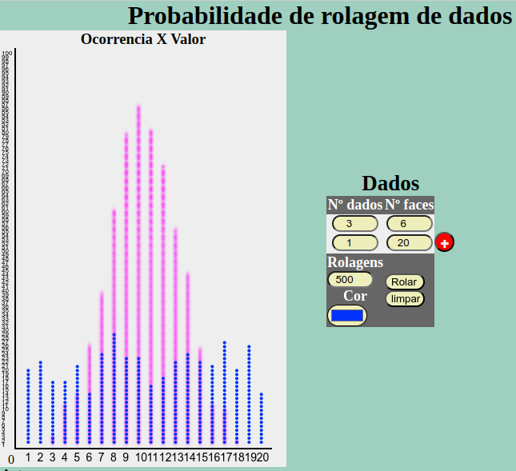

| nome |
descrição |
url |
imagem |
categorias |
autor |
hash |
| Bolinhas De Darwin |
Você é um predador e as bolinhas são as presas.
Observe a
evolução natural das bolinhas que com o tempo melhoram sua camuflagem e enganam o predador.
|
./simuls/BolinhasDeDarwin/index.html |

|
*SciSimuLab*,Biologia,Evolução
natural,Genética,Jogo
|
Steniovm |
6b37991c9c45c7da85ef20a9c8b9d284 |
|
| Bolinhas De Darwin AU |
Você é um predador e as bolinhas são as presas.
Observe a
evolução natural das bolinhas que com o tempo melhoram sua camuflagem e enganam o predador.
Arquivo HTML
unico para baixar. |
./simuls/BolinhasDeDarwin.html |
|
*SciSimuLab*,Baixar,Biologia,Evolução
natural,Genética,Jogo |
Steniovm |
7416ff896e46ed72a3f7c92f7cc88b43 |
|
| NumberBall |
Jogo de Futebol onde você controla os
algarismos. |
./simuls/NumberBall/index.html |

|
*SciSimuLab*,Jogo,Matemática,Números |
Steniovm |
89b822860fbf8ae4f6928cfbaf452590 |
|
| AlphaMathics |
Material Dourado para treinar o ensino de
operações
aritméticas em forma de um jogo muito desafiador. |
./simuls/AlphaMathics/index.html |
 |
*SciSimuLab*,Aritmética,Jogo,Matemática |
Steniovm |
21100fc6ac1e7bd398a7d58d580bda18 |
|
| AlgoCards |
Faça Algorítimos para danças, sair de labirintos,
desenhar, etc. |
./simuls/AlgoCards/index.html |

|
*SciSimuLab*,Algorítimo,Jogo,Mobile,Trigonometria
|
Steniovm |
f8cba210b7f3912bf50c153fc880df84 |
|
| Cinemática Relativística |
Simulador de viagem em velocidade relativística,
pode-se
controlar a velocidade da Luz e vários outros parâmetros. |
./simuls/relatividade/index.html |
 |
*SciSimuLab*,Cinemática,Função,Física,Relatividade
|
Steniovm |
dae6ab9d8496b2e5681847d981b696b0 |
|
| Batimento de Ondas |
Ondas sonoras interferindo, demostrando o o
fenômeno de
batimento, usado para afinação de instrumentos musicais. |
./simuls/Batimento/index.html |

|
*SciSimuLab*,Acústica,Função,Física,Gráfico,Ondas
|
Steniovm |
c8c6f56db73db855fe09110c69dd5d99 |
|
| Calor por Condução |
Simula a transferência de calor por condução com
acompanhamento da temperatura e controle de vários parâmetros. |
./simuls/ConducaoCalor/index.html |
 |
*SciSimuLab*,Física,Termodinâmica,Termologia
|
Steniovm |
2afe4524a5a51f2079ca75c434c2f120 |
|
| Calor por Convecção |
Simula a transferência de calor por convecção com
acompanhamento da temperatura e controle de vários parâmetros. |
./simuls/ConveccaoCalor/index.html |

|
*SciSimuLab*,Física,Termodinâmica,Termologia
|
Steniovm |
e8bdd8ba1248b37c7cecf724663e2316 |
|
| Calor por Radiação |
Simula a transferência de calor por radiação com
acompanhamento da temperatura e controle de vários parâmetros. |
./simuls/RadiacaoCalor/index.html |
 |
*SciSimuLab*,Física,Radiação,Termodinâmica,Termologia
|
Steniovm |
32ecdfb2c253193f77a295d9242abf3b |
|
| CentriSpace |
Simula o funcionamento de uma Colônia de O'Neill
onde a
pseudo-força centrifuga é usada para criar gravidade artificial. |
./simuls/CentriSpace/index.html |
 |
*SciSimuLab*,Astronomia,Cinemática,Clima,Força,Função,Física,Gravitação,Mecânica
|
RenanMagalhães |
15b87ff9043c6e1d04c22c5222ccae5f |
|
| Dice Probalitity |
Simula jogadas de dados enquanto cria gráficos
mostrando de forma empirica a probabilidades de se tirar cada valor. |
./simuls/DiceProbability/index.html |
 |
"*SciSimuLab*", "Aritmética","Estatística",
"Função", "Gráfico", "Jogo", "Matemática", "Números", "Probabilidade"
|
Steniovm |
5fcb0edf8dc0c4e434017846e8ecfa90 |
|
| Pensamento Computacional |
Faça um algorítimos para ajudar o personagem a
devolver
seu VHS para a locadora. |
https://avamec.mec.gov.br/ava-mec-ws/instituicao/seb/conteudo/modulo/1421/mini-games/Algoritmos/index.html
|

|
Algorítimo,Jogo,Matemática,Vetores |
AvaMec |
69b435e73d5b1cd5772a141b30051eb8 |
|
| Gráfico de Cálculo |
Dada uma função, prever as curvas da integral, ou
da
primeira ou da segunda derivada. |
https://phet.colorado.edu/pt_BR/simulations/calculus-grapher
|

|
Função,Física,Geometria,Gráfico,Matemática,Números,Trigonometria
|
Phet |
57369ca5002958e39b72174e6e390644 |
|
| Meu Sistema Solar |
Insera massa, velocidade e distância dos astros
para
simular uma órbita. |
https://phet.colorado.edu/pt_BR/simulations/my-solar-system
|

|
Astronomia,Força,Função,Física,Gravitação,Vetores
|
Phet |
d34a63b131558fac865092a50c902b6a |
|
| Óptica Geométrica |
Explica como uma imagem é formada por lentes ou
espelhos,
convergentes ou divergentes, utilizando diagramas de raios. |
https://phet.colorado.edu/pt_BR/simulations/geometric-optics
|

|
Física,Geometria,Gráfico,Trigonometria,Óptica
|
Phet |
daf46556718c91a8439b369fecebad9f |
|
| Energia na Pista de Skate |
Explicar o conceito de Conservação de Energia
Mecânica
usando energias cinética, potencial gravitacional e térmica. |
https://phet.colorado.edu/pt_BR/simulations/energy-skate-park
|

|
Cinemática,Energia,Força,Física,Gráfico |
Phet |
9916edf3fcd86d8cc224a95527fdd7c6 |
|
| Movimento com Aceleração Constante |
Mostra um carro movendo-se com aceleração
constante,
pode-se alterar a posição inicial, velocidade inicial e aceleração. e assim construir os
gráficos. |
https://www.walter-fendt.de/html5/phpt/acceleration_pt.htm
|
 |
Cinemática,Função,Física,Gráfico |
Walter-Fendt |
fb6ad2caabf88d37ad0beb64d5b518e4 |
|
| Onda electromagnética |
Mostra uma onda eletromagnética num plano de
polarização,
que se propaga no eixo x com representação dos vetores campo elétrico e campo magnético.
|
https://www.walter-fendt.de/html5/phpt/electromagneticwave_pt.htm
|
 |
Eletromagnetismo,Física,Gráfico,Ondas,Óptica
|
Walter-Fendt |
03c2503e84fbd35021cf0e6c7311fe4a |
|
| Referencial |
Acompanha o movimento de um ponto de uma bicicleta
do
ponto de vista de dois referênciais diferentes. |
https://www.vascak.cz/data/android/physicsatschool/template.php?s=mech_kolo&l=pt
|

|
Cinemática,Física,Mecânica,Relatividade |
Vascak |
b4929c7144c31a410a0c9efa59a79e0f |
|
| Comparar Números |
Varias representações de um número: palavra
escrita/falada, numeral, quadro de dez, unidades e objetos. Comparando quantidades. |
https://phet.colorado.edu/pt_BR/simulations/number-compare
|

|
Aritmética,Função,Matemática,Números |
Phet |
0c1852db3cb0b3fc3bf030416bef1cef |
|
| Jogos dos Números |
Várias representações de um número: palavra
escrita/falada, numeral, quadro de dez, uns e objetos. Operações aritméticas. |
https://phet.colorado.edu/pt_BR/simulations/number-play
|
 |
Aritmética,Jogo,Matemática,Números |
Phet |
9b17d27e5db9034d3fe8a3ecd110099d |
|
| Efeito Estufa |
Descrever o efeito dos gases do efeito estufa e
das nuvens
sobre a luz solar, na radiação infravermelha e na temperatura da superfície. Explicar por que os
gases de
efeito estufa afetam a temperatura. |
https://phet.colorado.edu/pt_BR/simulations/greenhouse-effect
|

|
Biologia,Clima,Física,Geografia,Radiação,Termodinâmica
|
Phet |
e40f805286674e78fa9e395137323030 |
|
| Média: Distribuição e Equilíbrio |
Mostra como a média é calculada. Descrever a média
em
termos de nivelamento, distribuição equitativa e ponto de equilíbrio. |
https://phet.colorado.edu/pt_BR/simulations/mean-share-and-balance
|

|
Aritmética,Estatística,Hidrostática,Matemática,Números
|
Phet |
404c18a27d5092ecf90717002b8942a9 |
|
| Monte um Núcleo |
Explicar como a mudança no número de nêutrons ou
prótons
afeta o número atômico e as espécies de isótopos. |
https://phet.colorado.edu/pt_BR/simulations/build-a-nucleus
|

|
Atômica,Energia,Física,Nuclear,Números,Quântica,Química,Radiação
|
Phet |
69b98456666b33161b7606af63a098dc |
|
| Centro e Variabilidade |
Descrever como a mediana é derivada. Prever os
efeitos de
um ponto fora da curva na média e na mediana. |
https://phet.colorado.edu/pt_BR/simulations/center-and-variability
|

|
Algorítimo,Aritmética,Jogo,Matemática,Números,Probabilidade
|
Phet |
038231ad6e70cde77974525d71629ff0 |
|
| Densidade |
Descrever como o conceito de densidade relaciona a
massa
de um objeto a seu volume. Medir o volume de um objeto, observando a quantidade de líquido que
ele desloca.
Identificar um material desconhecido por meio do cálculo de sua densidade e comparando-a com uma
tabela de
densidades conhecidas. |
https://phet.colorado.edu/pt_BR/simulations/density
|
 |
Densidade,Força,Física,Hidrostática |
Phet |
526477737fed1bdfa92a2f67eca6de52 |
|
| Kit para Montar Circuito: AC |
Construir circuitos a partir de desenhos
esquemáticos e
naturais, com corrente real e convencional. |
https://phet.colorado.edu/pt_BR/simulations/circuit-construction-kit-ac
|

|
Eletrodinâmica,Eletrostática,Energia,Física
|
Phet |
6c9b3f64f880bba0ed56f8e1a67712b3 |
|
| Modos Normais |
Defini a frequência, amplitude e fase de um modo
normal.
Explica o que é um modo normal. |
https://phet.colorado.edu/pt_BR/simulations/normal-modes
|
 |
Função,Física,Gráfico,Números,Ondas,Oscilações
|
Phet |
7eb3ae9355977b7c16c09ce5bb4ea6a3 |
|
| Fourier: Construindo Ondas |
Explica qualitativamente como os senos e cossenos
se somam
para produzir funções periódicas arbitrárias. Reconhece que cada componente de Fourier
corresponde a uma
onda senoidal com um comprimento de onda ou período diferente. Descreve os sons em termos de
ondas
senoidais. |
https://phet.colorado.edu/sims/html/fourier-making-waves/latest/fourier-making-waves_all.html?locale=pt_BR
|

|
Função,Física,Gráfico,Matemática,Ondas |
Phet |
be37aaba5afe4687cfaadcdab8e0b9f5 |
|
| Reta Numérica: Distância |
Representa a reta numérica mostrando a diferença
entre
números através da distância na reta. |
https://phet.colorado.edu/pt_BR/simulations/number-line-distance
|

|
Aritmética,Gráfico,Matemática,Números,Trigonometria
|
Phet |
01f89336dc522057101dc101bd6ed1f5 |
|
| Razão e Proporção |
Trabalha os conceitos de razão e proporção e usa a
linguagem matemática para descrever uma relação entre duas quantidades. |
https://phet.colorado.edu/pt_BR/simulations/ratio-and-proportion
|

|
Aritmética,Estatística,Função,Matemática,Números
|
Phet |
6d9ac801ece8d7f193e7c135a6b0ca1f |
|
| Laboratório de Colisões |
Aplica a lei da conservação do momento para
resolver
problemas de colisões. Construindo, desenhando e animando vetores representando o momentum do
“antes e
depois‟ das colisões. |
https://phet.colorado.edu/pt_BR/simulations/collision-lab
|

|
Cinemática,Energia,Física,Gráfico,Mecânica,Momentum,Trigonometria,Vetores
|
Phet |
fc36c456a9130678d5f18a6c775e26cc |
|
| Reta Numérica: Operações |
Raciocinar sobre adição e subtração de números
inteiros em
termos de localização de números na re+ta numerica. |
https://phet.colorado.edu/sims/html/number-line-operations/latest/number-line-operations_all.html?locale=pt_BR
|

|
Aritmética,Estatística,Gráfico,Matemática,Números
|
Phet |
eb16c8e74bdbe2879eef79bc2ca337f9 |
|
| Monte uma Molécula |
Construir moléculas simples a partir de átomos
reconhecer
o índice na fórmula molecular como o número de átomos na molécula. Reconhece que o coeficiente
indica o
número total de moléculas. Associa nome de moléculas comuns a múltiplas representações. |
https://phet.colorado.edu/pt_BR/simulations/build-a-molecule
|

|
Aritmética,Atômica,Física,Matemática,Nuclear,Números,Química
|
Phet |
d5af17c5973c1c8d0c409edd98016a2d |
|
| Seleção Natural |
Descrever quais características alteram a
capacidade de
sobrevivência de um organismo (coelhos) em diferentes ambientes. |
https://phet.colorado.edu/pt_BR/simulations/natural-selection
|

|
Biologia,Estatística,Evolução
natural,Genética,Jogo,Probabilidade |
Phet |
241c20402caba1cfb9dd1d94d5bef85a |
|
| Reta Numérica: Inteiros |
Usa números positivos e negativos para representar
quantidades em múltiplos contextos. Descreve a localização de um ponto em uma linha numérica em
relação a
outro número. |
https://phet.colorado.edu/pt_BR/simulations/number-line-integers
|

|
Aritmética,Gráfico,Matemática,Números |
Phet |
d9bdec23079c8eb9e7f184354d8c84e4 |
|
| Adição de Vetores: Equações |
Descreve e desenha vetores, com suas componentes e
equações. Realiza operações com vetores. |
https://phet.colorado.edu/pt_BR/simulations/vector-addition-equations
|

|
Física,Gráfico,Matemática,Números,Vetores |
Phet |
2baaf26900b43619d4a8dcb299cddb24 |
|
| Adição de Vetores |
Descreve e desenha vetores, com suas componentes.
Realiza
operações com vetores. |
https://phet.colorado.edu/pt_BR/simulations/vector-addition
|

|
Aritmética,Física,Geometria,Gráfico,Matemática,Números,Vetores
|
Phet |
1853dd95fac2e2c72a634383175485fe |
|
| Ajuste de Curva |
Explica como o alcance e a incerteza e o número de
pontos
de dados afetam o coeficiente de correlação e o qui quadrado. |
https://phet.colorado.edu/pt_BR/simulations/curve-fitting
|

|
Função,Física,Gráfico,Matemática,Números |
Phet |
bd43de37e8585672a28710fccb7e51b8 |
|
| Laboratório de Força Gravitacional |
Relaciona a força gravitacional às massas dos
objetos e à
distância entre os objetos. |
https://phet.colorado.edu/pt_BR/simulations/gravity-force-lab
|

|
Força,Função,Física,Gravitação,Vetores |
Phet |
dad47b014f8939eaf5fcb53914d22fa8 |
|
| Ondas: Intro |
Simula ondas com água, som e luz para ver como
estão
relacionadas. Discuti as propriedades das ondas usando vocabulário comum. |
https://phet.colorado.edu/pt_BR/simulations/waves-intro
|
 |
Acústica,Função,Física,Gráfico,Ondas,Oscilações,Óptica
|
Phet |
dccbba0807ae604674e5e3f89d2f0359 |
|
| Difusão |
Explica como dois gases se misturam. Projeta um
experimento para encontrar fatores que afetam a taxa de difusão. |
https://phet.colorado.edu/pt_BR/simulations/diffusion
|
 |
Física,Química,Termodinâmica,Termologia |
Phet |
fb401779b3cec83817a37c292dc5491f |
|
| Gases: Introdução |
Descrever o comportamento das partículas de gás
confinado. |
https://phet.colorado.edu/pt_BR/simulations/gases-intro
|
 |
Densidade,Energia,Física,Números,Química,Termodinâmica,Termologia
|
Phet |
b3ec480114f5b2b1d580b05956dd8e9f |
|
| Propriedades dos Gases |
Descrever o comportamento das partículas de gás
confinado.
Como as variáveis P, V, N e T. |
https://phet.colorado.edu/pt_BR/simulations/gas-properties
|

|
Atômica,Densidade,Estatística,Física,Química,Termodinâmica,Termologia
|
Phet |
98c14f9a40824e5ee06a5f1befda7216 |
|
| Espectro de Corpo Negro |
Descreve o que acontece com o espectro de corpo
negro à
medida que aumenta ou diminui a temperatura. |
https://phet.colorado.edu/sims/html/blackbody-spectrum/latest/blackbody-spectrum_all.html?locale=pt_BR
|

|
Astronomia,Física,Gráfico,Quântica,Radiação,Termodinâmica
|
Phet |
6074cb1dad4d3df8932d069230d96717 |
|
| Massas e Molas: Básico |
Descreve a Lei de Hooke por meio de massas e
molas,
realiza movimentos periódicos mostrando conservação de energia. |
https://phet.colorado.edu/pt_BR/simulations/masses-and-springs-basics
|

|
Energia,Força,Física,Gráfico,Oscilações |
Phet |
24b37cb53eb92f137bdb97d85d488012 |
|
| Formas de Energia e Transformações |
Mostra como a energia flui quando os objetos são
aquecidos
ou resfriados. Descreve os diferentes tipos de energia mostrando a conservação com exemplos da
vida
quotidiana. |
https://phet.colorado.edu/pt_BR/simulations/energy-forms-and-changes
|

|
Energia,Física,Gráfico,Mecânica,Termodinâmica
|
Phet |
66d65a6159b8c46b509ad4082da29167 |
|
| Interferência de Onda |
Cria ondas da água, do som e da luz mostrando como
estão
relacionadas. Projeta um experimento para medir a velocidade da onda. Cria um padrão de
interferência com
duas fontes e determinar as formas de mudar o padrão. |
https://phet.colorado.edu/pt_BR/simulations/wave-interference
|

|
Função,Física,Gráfico,Ondas,Oscilações |
Phet |
b108afeb872b29d9a8b4e3058781b49b |
|
| Frações: Números Mistos |
Monta frações correspondentes usando números e
figuras e
mostra como numerador e denominador mudam o resultado da fração. |
https://phet.colorado.edu/pt_BR/simulations/fractions-mixed-numbers
|

|
Aritmética,Geometria,Matemática,Números |
Phet |
a8de6d588deec95f27fc1c48989578a5 |
|
| Frações: Intro |
Monta frações correspondentes usando números e
figuras e
mostra como numerador e denominador mudam o resultado da fração. |
https://phet.colorado.edu/pt_BR/simulations/fractions-intro
|

|
Aritmética,Geometria,Matemática,Números |
Phet |
a6b3c18c5f2bca2ec8d6495e406d17e8 |
|
| Construir uma Fração |
Monta frações usando números e círculos e mostra
como
numerador e denominador mudam o resultado da fração. |
https://phet.colorado.edu/pt_BR/simulations/build-a-fraction
|

|
Aritmética,Geometria,Matemática,Números |
Phet |
bcbf44f6264a0b6bd56fae6eb274786d |
|
| Frações: Igualdade |
Monta frações usando números e figuras geométricas
e
mostra como numerador e denominador mudam o resultado da fração. |
https://phet.colorado.edu/pt_BR/simulations/fractions-equality
|

|
Aritmética,Geometria,Matemática,Números |
Phet |
cf24b24bc642c972dab446ef4910b1e5 |
|
| Lei de Coulomb |
Relaciona a força eletrostática às cargas e à
distância
entre os objetos. |
https://phet.colorado.edu/pt_BR/simulations/coulombs-law
|
 |
Eletrostática,Força,Função,Física,Jogo,Química
|
Phet |
09d85d92c062ffdb326c7a43549d5abd |
|
| Gráfico de Quadráticas |
Mostra como os coeficientes de uma função
quadrática muda
o gráfico da função. |
https://phet.colorado.edu/pt_BR/simulations/graphing-quadratics
|

|
Aritmética,Função,Gráfico,Matemática,Números
|
Phet |
52afe93873172863e79666047595b1a8 |
|
| Massas e Molas |
Descreve a Lei de Hooke por meio de massas e
molas,
realiza movimentos periódicos mostrando conservação de energia. |
https://phet.colorado.edu/pt_BR/simulations/masses-and-springs
|

|
Energia,Força,Física,Oscilações,Química |
Phet |
c06d1ca6399381d12134dc68eca84015 |
|
| Explorador da Igualdade: Duas Variáveis |
Resolver e manipular equações algébricas
substituindo
valores diferentes por uma variável. Usar um modelo de balança para resolver uma equação para um
valor
desconhecido e justificar suas estratégias para resolver. |
https://phet.colorado.edu/pt_BR/simulations/equality-explorer-two-variables
|

|
Aritmética,Função,Matemática,Números |
Phet |
5fab62048624b792943cadabc369d711 |
|
| Explorador da Igualdade: Básico |
Usa modelo com balanças e pesos para resolver
equação com
valor desconhecido e justifica suas estratégias para resolver. |
https://phet.colorado.edu/pt_BR/simulations/equality-explorer-basics
|

|
Aritmética,Função,Matemática,Números |
Phet |
b1157c565d2a00adde34a3adb178c1f2 |
|
| Explorador da Igualdade |
Resolve e manipula equações algébricas aplicando
propriedades de números reais e de igualdades. |
https://phet.colorado.edu/pt_BR/simulations/equality-explorer
|

|
Aritmética,Função,Matemática,Números |
Phet |
65418b4dcff722835a9c81150d080aaf |
|
| Modelo de Área: Álgebra |
Mostra a área representada pelo produto de dois
números.
Representa um problema de multiplicação como a área de um retângulo, proporcionalmente ou usando
uma área
genérica. |
https://phet.colorado.edu/pt_BR/simulations/area-model-algebra
|

|
Aritmética,Função,Geometria,Jogo,Matemática,Números
|
Phet |
8e873d0bdb94c00adab7e379b49b4ba7 |
|
| Modelo de Área: Decimais |
Mostra a área representada pelo produto de dois
números. |
https://phet.colorado.edu/pt_BR/simulations/area-model-decimals
|

|
Aritmética,Função,Geometria,Matemática,Números
|
Phet |
9b3ece9c3c87498e93303de4114f01f1 |
|
| Modelo de Área: Multiplicação |
Representa um problema de multiplicação como a
área de um
retângulo, proporcionalmente ou usando uma área genérica. |
https://phet.colorado.edu/pt_BR/simulations/area-model-multiplication
|

|
Aritmética,Função,Geometria,Jogo,Matemática,Números
|
Phet |
aaa9e764e8ac8a53e823f3b06d3c0d1b |
|
| Modelo de Área: Intro |
Representa a área que corresponde ao produto de
dois
números. |
https://phet.colorado.edu/pt_BR/simulations/area-model-introduction
|

|
Aritmética,Função,Geometria,Matemática,Números
|
Phet |
289797a029b1b2ef2f3693083b3f5159 |
|
| Fundamentos da Expressão Genética |
Explica a sequência principal de eventos que
ocorrem
dentro de uma célula que leva à síntese proteica. |
https://phet.colorado.edu/pt_BR/simulations/gene-expression-essentials
|

|
Biologia,Estatística,Evolução
natural,Genética,Probabilidade,Química |
Phet |
ef4b5adb598f500ec81fa9af4a6f4012 |
|
| Laboratório do Capacitor: Básico |
Explica as relações entre tensão, carga, energia
armazenada e capacitância. Prevé como a capacitância muda quando a área de cada placa ou a
separação entre
elas é alterada. |
https://phet.colorado.edu/pt_BR/simulations/capacitor-lab-basics
|

|
Eletrodinâmica,Eletrostática,Energia,Função,Física
|
Phet |
d77e410cc349998f2561f1c281340601 |
|
| Kit para Montar Circuito DC |
Construir circuitos a partir de desenhos
esquemáticos e
naturais, com corrente real e convencional. |
https://phet.colorado.edu/pt_BR/simulations/circuit-construction-kit-dc
|

|
Eletrodinâmica,Eletrostática,Energia,Física,Gráfico
|
Phet |
0c42e8582c19827839584718f6c1d9cf |
|
| Laboratório do Pêndulo |
Mostra como a energia e período de um pendulo
varia
conforme os valores das variáveis. |
https://phet.colorado.edu/pt_BR/simulations/pendulum-lab
|
 |
Energia,Função,Física,Oscilações |
Phet |
733b2b15073c1775785595524fecc66a |
|
| Movimento de Projétil |
Determina como cada parâmetro (altura inicial,
ângulo
inicial, velocidade inicial, massa, diâmetro e altitude) afeta a trajetória de um objeto, com e
sem
resistência ao ar. |
https://phet.colorado.edu/pt_BR/simulations/projectile-motion
|

|
Cinemática,Energia,Força,Função,Física,Mecânica,Momentum,Vetores
|
Phet |
6aa38af722f7ba4096fdac7097ef407d |
|
| Polaridade da Molécula |
Prevé e indica a polaridade molecular considerando
polaridade da ligação e a geometria molecular. |
https://phet.colorado.edu/pt_BR/simulations/molecule-polarity
|

|
Atômica,Biologia,Eletrostática,Física,Números,Química
|
Phet |
7f6f49887c3a1f7bcaf24b4ae3b07f4b |
|
| Expressões |
Interpreta uma expressão em representações
abstratas e
concretas e simplifica expressões combinando termos semelhantes |
https://phet.colorado.edu/pt_BR/simulations/expression-exchange
|

|
Aritmética,Função,Jogo,Matemática,Números |
Phet |
5c47e0c672c66275c98f08c7ea7b3cd2 |
|
| Inclinação e Intersecção |
Plota o gráfico de uma linha dada uma equação na
forma de
interceptação de inclinação. Prevé como a mudança no gráfico de uma linha afeta a equação.
|
https://phet.colorado.edu/pt_BR/simulations/graphing-slope-intercept
|

|
Função,Gráfico,Matemática,Números |
Phet |
df7b80c59700022e0afc245d04c34330 |
|
| Construtor de Funções: Básico |
Defini uma função como uma regra que relaciona
cada
entrada para exatamente uma saída e agindo de forma previsível nas entradas. |
https://phet.colorado.edu/pt_BR/simulations/function-builder-basics
|

|
Algorítimo,Função,Geometria,Matemática,Números
|
Phet |
fdde5c151039d123ffbc69742b84aae7 |
|
| Parque da Proporção |
Usa o significado de razão e de proporção em
diferentes
contextos. |
https://phet.colorado.edu/pt_BR/simulations/proportion-playground
|

|
Algorítimo,Aritmética,Função,Matemática,Números
|
Phet |
5700a1cd9975ba8d07add89590ef1ea5 |
|
| Taxas Unitárias |
Interpreta razões de unidades mistas (por exemplo,
$/kg).
Defini a taxa unitária e determina um método para calculá-la. |
https://phet.colorado.edu/pt_BR/simulations/unit-rates
|
 |
Algorítimo,Aritmética,Função,Matemática,Números
|
Phet |
21c4a79e07ea84c564f75c3bcac3e3e3 |
|
| Some um 10 |
Desenvolve estratégias de matemática mental ao
separar e
juntar números. |
https://phet.colorado.edu/pt_BR/simulations/make-a-ten
|
 |
Algorítimo,Aritmética,Função,Matemática,Números
|
Phet |
7d05d57eeddfe2dc25347bd7e23d4fdf |
|
| Estados da Matéria |
Descreve como aquecimento ou resfriamento altera o
comportamento das moléculas em ólidos, líquidos e gases. |
https://phet.colorado.edu/pt_BR/simulations/states-of-matter
|

|
Atômica,Clima,Densidade,Energia,Física,Química,Termodinâmica,Termologia
|
Phet |
c8d3a00eeca8bb5d78576d0ccd6d3973 |
|
| Gravidade e Órbitas |
Descreve as órbitas entre Sol, Terra, Lua e
estação
espacial, e astros aleatórios. |
https://phet.colorado.edu/pt_BR/simulations/gravity-and-orbits
|

|
Astronomia,Força,Função,Física,Gravitação,Gráfico
|
Phet |
7f6a435a269bf582f34cfacaa95e7337 |
|
| Probabilidade Plinko |
Conta o número de bolas em um escaninho e
relacione isso à
probabilidade de cair nesse compartimento. |
https://phet.colorado.edu/pt_BR/simulations/plinko-probability
|

|
Estatística,Matemática,Números,Probabilidade
|
Phet |
6a2a6237afb91b5a37e065f63c143c15 |
|
| Interações Atômicas |
Explica como as forças atrativas e repulsivas
regem as
interações entre os átomos. |
https://phet.colorado.edu/pt_BR/simulations/atomic-interactions
|

|
Atômica,Força,Função,Física,Gráfico,Química
|
Phet |
db48edd83856626d386319a997880589 |
|
| Cargas e Campos |
Determina variáveis que afetam o modo como corpos
carregados interagem por meio do campo elétrico. |
https://phet.colorado.edu/pt_BR/simulations/charges-and-fields
|

|
Eletrostática,Energia,Força,Física,Gráfico
|
Phet |
a29b7358f4a7bb837bdf17d28ac10163 |
|
| Espalhamento de Rutherford |
Descreve a diferença qualitativa entre o
espalhamento por
núcleo carregado positivamente e átomo pudim de passas eletricamente neutro |
https://phet.colorado.edu/pt_BR/simulations/rutherford-scattering
|

|
Atômica,Física,Momentum,Nuclear,Probabilidade,Quântica,Química
|
Phet |
be322dcb69fd284e4c82c8fe1d15aad8 |
|
| Construtor de Funções |
Defini uma função como uma regra relativa a cada
entrada
para exatamente uma saída e previsivelmente agindo em entradas. |
https://phet.colorado.edu/pt_BR/simulations/function-builder
|

|
Algorítimo,Aritmética,Função,Matemática,Números
|
Phet |
74e92b27820178572cd866c63295361f |
|
| Isótopos e Massa Atômica |
Definir isótopo usando o número de massa, número
atômico,
número de prótons, nêutrons e elétrons. |
https://phet.colorado.edu/pt_BR/simulations/isotopes-and-atomic-mass
|

|
Atômica,Física,Nuclear,Números,Química,Radiação
|
Phet |
99b7280926b414b696f618d35d34263f |
|
| Neurônio |
Descreve por que e como os íons conseguem ou não
se mover
através das membranas dos neurônios. |
https://phet.colorado.edu/pt_BR/simulations/neuron
|
 |
Biologia,Eletrostática,Física,Química |
Phet |
9c35d11c4145405d72232f4fd0916f90 |
|
| Tour Trigonométrico |
Defini funções trigonométricas para qualquer
ângulo
mostrando o gráfico, seno e cosseno. |
https://phet.colorado.edu/pt_BR/simulations/trig-tour
|
 |
Função,Geometria,Gráfico,Matemática,Números,Trigonometria,Vetores
|
Phet |
19987c377aef520b4e4b4d6495c477fd |
|
| Desvio da Luz |
Explica como a luz se desvia na interface entre
dois meios
( refração ) e o que determina o ângulo ( Lei de Snell ). |
https://phet.colorado.edu/pt_BR/simulations/bending-light
|

|
Física,Geometria,Trigonometria,Óptica |
Phet |
b15fc3e348b646142d3bdb7256b9e6d8 |
|
| Aritmética |
Explica como a tabuada ajuda a entender a
multiplicar,
fatorar e dividir. Desenvolve múltiplas estratégias para problemas aritméticos. |
https://phet.colorado.edu/pt_BR/simulations/arithmetic
|
 |
Aritmética,Função,Geometria,Jogo,Matemática,Números
|
Phet |
5556a754bbadd905c9046c36e1deb455 |
|
| Lei de Hooke |
Explica as relações entre força aplicada, a força
da mola,
constante da mola, deslocamento e energia potencial. |
https://phet.colorado.edu/pt_BR/simulations/hookes-law
|
 |
Energia,Força,Física,Gráfico,Mecânica |
Phet |
4c252de2985a3b86da2fc1a88f467cad |
|
| Moléculas e Luz |
Explora como a luz interage com as moléculas na
atmosfera
e identifica a absorção da luz dependente da molécula e do tipo de luz |
https://phet.colorado.edu/pt_BR/simulations/molecules-and-light
|

|
Física,Quântica,Química,Radiação,Óptica |
Phet |
06a3180c6e68be2283f8c83674adee02 |
|
| Regressão por Quadrados Mínimos |
Cria um gráfico a partir de pontos usando a
regressão de
mínimos quadrados. |
https://phet.colorado.edu/pt_BR/simulations/least-squares-regression
|

|
Aritmética,Função,Geometria,Gráfico,Matemática,Números,Trigonometria
|
Phet |
6d96e719cee5edb3cf146a27024c074c |
|
| Geometria Molecular |
Explica que a geometria molecular se deve a
repulsões
entre os grupos de elétrons e nomes das geométrias. |
https://phet.colorado.edu/pt_BR/simulations/molecule-shapes
|

|
Eletrostática,Física,Geografia,Geometria,Química,Trigonometria
|
Phet |
c552adec165de2fd66e598f735d4daf8 |
|
| Reagentes, Produtos e Excesso |
Reconhece que os átomos são conservados durante
uma reação
química. |
https://phet.colorado.edu/pt_BR/simulations/reactants-products-and-leftovers
|

|
Algorítimo,Aritmética,Atômica,Matemática,Química
|
Phet |
5cc75c9f290cf59e92dc214580f45c0a |
|
| Lei de Faraday |
Explica o que acontece quando movemos um ímã
através de
uma bobina em diferentes velocidades e como isso afeta o brilho da lâmpada e da magnitude e
sinal da
tensão. |
https://phet.colorado.edu/pt_BR/simulations/faradays-law
|
 |
Eletrodinâmica,Eletromagnetismo,Energia,Física,Oscilações
|
Phet |
b1578701558793c8d346d7bc9b7039fb |
|
| Escala de pH |
Descreve em uma escala molecular, com ilustrações,
como o
equilíbrio da água varia com o pH |
https://phet.colorado.edu/sims/html/ph-scale/latest/ph-scale_all.html?locale=pt_BR
|
 |
Biologia,Densidade,Função,Física,Química |
Phet |
5875153c7a97631f533aa675527148d8 |
|
| Construtor de Área |
Encontre a área e perímetro de uma forma contando
quadrículas. |
https://phet.colorado.edu/pt_BR/simulations/area-builder
|
 |
Geometria,Gráfico,Jogo,Matemática,Números |
Phet |
713d18471f1aa1cd210987b65f9cf695 |
|
| Onda em Corda |
Discuti as propriedades de onda utilizando um
vocabulário
comum e preve o comportamento das ondas em diferentes meios e nos terminais de reflexão.
|
https://phet.colorado.edu/pt_BR/simulations/wave-on-a-string
|

|
Função,Física,Ondas,Oscilações |
Phet |
eec6df90a5d24d02c485a7c404d29102 |
|
| Visão Colorida |
Determina a cor que a pessoa vê através de
combinações de
luz vermelha, verde e azul. Descreve a cor da luz capaz de passar por filtros coloridos
diferentes. |
https://phet.colorado.edu/sims/html/color-vision/latest/color-vision_all.html?locale=pt_BR
|
 |
Aritmética,Biologia,Física,Radiação,Óptica
|
Phet |
f8286e59d767488fcc914b6510870266 |
|
| Balanceamento de Equações Químicas |
Balanceia equação química reconhecendo que o
número de
átomos de cada elemento é conservado em uma reação química. |
https://phet.colorado.edu/pt_BR/simulations/balancing-chemical-equations
|

|
Aritmética,Física,Jogo,Números,Química |
Phet |
30ee88d88ef611888fddac577f0698f6 |
|
| Traçando Retas |
Explica como a inclinação de uma linha
representada
graficamente pode ser calculada. Desenha a linha no gráfico dada uma equação. |
https://phet.colorado.edu/pt_BR/simulations/graphing-lines
|

|
Função,Geometria,Gráfico,Matemática,Números,Trigonometria,Vetores
|
Phet |
7fb8dbed4dc3b1d22212a8bc1161d640 |
|
| Associe Frações |
Encontrar frações correspondentes usando números e
imagens. |
https://phet.colorado.edu/pt_BR/simulations/fraction-matcher
|

|
Aritmética,Geometria,Jogo,Matemática,Números
|
Phet |
e4203849c3487cf116dd01baa2a31a0c |
|
| Balançando |
Utiliza conceitos de torque (Momento de uma força)
para
prever como objetos de massas diferentes podem ser usados para equilibrar uma gangorra.
|
https://phet.colorado.edu/pt_BR/simulations/balancing-act
|

|
Aritmética,Força,Função,Física,Mecânica,Momentum,Vetores
|
Phet |
2bccdf9c5c98b7d85e46af534507bdc3 |
|
| Soluções Ácido-Base |
Investiga combinações diferentes de
força/concentrações
que resultem em valores de pH iguais. Descreve como instrumentos comuns ajudam a identificar se
uma solução
é um ácido ou base, se é forte ou fraco, se é concentrado ou diluído. |
https://phet.colorado.edu/pt_BR/simulations/acid-base-solutions
|

|
Aritmética,Densidade,Estatística,Física,Química
|
Phet |
7803de0c76e76e70709099a566057125 |
|
| Sob Pressão |
Descrever como a pressão varia no ar e na água em
função
da profundidade. |
https://phet.colorado.edu/sims/html/under-pressure/latest/under-pressure_all.html?locale=pt_BR
|

|
Densidade,Força,Função,Física,Hidrostática
|
Phet |
664fa6ec1a53e936d88139d7d0a6a854 |
|
| Atrito |
Descreve um modelo de atrito a nível
molecular. |
https://phet.colorado.edu/pt_BR/simulations/friction
|
 |
Atômica,Cinemática,Energia,Força,Física,Mecânica,Termologia
|
Phet |
f3d30da4b23d173ee177b15bce216516 |
|
| Forças e Movimento: Noções Básicas |
Determina a soma de forças (força resultante) em
um objeto
e prevé o movimento dele. |
https://phet.colorado.edu/pt_BR/simulations/forces-and-motion-basics
|

|
Cinemática,Energia,Força,Física,Mecânica,Momentum
|
Phet |
b585212ddb734ee8259176dd7e6d3ed1 |
|
| John Travoltagem |
Descreve um modelo para conceitos comuns de
eletricidade
estática (transferência de carga, atração, repulsão, e aterramento). |
https://phet.colorado.edu/pt_BR/simulations/john-travoltage
|

|
Eletrostática,Energia,Física,Jogo |
Phet |
0ed6c905d3ad76006ff3db3fe31b90aa |
|
| Concentração |
Descreve as relações entre volume e quantidade de
soluto
na concentração da solução. |
https://phet.colorado.edu/pt_BR/simulations/concentration
|

|
Aritmética,Atômica,Biologia,Densidade,Física,Química
|
Phet |
71214f11613a78b6f737927f27eb1676 |
|
| Balões e Eletricidade Estática |
Descreve um modelo para conceitos comuns de
eletricidade
estática (transferência de carga, indução, atração, repulsão e aterramento)Prevendo a força de
acordo com a
distância em várias configurações de carga |
https://phet.colorado.edu/pt_BR/simulations/balloons-and-static-electricity
|

|
Atômica,Eletrostática,Energia,Força,Física
|
Phet |
f9a282b9adb9b754b34c68c1f8bc3e66 |
|
| Laboratório da Lei de Beer |
Descreve as relações entre volume e quantidade de
soluto
com a concentração da solução usando a absorção e transmissão da luz. |
https://phet.colorado.edu/pt_BR/simulations/beers-law-lab
|

|
Energia,Função,Física,Números,Ondas,Química,Óptica
|
Phet |
437e17928524b37e6d0b044081ef9455 |
|
| Molaridade |
Descreve as relações entre volume e quantidade de
soluto
para a concentração explicando como a cor da solução e concentração estão relacionados. |
https://phet.colorado.edu/pt_BR/simulations/molarity
|
 |
Aritmética,Energia,Função,Física,Números,Química,Óptica
|
Phet |
e5b7e284bb1dd7aa40e1a089fd165927 |
|
| Lei de Ohm |
Preve como muda a corrente quando a resistência
e/ou
tensão do circuito, ou resistor, é alterada. |
https://phet.colorado.edu/pt_BR/simulations/ohms-law
|
 |
Eletrodinâmica,Função,Física,Matemática |
Phet |
88cb8accef106fe07ec6f0513a998178 |
|
| Resistência em um Fio |
Prevé como alterar as variáveis, área, comprimento
e
resistividade de um condutor irá afetar a resistência. |
https://phet.colorado.edu/pt_BR/simulations/resistance-in-a-wire
|

|
Eletrodinâmica,Função,Física,Matemática |
Phet |
4a7b7e7629cab65102e44740464d5059 |
|
| Monte um Átomo |
Usa o número de prótons, nêutrons e elétrons para
desenhar
um modelo do átomo, identificando o elemento, e determinando a massa e a carga. |
https://phet.colorado.edu/pt_BR/simulations/build-an-atom
|

|
Aritmética,Atômica,Eletrostática,Física,Números,Química
|
Phet |
08ccf41b6636f6c43cce40ad7acd6a76 |
|
| Equilibrio entre três forças |
Mostra, atravez de pesos e fios, como tres forças
podem se
equilibrar utilizando a regra do paralelograma. |
https://www.walter-fendt.de/html5/phpt/equilibriumforces_pt.htm
|
 |
Força,Física,Matemática,Mecânica,Vetores |
Walter-Fendt |
06d5f9a7de0459f464d39d3f9d36bec8 |
|
| Resultante de forças (Adição de vectores) |
Mostra gráficamente como somar vetores. |
https://www.walter-fendt.de/html5/phpt/resultant_pt.htm
|
 |
Força,Física,Matemática,Mecânica,Vetores |
Walter-Fendt |
57ba2497ce608e4786120c02c769c86d |
|
| Decomposição de uma força nas suas componentes
|
Mostra gráficamente como decompor vetores em retas
linearmente independentes. |
https://www.walter-fendt.de/html5/phpt/forceresolution_pt.htm
|
 |
Física,Matemática,Mecânica,Trigonometria,Vetores
|
Walter-Fendt |
32686c97f130bd8e72dc54f35e18b9a2 |
|
| Sistema de roldanas |
Faça subir ou descer um objeto suspenso e observe
uma mola
mostrando a tensão no fio. Podem ser alterados os valores do peso do objeto e das roldanas.
|
https://www.walter-fendt.de/html5/phpt/pulleysystem_pt.htm
|
 |
Força,Física,Mecânica,Vetores |
Walter-Fendt |
a21e7af2f14832d17c4327cd8eb7ae9e |
|
| Princípio das alavancas |
Mostra uma alavanca interfixa à qual podem ser
aplicadas
pequenos pesos de valor unitário e varias posições. |
https://www.walter-fendt.de/html5/phpt/lever_pt.htm
|
 |
Aritmética,Força,Física,Mecânica,Vetores |
Walter-Fendt |
b65cd21cf45111185caf17f19e8f39d6 |
|
| Plano inclinado |
Mostra o movimento de um corpo subindo um plano
inclinado
a velocidade constante permitindo a observação das forças que atuam sobre o corpo nessas
condições.A
inclinação, o peso do corpo e o coeficiente de atrito podem ser alterados dentro de certos
limites. |
https://www.walter-fendt.de/html5/phpt/inclinedplane_pt.htm
|
 |
Força,Física,Mecânica,Vetores |
Walter-Fendt |
c6382a96a0a458b4dbe4f25d3d122cfc |
|
| Segunda Lei de Newton |
Simula uma calha de ar tal como as utilizadas em
laboratório para movimentos com aceleração constante. Os valores da massa do carrinho, da massa
suspensa e
do atrito, podem ser modificados. |
https://www.walter-fendt.de/html5/phpt/newtonlaw2_pt.htm
|
 |
Força,Função,Física,Gráfico,Mecânica,Vetores
|
Walter-Fendt |
0f86a16a6ec34a565ad3579502148972 |
|
| Movimento de um projétil |
Mostra a trajetória (e outras variáveis) de um
projéctil
lançado com altura, velocidade, ângulo, massa e aceleração ajustável |
https://www.walter-fendt.de/html5/phpt/projectile_pt.htm
|
 |
Cinemática,Energia,Força,Física,Gráfico,Mecânica
|
Walter-Fendt |
898fa518e60936f0511555c5940c479f |
|
| Colisões elásticas e inelásticas |
Simula colisões elásticas e inelásticas pelo
choque entre
dois vagões mostrando a conservação do momento linear. |
https://www.walter-fendt.de/html5/phpt/collision_pt.htm
|
 |
Energia,Força,Física,Mecânica,Momentum,Vetores
|
Walter-Fendt |
2b2ed1f89e31c11095d98227cbe0dde5 |
|
| Pêndulo de Newton |
Simula uma experiência muito conhecida que
demonstra a
conservação do momento e a conservação da energia. |
https://www.walter-fendt.de/html5/phpt/newtoncradle_pt.htm
|
 |
Energia,Função,Física,Mecânica,Momentum,Oscilações
|
Walter-Fendt |
c23b8cf4914e1df308565a2c446a3cde |
|
| Movimento circular uniforme |
Simula um movimento circular uniforme, podendo
observar
num sistema de eixos o gŕafico da Força, Aceleração, Velocidade e Posição em função do tempo. O
raio da
trajetória, a massa do objeto e o período do movimento são ajustaveis. |
https://www.walter-fendt.de/html5/phpt/circularmotion_pt.htm
|
 |
Cinemática,Função,Física,Gráfico,Mecânica,Trigonometria
|
Walter-Fendt |
7ef6c8dc7643b0a40bbd84155b83f945 |
|
| Carrossel (Força centripeta) |
Mostra forças vetoriais em um carrossel de
pendulo,
podendo ajustar periodo, raio, comprimento dos cabos e massa dos pêndulos. |
https://www.walter-fendt.de/html5/phpt/carousel_pt.htm
|
 |
Cinemática,Força,Física,Mecânica,Vetores |
Walter-Fendt |
908f4d2762eeeaa4773cc6530fa7ed69 |
|
| Montanha-russa invertida (Força centripeta)
|
Encontre a altura minima para soltar um carrinho
da
montanha russa para que ele possa completar o loop. |
https://www.walter-fendt.de/html5/phpt/looping_pt.htm
|
 |
Cinemática,Energia,Força,Física,Mecânica |
Walter-Fendt |
ef75d35816a0f2788dd840d303dafc42 |
|
| Primeira Lei de Kepler |
Mostra a orbita de planetas ao longo do tempo
podendo
ajustar valores. |
https://www.walter-fendt.de/html5/phpt/keplerlaw1_pt.htm
|
 |
Astronomia,Cinemática,Força,Física,Geometria,Gravitação,Gráfico,Matemática,Mecânica
|
Walter-Fendt |
be73f79271797e19b6923603eb1d5256 |
|
| Segunda Lei de Kepler |
Mostra a orbita de planetas ao longo do tempo
podendo
ajustar valores. |
https://www.walter-fendt.de/html5/phpt/keplerlaw2_pt.htm
|
 |
Astronomia,Cinemática,Força,Física,Geometria,Gravitação,Gráfico,Matemática,Mecânica
|
Walter-Fendt |
d7cbbf4f876731c04fa330655c5d3463 |
|
| Pressão hidrostática |
Mostra um modo para medir a pressão hidrostática
no
interior de um líquido utilizando um tubo manométrico em U. |
https://www.walter-fendt.de/html5/phpt/hydrostaticpressure_pt.htm
|
 |
Clima,Densidade,Força,Física,Hidrostática,Mecânica
|
Walter-Fendt |
ccdceb974d1701361f5a6fdd8e520f40 |
|
| Impulsão nos líquidos |
Simula uma experiência simples relativa à força de
empuxo
num líquido: Um sólido pendurado num dinamómetro é colocado num liquido. |
https://www.walter-fendt.de/html5/phpt/buoyantforce_pt.htm
|
 |
Clima,Densidade,Força,Física,Hidrostática,Mecânica
|
Walter-Fendt |
aca50a3647e1a43827905c70f173cfc1 |
|
| Pêndulo simples |
Mostra a variação da elongação, da velocidade, da
aceleração tangencial, da força e energia, durante a oscilação de um pêndulo. |
https://www.walter-fendt.de/html5/phpt/pendulum_pt.htm
|
 |
Força,Função,Física,Gráfico,Mecânica,Ondas,Oscilações
|
Walter-Fendt |
4f69fdc39755ebc04958a86bf9bbd3cc |
|
| Pêndulo em mola |
Mostra a variação das grandezas associadas à
oscilação de
uma massa suspensa de uma mola - elongação, velocidade, aceleração, força e energia - durante a
oscilação. |
https://www.walter-fendt.de/html5/phpt/springpendulum_pt.htm
|
 |
Força,Função,Física,Gráfico,Mecânica,Ondas,Oscilações
|
Walter-Fendt |
6669b24cca2e61bc27f99424f9e90410 |
|
| Pêndulos ligados |
Mostra dois pêndulos ligados através de uma mola
com um
baixo coeficiente de elasticidade. É característico desse sistemas que a energia da oscilação se
transfira
alternadamente de uma parte do sistema para a outra parte do sistema. |
https://www.walter-fendt.de/html5/phpt/coupledpendula_pt.htm
|
 |
Energia,Força,Função,Física,Gráfico,Mecânica,Ondas,Oscilações
|
Walter-Fendt |
31eb93c056d96ccc4af2b1da805a8503 |
|
| Oscilações forçadas (Ressonância) |
Um pêndulo mola é movimentado por ação externa
sendo esse
movimento assumido como harmônico. Assim descreve esse movimento através da função coseno como
oscilações
forçadas. |
https://www.walter-fendt.de/html5/phpt/resonance_pt.htm
|
 |
Energia,Força,Função,Física,Gráfico,Mecânica,Ondas,Oscilações
|
Walter-Fendt |
4d81535424f507f65675ea15d382d2f7 |
|
| Modulação |
Apresenta o efeito da sobreposição de ondas com
frequências diferentes. A consequência é a formação de uma onda modulada, que de forma
simplificada pode-se
dizer que é uma onda “dentro” de outra. |
https://www.walter-fendt.de/html5/phpt/beats_pt.htm
|
 |
Função,Física,Gráfico,Ondas,Oscilações,Trigonometria
|
Walter-Fendt |
270b7d23112af5f57f12d63cb00256d3 |
|
| Ondas estacionárias transversais |
O usuário pode escolher se a reflexão se dá na
extremidade
livre ou na fixa, qual ou quais as ondas que quer observar: |
https://www.walter-fendt.de/html5/phpt/standingwavereflection_pt.htm
|
 |
Função,Física,Gráfico,Ondas,Oscilações |
Walter-Fendt |
e894cd1a38bdafc3227131530d299567 |
|
| Ondas estacionárias longitudinais |
Mostra os harmônicos produzidos num tubo de ar
como
exemplo de ondas estacionárias, ilustrando também o movimento das moléculas durante o processo
de
oscilação. |
https://www.walter-fendt.de/html5/phpt/standinglongitudinalwaves_pt.htm
|
 |
Função,Física,Gráfico,Ondas,Oscilações |
Walter-Fendt |
f5bd0e3c71222283c7597020efae53fa |
|
| Interferência para duas ondas esféricas |
Mostra a interferência entre duas ondas do tipo
das ondas
sonoras (esféricas). Admite-se que as ondas são geradas por duas fontes pontuais em fase.
Admite-se portanto
para a interferência o princípio da adição considerando o sinal a cada instante. |
https://www.walter-fendt.de/html5/phpt/interference_pt.htm
|
 |
Função,Física,Gráfico,Ondas,Oscilações |
Walter-Fendt |
820768ce8f17703d63f5ab06c2d9b895 |
|
| Um exemplo do Efeito Doppler |
Uma ambulância passa por um cidadão parado na via
pública.
As condições de “captação‟ do som pelo ouvido do sujeito, são diferentes conforme a ambulância
se aproxima
ou afasta dele. |
https://www.walter-fendt.de/html5/phpt/dopplereffect_pt.htm
|
 |
Cinemática,Física,Ondas,Oscilações |
Walter-Fendt |
62093bb5d4daaf8c1221fedc06c4c55f |
|
| Campo magnético num ima em barra |
O campo magnético de um ima em barra investigado
com uma
agulha de uma bússola. Os pólos magnéticos da barra magnética e da agulha se orientam
mutualmente. |
https://www.walter-fendt.de/html5/phpt/magneticfieldbar_pt.htm
|
 |
Eletrodinâmica,Eletromagnetismo,Força,Física,Vetores
|
Walter-Fendt |
687b8195b04ade2b3dec719aab44b23a |
|
| Campo magnético num condutor percorrido por uma
corrente
linear |
Simula uma experiência relativa ao campo magnético
gerado
por uma corrente eléctrica num condutor retilineo. Sabendo que uma corrente elétrica produz um
campo
magnético, faz-se passar uma corrente de grande intensidade através de um fio vertical. |
https://www.walter-fendt.de/html5/phpt/magneticfieldwire_pt.htm
|
 |
Eletrodinâmica,Eletromagnetismo,Energia,Força,Física,Vetores
|
Walter-Fendt |
9454590082086efd5cfd5e3011792211 |
|
| Força de Lorentz |
Mostra a força de Lorentz (força de Laplace)
exercida
sobre um condutor em oscilação colocado no campo magnético de um ímã em ferradura. |
https://www.walter-fendt.de/html5/phpt/lorentzforce_pt.htm
|
 |
Eletrodinâmica,Eletromagnetismo,Força,Física
|
Walter-Fendt |
97dd62e7d90e56024528c31be0ecf071 |
|
| Motor elétrico |
Mostra um motor elétrico funcionando com corrente
contínua. |
https://www.walter-fendt.de/html5/phpt/electricmotor_pt.htm
|
 |
Baixar,Eletrodinâmica,Eletromagnetismo,Energia,Força,Física,Jogo,Mobile,Trigonometria,Vetores
|
Walter-Fendt |
6bd7983f6b97701411a349ac30c40b3e |
|
| Gerador elétrico |
Simula um gerador de corrente elétrica com apenas
visíveis
as suas componentes essenciais para clareza da observação. |
https://www.walter-fendt.de/html5/phpt/generator_pt.htm
|
 |
Eletrodinâmica,Eletromagnetismo,Energia,Força,Física
|
Walter-Fendt |
e5b2c2e5db02916c44b5bcb70233c0e2 |
|
| Lei de Ohm |
Preve como muda a corrente quando a resistência
e/ou
tensão do circuito é alterada. |
https://www.walter-fendt.de/html5/phpt/ohmslaw_pt.htm
|
 |
Eletrodinâmica,Função,Física,Matemática |
Walter-Fendt |
91369ea81bdcf8b3c91d1a2f9ac800f1 |
|
| Associação de resistências |
Permite associar até 3 resistências em série e em
paralelo, podendo definir o valor de cada resistência e da tensão. |
https://www.walter-fendt.de/html5/phpt/combinationresistors_pt.htm
|
 |
Aritmética,Eletrodinâmica,Energia,Física |
Walter-Fendt |
4a86b5e727f2d3ee8592dc54c2f8c6de |
|
| Potenciômetro |
Simula o funcionamento de um potenciômetro, isso
é, um
resistor cuja resistência pode ser variada. |
https://www.walter-fendt.de/html5/phpt/potentiometer_pt.htm
|
 |
Eletrodinâmica,Energia,Função,Física,Gráfico
|
Walter-Fendt |
e8b6165cbe7dd2a63af152e0d2b1482a |
|
| Ponte de Wheatstone |
Permite determinar o valor de uma resistência
desconhecida
a partir do equilíbrio da Ponte de Wheatstone. |
https://www.walter-fendt.de/html5/phpt/wheatstonebridge_pt.htm
|
 |
Eletrodinâmica,Energia,Física,Semicondutores
|
Walter-Fendt |
f4360480dc6a8352bc6d80c3eab8ba6f |
|
| Circuitos AC simples |
Mostra um circuito simples, constituído por uma
fonte de
tensão alternada e uma resistência, um condensador ou uma bobina ideal (sem resistência). Além
disso,
existem aparelhos de medida para a tensão U (azul) e intensidade I (vermelho). |
https://www.walter-fendt.de/html5/phpt/accircuits_pt.htm
|
 |
Eletrodinâmica,Eletromagnetismo,Função,Física,Gráfico,Ondas,Vetores
|
Walter-Fendt |
df3a84379d42427b21614222ac2081b0 |
|
| Associação de Resistências, Bobinas e
Condensadores
|
Defini diversos tipos de associações de
componentes num
circuito elétrico (bobinas,resistências e condensadores) até um total de 9 componentes,
calculando os
diferentes valores das grandezas associadas. |
https://www.walter-fendt.de/html5/phpt/combinationrlc_pt.htm
|
 |
Aritmética,Eletrodinâmica,Eletromagnetismo,Energia,Física,Semicondutores
|
Walter-Fendt |
7f56bbb287b764914fe592c6641ebe59 |
|
| Circuito eletromagnético oscilante |
Esta simulação mostra um circuito eletromagnético
oscilante, constituído por um condensador (centro) e um indutor (ou seja, uma bobina, à
direita). |
https://www.walter-fendt.de/html5/phpt/oscillatingcircuit_pt.htm
|
 |
Eletrodinâmica,Eletromagnetismo,Física,Gráfico,Oscilações
|
Walter-Fendt |
51fec1d735ef4aa8de5a51658ea73043 |
|
| Refração da luz |
Mostra o raio refletido e o raio refratado e
calcula os
ângulos correspondentes. |
https://www.walter-fendt.de/html5/phpt/refraction_pt.htm
|
 |
Função,Física,Gráfico,Ondas,Óptica |
Walter-Fendt |
650d3e482c00fde912c35bb1cd913545 |
|
| Reflexão e refração das ondas luminosas (Princípio
de
Huygens) |
Explica a reflexão e refração das ondas luminosas
através
do princípio de Huygens. |
https://www.walter-fendt.de/html5/phpt/refractionhuygens_pt.htm
|
 |
Função,Física,Ondas,Trigonometria,Óptica |
Walter-Fendt |
f3e24f4d824eb9722424ec9f97f824d9 |
|
| Formação de imagens em lentes convergentes
|
Simular a interação entre raios luminosos e lentes
esféricas convergentes. |
https://www.walter-fendt.de/html5/phpt/imageconverginglens_pt.htm
|
 |
Física,Gráfico,Ondas,Trigonometria,Óptica |
Walter-Fendt |
912ac7e0dbb6326e970228525d4497e1 |
|
| Telescópio astronómico |
Simula um telescópio de refração astronômico
simples,
constituído por duas lentes, que se designam respectivamente por objetiva e ocular. |
https://www.walter-fendt.de/html5/phpt/refractor_pt.htm
|
 |
Física,Gráfico,Ondas,Trigonometria,Óptica |
Walter-Fendt |
f9ed82c6340bf7ec938ddec90563523a |
|
| Interferência da luz numa fenda dupla |
Mostra o experimento e os resultado da interação
da luz
com um anteparo com fendas duplas. |
https://www.walter-fendt.de/html5/phpt/doubleslit_pt.htm
|
 |
Física,Gráfico,Ondas,Óptica |
Walter-Fendt |
1f54e612a37cb5b01fcd11ee8edfe5aa |
|
| Difração da luz numa fenda simples |
Mostra a difração da luz numa fenda, permitindo
controlar
a frequência, a largura da fenda e o ângulo de observação. |
https://www.walter-fendt.de/html5/phpt/singleslit_pt.htm
|
 |
Física,Gráfico,Ondas,Trigonometria,Óptica |
Walter-Fendt |
85377a24233670abbcaba07b63131a42 |
|
| Processos nos gases ideais |
Mostra relações entre pressão,volume e temperatura
em
transformações isobáricas, isocóricas e isotérmicas em um gás confinado |
https://www.walter-fendt.de/html5/phpt/gasprocesses_pt.htm
|
 |
Energia,Física,Gráfico,Termodinâmica |
Walter-Fendt |
4add2c5d839b209f95390add8460b78f |
|
| Um exemplo de dilatação do tempo |
Mostra uma nave espacial percorrendo a distância
entre a
Terra e Plutão, de 5 horas-luz, a velocidade relativistica (ajustável). |
https://www.walter-fendt.de/html5/phpt/timedilation_pt.htm
|
 |
Astronomia,Cinemática,Função,Física,Mecânica,Relatividade
|
Walter-Fendt |
1bf4327e1e153a7bd2e709928539bc0f |
|
| Efeito fotoelétrico |
Mostra o esquema de um circuito que simula uma
experiência
realizada para a determinação da constante Planck e da energia de remoção de um eletrom. é
possivel escolher
o material, a cor da luz e a tensão. |
https://www.walter-fendt.de/html5/phpt/photoeffect_pt.htm
|
 |
Atômica,Eletrodinâmica,Função,Física,Momentum,Quântica,Radiação,Semicondutores,Óptica
|
Walter-Fendt |
7a7ba69ac822cebc56cf11839949b6d9 |
|
| Teoria de Bohr para o átomo de hidrogénio |
Mostra a órbita e o numero quântico de um eletrom
em
diversos niveis de energia para o atômo de hidrogênio. Tanto para o modelo corpuscular quanto
ondulatório. |
https://www.walter-fendt.de/html5/phpt/bohrmodel_pt.htm
|
 |
Atômica,Energia,Física,Nuclear,Números,Quântica,Química,Radiação
|
Walter-Fendt |
ad3e9021b3f84aa865d0f05c7d40300a |
|
| Dispersão de Rutherford |
Mostra o desvio de uma particula alfa ao ser
disparada
contra um nucleo atômico. |
https://www.walter-fendt.de/html5/phpt/rutherfordscattering_pt.htm
|
 |
Atômica,Energia,Estatística,Força,Física,Mecânica,Nuclear,Probabilidade,Quântica,Química,Radiação,Trigonometria
|
Walter-Fendt |
23101276e101dc8c0fceb1df9bf1bd68 |
|
| Séries de decaimento radioativo |
Mostra a sequência de decaimento de diversos
isotopos
radiativos. |
https://www.walter-fendt.de/html5/phpt/decaychains_pt.htm
|
 |
Atômica,Estatística,Física,Nuclear,Números,Probabilidade,Quântica,Química,Radiação
|
Walter-Fendt |
eae811c3427002817f3352cff0742618 |
|
| Decaimento radioativo |
Mostra o número de núcleos não transformados de
uma dada
substância diminuindo com o tempo segundo a expressão de decaimento radiotivo. Utiliza tanto uma
figura de
diversos circulos represetando os atômos mudando de cor, além do gráfico N X t |
https://www.walter-fendt.de/html5/phpt/lawdecay_pt.htm
|
 |
Atômica,Estatística,Função,Física,Gráfico,Nuclear,Números,Probabilidade,Quântica,Química,Radiação
|
Walter-Fendt |
b3b76b0af554eb4dace124e0a713e24e |
|
| Difração de Bragg |
Mostra a diferenciação de fase de onda
eletromagnetica
refletica em varias camadas de um cristal. |
https://www.walter-fendt.de/html5/phpt/braggreflection_pt.htm
|
 |
Física,Ondas,Quântica,Radiação,Semicondutores,Trigonometria,Óptica
|
Walter-Fendt |
0070ea84d0ccacc6105864687e48bc61 |
|
| Os Polos Celestes |
Na esfera celeste existem dois pontos que parecem
não
girar, o Polo Norte Celeste e o Polo Sul Celeste, que são projeções do eixo da Terra. Aqui é
demonstrado
como a posição dos polos celestes dependem da latitude geográfica do observador. |
https://www.walter-fendt.de/html5/abr/celestialpoles_br.htm
|
 |
Astronomia,Física,Geometria,Gráfico |
Walter-Fendt |
1a830e6536b61d7fb48709bde18ec313 |
|
| Movimento Aparente de uma Estrela |
Mostra o movimento de um ponto na esfera celeste
com o
passar do tempo. |
https://www.walter-fendt.de/html5/abr/starposition_br.htm
|
 |
Astronomia,Física,Geometria,Gráfico,Relatividade
|
Walter-Fendt |
cbf080cc7e28153875133e6b114251b1 |
|
| Conversão de Unidades |
Converta valores em diferentes unidades para fazer
a roda
gigante girar. |
https://www.walter-fendt.de/html5/mpt/conversionunits_pt.htm
|
 |
Aritmética,Geometria,Jogo,Matemática |
Walter-Fendt |
2a4a6c9074459830694eac5b55aa77af |
|
| Primyphos - Fatoração Prima |
Encontre os numeros primos que fatoram numeros
para subir
a escada. |
https://www.walter-fendt.de/html5/mpt/primyphos_pt.htm
|
 |
Aritmética,Jogo,Matemática,Números |
Walter-Fendt |
9bc949b6033075c6cb0b5d7c0e30ae02 |
|
| Lista dos Números Primos |
Lista dos Números Primos entre 1 e 1 000 000 000
000
|
https://www.walter-fendt.de/html5/mpt/primenumbers_pt.htm
|
 |
Aritmética,Jogo,Matemática,Números |
Walter-Fendt |
a108eac84edbd4c95fc9aa7405739382 |
|
| Ângulos em Retas Paralelas |
Mova dois pontos e acompanhe os valores dos
ângulos entre
as retas paralelas e secante que passam pelos pontos. |
https://www.walter-fendt.de/html5/mpt/anglesparallel_pt.htm
|
 |
Geometria,Matemática,Números,Trigonometria
|
Walter-Fendt |
c4d7ea423798f909b158780d095dd642 |
|
| Soma dos Ângulos de um Triângulo |
Mova três pontos e acompanhe os ângulos do
triângulo
formado por eles. |
https://www.walter-fendt.de/html5/mpt/anglestriangle_pt.htm
|
 |
Geometria,Matemática,Números,Trigonometria
|
Walter-Fendt |
9678c9a82e62aad5b10fff96a01b3cfb |
|
| Transformações Geométricas Simples |
Reflexão Axial, Reflexão Central, Translação e
Rotação
|
https://www.walter-fendt.de/html5/mpt/congruencemappings_pt.htm
|
 |
Geometria,Gráfico,Matemática,Trigonometria
|
Walter-Fendt |
7a422821d7dea364552338d0ba27a245 |
|
| Ângulo Inscrito numa Semi-Circunferência |
Mova um ponto numa semi-circunfêrencia e veja como
um
triângulo inscrito numa semi-circunferência é sempre rectângulo. |
https://www.walter-fendt.de/html5/mpt/thalescircle_pt.htm
|
 |
Aritmética,Geometria,Matemática,Trigonometria
|
Walter-Fendt |
d3adb911be5103f6c247c4b3dac6389b |
|
| Linhas e Circunferências num Triângulo |
Mostra circuferencia circunscrita e inscrita e
outros
elementos na geometria do triângulo. |
https://www.walter-fendt.de/html5/mpt/triangle_pt.htm
|
 |
Aritmética,Geometria,Gráfico,Matemática,Números,Trigonometria
|
Walter-Fendt |
0fb9300c1c85e5234cac828881bfce31 |
|
| Quadrilátero Cíclico (Quadrilátero Inscrito)
|
Mova os vértices do quadrilátero inscrito
pressionado e
arrastando com o mouse e acompanhe os ângulos. |
https://www.walter-fendt.de/html5/mpt/cyclicquadrilateral_pt.htm
|
 |
Aritmética,Geometria,Gráfico,Matemática,Números,Trigonometria
|
Walter-Fendt |
d463a9661aa5c37cccebcd6923184ac0 |
|
| Quadrilátero Tangencial (Quadrilátero
Circunscrito)
|
Mova os vértices do quadrilátero circunscrito
pressionado
e arrastando com o mouse. |
https://www.walter-fendt.de/html5/mpt/tangentialquadrilateral_pt.htm
|
 |
Aritmética,Geometria,Gráfico,Matemática,Números,Trigonometria
|
Walter-Fendt |
d9bc5e013943f2f3a858f69ae4c8d640 |
|
| Polígonos Regulares |
Forme Polígonos Regulares Convexos e Estrelas
Poligonais
Regulares. |
https://www.walter-fendt.de/html5/mpt/polygon_pt.htm
|
 |
Aritmética,Geometria,Gráfico,Matemática,Números,Trigonometria
|
Walter-Fendt |
74544b550bdcf096a5703465cba3bc40 |
|
| Ângulos ao Centro e Ângulos Inscritos |
Regule os ângulos de um triângulo inscrito.
|
https://www.walter-fendt.de/html5/mpt/circleangles_pt.htm
|
 |
Geometria,Matemática,Números,Trigonometria
|
Walter-Fendt |
6235f4f9f56ebc5cdbbcb87f80da40b0 |
|
| Teorema de Pitágoras 1 |
Altere os tamanhos dos catetos de um triângulo
retângulo e
acompanhe os tamanhos dos quadrados dos catetos e da hipotenusa. |
https://www.walter-fendt.de/html5/mpt/pythagoras2_pt.htm
|
 |
Aritmética,Função,Geometria,Matemática,Trigonometria
|
Walter-Fendt |
4a5dcb12571939563efdce3e74ff0163 |
|
| Teorema de Pitágoras 2 |
Mostra um triângulo retângulo. Mova o ângulo reto
do
triângulo pressionado e arrastando com o mouse. |
https://www.walter-fendt.de/html5/mpt/pythagoras_pt.htm
|
 |
Aritmética,Função,Geometria,Gráfico,Matemática,Trigonometria
|
Walter-Fendt |
2f31fb2a260c973b102968c798381260 |
|
| Círculos Gêmeos de Arquimedes |
Mova semi-circulos menores inscrito em um maior e
percebe
os Círculos gêmeos de Arquimedes. |
https://www.walter-fendt.de/html5/mpt/twincircles_pt.htm
|
 |
Aritmética,Geometria,Matemática,Números,Trigonometria
|
Walter-Fendt |
8bc9debda40036296c123c0022a41140 |
|
| Inversão |
Forme figuras geometricas e veja as figuras
espelhadas. |
https://www.walter-fendt.de/html5/mpt/circleinversion_pt.htm
|
 |
Aritmética,Geometria,Gráfico,Matemática,Números,Trigonometria
|
Walter-Fendt |
5003d1b9326a62a52f53788711302045 |
|
| Circunferências Tangentes |
Relaciona pontos, retas e circulos. |
https://www.walter-fendt.de/html5/mpt/tangentcircles_pt.htm
|
 |
Aritmética,Geometria,Gráfico,Matemática,Números,Trigonometria
|
Walter-Fendt |
39b9ea265b5a7a19d86473ab251dd4b0 |
|
| Corrente de Pappus |
Circulos inscritos em circulos. |
https://www.walter-fendt.de/html5/mpt/papposchain_pt.htm
|
 |
Aritmética,Geometria,Gráfico,Matemática,Números,Trigonometria
|
Walter-Fendt |
70c36b5b860d98dafc589cdc1d0d0535 |
|
| Sólidos Platónicos |
Veja Poliedros Regulares de varios ângulos.
|
https://www.walter-fendt.de/html5/mpt/platonicsolids_pt.htm
|
 |
Aritmética,Geometria,Gráfico,Matemática,Números,Trigonometria
|
Walter-Fendt |
a793293c400eb76572c0cf5d0ef25b8f |
|
| Volume da Esfera |
Princípio de Cavalieri - Veja o volume e a área de
uma
esfera e de um cone em relação à área. |
https://www.walter-fendt.de/html5/mpt/volumesphere_pt.htm
|
 |
Aritmética,Função,Geometria,Gráfico,Matemática,Números,Trigonometria
|
Walter-Fendt |
d2b1b2d421f109d3bda55432e4c7fadc |
|
| Seno, Cosseno e Tangente de um Ângulo |
Escolha entre seno, cosseno e tangente. Após isso
mova o
ponto para ter ângulos diferentes, o gráfico assumirá valores correspondentes ao ângulo
descrito. |
https://www.walter-fendt.de/html5/mpt/sincostan_pt.htm
|
 |
Função,Geometria,Gráfico,Matemática,Trigonometria
|
Walter-Fendt |
10e9de0aa3d56c20189c3a49ede98354 |
|
| Triângulo Esférico |
Mostra como são os ângulos e lados de um triâgulo
sobre
uma esfera. |
https://www.walter-fendt.de/html5/mpt/sphericaltriangle_pt.htm
|
 |
Geometria,Gráfico,Matemática,Números,Trigonometria
|
Walter-Fendt |
a7a78342b308837b2e20ad5f70a9d7da |
|
| Distância Esférica entre Dois Pontos |
Calcula a distância entre dois pontos na
superficie de uma
esfera. |
https://www.walter-fendt.de/html5/mpt/distancesphere_pt.htm
|
 |
Função,Geometria,Matemática,Números,Trigonometria
|
Walter-Fendt |
55001f0aa14db1c13aebbce4e6803cb1 |
|
| Componentes de um Vector |
Introduz em um gráfico as coordenadas de um
vector.
|
https://www.walter-fendt.de/html5/mpt/vector3d_pt.htm
|
 |
Física,Geometria,Gráfico,Matemática,Vetores
|
Walter-Fendt |
a301a78d5c87b9086b35b0fa0dca75e8 |
|
| Equação Vectorial de uma Reta no Espaço |
Escolha as coordenadas de dois pontos observa a
reta
formada e a respectiva equação vectorial. Gire o referencial para visualizar melhor. |
https://www.walter-fendt.de/html5/mpt/line3d_pt.htm
|
 |
Função,Geometria,Gráfico,Matemática,Vetores
|
Walter-Fendt |
8da1a2d184da1cbd166583a902f183f1 |
|
| Declive de uma Secante / Reta Tangente |
Mostra a reta tangente a uma parábola e sua
inclinação. |
https://www.walter-fendt.de/html5/mpt/secanttangent_pt.htm
|
 |
Algorítimo,Função,Geometria,Gráfico,Matemática,Trigonometria
|
Walter-Fendt |
24aeaa36b143df6fc159b8339d20fbd7 |
|
| Primeira e Segunda Derivada de uma Função |
Desenha o gráfico de uma equação e sua primeira e
segunda
derivada. |
https://www.walter-fendt.de/html5/mpt/derivative12_pt.htm
|
 |
Algorítimo,Aritmética,Função,Gráfico,Matemática,Números,Trigonometria
|
Walter-Fendt |
19d2e206e5826b5d93f9564748945e66 |
|
| Tangentes ao Gráfico de uma Função |
Desenha o gráfico de uma equação e uma reta
tangente.
|
https://www.walter-fendt.de/html5/mpt/tangent_pt.htm
|
 |
Função,Geometria,Gráfico,Matemática,Números,Trigonometria
|
Walter-Fendt |
86b4ad5bca985ead0ed49f2d62b38f47 |
|
| Círculos Osculadores ao Gráfico de uma Função
|
Desenha o gráfico de uma equação e círculos
osculador a
ela. |
https://www.walter-fendt.de/html5/mpt/osculatingcircle_pt.htm
|
 |
Função,Geometria,Gráfico,Matemática,Trigonometria
|
Walter-Fendt |
fbfe6b8618d2cee0cfd1bd80ce2da1d4 |
|
| Epicicloides e Hipocicloides |
Mostra figuras que se formam a girar circulos que
se
tocão. |
https://www.walter-fendt.de/html5/mpt/epihypocycloids_pt.htm
|
 |
Função,Geometria,Gráfico,Matemática,Trigonometria
|
Walter-Fendt |
0ebaf51b4f86dc446fa18ab26041a616 |
|
| Estrofoide Reta |
Mostra a figura que se forma ao mover a reta que
corta
duas retas paralelas e um ponto fixo. |
https://www.walter-fendt.de/html5/mpt/strophoid_pt.htm
|
 |
Função,Geometria,Gráfico,Matemática,Trigonometria
|
Walter-Fendt |
e2833545dea8cfd2586dfe747db8e163 |
|
| Curvas Elípticas |
Gerá o gráfico de uma elipse degenerada movendo
seus
coeficientes. |
https://www.walter-fendt.de/html5/mpt/ellipticcurve_pt.htm
|
 |
Função,Geometria,Gráfico,Matemática,Trigonometria
|
Walter-Fendt |
14bbb657cfe2136fed2867137996ed59 |
|
| Operações com Números Complexos |
Realiza operações com numeros complexos em um
plano
carteziano e polar. |
https://www.walter-fendt.de/html5/mpt/complexnumbers_pt.htm
|
 |
Gráfico,Matemática,Números,Trigonometria |
Walter-Fendt |
f337f0219b9e1d96d09cb5bc9f3d91e5 |
|
| Plano inclinado |
Esta aplicação mostra o movimento de de um corpo
ao
“subir‟ um plano inclinado com velocidade constante permitindo a observação das forças que atuam
sobre o
corpo nessas condições. |
https://www.vascak.cz/data/android/physicsatschool/template.php?s=mech_sily&l=pt
|
 |
Força,Física,Mecânica,Trigonometria,Vetores
|
Vascak |
6715fc2c9fc69ec12f4fce6f462263b8 |
|
| Paralelogramo de Forças |
Permite mudar a tensão sobre um os fios que passam
por
polias e sustentam um peso, mostrando a soma vetorial de três forças se equilibrando. |
https://www.vascak.cz/data/android/physicsatschool/template.php?s=mech_rovnobeznik&l=pt
|

|
Aritmética,Força,Física,Mecânica,Vetores |
Vascak |
f865845979bcf0f364581a2da68009e8 |
|
| Paquímetro |
Movimente o cursor de um paquímetro para aprender
como
utiliza-lo e lé-lo. |
https://www.vascak.cz/data/android/physicsatschool/template.php?s=mech_posuvka&l=pt
|
 |
Aritmética,Física,Geometria,Matemática,Mecânica,Números
|
Vascak |
825d09f51525ad9046f8f2a7ff1e2ff1 |
|
| Micrómetro |
Movimente o cursor de um paquímetro para aprender
como
utiliza-lo e lé-lo. |
https://www.vascak.cz/data/android/physicsatschool/template.php?s=mech_mikrometr&l=pt
|

|
Aritmética,Física,Geometria,Matemática,Mecânica,Números
|
Vascak |
e94488b22e474bde247133c4e68d628a |
|
| Movimento |
Mostra um carro movendo-se com velocidade ou
aceleração
constante, acompanhando a construção dos gráficos. |
https://www.vascak.cz/data/android/physicsatschool/template.php?s=mech_pohyb&l=pt
|

|
Cinemática,Função,Física,Gráfico,Mecânica |
Vascak |
4a8c7f53a1ced93cf7e944fc9d16dbee |
|
| Movimento circular uniforme |
Nesta aplicação simula-se um movimento circular
uniforme,
podendo observar num sistema de eixos a evolução com o tempo de Força, Aceleração, Velocidade e
Posição.
|
https://www.vascak.cz/data/android/physicsatschool/template.php?s=mech_kruznice&l=pt
|
 |
Cinemática,Função,Física,Gráfico,Mecânica,Trigonometria
|
Vascak |
bd125b19d1ed64cf024f37b0d502e180 |
|
| Governador centrífugo |
Mostra um dispositivo classico que controla a
velocidade
de um motor usando a força centrífuga. À medida que aumenta a velocidade de um eixo, os pesos
são movidos
para fora reduzindo a velocidade do motor. |
https://www.vascak.cz/data/android/physicsatschool/template.php?s=mech_watt&l=pt
|
 |
Energia,Força,Física,Mecânica,Momentum,Termodinâmica,Vetores
|
Vascak |
252b5d2a73ec58d51d976fa96c5c8812 |
|
| Roldanas fixas e roldanas móveis |
Mostra o ganho de força ao utilizar roldanas
móveis e
compara com roldanas fixas. |
https://www.vascak.cz/data/android/physicsatschool/template.php?s=mech_kladky&l=pt
|
 |
Energia,Força,Física,Mecânica,Vetores |
Vascak |
d302cb3d48b3f566c8cd12cf072d90ff |
|
| Sistema de roldanas |
Analisa o funcionamento de um sistema de polias
móveis e a
redução da força proporcionada por ele. |
https://www.vascak.cz/data/android/physicsatschool/template.php?s=mech_kladkostroj&l=pt
|

|
Energia,Força,Física,Mecânica,Vetores |
Vascak |
8477f36a55e613c0dfb79cc4de0e84a2 |
|
| Princípio das alavancas |
Mostra uma alavanca interfixa à qual podem ser
aplicadas
pequenos pesos de valor unitário 1,0 N. |
https://www.vascak.cz/data/android/physicsatschool/template.php?s=mech_paka&l=pt
|
 |
Força,Física,Matemática,Mecânica,Momentum,Vetores
|
Vascak |
b58e3bfd3482a4c21e2e1443c4d029e0 |
|
| Primeira lei de Newton |
Mostra as consequências da inércia nos movimentos
dos
corpos na ocorrência de uma parada brusca ou no início de um movimento. |
https://www.vascak.cz/data/android/physicsatschool/template.php?s=mech_newton1&l=pt
|
 |
Cinemática,Força,Física,Mecânica,Vetores |
Vascak |
0016bb880bde9d5a4703a0b1a4a2b4e1 |
|
| Segunda lei de Newton |
Por meio de simulação do movimento de caminhões
sujeitos à
forças constantes é possível perceber a relação entre a massa e a aceleração adquirida por
eles. |
https://www.vascak.cz/data/android/physicsatschool/template.php?s=mech_newton22&l=pt
|
 |
Cinemática,Energia,Força,Física,Mecânica,Vetores
|
Vascak |
43cc684b81ba7a6f8667b6ce35a2b213 |
|
| Terceira lei de Newton |
O aplicativo mostra por meio de dinamômetros as
consequências da terceira lei de Newton, conhecida por ação e reação. |
https://www.vascak.cz/data/android/physicsatschool/template.php?s=mech_newton3&l=pt
|
 |
Força,Física,Mecânica,Vetores |
Vascak |
104fd128ce1aa499ce8f427d6f34c9f6 |
|
| Força fictícia |
Monstra movimentos causados por forças que do
ponto de
vista da mecânica Newtoniana, não são forças de fato, pois só existem em referenciais não
inerciais.
|
https://www.vascak.cz/data/android/physicsatschool/template.php?s=mech_setrvacnost&l=pt
|

|
Cinemática,Energia,Força,Física,Mecânica,Momentum,Relatividade,Vetores
|
Vascak |
ce53270d1339fda5893cd8333f358c61 |
|
| Força inercial centrífuga |
Mostra a origem do que é conhecido como “Força
centrífuga‟
sob o ponto de vista de dois observadores em condições diferentes. |
https://www.vascak.cz/data/android/physicsatschool/template.php?s=mech_odstrediva&l=pt
|

|
Cinemática,Energia,Força,Física,Mecânica,Momentum,Relatividade,Vetores
|
Vascak |
e5215f2c316d6775779e8efb32eb3494 |
|
| Força inercial de Coriolis |
Demonstra os efeitos da força de coriolis sob o
ponto de
vista de dois observadores distintos. |
https://www.vascak.cz/data/android/physicsatschool/template.php?s=mech_coriolis&l=pt
|
 |
Cinemática,Energia,Força,Física,Mecânica,Momentum,Relatividade,Vetores
|
Vascak |
2b376dc955338b54831586e867b9044d |
|
| Elevador |
Mostra os efeitos causados durante o movimento de
elevadores subindo e descendo. |
https://www.vascak.cz/data/android/physicsatschool/template.php?s=mech_vytah&l=pt
|
 |
Cinemática,Energia,Força,Física,Jogo,Mecânica,Momentum,Relatividade,Vetores
|
Vascak |
ce678a0dfa8f9d65a8ee330b5ada8b56 |
|
| Trabalho |
Mostra a realização do trabalho por uma força
levando em
consideração diversas variáveis. |
https://www.vascak.cz/data/android/physicsatschool/template.php?s=mech_prace&l=pt
|
 |
Energia,Força,Física,Mecânica,Momentum,Vetores
|
Vascak |
3cde99cde465a05ad0692f3141064a53 |
|
| Colisões elásticas |
Permite simular o choque de moedas de diferentes
tamanhos
e massas e verificar a composição das velocidades em decorrência das colisões. |
https://www.vascak.cz/data/android/physicsatschool/template.php?s=mech_pruzna&l=pt
|
 |
Energia,Força,Física,Mecânica,Momentum,Vetores
|
Vascak |
4122793d55d1f0723ef95b69dcce93a2 |
|
| Colisões inelásticas |
Mostra uma situação de colisão na qual após o
choque os
corpos permanecem presos um ao outro, situação conhecida como colisão inelástica. |
https://www.vascak.cz/data/android/physicsatschool/template.php?s=mech_nepruzna&l=pt
|
 |
Cinemática,Energia,Força,Física,Mecânica,Momentum,Vetores
|
Vascak |
b8e2f5e71fa55bb9f5566fea5bebe076 |
|
| Lei da conservação da energia |
Mostra uma situação na qual há transformação entre
várias
formas de energia, mantendo-se a energia mecânica constante. |
https://www.vascak.cz/data/android/physicsatschool/template.php?s=mech_zze&l=pt
|
 |
Cinemática,Energia,Força,Física,Mecânica,Momentum
|
Vascak |
9638a4114cbad30cf0f55fa7394a389f |
|
| Pêndulo de Maxwell |
Apresenta o experimento conhecido como Pêndulo ou
roda de
Maxwell e tem como objetivo demonstrar a conservação da energia ou sua dissipação quando há
atrito no
sistema. |
https://www.vascak.cz/data/android/physicsatschool/template.php?f=mech_maxwell&l=pt
|
 |
Energia,Força,Física,Mecânica,Oscilações |
Vascak |
2b4f545a6236b060b997c4af4647d30d |
|
| Momento de inércia |
Mostra a relação entre a velocidade adquirida por
corpos
de diferentes geometrias ao descer um plano inclinado sem deslizar, isso é, rolando plano
abaixo. Nesse
caso, a grandeza Momento de inércia se torna relevante. |
https://www.vascak.cz/data/android/physicsatschool/template.php?s=mech_moment&l=pt
|
 |
Cinemática,Energia,Força,Física,Mecânica,Momentum,Vetores
|
Vascak |
faa8fb2faffd4701a15c57c8cc76f7f4 |
|
| Atrito |
Descreve um modelo de atrito em função da força
normal. |
https://www.vascak.cz/data/android/physicsatschool/template.php?s=mech_treni&l=pt
|
 |
Atômica,Cinemática,Energia,Força,Física,Mecânica,Termologia
|
Vascak |
cc6f8e44e1a63372ae47595224d9b8c5 |
|
| Atrito e arrasto |
Demonstra como atuam as forças de atrito e arrasto
em um
movimento num plano inclinado com diferentes grandezas relacionadas. |
https://www.vascak.cz/data/android/physicsatschool/template.php?s=mech_rovina&l=pt
|
 |
Cinemática,Energia,Força,Física,Mecânica,Momentum,Vetores
|
Vascak |
20237f377318548c604649cfcaf0f71a |
|
| Pêndulo de Newton |
Simula uma experiência muito conhecida que
demonstra a
conservação do momento e a conservação da energia. |
https://www.vascak.cz/data/android/physicsatschool/template.php?s=mech_houpacka&l=pt
|
 |
Energia,Função,Física,Mecânica,Momentum,Oscilações
|
Vascak |
24f17953c10d37356e4b9620d9e17612 |
|
| Lei de Arquimedes |
Permite verificar experimentalmente o princípio de
Arquimedes, no qual um corpo submerso em um líquido fica sujeito a uma força vertical para cima,
conhecida
como empuxo. |
https://www.vascak.cz/data/android/physicsatschool/template.php?s=mech_archimedes&l=pt
|

|
Densidade,Força,Física,Hidrostática,Mecânica
|
Vascak |
9956f57f817edf8831d0df71afabf89d |
|
| Pressão hidrostática |
Mostra o modo como se pode medir a pressão
hidrostática no
interior de um líquido recorrendo a um tubo manométrico em U. |
https://www.vascak.cz/data/android/physicsatschool/template.php?s=mech_hydrotlak&l=pt
|

|
Clima,Densidade,Força,Física,Hidrostática,Mecânica
|
Vascak |
ea259ce4318b06d8106d2cf5c66cfa73 |
|
| Fonte da garça |
Apresenta um experimento hidrostático,
relacionando
diversas variáveis relevantes no contexto. |
https://www.vascak.cz/data/android/physicsatschool/template.php?s=mech_heron&l=pt
|
 |
Clima,Densidade,Energia,Força,Física,Hidrostática,Mecânica
|
Vascak |
9ca4ca70b67b36036804852a0cbcd415 |
|
| Ludião |
Mostra em 4 passos o experimento conhecido como
ludião, no
qual diversas grandezas hidrostáticas e efeitos podem ser visualizados. |
https://www.vascak.cz/data/android/physicsatschool/template.php?s=mech_kartezian&l=pt
|

|
Densidade,Força,Física,Hidrostática,Mecânica
|
Vascak |
ba4cae3f09e4ed8f2973684954f808e9 |
|
| Nível |
(Nescessita dispositivo móvel com acelerômetro),
simula o
um nível de bolha para determinar se a superficie está nivelada na horizontal. |
https://www.vascak.cz/data/android/physicsatschool/template.php?s=mech_vodovaha_accel&l=pt
|

|
Força,Física,Geografia,Geometria,Hidrostática,Mecânica,Mobile
|
Vascak |
a8608062f252cb0406d63976b0c4dd54 |
|
| Vasos comunicantes |
Movimente vasos comunicantes para ver como a o
nível se
mantem igual, apesar de formatos diferentes. |
https://www.vascak.cz/data/android/physicsatschool/template.php?s=mech_nadoby&l=pt
|
 |
Densidade,Física,Hidrostática,Mecânica |
Vascak |
e91506e03cf51069883562ff1052d100 |
|
| Paradoxo hidrostático |
Simula dois experimentos que mostram como a
pressão no
fundo de um recipiente depende apenas da da altura da coluna de liquido, e não do formato do
recipiente, e
como isso forma um aparente paradoxo com o peso do recipiente. |
https://www.vascak.cz/data/android/physicsatschool/template.php?s=mech_paradox&l=pt
|

|
Densidade,Força,Função,Física,Geometria,Hidrostática,Mecânica
|
Vascak |
e985317475571fb0d64fd46276b31049 |
|
| Pressão |
Simula o funcionamento de uma câmera de pressão
positiva e
negativa, com dois tipos de bomba de ar e várias esclas de medida de pressão. |
https://www.vascak.cz/data/android/physicsatschool/template.php?s=mech_tlak&l=pt
|
 |
Biologia,Clima,Densidade,Força,Física,Matemática,Mecânica
|
Vascak |
266d8fb2f6ddbb7485ba90079cbf9284 |
|
| Bomba D'agua |
Mostra o funcionamento de dois modelos de bombas
hidraulicas manuais. |
https://www.vascak.cz/data/android/physicsatschool/template.php?s=mech_pumpa&l=pt
|
 |
Força,Física,Hidrostática,Mecânica |
Vascak |
1e6e375a5d37f2ce1c0ad5f7e2e0494f |
|
| Ctesíbio - Engine de bombeiros |
Mostra o funcionamento de uma bomba d'agua manual
de
bombeiros usada para apagar incêndios. |
https://www.vascak.cz/data/android/physicsatschool/template.php?s=mech_ktesibios&l=pt
|

|
Clima,Força,Física,Hidrostática,Jogo,Mecânica
|
Vascak |
0cf2001fd6c887e6653790fd2aa51814 |
|
| Princípio de Pascal |
Demonstra o princípio de Pascal que diz que a
pressão
aplicada a um ponto de um fluido é transmitida a todos os demais pontos. |
https://www.vascak.cz/data/android/physicsatschool/template.php?s=mech_pascal&l=pt
|
 |
Força,Física,Hidrostática,Mecânica |
Vascak |
93189e377b4a3f8a395c53bfe99ef70a |
|
| Elevador hidráulico |
Mostra de forma interativa o funcionamento de um
elevador
hidráulico que amplia força por meio do principio de Pascal. |
https://www.vascak.cz/data/android/physicsatschool/template.php?s=mech_lis&l=pt
|
 |
Energia,Força,Física,Hidrostática,Matemática,Mecânica
|
Vascak |
f5ef91fb9d45c4617b3742f9f8521233 |
|
| Princípio de Bernoulli |
Possibilita verificar o princípio de Bernoulli
mediante a
variação de diversos fatores relevantes ao fenômeno em um tubo de largura variável. |
https://www.vascak.cz/data/android/physicsatschool/template.php?s=mech_bernoulli&l=pt
|

|
Cinemática,Clima,Densidade,Energia,Força,Função,Física,Hidrostática,Mecânica
|
Vascak |
659f8a106636c2c827811baa08619f1f |
|
| Sustentação (aerodinâmica) |
Demonstra como ocorre o processo de sustentação
numa
situação em que há passagem de ar por um objeto com uma aerodinâmica comparável a uma asa de
avião. |
https://www.vascak.cz/data/android/physicsatschool/template.php?s=mech_kridlo&l=pt
|
 |
Cinemática,Densidade,Força,Física,Hidrostática,Mecânica,Vetores
|
Vascak |
750b59f0a5789862703410c469555fbf |
|
| Centro de gravidade |
Simula um brinquedo onde um cilindro ou um cone
duplo rola
apoiado em duas rampas em V. Dependendo das condições de inclinação o cone duplo rola para cima
apesar do
centro de massa rolar para baixo. |
https://www.vascak.cz/data/android/physicsatschool/template.php?s=mech_teziste&l=pt
|

|
Cinemática,Força,Física,Gravitação,Mecânica,Momentum
|
Vascak |
f7094a6809be3bba11375757aa659b85 |
|
| Equilíbrio mecânico 1 |
Demonstra as três condições de equilíbrio,
estável,
indiferente e instável e como esses sistemas são afetados por estímulos externos como o contato
com uma
pequena mosca. |
https://www.vascak.cz/data/android/physicsatschool/template.php?s=mech_rovnovazna&l=pt
|

|
Cinemática,Clima,Energia,Estatística,Força,Função,Física,Geometria,Gráfico,Matemática,Mecânica,Probabilidade
|
Vascak |
c57ca039ebaefe37f703986b3a7ad5c9 |
|
| Equilíbrio mecânico 2 |
Por meio de uma simulação interativa mostra corpos
em
diferentes posições permanecerão em repouso ou não mediante o aumento da inclinação do plano
onde são
colocados. |
https://www.vascak.cz/data/android/physicsatschool/template.php?s=mech_stabilita&l=pt
|

|
Força,Física,Geometria,Matemática,Mecânica
|
Vascak |
74b40e5e2db38a10f105797d3f81d4a0 |
|
| Equilíbrio mecânico 3 |
Mostra de forma interativa o limite de
estabilidade para
um corpo ao ser inclinado e compara esse equilíbrio ao da torre de Pisa na Itália. |
https://www.vascak.cz/data/android/physicsatschool/template.php?s=mech_hranol&l=pt
|
 |
Força,Física,Geometria,Matemática,Mecânica
|
Vascak |
1c8df34fe81512e3e479d31c33720caf |
|
| Lei da gravitação universal |
Mede a força de atração gravitacional sentida por
um
astronauta em relação Terra, a Lua e a soma de ambas para pontos entre a Terra e a Lua. |
https://www.vascak.cz/data/android/physicsatschool/template.php?s=gp_newton_zakon&l=pt
|

|
Astronomia,Força,Função,Física,Gravitação,Matemática,Mecânica,Vetores
|
Vascak |
fe5207261458e56cd59293cae0f608bb |
|
| A intensidade do campo gravitacional |
Calcula o campo gravitacional em função da
distância ao
centro da Terra. |
https://www.vascak.cz/data/android/physicsatschool/template.php?s=gp_intenzita&l=pt
|
 |
Força,Função,Física,Gravitação,Gráfico,Mecânica,Vetores
|
Vascak |
a1c8f09398d8606e9d538b30211d108c |
|
| Campo gravítico |
Permite mapear o campo gravitacional em volta da
Terra. |
https://www.vascak.cz/data/android/physicsatschool/template.php?s=gp_centralni_pole&l=pt
|

|
Astronomia,Força,Função,Física,Gravitação,Gráfico,Mecânica,Vetores
|
Vascak |
e6875a50838684f09da82e32a489355d |
|
| Campo gravítico homogéneo |
Permite mapear o campo gravitacional proximo a
superficie
da Terra mostrando que nesta situação pode ser considerado uniforme. |
https://www.vascak.cz/data/android/physicsatschool/template.php?s=gp_homogenni_pole&l=pt
|

|
Força,Função,Física,Gravitação,Gráfico,Mecânica,Vetores
|
Vascak |
473a7de4bee7c5cda72425b6e54070b2 |
|
| Paralelos e Meridianos da Terra |
Mostra o globo terreste, onde é possivel gira-lo
livremente. Permite encontrar as coordenadas (latitudes e longitudes) de qualquer ponto.
|
https://www.vascak.cz/data/android/physicsatschool/template.php?s=gp_sourad_geol&l=pt
|

|
Astronomia,Física,Geografia,Geometria,Gravitação,Gráfico,Mecânica
|
Vascak |
e855a7c72f9e5ade70eec506b65b1893 |
|
| Aceleração da gravidade |
Mostra como decompor a força peso de uma pessoa
sobre a
superficie da Terra em varias latitudes. |
https://www.vascak.cz/data/android/physicsatschool/template.php?s=gp_tihove_zrychleni&l=pt
|

|
Astronomia,Física,Geografia,Geometria,Gravitação,Gráfico,Mecânica
|
Vascak |
f9c3fa4a9749f414510134b3e4f1ee6b |
|
| Pêndulo de Foucault |
Traz uma simulação do experimento do Pêndulo de
Foucault,
cujo objetivo era demonstrar a rotação da Terra ao redor do seu próprio eixo. |
https://www.vascak.cz/data/android/physicsatschool/template.php?s=gp_foucalt&l=pt
|
 |
Astronomia,Cinemática,Física,Geografia,Geometria,Gravitação,Gráfico,Mecânica,Momentum,Oscilações,Vetores
|
Vascak |
a6fcc157088b649c3a6a0cc223a9a805 |
|
| Condição de imponderabilidade |
Mostra um experimento simples que possibilita
constatar
que em situação de queda livre o peso aparente dentro do sistema é nulo. |
https://www.vascak.cz/data/android/physicsatschool/template.php?s=gp_beztizny&l=pt
|
 |
Força,Física,Gravitação,Mecânica,Relatividade
|
Vascak |
1901bd01f1a65fdce370d962bae33cf4 |
|
| Super elevador |
Traz uma simulação interativa de um elevador que
pode
ficar sujeito a diferentes acelerações para que sejam verificadas as consequências dessa
aceleração sobre
uma pessoa. |
https://www.vascak.cz/data/android/physicsatschool/template.php?s=gp_supervytah&l=pt
|
 |
Astronomia,Cinemática,Energia,Força,Física,Geografia,Gravitação,Matemática,Mecânica,Momentum,Relatividade,Vetores
|
Vascak |
d0b6b65f7f13bd88326a6e8fe9fa54a0 |
|
| Queda livre |
Demonstra corpos de diferentes dimensões
geométricas e
presumivelmente massas diferentes em uma situação de queda livre e apresenta o tempo de cada em
cada uma das
situações utilizando a Torre de Pizza na itália. |
https://www.vascak.cz/data/android/physicsatschool/template.php?f=gp_volny_pad&l=pt
|
 |
Energia,Força,Física,Gravitação,Mecânica,Momentum
|
Vascak |
cf4d887a3afb6c41522690fa2c9390ce |
|
| Tubo de Newton |
Compara a queda de objetos com massas diferentes
(um
martelo e uma pena) em três situações distintas, na Terra com atmosfera, na Terra num ambiente
de vácuo e na
Lua. |
https://www.vascak.cz/data/android/physicsatschool/template.php?f=gp_newtonova_trubice&l=pt
|

|
Astronomia,Cinemática,Energia,Força,Física,Geografia,Gravitação,Mecânica,Momentum
|
Vascak |
9ad459a21422348d2f1220c413bef418 |
|
| Projétil horizontalmente lançada |
Demonstra as componentes horizontal e vertical de
um
lançamento horizontal de um corpo (cacho de bananas) afim de atingir um macaco. |
https://www.vascak.cz/data/android/physicsatschool/template.php?s=gp_skladani_pohybu&l=pt
|

|
Cinemática,Força,Função,Física,Geometria,Gravitação,Gráfico,Jogo,Matemática,Mecânica,Trigonometria,Vetores
|
Vascak |
521d1e2194c8f513c01aac9786e0fadb |
|
| Projétil horizontalmente lançada 2 |
Demonstra o lançamento de um projétil (missel) com
possibilidade de variação de diversas grandezas envolvidas. |
https://www.vascak.cz/data/android/physicsatschool/template.php?s=gp_vrh_vodorovny&l=pt
|

|
Cinemática,Força,Função,Física,Geometria,Gravitação,Gráfico,Jogo,Matemática,Mecânica,Trigonometria,Vetores
|
Vascak |
4db131df5b57fa74e7e7832ac3badfd4 |
|
| Teste de queda livre |
Demonstra, com a ajuda de efeitos sonoros, o tempo
de
queda de corpos a diferentes alturas. |
https://www.vascak.cz/data/android/physicsatschool/template.php?f=gp_padostroj&l=pt
|
 |
Cinemática,Energia,Força,Função,Física,Gravitação,Matemática,Mecânica
|
Vascak |
628d211cc977e34f95d19924f53733c4 |
|
| Descarga de fluido através de um orifício |
Apresenta uma situação na qual um fluido escoa
através de
um orifício sujeito à pressão da coluna desse mesmo líquido. |
https://www.vascak.cz/data/android/physicsatschool/template.php?s=gp_vytok&l=pt
|
 |
Cinemática,Densidade,Energia,Força,Função,Física,Gravitação,Gráfico,Hidrostática,Matemática,Mecânica
|
Vascak |
c544b99965d4ffdee4e5ce1cfdaa15bf |
|
| Projétil verticalmente lançado |
Demonstra para diferentes velocidades iniciais o
fenômeno
do lançamento vertical para atingir diferentes alturas máximas. |
https://www.vascak.cz/data/android/physicsatschool/template.php?f=gp_vrh_svisly&l=pt
|
 |
Energia,Força,Função,Física,Gravitação,Mecânica
|
Vascak |
93a35617990d2677cd0da293d6601d4a |
|
| Lançamento Oblíquo |
Simula para diferentes parâmetros um lançamento
oblíquo
com a possibilidade comparar duas situações distintas lado a lado. |
https://www.vascak.cz/data/android/physicsatschool/template.php?f=gp_vrh_sikmy&l=pt
|
 |
Energia,Força,Função,Física,Geometria,Gravitação,Gráfico,Mecânica,Trigonometria
|
Vascak |
dc9d451fc2e9788b7a361d5d512da62d |
|
| Lançamento oblíquo - granada de mão |
A simulação mostra uma situação de lançamento de
uma
granada de mão com a possibilidade de variar diversos parâmetros relacionados a esse
lançamento. |
https://www.vascak.cz/data/android/physicsatschool/template.php?s=gp_vrh_sikmy2&l=pt
|
 |
Energia,Força,Função,Física,Geometria,Gravitação,Gráfico,Mecânica,Trigonometria
|
Vascak |
0b3ea5f9f64865e65caac6437e6b30eb |
|
| Trajetórias de corpos |
Permite traçar trajetórias de corpos em órbitas
gravitácionais e evidencia as condições para que os corpos descrevam essa trajetória. |
https://www.vascak.cz/data/android/physicsatschool/template.php?s=gp_trajektorie&l=pt
|

|
Astronomia,Cinemática,Energia,Força,Função,Física,Geografia,Geometria,Gravitação,Gráfico,Matemática,Mecânica,Momentum,Vetores
|
Vascak |
7882697abe6cae49af27935eca2482e6 |
|
| Canhão de Newton |
Reproduz o experimento mental de Newton mostrando
como
colocar uma bola de canhão em orbita atraves do seu disparo com velocidade ideal. Encontre essa
velocidade. |
https://www.vascak.cz/data/android/physicsatschool/template.php?s=gp_kosmicke_rychlosti&l=pt
|

|
Cinemática,Força,Função,Física,Geografia,Gravitação,Jogo,Mecânica,Oscilações,Vetores
|
Vascak |
530abb7de5598160436eb46225feae66 |
|
| Satélites geoestacionários |
Simula a orbita de um satélite sobre o equador
Terrestre,
mostrando que à uma distância bem determinada o satélite permanece sobre um ponto fixo do
planeta. |
https://www.vascak.cz/data/android/physicsatschool/template.php?s=gp_geostacionarni&l=pt
|

|
Astronomia,Função,Física,Geografia,Gravitação,Jogo,Mecânica
|
Vascak |
419797781a268580fef37feb05349570 |
|
| 1.ª Lei de Kepler |
Simula a orbita de vários corpos em volta do Sol
mostrando
que a partir da velocidade e distância inicial é possivel determinar órbitas elipticas. |
https://www.vascak.cz/data/android/physicsatschool/template.php?s=gp_sl_soustava&l=pt
|

|
Astronomia,Cinemática,Força,Física,Gravitação,Mecânica,Vetores
|
Vascak |
897d43d247a4945d20609f3ef5357940 |
|
| 2.ª Lei de Kepler |
Permite ajusta a órbita de um cometa em volta do
Sol,
mostrando que independente do raio e excentricidade sempre respeita a Lei das áreas. |
https://www.vascak.cz/data/android/physicsatschool/template.php?s=gp_2kepleruv_zakon&l=pt
|

|
Astronomia,Cinemática,Força,Função,Física,Gravitação,Gráfico,Mecânica,Vetores
|
Vascak |
60cea1753c05e68ce99c85364134ca0d |
|
| 3.ª Lei de Kepler – planetas interiores |
Mostra a orbita dos planetas rochosos em volta do
Sol, e
mostra que a razão entre o quadrado do periodo e o cubo do raio é constante. |
https://www.vascak.cz/data/android/physicsatschool/template.php?s=gp_vnitrni_planety&l=pt
|

|
Aritmética,Astronomia,Cinemática,Força,Função,Física,Gravitação,Mecânica,Vetores
|
Vascak |
3f185f1ce253224351367b2ddd407718 |
|
| 3.ª Lei de Kepler – planetas exteriores |
Mostra a orbita dos planetas gasosos em volta do
Sol, e
mostra que a razão entre o quadrado do periodo e o cubo do raio é constante. |
https://www.vascak.cz/data/android/physicsatschool/template.php?s=gp_vnejsi_planety&l=pt
|

|
Aritmética,Astronomia,Cinemática,Força,Função,Física,Gravitação,Mecânica,Vetores
|
Vascak |
89f7e691e022ebd39654fd87b120a087 |
|
| Sistema Solar |
Mostra a tragetória dos corpos celeste nos
sistemas
Geocêntrico de Ptolomeu e heliocêntrico de Copérnico. |
https://www.vascak.cz/data/android/physicsatschool/template.php?s=gp_soustavy&l=pt
|
 |
Aritmética,Astronomia,Cinemática,Física,Geografia,Geometria,Gravitação,Mecânica
|
Vascak |
de1eda11847f0ac7ac970a09228b9d75 |
|
| Fases da Lua |
Mostra o movimento do Sol, da Lua e da Terra sob
vários
referenciais explicando o ciclo lunar de iluminação. |
https://www.vascak.cz/data/android/physicsatschool/template.php?s=gp_mesic_geol&l=pt
|
 |
Astronomia,Física,Geografia,Geometria,Gravitação,Gráfico,Mecânica,Trigonometria
|
Vascak |
109584b79f221d55e1ed8a62e9776ff8 |
|
| Constelação |
Mostra o céu de um ponto na Terra, em data e hora
determinada pelo usuário, com o desenho e nome das constelações no momento, se permitir acessar
sua
localização ela será usada. |
https://www.vascak.cz/data/android/physicsatschool/template.php?s=gp_souhvezdi_geol&l=pt
|

|
Astronomia,Física,Gravitação,Mecânica,Relatividade
|
Vascak |
61d975f76cfb251d2efcb4cd71565b55 |
|
| Leis de Kepler |
Em molde Star War mostra as três leis de kepler,
em
seguinda simula a orbita de varios corpos em torno do Sol. |
https://www.vascak.cz/data/android/physicsatschool/template.php?s=kepler_zakony&l=pt
|
 |
Astronomia,Cinemática,Força,Física,Gravitação,Mecânica,Vetores
|
Vascak |
68a94ecf17dccf067068511bedacf3c1 |
|
| Diagrama de Hertzsprung-Russell |
Em astronomia, o diagrama de Hertzsprung-Russell é
um
gráfico de distribuição que mostra a relação entre a magnitude absoluta ou luminosidade versus o
tipo
espectral ou classificação estelar e a temperatura efetiva. Aqui vemos várias estrelas reais
pocisionada
neste gráfico |
https://www.vascak.cz/data/android/physicsatschool/template.php?s=astro_hr&l=pt
|
 |
Astronomia,Física,Gravitação,Gráfico,Mecânica,Radiação,Termologia,Óptica
|
Vascak |
63a8b2c594bd66aecc4135bd04a6bb10 |
|
| Osciladores |
Apresenta diversos sistemas ocilatórios mecânicos,
sempre
utilizando a conservação de energia mecânica. |
https://www.vascak.cz/data/android/physicsatschool/template.php?s=kv_ocilatory&l=pt
|

|
Cinemática,Energia,Força,Física,Mecânica,Oscilações
|
Vascak |
ef9cf64ce0837917aba5c51a7894ebf1 |
|
| Movimento circular |
Compara o movimento de duas esferas, uma que gira
pressa
em um circulo e outra que oscila pressa a uma mola, mostrando que o movimento circular pode ser
decomposto
em dois movimentos oscilatórios perpendiculares. |
https://www.vascak.cz/data/android/physicsatschool/template.php?s=kv_pohyb_po_kruznici&l=pt
|

|
Cinemática,Função,Física,Gráfico,Mecânica,Oscilações
|
Vascak |
6f0ba80eb0101794c372181f76a19b96 |
|
| Oscilação harmónica |
Utiliza um lapis presso a uma mola para desenhar
uma
senoide numa folha de formulário continuo. |
https://www.vascak.cz/data/android/physicsatschool/template.php?s=kv_harmonicke_kmitani&l=pt
|

|
Força,Função,Física,Gráfico,Matemática,Mecânica,Ondas,Oscilações,Trigonometria
|
Vascak |
408c76b38bac9aa97a3918788d7b9427 |
|
| Sobreposição de ondas |
A aplicação permite simular a sobreposição de onda
variando fatores como frequência e fase das ondas. |
https://www.vascak.cz/data/android/physicsatschool/template.php?s=kv_skladani_kmitani_3&l=pt
|

|
Aritmética,Função,Física,Gráfico,Ondas,Oscilações
|
Vascak |
c9caf1328737662057cc46c4bde8e479 |
|
| Sobreposição de ondas de igual frequência |
A aplicação traz a simulação da sobreposição de
ondas de
mesma frequência, sendo possível variar o período das ondas e suas frequências. |
https://www.vascak.cz/data/android/physicsatschool/template.php?s=kv_skladani_kmitani_1&l=pt
|

|
Aritmética,Função,Física,Gráfico,Ondas,Oscilações
|
Vascak |
14fb7d6ce59c6a8d3526e75ee4a1bada |
|
| Sobreposição de ondas de diferentes
frequências |
A aplicação permite simular a sobreposição de onda
variando fatores como frequência e fase das ondas. |
https://www.vascak.cz/data/android/physicsatschool/template.php?s=kv_skladani_kmitani_2&l=pt
|

|
Aritmética,Função,Física,Gráfico,Ondas,Oscilações
|
Vascak |
31aea54c5fb1a89c31a31ea2eb6ac755 |
|
| Fase |
Na aplicação é mostrada ondas de diferentes fases
bem como
o diagrama fasorial correspondente a essas ondas. |
https://www.vascak.cz/data/android/physicsatschool/template.php?s=kv_faze_kmitaveho_pohybu&l=pt
|

|
Função,Física,Gráfico,Ondas,Trigonometria |
Vascak |
9a29dc052a0e5d8db46f8aeed7c61d4c |
|
| Onda quadrada |
A aplicação mostra de forma prática a série de
Fourier na
formação de uma onda quadrada com base na sobreposição de várias ondas. |
https://www.vascak.cz/data/android/physicsatschool/template.php?s=kv_obdelnikovy_kmit&l=pt
|

|
Função,Física,Gráfico,Números,Ondas,Oscilações
|
Vascak |
807b4b89c48ddb7d287185668dd565c3 |
|
| Curvas de Lissajous |
Mostra a formação de curvas de Lissajous, que são
figuras
formadas quando um ponto oscila na vertical e na horizontal com frequências resoonantes porem
diferentes. |
https://www.vascak.cz/data/android/physicsatschool/template.php?s=kv_lissajousovy_obrazce&l=pt
|

|
Acústica,Eletrodinâmica,Eletromagnetismo,Estatística,Física,Geometria,Gráfico,Matemática,Ondas,Oscilações,Trigonometria
|
Vascak |
6626520aed3fd5bc48a7dc025a952551 |
|
| Oscilação Amortecida |
Apresenta uma oscilação amortecida com o auxílio
de um
gráfico e com apresentação dos valores das variáveis envolvidas no fenômeno. |
https://www.vascak.cz/data/android/physicsatschool/template.php?s=kv_tlumene_kmitani&l=pt
|

|
Acústica,Energia,Força,Função,Física,Gráfico,Matemática,Mecânica,Ondas,Oscilações
|
Vascak |
c052ee6e0b6f16f3a10102866c3a8e1f |
|
| Oscilações forçadas |
A simulação permite comparar lado a lado dois
sistemas
sujeitos à oscilações forçadas. É possível simular o fenômeno da ressonância por meio da escolha
da
frequência com a qual o estímulo é aplicado. |
https://www.vascak.cz/data/android/physicsatschool/template.php?f=kv_nucene_kmitani&l=pt
|

|
Energia,Física,Gráfico,Mecânica,Ondas,Oscilações
|
Vascak |
19e0ff63af3378eb6bb3808e593af7ef |
|
| Equação do pêndulo |
Mostra um pêndulo com comprimento ajustavel e
permite
acompanhar gráficamente a posição, velocidade e aceleração do pingente. |
https://www.vascak.cz/data/android/physicsatschool/template.php?s=kv_kyvadlo&l=pt
|
 |
Energia,Função,Física,Gráfico,Matemática,Mecânica,Ondas,Oscilações,Trigonometria,Vetores
|
Vascak |
31143b30e862fbba3763417e065a1a9d |
|
| Equação do pêndulo - Prego |
Simula o movimento de um pêndulo quando tem a
trajetória
interrompida por pregos no caminho da corda. |
https://www.vascak.cz/data/android/physicsatschool/template.php?s=kv_kyvadlo_hrebik&l=pt
|

|
Energia,Função,Física,Oscilações |
Vascak |
37d6e20a453edccccc92036b7b195d4d |
|
| Equação do pêndulo - Helicóptero |
Simula o movimento pendular de uma pessoa sendo
erguida
por um helicóptero, podendo variar a amplitude e o comprimento do pêndulo. |
https://www.vascak.cz/data/android/physicsatschool/template.php?f=kv_kyvadlo2&l=pt
|
 |
Cinemática,Energia,Função,Física,Oscilações
|
Vascak |
07620db65eefdccafaba1a4c4b01ecfc |
|
| Oscilador harmônico simples |
Simula uma oscilação harmônica de um corpo bem
como as
variáveis relacionadas ao fenômeno, como velocidade, amplitude e energias plotando em um
gráfico. |
https://www.vascak.cz/data/android/physicsatschool/template.php?s=kv_mechanicky_oscilator&l=pt
|

|
Energia,Força,Função,Física,Gráfico,Matemática,Ondas,Oscilações
|
Vascak |
130d770457d45e572414bdd5c094124e |
|
| Oscilador harmônico simples - Helicóptero |
Simulação um fenômeno de oscilação harmônica no
contexto
de um corpo humano suspenso por uma mola pressa a um helicóptero. É possível acompanhar a
variação das
grandezas e variá-las. |
https://www.vascak.cz/data/android/physicsatschool/template.php?s=kv_pruzina&l=pt
|
 |
Energia,Força,Função,Física,Gráfico,Matemática,Ondas,Oscilações
|
Vascak |
d3679bff9e6545f5320a33d6bfba0f2e |
|
| Osciladores acoplados |
Permite comparar o comportamento de dois sistemas
formados
por osciladores acoplados, isso é, sistemas nos quais a oscilação de um dos corpos está
relacionada ou
restrita pela oscilação do outro. |
https://www.vascak.cz/data/android/physicsatschool/template.php?f=kv_sprazene_oscilatory&l=pt
|

|
Energia,Força,Função,Física,Gráfico,Mecânica,Ondas,Oscilações
|
Vascak |
44572dabfbc91ae86f0ab371eeb01ace |
|
| Reflexão |
Traz uma simulação que retrata a lei da reflexão
no qual
um feixe incidente é refletido segundo um ângulo igual ao de incidência. É possível variar
alguns dos
parâmetros relacionados ao fenômeno. |
https://www.vascak.cz/data/android/physicsatschool/template.php?s=kv_odraz_vlneni&l=pt
|

|
Acústica,Cinemática,Física,Geometria,Mecânica,Ondas,Trigonometria,Vetores,Óptica
|
Vascak |
6d6a6c918412dd195faf8ebc2a43a764 |
|
| Refração |
Apresenta um feixe de luz sofrendo refração ao
passar de
um meio para outro. É possível variar parâmetros relacionados ao fenômeno. |
https://www.vascak.cz/data/android/physicsatschool/template.php?s=kv_lom_vlneni&l=pt
|
 |
Acústica,Cinemática,Física,Geometria,Mecânica,Ondas,Química,Trigonometria,Vetores,Óptica
|
Vascak |
a918aae1c6c35c60ebc5d39a9f5bf617 |
|
| Reflexão de onda em uma corda |
Mostra de forma bastante prática como ocorre a
reflexão em
cordas quando suas extremidades são fixas ou livres. |
https://www.vascak.cz/data/android/physicsatschool/template.php?s=kv_odraz_na_konci&l=pt
|

|
Acústica,Cinemática,Física,Geometria,Mecânica,Ondas,Trigonometria,Vetores,Óptica
|
Vascak |
c0bb3da009d0db819475add08c8f601f |
|
| Ondas estacionárias |
Mostra, sob várias perspectivas, um conjunto de
esferas
que oscila formando uma onda estacionária. |
https://www.vascak.cz/data/android/physicsatschool/template.php?s=kv_vlnostojate&l=pt
|

|
Acústica,Cinemática,Física,Gráfico,Mecânica,Ondas,Oscilações,Trigonometria,Vetores
|
Vascak |
4964c42bc709862c9a61bd9245939e80 |
|
| Ressonância |
Apresenta a formação dos harmônicos sonoros em um
tubo
para duas situações distintas. |
https://www.vascak.cz/data/android/physicsatschool/template.php?f=kv_rezonance&l=pt
|
 |
Acústica,Física,Geometria,Gráfico,Mecânica,Ondas,Trigonometria
|
Vascak |
49725480a202e280a2a4cbe37ed15662 |
|
| Velocidade do som |
Demonstra, por meio da visualização de um raio, o
tempo em
que a onda sonora correspondente demora para chegar ao observador. É permitido variar a
distância do
observador ao ponto atingido pelo raio. |
https://www.vascak.cz/data/android/physicsatschool/template.php?s=kv_rychlost_zvuku&l=pt
|

|
Acústica,Cinemática,Função,Física,Mecânica,Ondas,Relatividade
|
Vascak |
4fa37d161dcd79c4ce2f3b7204ebbfdb |
|
| Efeito Doppler |
Reproduz o efeito de mudança de frequência
aparente do som
produzido por um carro de som ouvido por três observadores diferentes. |
https://www.vascak.cz/data/android/physicsatschool/template.php?s=kv_doppler&l=pt
|
 |
Acústica,Cinemática,Função,Física,Mecânica,Ondas,Relatividade
|
Vascak |
4e82100650dffeee3d524b253314acd6 |
|
| Onda de choque |
Demonstra a formação de uma onda de choque quando
um corpo
se desloca com velocidade maior que a do som nesse meio. |
https://www.vascak.cz/data/android/physicsatschool/template.php?s=kv_razova_vlna&l=pt
|

|
Acústica,Aritmética,Cinemática,Clima,Física,Ondas,Oscilações
|
Vascak |
29abc7ef3c56333e806b9686f4502915 |
|
| Princípio de Huygens |
Explica com base no princípio de Huygens o
fenômeno da
difração. |
https://www.vascak.cz/data/android/physicsatschool/template.php?s=kv_huygens&l=pt
|
 |
Acústica,Cinemática,Física,Geometria,Ondas,Oscilações,Óptica
|
Vascak |
4f9d866cc1d4802b664a36924e55475b |
|
| Máquina de ondas |
Ilustra o comportamento de diversas esferas quando
liberadas para oscilar a partir de instantes de tempo ligeiramente diferentes da anterior.
|
https://www.vascak.cz/data/android/physicsatschool/template.php?s=kv_vlnostroj&l=pt
|

|
Acústica,Cinemática,Física,Mecânica,Ondas,Oscilações,Trigonometria
|
Vascak |
b20d2788abcc471e4e37a73ea1a53634 |
|
| A Dança dos Pêndulos |
Acompanha a oscilação em torno de um mesmo eixo de
uma
sequência de pêndulos com comprimento levemente diferente do anterior mostrando a formação de
varios
padrões. |
https://www.vascak.cz/data/android/physicsatschool/template.php?s=kv_vlnomach&l=pt
|
 |
Aritmética,Função,Física,Matemática,Ondas,Oscilações,Trigonometria
|
Vascak |
7040df4eb3ee52e4b771a6827bb8e117 |
|
| Modelo de Torção para Ondas Transversais |
Simula, por meio de uma sequencia de pares de
esferas
conectadas por hastes, a propagação de ondas de torção, podendo ser visualizada por diversos
ângulos. tambem
é possivel visualizar o fênomeno de interfêrencia. |
https://www.vascak.cz/data/android/physicsatschool/template.php?s=kv_julius&l=pt
|
 |
Cinemática,Função,Física,Geometria,Gráfico,Mecânica,Ondas,Oscilações
|
Vascak |
58c981b086db588dc7c06a7822ddc12c |
|
| Som |
Gera uma onda sonora, permite regular a forma e a
frequência de onda além de usar a própria voz. |
https://www.vascak.cz/data/android/physicsatschool/template.php?s=kv_zvuk&l=pt
|
 |
Acústica,Função,Física,Gráfico,Ondas |
Vascak |
4c140f9a7dbb9b92fa19cb2d250b7a55 |
|
| Movimento Browniano |
Simula o movimento de uma particula maior, mas
ainda
comparavel, as particulas que compõe o meio, mostrando uma trajétória aleatória porém regida
pelas leis da
mecânica e da estatistica. |
https://www.vascak.cz/data/android/physicsatschool/template.php?s=mf_brownuv_pohyb&l=pt
|

|
Atômica,Cinemática,Estatística,Física,Geometria,Mecânica,Momentum,Probabilidade,Termodinâmica
|
Vascak |
750c629c0abdf68905820ece6ad52347 |
|
| Difusão molecular |
Mostra a difusão molecular em uma amostra com dois
gases
cada um com dez moleculas. É possivel ajustar a temperatura numa escala arbitrária de 0 a
10. |
https://www.vascak.cz/data/android/physicsatschool/template.php?s=mf_difuze&l=pt
|
 |
Atômica,Densidade,Energia,Estatística,Física,Mecânica,Momentum,Probabilidade,Termodinâmica,Termologia
|
Vascak |
58a2d107faeb0cd3d372fa112dd536d4 |
|
| Interações atómicas |
Simula, com a ajuda de gráficos as forças de
interação
interatômicas entrer atômos de diferentes elementos e a sua oscilação em torno de uma distância
de equilibio
especifica. |
https://www.vascak.cz/data/android/physicsatschool/template.php?s=mf_atomy&l=pt
|
 |
Eletrodinâmica,Eletrostática,Energia,Força,Função,Física,Gráfico,Mecânica,Momentum,Oscilações,Quântica,Química,Radiação,Termodinâmica
|
Vascak |
8232dd64316661b1fe9bd416ed3570fd |
|
| Distribuição de moléculas de gás pela
velocidade |
Mostra a distribuição de moleculas por velocidade
em uma
amostra de gás, tanto gráficamente quanto visualmente. |
https://www.vascak.cz/data/android/physicsatschool/template.php?s=mf_rozdeleni_rychlosti&l=pt
|

|
Atômica,Cinemática,Densidade,Energia,Estatística,Função,Física,Gráfico,Mecânica,Termodinâmica,Termologia
|
Vascak |
d07492ec427d41d561e78184a91a73bb |
|
| Termómetro de Galileu |
Simula o funcionamento de um Termómetro (ou
termoscópio)
de Galileu, que consiste em uma coluna de agua com bolhas de vidro, essas bolhas possuem
densidade levemente
diferentes, de forma que afundam ou flutuam de acordo com a temperatura. |
https://www.vascak.cz/data/android/physicsatschool/template.php?f=mf_galileo_teplomer&l=pt
|

|
Clima,Densidade,Física,Hidrostática,Termodinâmica,Termologia
|
Vascak |
22325ca12c6a3cbd7235f6d4702d6e8a |
|
| Escala de temperatura |
Compara a medida da temperatura em três
termometros, cada
um com uma escala termométrica diferente (Celsius, Kelvin e Fahrenheit). |
https://www.vascak.cz/data/android/physicsatschool/template.php?s=mf_teplotni_stupnice&l=pt
|

|
Aritmética,Física,Matemática,Números,Termodinâmica,Termologia
|
Vascak |
83921bc36a85cbba1907df1bb6f79a30 |
|
| Equivalente mecânico do calor |
Simula o experimento de Joule, na qual um
calorimento é
conectado uma pás movimentadas pela queda de pesos afim de medir o equivalente mecânico do
calor. |
https://www.vascak.cz/data/android/physicsatschool/template.php?s=mf_joule&l=pt
|
 |
Clima,Energia,Física,Mecânica,Termodinâmica,Termologia
|
Vascak |
6d47f42922d35172dfb6b39e0ad7220c |
|
| Calorímetro |
Simula o uso de um calorimetro para medir o calor
perdido
durante o resfriamento de várias amostras de materiais. |
https://www.vascak.cz/data/android/physicsatschool/template.php?s=mf_kalorimetr&l=pt
|
 |
Clima,Energia,Função,Física,Química,Radiação,Termodinâmica,Termologia
|
Vascak |
b3fa109c26116210780dc449bffc6a4a |
|
| Estados físicos da matéria |
Simula o aquecimento de uma amostra de gela, de
-10ºC até
a evaporação completa a 100ºC, mostrando o gráfico de temperatura e o calor recebido em cada
etapa. |
https://www.vascak.cz/data/android/physicsatschool/template.php?s=mf_skupenstvi&l=pt
|
 |
Clima,Energia,Função,Física,Gráfico,Matemática,Química,Termodinâmica,Termologia
|
Vascak |
71c8be8aa92b5d4bdc9c0fe37941bfa1 |
|
| Estados físicos da matéria - água |
Simula a movimentação de moleculas de agua nos
três
estados física (solido, liquido e gasoso). |
https://www.vascak.cz/data/android/physicsatschool/template.php?s=mf_voda&l=pt
|
 |
Atômica,Clima,Densidade,Energia,Física,Termodinâmica,Termologia
|
Vascak |
5e54969af6c1b76fd709ccc1abbe79d6 |
|
| Energia interna |
Simula a interação entre atômos de um pequeno
solido com
3x3x3 atômos, adcionando calor e pressão. |
https://www.vascak.cz/data/android/physicsatschool/template.php?s=mf_vnitrni_energie&l=pt
|

|
Atômica,Energia,Física,Termodinâmica,Termologia
|
Vascak |
272314d73c56c3bb4579252a2eca8725 |
|
| Transferência de energia por convecção |
Simula a transmissão de calor por meio da
convecção, na
qual há movimento de fluido em decorrência da diferença de temperatura. |
https://www.vascak.cz/data/android/physicsatschool/template.php?s=mf_proudeni_energie&l=pt
|

|
Clima,Densidade,Física,Hidrostática,Mecânica,Termodinâmica,Termologia
|
Vascak |
3adb689fc2a37f3b83a7360b9da6eff7 |
|
| Transferência de energia por radiação |
Simula o funcionamento de um fogão solar com a
possiblidade de escolha entre hemisfério norte e sul. |
https://www.vascak.cz/data/android/physicsatschool/template.php?s=mf_zareni_energie&l=pt
|

|
Clima,Densidade,Energia,Física,Geometria,Hidrostática,Mecânica,Radiação,Termodinâmica,Termologia,Óptica
|
Vascak |
781de6d28bf4082acc2baefe23f22bb3 |
|
| Transferência de energia por condução |
Simula a transmissão de calor por condução em uma
barra
acompanhando a temperatura em diferentes pontos com a ajuda de termômetros e outras velas que se
despregam
ao serem aquecidas. |
https://www.vascak.cz/data/android/physicsatschool/template.php?s=mf_vedeni_energie&l=pt
|

|
Clima,Energia,Física,Geometria,Termodinâmica,Termologia
|
Vascak |
0e077c6f1f61d94a98636d375be78826 |
|
| Representação gráfica isotérmica da Ley de
Boyle-Marriote |
Simula uma transformação isotérmica mostrando o
diagrama
PV associado a essa transformação. |
https://www.vascak.cz/data/android/physicsatschool/template.php?s=mf_izotermicky_dej&l=pt
|

|
Densidade,Energia,Física,Gráfico,Termodinâmica
|
Vascak |
1f9666c04137f3a43a0baa7550ecaf7b |
|
| Representação gráfica isobárica da Lei de
Gay-Lussac
|
Simula uma expansão isobárica mostrando o diagrama
PV
associado a essa transformação. |
https://www.vascak.cz/data/android/physicsatschool/template.php?s=mf_izobaricky_dej&l=pt
|

|
Densidade,Energia,Física,Gráfico,Termodinâmica
|
Vascak |
473efb410db426847fa7a392e9d815bc |
|
| Representação gráfica isocórica da Lei de
Charles |
A simulação apresenta uma expansão isocórica, ou
isovolumétrica, mostrando o diagrama PV associado a essa transformação. |
https://www.vascak.cz/data/android/physicsatschool/template.php?s=mf_izochoricky_dej&l=pt
|

|
Densidade,Energia,Física,Gráfico,Termodinâmica
|
Vascak |
f391971f950237eb82e55400cb898ff1 |
|
| Sistema adiabático |
Simula uma compressão adiabática, que ocorre
rapidamente
sem trocas de calor com o meio externo, mostrando o diagrama PV. |
https://www.vascak.cz/data/android/physicsatschool/template.php?s=mf_adiabaticky_dej&l=pt
|

|
Densidade,Energia,Física,Gráfico,Termodinâmica
|
Vascak |
3f24c4c2ba0f1ff885de8c488d94171e |
|
| Ciclo de Carnot |
Simula um gás em uma câmara de combustão passando
sucessivamente por transformações isotermicas e adiabáticas, realizando o Ciclo de Carnot.
|
https://www.vascak.cz/data/android/physicsatschool/template.php?s=mf_carnot&l=pt
|
 |
Energia,Física,Gráfico,Mecânica,Termodinâmica,Termologia
|
Vascak |
c16bb271fb46aed7aaefc3e704388adf |
|
| Locomotiva a vapor |
Simula o funcionamento de uma locamotiva a vapor,
detalhando a geração de movimento para frente e para trás. |
https://www.vascak.cz/data/android/physicsatschool/template.php?s=mf_parnistroj&l=pt
|
 |
Cinemática,Densidade,Energia,Força,Física,Hidrostática,Mecânica,Termodinâmica,Termologia
|
Vascak |
2d315f5bf12bf3b6d2c215eaa0a31e63 |
|
| Motor de dois tempos |
Demonstra o funcionamento de dois motores de dois
tempos.
É possível variar a velocidade de cada um individualmente e comparar seus comportamentos.
|
https://www.vascak.cz/data/android/physicsatschool/template.php?f=mf_dvoutakt&l=pt
|
 |
Energia,Força,Física,Mecânica,Termodinâmica
|
Vascak |
ea365abeaac87109e56148e44c11a322 |
|
| Motor quatro tempos |
Demonstra o funcionamento de dois motores de
quatro
tempos. É possível variar a velocidade de cada um individualmente e comparar seus
comportamentos. |
https://www.vascak.cz/data/android/physicsatschool/template.php?f=mf_ctyrtakt&l=pt
|
 |
Energia,Força,Física,Mecânica,Termodinâmica
|
Vascak |
e59e8adb45482d07ac59776f712750bd |
|
| Motor a diesel |
Demonstra o funcionamento de dois motores diesel.
É
possível variar a velocidade de cada um individualmente e comparar seus comportamentos. |
https://www.vascak.cz/data/android/physicsatschool/template.php?f=mf_diesel&l=pt
|
 |
Energia,Força,Física,Mecânica,Termodinâmica
|
Vascak |
fd54086daec381d4f9df38e45e9bd2eb |
|
| Motor Wankel |
Demonstra o funcionamento de um motor pouco
conhecido, o
motor Wankel. Traz dois motores e é possíevl variar as velocidades e comparar seus
funcionamentos. |
https://www.vascak.cz/data/android/physicsatschool/template.php?f=mf_wankel&l=pt
|
 |
Energia,Força,Física,Mecânica,Termodinâmica
|
Vascak |
5fd2d19f775d95bbb8a71c779553138b |
|
| Moto contínuo |
Simula o funcionamento (impossivel) de várias
maquinas
moto-continuas, ou seja, que realiza trabalho sem consumir energia e desafia o usuário a
encontrar o erro da
logica de seu funcionamento. |
https://www.vascak.cz/data/android/physicsatschool/template.php?s=mf_perpetuum_mobile&l=pt
|

|
Clima,Energia,Física,Jogo,Termodinâmica,Termologia
|
Vascak |
426e5f9f4eea7fac7e484d71c071f830 |
|
| Pássaro Chinês |
Mostra o funcionamento de um pássaro chinês, um
brinquedo
que utiliza o calor ambiente e um reservatório de agua para gerar um movimento semelhante a um
passaro
ciscando. |
https://www.vascak.cz/data/android/physicsatschool/template.php?s=mf_cinsky_ptacek&l=pt
|

|
Clima,Densidade,Energia,Força,Física,Geografia,Hidrostática,Mecânica,Termodinâmica
|
Vascak |
415ab6f054e8d287813443ba6f873784 |
|
| Frigorífico |
Simula o funcionamento de um refrigerador,
mostrando as
trocas de calor por meios do fluxo do fluido refrigerante. |
https://www.vascak.cz/data/android/physicsatschool/template.php?s=mf_lednicka&l=pt
|
 |
Clima,Densidade,Energia,Função,Física,Química,Termodinâmica,Termologia
|
Vascak |
c4d936ed0c1beb8b0b5d771608762373 |
|
| Lei de Hooke - 1 |
Permite simular e estudar a deformação de molas,
ou
sistemas de molas, mediante a sustentação de pesos, acompanhando gráficamente. |
https://www.vascak.cz/data/android/physicsatschool/template.php?s=mf_hook&l=pt
|
 |
Aritmética,Energia,Força,Função,Física,Gráfico,Mecânica
|
Vascak |
3f3492a417679f6b371ec969a940fba1 |
|
| Lei de Hooke - 2 |
Permite simular um ensaio de tração de uma barra
metalica,
acompanhando gráficamente e visualizando os limites: elástico, de proporcionalidade, de
resistência e de
deformação. |
https://www.vascak.cz/data/android/physicsatschool/template.php?s=mf_young&l=pt
|
 |
Aritmética,Densidade,Energia,Força,Função,Física,Geometria,Gráfico,Mecânica
|
Vascak |
71f38f9197104727c10cd1a4eb790201 |
|
| Pressão capilar |
Simula um experimento mostrando a pressão capilar
atraves
de tubos soprados por uma pessoas. Pressão capilar é a diferença em pressão através da interface
entre dois
fluidos imiscíveis. |
https://www.vascak.cz/data/android/physicsatschool/template.php?s=mf_kapilarni_tlak&l=pt
|

|
Densidade,Força,Física,Geometria,Hidrostática,Mecânica,Termodinâmica,Termologia
|
Vascak |
cedcbcc9cd8f7606b92b4fdd6c873219 |
|
| Dilatação térmica |
Simula o experimento de aquecimento e resfriamento
de
esferas de diferentes materiais afim de comparar a dilataçao térmica, inclusive utilizando anel
de
Gasevante. |
https://www.vascak.cz/data/android/physicsatschool/template.php?s=mf_roztaznost2&l=pt
|

|
Densidade,Função,Física,Geometria,Gráfico,Termodinâmica,Termologia
|
Vascak |
5950278f07ee0b22b38bec7c804d493b |
|
| Bimetal |
Mostra o encurvamento de uma lamina bimetálica
ocosionado
pela dilatação térmica. |
https://www.vascak.cz/data/android/physicsatschool/template.php?s=mf_bimetal&l=pt
|
 |
Física,Geometria,Gráfico,Termodinâmica,Termologia
|
Vascak |
eb1bf0da63abbfd80977c149a1421dc4 |
|
| Ponto de ebulição - Pressão atmosférica |
Mostra um gráfico com a temperatura de ebulição da
agua em
função da pressão, também um termômetro mergulhado na água em ebulição e ilustração de um panela
de pressão
ou de uma camera de vácuo. |
https://www.vascak.cz/data/android/physicsatschool/template.php?f=mf_teplota_varu&l=pt
|

|
Clima,Função,Física,Geografia,Termodinâmica,Termologia
|
Vascak |
d0ac60577d3d785945cb28a96e4d6574 |
|
| Ponto de ebulição - Altitude |
Mostra um gráfico com a temperatura de ebulição da
agua em
função da altitude, uma coluna de mércurio variando com a pressão na altitude escolhida e um
termômetro
mergulhado na água em ebulição. |
https://www.vascak.cz/data/android/physicsatschool/template.php?f=mf_teplota_varu_vyska&l=pt
|

|
Clima,Função,Física,Geografia,Termodinâmica,Termologia
|
Vascak |
6c67e971434b560cecdfffb16ea5d50f |
|
| Pressão atmosférica - Altitude |
Mostra um gráfico com a pressão atmosférica em
função da
altitude e uma coluna de mércurio variando com esta pressão |
https://www.vascak.cz/data/android/physicsatschool/template.php?f=mf_vyska_tlak&l=pt
|
 |
Clima,Função,Física,Geografia,Termodinâmica,Termologia
|
Vascak |
920805f99260a8296599b98bba7b8b3c |
|
| Atmosfera terrestre |
Acompanha a pressão e a temperatura em função da
altitude
em varias camadas da atmosfera. |
https://www.vascak.cz/data/android/physicsatschool/template.php?f=mf_atmosfera&l=pt
|
 |
Astronomia,Biologia,Clima,Energia,Física,Geografia,Gráfico,Hidrostática,Termodinâmica,Termologia
|
Vascak |
62d6c12da08f0664a0f7eefde27872f9 |
|
| Humidade absoluta |
Mostra em um gráfico a relação entre a humidade
atmosférica absoluta e a temperatura. |
https://www.vascak.cz/data/android/physicsatschool/template.php?f=mf_abs_vlhkost&l=pt
|

|
Clima,Função,Física,Geografia,Termodinâmica,Termologia
|
Vascak |
5e1bea908412f5fcee088ae63b5d777b |
|
| Humidade relativa |
Mostra em um gráfico a relação entre a humidade
atmosférica relativa e a temperatura. |
https://www.vascak.cz/data/android/physicsatschool/template.php?f=mf_rel_vlhkost&l=pt
|

|
Clima,Função,Física,Geografia,Termodinâmica,Termologia
|
Vascak |
7b8d255cd0221bdf4c0b6bdffb83b3c4 |
|
| Ponto de orvalho |
Mostra em um gráfico a relação entre a humidade
atmosférica relativa e a temperatura e então calcula o ponto de orvalho e humidade absoluta.
|
https://www.vascak.cz/data/android/physicsatschool/template.php?f=mf_rosny_bod&l=pt
|
 |
Clima,Função,Física,Geografia,Termodinâmica,Termologia
|
Vascak |
00c814dfaf250fc3cd20b03660536b72 |
|
| Máquina de Wimshurst |
Simula o funcionamento de uma máquina de
wimshurst, que é
um gerador eletrostático capaz de atingir altas tensões a partir do atrito de discos isolantes
com setores
metálicos girando. |
https://www.vascak.cz/data/android/physicsatschool/template.php?s=ele_wimshurst&l=pt
|
 |
Eletrodinâmica,Eletrostática,Energia,Física
|
Vascak |
610b942a330cf61fe6182566702f7194 |
|
| Gerador de Van de Graaff |
Simula o funcionamento de um gerador de Van de
Graaff
(Maquina que separa cargas eletricas por atrito e acumula em uma cupula esférica), e permite
conecta-lo a
diversos elementos. |
https://www.vascak.cz/data/android/physicsatschool/template.php?s=elpole_vandegraaff&l=pt
|

|
Eletrodinâmica,Eletrostática,Energia,Física
|
Vascak |
fc3c4b1d6f6e725c62a00aff539da3e2 |
|
| Campo elétrico |
Permite ajustar uma carga elétrica e mapear o
campo
elétrico a sua volta. |
https://www.vascak.cz/data/android/physicsatschool/template.php?s=elpole_el_pole&l=pt
|

|
Eletrostática,Força,Função,Física,Gráfico,Vetores
|
Vascak |
eba0d347c1ae59a4781edf035b10714f |
|
| Cargas e campos |
Mapeia o campo elétrico em volta de, e entre, um
conjunto
de cargar. Permitindo mover as cargas. |
https://www.vascak.cz/data/android/physicsatschool/template.php?s=elpole_pole&l=pt
|
 |
Eletrostática,Força,Física,Gráfico,Vetores
|
Vascak |
008c7f92a788573b9960c6f194765c03 |
|
| Capacitor |
Permite ajustar a área, distância, e material e
tesão de
um capacitor de placas paralelas para acompanhar a capacitância e a carga armazenada. |
https://www.vascak.cz/data/android/physicsatschool/template.php?s=elpole_kondenzator&l=pt
|

|
Eletrodinâmica,Eletrostática,Energia,Função,Física,Geometria
|
Vascak |
34f84141c8f910be0466ab2b2c442444 |
|
| Tensão, corrente e resistência |
Simula um circuito de corrente continua simples,
com o
fluxo de cargas, com pilhas e lâmpadas. as lâmpadas podem ser ligadas em série, paralelo ou de
forma
mista. |
https://www.vascak.cz/data/android/physicsatschool/template.php?s=ele_uir&l=pt
|
 |
Eletrodinâmica,Energia,Física,Matemática |
Vascak |
b7dda28559ebc8f0000aa2cab52fb9c3 |
|
| Circuito elétrico |
Permite conectar varios componentes eletricos,
incluindo
lâmpadas,pilhas, resistores, multimetros, chaves e outros. |
https://www.vascak.cz/data/android/physicsatschool/template.php?s=ele_obvod&l=pt
|
 |
Eletrodinâmica,Energia,Física,Matemática,Semicondutores
|
Vascak |
b4576900117d7dba25dae30da52f62c0 |
|
| Lei de Ohm |
Preve como muda a corrente quando a resistência
e/ou
tensão do circuito é alterada. |
https://www.vascak.cz/data/android/physicsatschool/template.php?s=ele_ohm&l=pt
|
 |
Eletrodinâmica,Função,Física,Matemática |
Vascak |
bf14d5e4072e57629d9fca7fef08c42a |
|
| Resistência interna |
Simula e compara dois circuitos puramente
resistivos de
corrente continua onde é possivel variar e acompanhar a variação da tensão, resistencia e
corrente. |
https://www.vascak.cz/data/android/physicsatschool/template.php?s=ele_vnitrni_odpor&l=pt
|

|
Eletrodinâmica,Energia,Física,Matemática |
Vascak |
30bd8f50fd69287dba1f2c704e789d61 |
|
| Leis de Kirchhoff |
Mostra exemplos de circuitos com multiplas malhas
e
utiliza as Leis de Kirchhoff para encontrar a tensão e a corrente em várias malhas e nós.
|
https://www.vascak.cz/data/android/physicsatschool/template.php?s=ele_kirchhoff&l=pt
|

|
Algorítimo,Aritmética,Eletrodinâmica,Energia,Função,Física,Matemática
|
Vascak |
076952087ea238af7deafaa921cd4404 |
|
| Resistência elétrica |
Prevé como alterar as variáveis, área, comprimento
e
resistividade (material) de um condutor irá afetar sua resistência. |
https://www.vascak.cz/data/android/physicsatschool/template.php?s=ele_odpor&l=pt
|
 |
Aritmética,Eletrodinâmica,Energia,Função,Física
|
Vascak |
dff408cc5d4ac61d184fe573ededf301 |
|
| Coeficiente de temperatura |
Mostra a influência da temperatura sobre a
resistividade
eletrica em vários materiais. |
https://www.vascak.cz/data/android/physicsatschool/template.php?s=ele_odpor_teplota&l=pt
|

|
Eletrodinâmica,Energia,Função,Física,Termologia
|
Vascak |
dfff61f9ccf41086037c18ba41213390 |
|
| Termístor |
Mostra como varia a corrente em um termitor
(resistor
variavel pela temperatura) submetido a uma tensão fixa quando sua temperatura é alterada.
|
https://www.vascak.cz/data/android/physicsatschool/template.php?s=pol_termistor&l=pt
|
 |
Eletrodinâmica,Energia,Física,Semicondutores,Termologia
|
Vascak |
488d39d85b2b774c36c60bb84a179269 |
|
| Resistor dependente de luz |
Mostra como varia a corrente em um fotoresistor
(resistor
variavel pela incidencia de luz) submetido a uma tensão fixa quando sua iluminação é
alterada. |
https://www.vascak.cz/data/android/physicsatschool/template.php?s=pol_fotorezistor&l=pt
|

|
Eletrodinâmica,Energia,Física,Semicondutores,Óptica
|
Vascak |
be4f84993916d5723726df7673d64980 |
|
| Silício |
Mostra estruturas cristalinas, a nivel atômico, de
atômos
de silicio. |
https://www.vascak.cz/data/android/physicsatschool/template.php?s=pol_kremik&l=pt
|

|
Atômica,Física,Química,Semicondutores |
Vascak |
28ef34210ee3bc319208432bf5a4c48d |
|
| Geração e recombinação |
Mostra a liberação de eletróns em uma rede
cristalina de
silicio atrávez do calor ou da irradiação. |
https://www.vascak.cz/data/android/physicsatschool/template.php?s=pol_generace&l=pt
|
 |
Atômica,Eletrodinâmica,Eletrostática,Energia,Física,Quântica,Química,Radiação,Relatividade,Semicondutores,Termologia
|
Vascak |
9e6b901534e9634188db70c77a955574 |
|
| Semicondutor intrínseco |
Simula, a nivel atômico, a passagem de corrente
por um
semicondutor ligado em diferentes polaridades, mostrando os saltos eletrônicos. |
https://www.vascak.cz/data/android/physicsatschool/template.php?s=pol_pohyb_der&l=pt
|
 |
Atômica,Eletrodinâmica,Eletrostática,Energia,Física,Quântica,Química,Semicondutores
|
Vascak |
7594f11e148e008bb6ddf31b236dfd08 |
|
| Semicondutores |
Mostra a estrutura atômica de diferentes tipos de
semi-condutores. |
https://www.vascak.cz/data/android/physicsatschool/template.php?s=pol_polovodice&l=pt
|

|
Atômica,Eletrodinâmica,Energia,Física,Quântica,Química,Semicondutores
|
Vascak |
e1a15a9fb321b09099370e7d24b5d500 |
|
| Diodo semicondutor |
Mostra o funcionamento microscópico de uma junção
de
semicondutores, permitindo a corrente somente em um sentido. |
https://www.vascak.cz/data/android/physicsatschool/template.php?s=pol_dioda&l=pt
|
 |
Atômica,Eletrodinâmica,Eletrostática,Energia,Física,Quântica,Química,Semicondutores
|
Vascak |
9bc800ddbb70fafbe8476028e4570e15 |
|
| Circuito retificador |
Mostra o funcionamento de uma fonte retificadora
de
corrente através da representação gráfica da tensão oscilante no fio. |
https://www.vascak.cz/data/android/physicsatschool/template.php?s=pol_graetz&l=pt
|
 |
Eletrodinâmica,Energia,Função,Física,Gráfico,Ondas,Oscilações,Semicondutores
|
Vascak |
1d296d0e32507d7872d24a6a878808fc |
|
| Dissociação |
Mostra o efeito da dissassociação do sal NaCL na
|
https://www.vascak.cz/data/android/physicsatschool/template.php?s=elkap_disociace&l=pt
|

|
Biologia,Densidade,Eletrodinâmica,Energia,Função,Física,Química
|
Vascak |
31935fa02cd9b51b40a52315820c8b6c |
|
| Eletrólise |
Simula um experimento de decomposição da agua em
oxigenio
e hidrógenio através da passagem de corrente eletrica (eletrólise). |
https://www.vascak.cz/data/android/physicsatschool/template.php?s=elkap_rozkladne&l=pt
|

|
Aritmética,Clima,Densidade,Eletrodinâmica,Energia,Função,Física,Gráfico,Química
|
Vascak |
05f0d588f0368be6cfd8919339b1356e |
|
| Acumulador de chumbo |
Mostra a carga e descarga, atráves da movimentação
das
cargas, de uma bateria de chumbo |
https://www.vascak.cz/data/android/physicsatschool/template.php?s=elkap_akumulator&l=pt
|

|
Atômica,Eletrodinâmica,Função,Física,Química
|
Vascak |
58b50d29ef1993d0230ab9c7458ce7d1 |
|
| Ionização - descarregar um eletroscópio |
Simula um experimento, utilizando eletroscópio,
que mostra
a eletrização por atrito e a deseletrização por calor. |
https://www.vascak.cz/data/android/physicsatschool/template.php?s=elplyn_ionizace&l=pt
|

|
Eletrodinâmica,Eletrostática,Energia,Física,Quântica,Química,Relatividade,Termologia
|
Vascak |
eabe711fca6304d5b40b39473a1004f9 |
|
| Descarga elétrica em gases |
Mostra como, devido a ionização, um gás pode
passar de
isolante a condutor com o aumento da temperatura. |
https://www.vascak.cz/data/android/physicsatschool/template.php?s=elplyn_vyboj_nesam&l=pt
|

|
Atômica,Clima,Eletrodinâmica,Eletrostática,Energia,Física,Quântica,Química,Radiação,Semicondutores,Termologia
|
Vascak |
5a89e764a855ecc53f00c2c701691837 |
|
| Característica de descarga de gás |
Mostra a ionização de uma gás por irradiação e em
seguida
a descarga elétrica num detector de radiação. |
https://www.vascak.cz/data/android/physicsatschool/template.php?s=elplyn_va_charakteristika&l=pt
|

|
Atômica,Eletrodinâmica,Eletromagnetismo,Eletrostática,Energia,Física,Gráfico,Quântica,Química,Radiação
|
Vascak |
1827a887adb9183692ebd515edf3b8d5 |
|
| Arco elétrico |
Mostra a geração de um Arco elétrico (faísca),
atráves do
aumento de tensão usando um transformador elátrico. |
https://www.vascak.cz/data/android/physicsatschool/template.php?s=elplyn_oblouk&l=pt
|
 |
Eletrodinâmica,Eletromagnetismo,Energia,Física,Oscilações
|
Vascak |
08807deda4f6f3ec3b9a2d9fa2321011 |
|
| Bobina de indução |
Simula uma bobina de indução funcionando
continuamente com
a produção de arco elétrico e som de estralo. |
https://www.vascak.cz/data/android/physicsatschool/template.php?s=elplyn_ruhmkorff&l=pt
|

|
Eletrodinâmica,Eletromagnetismo,Eletrostática,Energia,Física,Oscilações
|
Vascak |
2d291e8fc49d0da28314205be30ccb12 |
|
| Raio catódico |
Simula o efeito que um campo magnético pode ter
sobre
raios catódicos, que são feixes de eletróns. |
https://www.vascak.cz/data/android/physicsatschool/template.php?s=elplyn_magnet_elektron&l=pt
|

|
Eletrodinâmica,Eletromagnetismo,Eletrostática,Energia,Força,Física,Quântica,Química,Radiação
|
Vascak |
257301639fda700a8c5b308d412943f3 |
|
| Osciloscópio |
Simula o funcionamento de um osciloscópio
mostrando o
desvio de um feixe catótico (elétrons) ao passar por campos elétricos regulados por funções de
ondas.
|
https://www.vascak.cz/data/android/physicsatschool/template.php?s=elplyn_osciloskop&l=pt
|

|
Eletrodinâmica,Eletrostática,Energia,Função,Física,Matemática,Ondas,Oscilações,Radiação,Óptica
|
Vascak |
0538df37ef9a46025c6c0d673212b487 |
|
| Tubo de Crookes - Cruz de Malta |
Simula um tubo, ou ampola, de Crookes, que é um
experimento elétrico num tubo de raios catódicos, que mostra que esses raios se comportam como
particulas
(eletrons). |
https://www.vascak.cz/data/android/physicsatschool/template.php?s=elplyn_maltezsky_kriz&l=pt
|

|
Eletrodinâmica,Eletrostática,Física,Quântica,Química,Radiação
|
Vascak |
6930e3fdaa580d84af916c65ec58ee98 |
|
| Regiões em um tubo de Crookes |
Simula cinco diferentes tubos, ou ampolas, de
Crookes
(experimento elétrico num tubo de raios catódicos, que mostra que esses raios se comportam como
particulas
ou seja, são eletrons) mostrando que com diferentes gases o raios podem mudar sua largura e sua
cor.
|
https://www.vascak.cz/data/android/physicsatschool/template.php?s=elplyn_trubice&l=pt
|

|
Atômica,Eletrodinâmica,Eletrostática,Energia,Física,Quântica,Química
|
Vascak |
c8a41bebed68ebb2a1faac295303e3dd |
|
| Fogo-de-santelmo |
Mostra o fenômeno “Fogo-de-santelmo‟ que
corresponde a
ionização do ar, formando faiscas semelhantes ao fogo, pelo “pode das pontas‟ em navios durante
tempestades. |
https://www.vascak.cz/data/android/physicsatschool/template.php?s=elplyn_elias&l=pt
|
 |
Clima,Eletrodinâmica,Eletrostática,Energia,Física,Geometria,Química,Radiação
|
Vascak |
459e62307220e304b2ce5ae05dea8adf |
|
| Lâmpada de néon |
Mostra o funcionamento de uma lâmpada de neon.
|
https://www.vascak.cz/data/android/physicsatschool/template.php?s=elplyn_doutnavka&l=pt
|

|
Eletrodinâmica,Eletrostática,Física,Química,Radiação,Semicondutores,Óptica
|
Vascak |
7e0523e5d4ab49d8b87e5cdd6bfbd818 |
|
| Lâmpada fluorescente |
Mostra todo o processo eletroquimico de
funcionamento de
uma lâmpada fluorescente. |
https://www.vascak.cz/data/android/physicsatschool/template.php?s=elplyn_zarivka&l=pt
|

|
Atômica,Eletrodinâmica,Eletromagnetismo,Eletrostática,Energia,Física,Gráfico,Oscilações,Quântica,Química,Radiação,Semicondutores,Óptica
|
Vascak |
1f7107cd9b435205a085719ea87726d3 |
|
| Proteção contra raios |
Simula e demonstra o funcionamento de um
dispositivo de
proteção para raios que pode ser instalado em redes de alta e média tensão. |
https://www.vascak.cz/data/android/physicsatschool/template.php?s=elplyn_bleskojistka&l=pt
|

|
Clima,Eletrodinâmica,Eletromagnetismo,Eletrostática,Energia,Física
|
Vascak |
1c2cd723765e0a7e908e0fc652577461 |
|
| Imã |
Mostra o campo magnético produzido por um imão
móvel
atravêz de linhas de campo e da interação com bússolas. |
https://www.vascak.cz/data/android/physicsatschool/template.php?s=mag_magnet&l=pt
|
 |
Eletromagnetismo,Física,Geometria,Gráfico,Vetores
|
Vascak |
36b9b491e03b468ed2ae7bd796d8555e |
|
| Ferromagnetismo |
Compara o comportamento de um material
ferromagnetico com
um paramagnético ao se aproximar e afastar um imã permanente, mostrando o alinhamento dos
dominios
magneticos internos. |
https://www.vascak.cz/data/android/physicsatschool/template.php?s=mag_ferro&l=pt
|
 |
Eletromagnetismo,Força,Física,Vetores |
Vascak |
da82eec2b3d5f3d4bf13219b624ab1d5 |
|
| A Regra da Mão Direita |
Mostra o sugimento de campo magnético em volta de
um fio
condutor e como utilizar a mão direita para encontrá-lo. |
https://www.vascak.cz/data/android/physicsatschool/template.php?s=mag_vodic&l=pt
|

|
Eletrodinâmica,Eletromagnetismo,Energia,Física,Gráfico
|
Vascak |
bb4fb8726b57716e0691ba634f7e99b5 |
|
| Regra de Fleming |
Simula um experimento que mostra a ação de uma
força
eletromagnetica induzida em uma haste percorrida por uma corrente estando imersa em um campo
magnético.
|
https://www.vascak.cz/data/android/physicsatschool/template.php?s=mag_fleming&l=pt
|

|
Eletrodinâmica,Eletromagnetismo,Energia,Força,Física,Mecânica
|
Vascak |
d49d09f3818c5f57390f83b35e94e424 |
|
| Lei de Ampère |
Simula a interação eletromagnetica induziada entre
fios
paralelos quando passa corrente eletrica por eles. Utiliza linhas da campo e regra da mão
direita para
melhor visualização. |
https://www.vascak.cz/data/android/physicsatschool/template.php?s=ele_amper&l=pt
|
 |
Eletrodinâmica,Eletromagnetismo,Energia,Força,Função,Física,Geometria,Gráfico,Vetores
|
Vascak |
d7d6a639226fa5f2c8d62f62c7a07153 |
|
| Indução eletromagnética |
Simula o surgimento de uma corrente induzida em um
solenóide pela movimentação de um imã em seu interior ou, consequentemete, a variação do fluxo
magnético. |
https://www.vascak.cz/data/android/physicsatschool/template.php?s=mag_indukce_accel&l=pt
|

|
Eletrodinâmica,Eletromagnetismo,Energia,Física
|
Vascak |
e4849132fb5e65081a5a6d5113d62ea6 |
|
| Lei de Lenz |
Simula uma força eletromagnética induzida sobre um
anel
metálico ao se submetido a campos magnéticos oscilantes e compara com um anel descontinuo.
|
https://www.vascak.cz/data/android/physicsatschool/template.php?s=mag_lenz&l=pt
|
 |
Eletrodinâmica,Eletromagnetismo,Energia,Força,Física
|
Vascak |
b3e81def5447aa15be264c686c636df2 |
|
| Bobina de Helmholtz |
Simula o experimento de Helmholtz em que um feixe
de
eletróns dentro de um campo magnético pode ter uma trajétoria circular. |
https://www.vascak.cz/data/android/physicsatschool/template.php?s=mag_wehnelt&l=pt
|
 |
Eletrodinâmica,Eletromagnetismo,Força,Função,Física
|
Vascak |
fd9332729daa364a5c5aedac7f4efad7 |
|
| Alternador e dínamo |
Mostra a geração de corrente elétrica atráves de
variação
do fluxo magnético atraves de uma espira. |
https://www.vascak.cz/data/android/physicsatschool/template.php?s=mag_alternator&l=pt
|

|
Eletrodinâmica,Eletromagnetismo,Energia,Função,Física,Gráfico,Matemática,Mecânica,Oscilações
|
Vascak |
f3734fa6887b5333b9b269291d3a446c |
|
| Gerador Trifásico |
Acompanha a tensão e a corrente em cada fase de um
gerador
trifásico perfeitamente balançeado, mostrando que a tensão total é sempre nula. |
https://www.vascak.cz/data/android/physicsatschool/template.php?s=mag_generator&l=pt
|
 |
Eletrodinâmica,Eletromagnetismo,Energia,Função,Física,Gráfico,Oscilações,Trigonometria
|
Vascak |
d3fb20c0485d0ae4c4d62d82b863415d |
|
| Transformador |
Simula montagens de um transfomador, podendo
trocar os
solenoides e o regular o gerador de entrada para acompanhar a tensão de saida. |
https://www.vascak.cz/data/android/physicsatschool/template.php?s=ac_transformator&l=pt
|

|
Eletrodinâmica,Eletromagnetismo,Energia,Função,Física
|
Vascak |
dad28573958125c231bbe7fac3dca1a8 |
|
| Pêndulo de Waltenhofen |
Um corpo de metal maciço efetua um movimento de
pêndulo
passando pelos dois polos de um eletroimã. Ao ligar o eletroimã o movimento é interrompido após
pouco tempo
por causa do campo magnético. Se o disco tiver entalhes, o tempo para a imobilização é
estendido, ou seja, o
efeito de freio é fortemente reduzido. |
https://www.vascak.cz/data/android/physicsatschool/template.php?s=ac_waltenhofen&l=pt
|

|
Cinemática,Eletrodinâmica,Eletromagnetismo,Energia,Força,Física,Oscilações
|
Vascak |
0fffcd1800ed24b6fb67e05d834c34b0 |
|
| Circuitos AC simples |
Mostra um circuito simples, constituído por uma
fonte de
tensão alterna e, dependendo da opção seleccionada, uma resistência (sem indutância), um
condensador ou uma
bobina ideal (sem resistência). Além disso, existem aparelhos de medida para a tensão U (azul) e
intensidade
I (vermelho). |
https://www.vascak.cz/data/android/physicsatschool/template.php?s=ele_ac_rlc&l=pt
|
 |
Eletrodinâmica,Eletromagnetismo,Função,Física,Gráfico,Ondas,Vetores
|
Vascak |
c0ef8d8de2c77f7794690452cf9b0c02 |
|
| Circuito RLC em série |
Simula a resposta graficamente em um circuito RLC
(resistor, indutor e capacitor) série, onde é possivel mudar a frequencia de entrada, a
capacitância, a
indutância e a resistência. |
https://www.vascak.cz/data/android/physicsatschool/template.php?s=ac_rlc_ser&l=pt
|

|
Eletrodinâmica,Eletromagnetismo,Energia,Função,Física,Gráfico,Oscilações,Trigonometria
|
Vascak |
1da0c89f70cc2837d4d0e97c0b5dabd0 |
|
| Circuito RLC em paralelo |
Simula a resposta graficamente em um circuito RLC
(resistor, indutor e capacitor) paralelo, onde é possivel mudar a frequencia de entrada, a
capacitância, a
indutância e a resistência. |
https://www.vascak.cz/data/android/physicsatschool/template.php?s=ac_rlc_par&l=pt
|

|
Eletrodinâmica,Eletromagnetismo,Energia,Função,Física,Gráfico,Oscilações,Trigonometria
|
Vascak |
0386d55028313966e324e4f69fb6a759 |
|
| Circuito electromagnético oscilante |
Esta simulação mostra um circuito eletromagnético
oscilante, constituído por um condensador (centro) e um indutor (ou seja, uma bobina, à
direita). |
https://www.vascak.cz/data/android/physicsatschool/template.php?s=ele_elmg&l=pt
|
 |
Eletrodinâmica,Eletromagnetismo,Energia,Física,Oscilações
|
Vascak |
6d39548ea1b7cfb10afb87d20d573fad |
|
| Prisma |
Mostra a dispersão da luz, formando um espctro
colorido
comumente chamado de arco-iris, ao atravesar um prisma. Podendo regular variáveis |
https://www.vascak.cz/data/android/physicsatschool/template.php?s=opt_hranol&l=pt
|
 |
Física,Geometria,Ondas,Trigonometria,Óptica
|
Vascak |
6ee44e2c094826dc56878f0138dfc0df |
|
| Reflexão total |
Mostra o fenômeno da reflexão total da luz de um
laser em
um jato de água oblicuo. |
https://www.vascak.cz/data/android/physicsatschool/template.php?s=opt_total&l=pt
|
 |
Física,Geometria,Trigonometria,Óptica |
Vascak |
4bcf4009a9d132093d4e4bbf98658ec8 |
|
| Sintese subtrativa e aditiva |
Mostra como a formação de cores secundárias e
terciárias
por meio de mistura de cores primarias, tando no sistema aditivo (RGB, luzes) quanto subtrativo
(CMYK,
pigmentos). |
https://www.vascak.cz/data/android/physicsatschool/template.php?s=opt_michanibarev&l=pt
|

|
Aritmética,Biologia,Física,Números,Óptica |
Vascak |
3e513f67d5f60183e3a26b20928bf9bb |
|
| Disco de Newton |
Mostra a mistura de cores ao girar um disco
multi-colorido
com diferentes velocidades. |
https://www.vascak.cz/data/android/physicsatschool/template.php?s=opt_newtonkotouc&l=pt
|

|
Aritmética,Cinemática,Física,Geometria,Óptica
|
Vascak |
e7dc6b7ddc7c9bf22338adcfa2fdfa2c |
|
| Experiência da dupla fenda |
Simula o experimento da difração com fendas duplas
para a
luz visivel com varios ajustes. |
https://www.vascak.cz/data/android/physicsatschool/template.php?s=opt_interference&l=pt
|

|
Função,Física,Gráfico,Ondas,Oscilações,Radiação,Óptica
|
Vascak |
f3c2a7374ce0978fd96ad62fa70e6500 |
|
| Espelhos |
Mostra a formação de imagens em espelhos
angulados,
permite a regulagem a posição do objeto, do observador e do ângulo entre os espelhos. |
https://www.vascak.cz/data/android/physicsatschool/template.php?s=opt_zrcadla&l=pt
|
 |
Física,Geometria,Trigonometria,Óptica |
Vascak |
b83e61c58ca0bd5505917f1843bf16b6 |
|
| Lente |
Simula a regulagem da curvatura das duas faces de
uma
lente, podendo deixa-lá bicóncova, cóncova-convexa ou biconvexa. Mostr o centro de curvatúra e o
raio bem
como calcula a distância focal. tambem é possivel regular o indice de refração. |
https://www.vascak.cz/data/android/physicsatschool/template.php?s=opt_dioptrie&l=pt
|
 |
Função,Física,Geometria,Trigonometria,Óptica
|
Vascak |
da2d300e9c6a1ad0e0b0a6f413d683d7 |
|
| Distância focal |
Simula um experimento montado numa bancada óptica
para
medir a distância focal de uma lente convergente usando o Método de Abbe e o Método de
Bessel. |
https://www.vascak.cz/data/android/physicsatschool/template.php?s=opt_ohnisko&l=pt
|
 |
Física,Geometria,Trigonometria,Óptica |
Vascak |
79236aef69d1b41527541833475914c9 |
|
| Lente convergente |
Mostra o caminho percorrido por feixes de luz
notáveis (e
seus prolongamentos) ao serem refratados numa lente convergente e a consequente formação de
imagem. |
https://www.vascak.cz/data/android/physicsatschool/template.php?s=opt_spojka&l=pt
|

|
Física,Geometria,Trigonometria,Óptica |
Vascak |
62123e75a6c8672c4ce3d8e8f78b4b70 |
|
| Lente divergente |
Mostra o caminho percorrido por feixes de luz
notáveis (e
seus prolongamentos) ao serem refratados numa lente divergente e a consequente formação de
imagem. |
https://www.vascak.cz/data/android/physicsatschool/template.php?s=opt_rozptylka&l=pt
|
 |
Física,Geometria,Trigonometria,Óptica |
Vascak |
8998272bceb5a6dd920d3de9967a97de |
|
| Defeitos de visão |
Mostra feixes de luz ao passar por lentes e chegar
ao olho
com Hipermetropia, Miopia e Astigmatismo. permite ajusta a diopitria das lentes. |
https://www.vascak.cz/data/android/physicsatschool/template.php?s=opt_vady&l=pt
|
 |
Biologia,Física,Geometria,Trigonometria,Óptica
|
Vascak |
51a2ac9595294bec773e86fa36eb667f |
|
| Acomodação |
Mostra a acomodação do cristalino do olho para
observar um
objeto (uma borboleta) cuja a distância varia. |
https://www.vascak.cz/data/android/physicsatschool/template.php?s=opt_akomodace&l=pt
|
 |
Biologia,Física,Geometria,Trigonometria,Óptica
|
Vascak |
bf3d2c5613591ffcac8d8ace90fbd3c7 |
|
| Lupa |
Mostra o caminho percorrido por feixes de luz
notáveis (e
seus prolongamentos) numa lupa ao observar uma mosquito sugando sangue. |
https://www.vascak.cz/data/android/physicsatschool/template.php?s=opt_lupa&l=pt
|
 |
Biologia,Física,Geometria,Jogo,Trigonometria,Óptica
|
Vascak |
8c11f59a6dd33d9ee3e35bd0ec322285 |
|
| Microscópio |
Mostra o caminho percorrido por feixes de luz
notáveis (e
seus prolongamentos) num microscópio composto ao observar uma formiga. |
https://www.vascak.cz/data/android/physicsatschool/template.php?f=opt_mikroskop&l=pt
|
 |
Biologia,Física,Geometria,Trigonometria,Óptica
|
Vascak |
9424c64c2ee52a1cd25eafb3f4fdbd5b |
|
| Telescópio Kepler |
Mostra o caminho percorrido por feixes de luz
notáveis (e
seus prolongamentos)num telescópio kepleriano ao observar uma espaçonave alienigena. |
https://www.vascak.cz/data/android/physicsatschool/template.php?s=opt_kepler&l=pt
|
 |
Astronomia,Física,Geometria,Trigonometria,Óptica
|
Vascak |
b2ae1b60ba424554e31a3e4c731aa640 |
|
| Telescópio de Galileu |
Mostra o caminho percorrido por feixes de luz
notáveis (e
seus prolongamentos) num telescópio galileano (ou um binóculo, ao observar um objeto à media
distância
|
https://www.vascak.cz/data/android/physicsatschool/template.php?s=opt_galileo&l=pt
|
 |
Astronomia,Física,Geometria,Trigonometria,Óptica
|
Vascak |
7a9936ac127d11d802e8c7a3f4dedd46 |
|
| Espelho côncavo |
Mostra o caminho percorrido por feixes de luz
notáveis (e
seus prolongamentos) ao serem refletidos num espelho côncavo e a consequente formação de
imagem. |
https://www.vascak.cz/data/android/physicsatschool/template.php?s=opt_dute&l=pt
|
 |
Física,Geometria,Trigonometria,Óptica |
Vascak |
01fe6d0acc58a2fb9369e64805ee5388 |
|
| Espelho convexo |
Mostra o caminho percorrido por feixes de luz
notáveis (e
seus prolongamentos) ao serem refletidos num espelho convexo e a consequente formação de
imagem. |
https://www.vascak.cz/data/android/physicsatschool/template.php?s=opt_vypukle&l=pt
|
 |
Física,Geometria,Trigonometria,Óptica |
Vascak |
8a083fdab3108f72e0f7e197f6bbecba |
|
| Telescópio newtoniano |
Mostra o caminho percorrido por feixes de luz
notáveis (e
seus prolongamentos) num telescópio newtoniano ao observar a espaçonave Enterprise. |
https://www.vascak.cz/data/android/physicsatschool/template.php?s=opt_newton&l=pt
|
 |
Astronomia,Física,Geometria,Trigonometria,Óptica
|
Vascak |
dbf6cda3d9e0be0245b31b7961620335 |
|
| Fluxo luminoso |
Mostra a luminosidade, total e em função da
frequência, de
varios fontes de luz (tipo de lâmpadas). |
https://www.vascak.cz/data/android/physicsatschool/template.php?s=opt_svtok&l=pt
|

|
Clima,Função,Física,Geometria,Gráfico,Radiação,Óptica
|
Vascak |
4eb44630f6ea1439e01e59263ce99ba8 |
|
| Intensidade luminosa |
Mostra a intensidade luminosa de fonte de luz
(vela e
lâmpada) como a razão entre o fluxo de energia e a área ângular. |
https://www.vascak.cz/data/android/physicsatschool/template.php?s=opt_svitivost&l=pt
|

|
Clima,Função,Física,Geometria,Gráfico,Radiação,Óptica
|
Vascak |
c654f119190f8938f925b0e529eefb37 |
|
| Iluminamento |
Mostra como a iluminação de uma superficie muda de
acordo
com a distância à fonte de luz e ao ângulo entre o feixe incidente e a normal. |
https://www.vascak.cz/data/android/physicsatschool/template.php?s=opt_osvetleni&l=pt
|
 |
Função,Física,Geometria,Gráfico,Radiação,Óptica
|
Vascak |
dfce572b04601b261ca8bd4f0323c066 |
|
| Corpo negro |
Mostra o gráfico da radiancia de um corpo negro em
função
do comprimento de luz para temperatura ajustável. |
https://www.vascak.cz/data/android/physicsatschool/template.php?s=opt_certeleso&l=pt
|
 |
Energia,Função,Física,Gráfico,Ondas,Quântica,Radiação,Óptica
|
Vascak |
6a08d36e7e93bfb24f5675b3ff8f5870 |
|
| Modelo de corpo negro |
Mostra como uma cavidade pode simular um corpo
negro por
absorver toda radiação incidente através de multiplas reflexões. |
https://www.vascak.cz/data/android/physicsatschool/template.php?s=opt_model&l=pt
|

|
Astronomia,Energia,Estatística,Física,Geometria,Quântica,Radiação,Termologia,Óptica
|
Vascak |
4fe268878df2043d02587c3da65818b6 |
|
| Efeito fotoelétrico |
Mostra o esquema de um circuito que simula uma
experiência
realizada para a determinação da constante Planck e da energia de remoção de um eletrom. é
possivel escolher
o material, a cor da luz e a tensão. |
https://www.vascak.cz/data/android/physicsatschool/template.php?s=opt_fotoefekt&l=pt
|
 |
Atômica,Eletrodinâmica,Função,Física,Momentum,Quântica,Radiação,Semicondutores,Óptica
|
Vascak |
d12a5f4acf59b9a039fb2381cb9b61b2 |
|
| Onda electromagnética |
Mostra uma onda eletromagnética num plano de
polarização,
que se propaga no eixo x com representação dos vetores campo elétrico e campo magnético.
|
https://www.vascak.cz/data/android/physicsatschool/template.php?s=opt_vlna&l=pt
|
 |
Eletromagnetismo,Física,Gráfico,Ondas,Óptica
|
Vascak |
34570e00378f9668e29908aa49c87573 |
|
| Filtro polarizador |
Mostra o efeito de filtros polarizadores
sobrepostos,
podendo regular a fração de luz que passa atráves do ângulo entre seus eixos. |
https://www.vascak.cz/data/android/physicsatschool/template.php?s=opt_polarizacefiltr&l=pt
|

|
Física,Ondas,Trigonometria,Óptica |
Vascak |
843c9fd3e5866a3d5ab83b021ae58829 |
|
| Ampola de raios X |
Mostra o funcionamento de um aparelho de raio X e
seu
principio basico como o espalhamento bremsstrahlung. |
https://www.vascak.cz/data/android/physicsatschool/template.php?s=opt_rentgen&l=pt
|
 |
Atômica,Eletromagnetismo,Energia,Física,Momentum,Nuclear,Quântica,Radiação,Relatividade,Óptica
|
Vascak |
ea405a8c0d6be1e29eb4779bee59c25e |
|
| Experiência de Michelson-Morley |
Simula o interferômetro de Michelson-Morley para
situação
em que a luz nescessita do Éter luminífero e não. |
https://www.vascak.cz/data/android/physicsatschool/template.php?s=str_michelson&l=pt
|
 |
Cinemática,Eletromagnetismo,Física,Ondas,Radiação,Relatividade,Óptica
|
Vascak |
2f0536e59ac6bd29db3a1f0914dee49e |
|
| Dilatação do tempo |
Simula o experimento mental da reflexão da luz
dentro de
um veiculo em movimento para deduzir a dilatação do tempo. |
https://www.vascak.cz/data/android/physicsatschool/template.php?s=str_dilatace&l=pt
|
 |
Cinemática,Função,Física,Geometria,Relatividade,Óptica
|
Vascak |
e29e935cb329ecd9daddc7a1d0b55701 |
|
| Contração do espaço |
Simula o experimento mental da reflexão da luz
dentro de
um veiculo em movimento para deduzir a contração do espaço. |
https://www.vascak.cz/data/android/physicsatschool/template.php?s=str_kontrakce&l=pt
|
 |
Cinemática,Função,Física,Geometria,Relatividade,Óptica
|
Vascak |
d516ff989b2526f8c78e1512badffce3 |
|
| Modelos atômicos |
Mostra modelos 3D dos principais modelos atômicos
da
história (Thomson, Rutherford, Bohr, Sommerfeld e Schorodinger) |
https://www.vascak.cz/data/android/physicsatschool/template.php?s=atom_modely&l=pt
|

|
Atômica,Física,Nuclear,Quântica,Química |
Vascak |
1786ba6509ca4bc0b2e83f8d1ee7f800 |
|
| Experimento de Rutherford |
Mostra o desvio de uma particula alfa ao ser
disparada
contra uma folha de ouro. |
https://www.vascak.cz/data/android/physicsatschool/template.php?s=atom_rutheford&l=pt
|

|
Atômica,Eletrostática,Energia,Estatística,Física,Momentum,Nuclear,Quântica,Química
|
Vascak |
eb2a99be6d557302ed5f8a982fe9e677 |
|
| Átomo de Bohr |
Mostra a órbita e o numero quântico de um eletrom
em
diversos niveis de energia para o atômo de hidrogênio, tais como seus saltos quânticos. |
https://www.vascak.cz/data/android/physicsatschool/template.php?s=atom_vodik&l=pt
|

|
Atômica,Energia,Física,Gráfico,Nuclear,Números,Probabilidade,Quântica,Química
|
Vascak |
d8760fcfb3628077e19f6053fe144d3c |
|
| Espectroscópio |
Mostra o funcionamento de um espectrógrafo e as
linhas de
emissão de diversos elementos. |
https://www.vascak.cz/data/android/physicsatschool/template.php?s=atom_spektroskop&l=pt
|

|
Astronomia,Atômica,Energia,Física,Gráfico,Nuclear,Ondas,Quântica,Química,Óptica
|
Vascak |
208104e940fd799d754394f923ace6e5 |
|
| Experiência da gota de óleo |
Reproduz o experimento de Milikan, que determina a
carga
do elétron a partir de gotas de óleos eletrizadas e suspensas por campo elétrico. |
https://www.vascak.cz/data/android/physicsatschool/template.php?s=atom_millikan&l=pt
|
 |
Atômica,Eletrostática,Energia,Estatística,Força,Física,Probabilidade,Quântica,Química
|
Vascak |
e6a75e43eb2efb2cc1562fea09ec8f7d |
|
| Efeito Compton |
Mostra o espalhamento de um fóton por um elétron,
que
resulta em uma diminuição da energia do fóton espalhado gerando raios-X ou de raios gama.
|
https://www.vascak.cz/data/android/physicsatschool/template.php?s=atom_compton&l=pt
|
 |
Atômica,Energia,Estatística,Física,Momentum,Nuclear,Ondas,Probabilidade,Quântica,Química
|
Vascak |
3d7cf48bd6381ebe4e11e800647ff024 |
|
| Experimento de Franck-Hertz |
Mostra um feixe de elétrons interagindo com um gás
em uma
ampola. |
https://www.vascak.cz/data/android/physicsatschool/template.php?s=atom_franckhertz&l=pt
|

|
Atômica,Eletrodinâmica,Eletrostática,Energia,Física,Gráfico,Momentum,Probabilidade,Quântica,Química
|
Vascak |
4a70eac7af914d036296a7804de57295 |
|
| Experimento de Davisson–Germer |
Simula um detector de luz em função do ângulo
entre o
feixe incidente e refletido e da tensão do colimador do emissor. |
https://www.vascak.cz/data/android/physicsatschool/template.php?s=atom_dg&l=pt
|
 |
Eletrodinâmica,Estatística,Física,Gráfico,Radiação,Óptica
|
Vascak |
32f304f4ac6da77a51495a065b4b6617 |
|
| Tabela periódica |
Mostra a tabela periódica do elementos químicos
com
bastante detalhamento, incluindo o comportamento dos elementos ao longo da variação de
temperatura. |
https://www.vascak.cz/data/android/physicsatschool/template.php?s=atom_tabulka&l=pt
|
 |
Atômica,Física,Química,Semicondutores,Termologia
|
Vascak |
91fc84ce3baf0fc907d1a89038717efb |
|
| Radiação |
Mostra os tipos de radiação emitida por uma
amostra
radioativa e suas propriedades eletromagnéticas e interação com a matéria. |
https://www.vascak.cz/data/android/physicsatschool/template.php?s=jadro_zareni&l=pt
|

|
Atômica,Física,Nuclear,Quântica,Radiação |
Vascak |
e157c8cc67be987b589218fa5bae8f1b |
|
| Decaimento radioactivo |
Logo que se inicia a simulação começa o
“decaimento‟ de
isotopos radioativos observando-se a transformação de pontos na cor vermelha para a cor
preta. |
https://www.vascak.cz/data/android/physicsatschool/template.php?s=jadro_rozpad&l=pt
|
 |
Atômica,Física,Gráfico,Nuclear,Probabilidade,Quântica,Radiação
|
Vascak |
216481c4daac2e46d3b9d93e571aa717 |
|
| Cadeia de decaimento |
Mostra a cadeia de decaimento nuclear de isotopos
radioativos. |
https://www.vascak.cz/data/android/physicsatschool/template.php?s=jadro_rady&l=pt
|

|
Atômica,Física,Momentum,Nuclear,Probabilidade,Quântica,Química,Radiação,Relatividade
|
Vascak |
f2730f090aff06cfad6aabaf15cde42e |
|
| Reação nuclear |
Mostra os processos de Fussão, Fissão,
Transmutação e
reação em cadeia nuclear. |
https://www.vascak.cz/data/android/physicsatschool/template.php?s=jadro_reakce&l=pt
|

|
Atômica,Física,Momentum,Nuclear,Probabilidade,Quântica,Química,Radiação,Relatividade
|
Vascak |
3251af5cd11f2dc06837666a60d7eb90 |
|
| Fusão nuclear - Sol |
Mostra a cadeia de processos de sintase nuclear
que ocorre
em estrelas. |
https://www.vascak.cz/data/android/physicsatschool/template.php?s=jadro_slunce&l=pt
|
 |
Atômica,Física,Momentum,Nuclear,Probabilidade,Quântica,Química,Radiação,Relatividade
|
Vascak |
048333977d1106face88ec71efdc32d1 |
|
| Teorema de Pitágoras |
Várias demostrações do Teorema de Pitágoras
atraves de
figuras geometricas |
https://www.vascak.cz/data/android/physicsatschool/template.php?s=mat_pythagoras&l=pt
|

|
Aritmética,Geometria,Matemática,Números,Trigonometria
|
Vascak |
3a5d6a2ad90db5b59ff527fce00b6f8d |
|
| Pi |
Mostra graficamente o numero Pi como a relação
entre o
diamêtro e a circunferência. |
https://www.vascak.cz/data/android/physicsatschool/template.php?s=mat_ludolf&l=pt
|
 |
Aritmética,Geometria,Matemática,Números,Trigonometria
|
Vascak |
3887ad465d141cf3ac514552a0b742ca |
|
| Radiano |
Demostra atraves do circulo trigonométrico o
conceito de
radiano. |
https://www.vascak.cz/data/android/physicsatschool/template.php?s=mat_radian&l=pt
|
 |
Aritmética,Geometria,Matemática,Números,Trigonometria
|
Vascak |
003680ff0d3f44a592eac6e6ebaf6787 |
|
| Círculo unitário |
Mostra gráficos das funções trigonométricas (seno,
cosseno, tangente e cotangente) em comparação com a posição no circulo unitário. |
https://www.vascak.cz/data/android/physicsatschool/template.php?s=mat_kruznice&l=pt
|
 |
Função,Geometria,Gráfico,Matemática,Números
|
Vascak |
0684ffa4d13f638c3c830991c4c92d9c |
|
| Adição de Vetores |
Mostra em um plano cartessiano como se dá a soma
de
vetóres. |
https://www.vascak.cz/data/android/physicsatschool/template.php?s=mat_vektory&l=pt
|
 |
Aritmética,Física,Geometria,Gráfico,Matemática,Números,Vetores
|
Vascak |
6ce14ccad758837a70100905408e64b5 |
|
| Agulha de Buffon |
Realiza o experimentos da Agulha de Buffon para
estimar o
valor da Pi |
https://www.vascak.cz/data/android/physicsatschool/template.php?s=mat_buffon&l=pt
|
 |
Algorítimo,Aritmética,Estatística,Função,Geometria,Gráfico,Matemática,Probabilidade
|
Vascak |
ee4f2758da99f98530a17d7b7604c7c7 |
|
| Tabuleiro de Galton |
Mostra o funcionamento da máquina e da
distribuição das
bolinhas, a qual tem a ver com a distribuição binomial. |
https://www.vascak.cz/data/android/physicsatschool/template.php?s=mat_galton&l=pt
|
 |
Algorítimo,Aritmética,Estatística,Função,Gráfico,Matemática,Mecânica,Números,Probabilidade,Quântica
|
Vascak |
271444377f8ec6b05e0abceea79f16bb |
|
| Fita de Möbius |
Mostra um bolinha rolando infinitamente numa fita
de
Möbius. |
https://www.vascak.cz/data/android/physicsatschool/template.php?s=mat_mobius&l=pt
|
 |
Função,Geometria,Jogo,Matemática |
Vascak |
4baa3839a0b2fe1f343b4e96023e4b79 |
|
| Sólido platónico |
Mostra os dados (d4-tetraedro, d6-cubo,
d8-octaedro,
d12-dudecaedro e d20- icosaedro) como Sólidos Platónicos. Permite girar os dados. |
https://www.vascak.cz/data/android/physicsatschool/template.php?s=mat_platon&l=pt
|
 |
Geometria,Jogo,Matemática,Números |
Vascak |
947e026aaf4db4a6f53892bac6f3bfc2 |
|
| Alfabeto grego |
Digitação/caligráfia com o alfabeto Grego (mostra
um
teclado que ao digitar uma caneta tinteiro escreve). |
https://www.vascak.cz/data/android/physicsatschool/template.php?s=mat_abeceda&l=pt
|
 |
Alfabeto,Algorítimo,Jogo,Números |
Vascak |
ca43c9307a9db067d53883e4274d4371 |
|
| Survival Curves |
Compare as vidas e expectativas de vida de
diferentes
animais! |
https://labs.minutelabs.io/survival-curves/
|
 |
Biologia,Estatística,Gráfico,Números,Probabilidade
|
MinuteLabs |
ac65a730f4e244ee174b2124e84b956a |
|
| Evolution Simulator |
Observe as pequenas criaturas de bolhas evoluírem
sob a
seleção natural! |
https://labs.minutelabs.io/evolution-simulator/
|
 |
Biologia,Estatística,Evolução
natural,Genética,Jogo,Probabilidade |
MinuteLabs |
805918eeb541c7e23bc6ffe6f4dec6bc |
|
| Flight Speed |
Compare a velocidade de vôo de pássaros, aviões e
dragões! |
https://labs.minutelabs.io/flight-speed/ |
 |
Biologia,Cinemática,Física,Números |
MinuteLabs |
8ec344c48d5ea2520cc57d232dd2472d |
|
| What is a Day |
Um vídeo interativo explorando dias estelares,
solares e
normais. |
https://labs.minutelabs.io/what-is-a-day/ |
 |
Astronomia,Física,Geografia,Gravitação |
MinuteLabs |
d3b58ad13b2d18e8dcd42fabb88bbc7a |
|
| Tree of Life Explorer |
Explore as espécies da Terra e as relações entre
elas
facilmente. |
http://labs.minutelabs.io/Tree-of-Life-Explorer
|
 |
Biologia,Clima,Evolução natural,Genética |
MinuteLabs |
e8b9430bcd3a94bf4ee526ae229ceba2 |
|
| Chaotic Planets |
Construa seu próprio sistema planetário
caótico. |
http://labs.minutelabs.io/Chaotic-Planets |
 |
Astronomia,Cinemática,Força,Função,Física,Gravitação,Mecânica,Oscilações
|
MinuteLabs |
e1ef98841f55737e26dabbfed2203361 |
|
| Fusion Energy Explained (with PHD Comics) |
Fazendo parceria com a PHD Comics! |
http://phdcomics.com/comics/archive.php?comicid=1716
|
 |
Astronomia,Atômica,Energia,Física,Gravitação,Nuclear,Quântica,Química,Radiação,Termodinâmica
|
MinuteLabs |
5bcda3abe2159e1f0c13fa12b01e0cbe |
|
| Chaotic Pendulum |
Crie seu próprio caos bonito. |
http://labs.minutelabs.io/Chaotic-Pendulum
|
 |
Física,Gráfico,Matemática,Oscilações,Probabilidade
|
MinuteLabs |
ace437a865ad82aaebe53a606ec34d5f |
|
| Convex Lenses |
Uma rápida demonstração de lentes convexas.
|
http://labs.minutelabs.io/Lenses |
 |
Física,Geometria,Gráfico,Trigonometria,Óptica
|
MinuteLabs |
6511f9dd265f73d76809b17107422a1a |
|
| Brownian Motion |
Brinque com o movimento majestoso das partículas
brownianas. |
http://labs.minutelabs.io/Brownian-Motion |
 |
Cinemática,Física,Mecânica,Probabilidade |
MinuteLabs |
6533a3fdd6c796b8facdac2dd08a8547 |
|
| Relativistic Space Sheep |
Veja o Princípio da Equivalência em ação! |
http://labs.minutelabs.io/Relativistic-Space-Sheep
|
 |
Astronomia,Força,Física,Gravitação,Mecânica,Momentum
|
MinuteLabs |
a3464e0ec3211545f5ff4913a1325b8f |
|
| Mass-Energy Scale |
Massas e energias compreensíveis e como elas se
relacionam. |
http://labs.minutelabs.io/Mass-Energy-Scale
|
 |
Energia,Física,Matemática,Números,Relatividade
|
MinuteLabs |
34d862204eb185fb0004af77d8ccdb1d |
|
| Number Constellations |
Constelações Numéricas |
http://labs.minutelabs.io/Number-Constellations
|
 |
Aritmética,Função,Jogo,Matemática,Números,Probabilidade
|
MinuteLabs |
0be4320bb52d3632358ccc9e62510e3c |
|
| Corner Reflectors |
Saiba como funcionam os refletores de canto
|
http://labs.minutelabs.io/Optics/corner-reflector
|
 |
Física,Geometria,Trigonometria,Óptica |
MinuteLabs |
302b2ae46e959bd34a26d1bc48fc70da |
|
| Sheep Bounce |
Ovelha como um gás ideal - para a ciência!
|
http://labs.minutelabs.io/Sheep-Bounce |
 |
Estatística,Física,Probabilidade,Termodinâmica,Termologia
|
MinuteLabs |
73d93d34a37bd91e735bde5568ec10ae |
|
| Periodic Table (of awesome) |
A Tabela Periódica da Física Minuciosa |
https://labs.minutelabs.io/PeriodicTable |
 |
Atômica,Eletromagnetismo,Física,Nuclear,Números,Química,Radiação,Termologia
|
MinuteLabs |
c3d900b747dd4fa8a551544793fcb074 |
|
| Stellarium |
Planetário de código aberto que mostra um céu
realista em
três dimensões igual ao que se vê a olho nu, com binóculos ou telescópio. Incluindo
constelações,
coordenadas, horários e varias outras informações |
https://stellarium-web.org/ |
 |
Astronomia,Clima,Física,Geografia,Geometria,Trigonometria,Óptica
|
Stellarium |
aa32a1a57c546dd60c13c45458ec29b5 |
|
| Algarismos Significativos 1 |
Permite a medida dos diâmetros e dos comprimentos
das
circunferências de 6 círculos diferentes, usando uma régua milimetrada ou centimetrada.
Dependendo da régua
utilizada a aproximação do número π conterá um maior ou menor número de algarismos
significativos. |
https://www.laboratoriovirtual.fisica.ufc.br/algarismos-significativos-1
|

|
Aritmética,Física,Matemática,Mecânica,Números
|
LabFis-IFC |
c6b7b5b62ed36dbed4b419ebc2a5e9e4 |
|
| Queda-Livre |
Permite simular e medir o tempo de queda livre de
pessos
de 15, 30 e 45 g na gravidade da Terra, Lua e Marte até 100 cm de altura. |
https://www.laboratoriovirtual.fisica.ufc.br/queda-livre
|

|
Cinemática,Força,Física,Gravitação,Mecânica
|
LabFis-IFC |
8d4de9a1fad414fb87e3751f1b9869ff |
|
| Leis de Newton |
Permite o estudo das leis de Newton utilizando um
sistema
formado por dois blocos ligados por uma corda de massa desprezível que passa por uma roldana
ideal sob
diferentes condições de gravidade, inclinação, massas e atrito. |
https://www.laboratoriovirtual.fisica.ufc.br/leis-de-newton
|

|
Força,Física,Mecânica,Vetores |
LabFis-IFC |
9fed10a4e5d79a9289ef59f28ae03383 |
|
| Equílibrio de um Corpo Extenso |
Permite o estudo de torque em um corpo estático.
Uma barra
é apoiada sobre duas balanças que fornecem suas leituras em gramas. Trocando a barra, movendo o
peso sobre
ela e as balanças de apoio pode-se fazer vários experimentos. |
https://www.laboratoriovirtual.fisica.ufc.br/equilibrio-de-um-corpo-extenso
|

|
Aritmética,Força,Física,Mecânica |
LabFis-IFC |
344fa95ba9c381a7be1f65a6deb025f8 |
|
| Algarismos Significativos 2 |
Permite a medida dos lados e das diagonais de 6
quadrados
diferentes, usando uma régua milimetrada ou centimetrada. Dependendo da régua utilizada a
aproximação da
raiz quadrada de 2 conterá um maior ou menor número de algarismos significativos. |
https://www.laboratoriovirtual.fisica.ufc.br/algarismos-significativos-2
|

|
Aritmética,Física,Geometria,Matemática,Mecânica,Números
|
LabFis-IFC |
cdd352992b0e6500480424f772a163f8 |
|
| Máquina de Atwood |
Permite o estudo da segunda lei de Newton por meio
da
máquina de Atwood: dois blocos, ligados por uma corda de massa desprezível que passa por uma
roldana
ideal. |
https://www.laboratoriovirtual.fisica.ufc.br/maquina-de-atwood
|

|
Força,Física,Mecânica,Vetores |
LabFis-IFC |
e1f71721b02714c19cd42aa23fbddc16 |
|
| Segunda Lei de Newton |
Permite o estudo da segunda lei de Newton ao
aplicar uma
força horizontal constante sobre um corpo que pode se movimentar sobre uma superfície
horizontal. Uma
escolha de parâmetros conhecidos (gravidade, coeficiente de atrito, força e massa) permite a
verificação da
segunda lei de Newton. |
https://www.laboratoriovirtual.fisica.ufc.br/segunda-lei-newton
|

|
Força,Função,Física,Gráfico,Mecânica,Vetores
|
LabFis-IFC |
e6645bd819bbf6f093de2c1829db572c |
|
| Pêndulo Físico |
Permite o estudo do movimento de oscilação de um
pêndulo
físico formado por uma haste com 17 pequenos orifícios dispostos ao longo de uma linha central
longitudinal
e simétricos em relação ao furo no centro da barra. |
https://www.laboratoriovirtual.fisica.ufc.br/pendulo-fisico
|

|
Força,Física,Mecânica,Oscilações |
LabFis-IFC |
51c32c9cb2fb0ed71d6f6fe912203960 |
|
| Tempo de Reação |
Permite o estudo do tempo de reação humano ao
acionar os
dois cronômetros simultaneamente. Após um tempo aleatório o cronômetro 1 para, então o usuário
deve parar o
cronômetro 2 para medir seu tempo de reação. A simulação mostra o tempo de reação (diferença
entre os dois
cronômetros). |
https://www.laboratoriovirtual.fisica.ufc.br/tempodereacao
|

|
Aritmética,Biologia,Cinemática,Física,Mecânica
|
LabFis-IFC |
0210f196bd9e62af3006771bd0a39a8d |
|
| Plano inclinado |
Permite o estudo do movimento de um bloco em um
plano
inclinado sob diferentes condições de gravidade, inclinação, massa e atrito. |
https://www.laboratoriovirtual.fisica.ufc.br/plano-inclinado
|

|
Cinemática,Força,Física,Mecânica |
LabFis-IFC |
34c906c7b5dd64d3d1475f9991a5b349 |
|
| Movimento de Rotação |
Permite o estudo do movimento de rotação. Dois
tipos de
movimentos são apresentados: Movimento de Rotação Uniforme e Movimento de Rotação Uniformemente
Acelerado. |
https://www.laboratoriovirtual.fisica.ufc.br/movimento-de-rotacao
|

|
Cinemática,Força,Física,Mecânica,Oscilações
|
LabFis-IFC |
2e936b0bb60afdf9e5b8b7cf40ff7716 |
|
| Pêndulo de Torção |
É possível estudar o período de oscilação em
função: da
massa, da constante torcional do fio, da amplitude angular de oscilação e das dimensões de cada
corpo.
|
https://www.laboratoriovirtual.fisica.ufc.br/pendulo-torcao
|

|
Cinemática,Força,Física,Mecânica,Oscilações
|
LabFis-IFC |
7d64f5ce045c2cff55a8613a9a39ead8 |
|
| Ressonância em uma Cavidade com Ar |
Nesta simulação um alto-falante colocado na boca
de um
cano produz som com frequência bem definida. A frequência pode ser escolhida no intervalo de 300
Hz à 1000
Hz através de um cursor. |
https://www.laboratoriovirtual.fisica.ufc.br/ressonancia-com-uma-cavidade-com-ar
|

|
Acústica,Função,Física,Ondas,Oscilações |
LabFis-IFC |
c3bfe244fa385e6443a6eaf9c9356494 |
|
| Interferômetro de Michelson |
Esta simulação permite o estudo do funcionamento
do
interferômetro de Michelson usado em laboratórios de ensino de física. |
https://www.laboratoriovirtual.fisica.ufc.br/interferometro-de-michelson-microondas
|

|
Função,Física,Geometria,Mobile,Ondas,Oscilações,Radiação,Relatividade,Óptica
|
LabFis-IFC |
0016455235689291aee6c31004d31522 |
|
| Interferômetro de Fabry-Perot para Micro-Ondas
|
Esta simulação permite o estudo do funcionamento
do
interferômetro de Michelson em um arranjo experimental para micro-ondas. |
https://www.laboratoriovirtual.fisica.ufc.br/interferometro-de-fabry-perot
|

|
Física,Geometria,Ondas,Oscilações,Óptica |
LabFis-IFC |
47de5340a25978749cbb90b11b93a8bb |
|
| Interferômetro de Michelson |
Esta simulação permite o estudo do funcionamento
do
interferômetro de Michelson em um arranjo experimental para micro-ondas. |
https://www.laboratoriovirtual.fisica.ufc.br/interferometro-michelson
|

|
Função,Física,Geometria,Mobile,Ondas,Oscilações,Radiação,Relatividade,Óptica
|
LabFis-IFC |
66d6cd5a6fe634e01c3d70419ceff3f5 |
|
| Dilatação Térmica |
Esta simulação representa um Dilatômetro Linear
que
permite o estudo da dilatação térmica de 5 materiais diferentes em função da variação da
temperatura com a
utilização de um BANHO TÉRMICO. O BANHO TÉRMICO, faz circular um líquido (representado em azul)
no interior
de um tubo oco (amostra), aquecendo-o. |
https://www.laboratoriovirtual.fisica.ufc.br/dilatacao-termica
|

|
Física,Geometria,Termodinâmica,Termologia |
LabFis-IFC |
bbd8f43405085091a642b4d463c7b640 |
|
| Transformações Gasosas |
Esta simulação representa um cilindro que pode ser
preenchido parcialmente com um gás (dentre 4 opções) nas CNTP. Cada gás tem uma quantidade fixa
de
moles. |
https://www.laboratoriovirtual.fisica.ufc.br/transformacoes-gasosas
|

|
Energia,Função,Física,Termodinâmica,Termologia
|
LabFis-IFC |
5e121451b9a20a97f32bf9e495df7679 |
|
| Força Magnética |
Nesta simulação uma partícula com carga negativa
(elétron)
ou com carga positiva (pósitron) é lançada em uma região onde há um campo magnético (a
velocidade de
lançamento da partícula é sempre perpendicular ao campo magnético). |
https://www.laboratoriovirtual.fisica.ufc.br/forca-magnetica
|

|
Eletrodinâmica,Eletromagnetismo,Eletrostática,Força,Função,Física,Geometria,Vetores
|
LabFis-IFC |
26876abb0939f851efc452d5c0286a92 |
|
| Amperímetro |
Esta simulação permite estudar o funcionamento da
função
amperímetro de um multímetro digital. Na simulação somente a função amperímetro está ativa.
|
https://www.laboratoriovirtual.fisica.ufc.br/amperimetro
|

|
Eletrodinâmica,Eletromagnetismo,Energia,Física,Matemática
|
LabFis-IFC |
af0a5e10c1402c2aa78d77b5af27b35f |
|
| Resistores Não-Ôhmicos |
Esta simulação permite o estudo da corrente
elétrica
alternada em função da tensão alternada aplicada em um resistor (filamento de uma lâmpada).
|
https://www.laboratoriovirtual.fisica.ufc.br/resistores-nao-ohmicos
|

|
Eletrodinâmica,Função,Física,Matemática,Semicondutores
|
LabFis-IFC |
d6069eb660bcf62567b654cf54a53e7e |
|
| Ohmímetro |
Esta simulação permite estudar o funcionamento da
função
ohmímetro de um multímetro digital. Na simulação somente a função ohmímetro está ativa. |
https://www.laboratoriovirtual.fisica.ufc.br/ohmimetro
|

|
Eletrodinâmica,Eletromagnetismo,Energia,Física,Matemática
|
LabFis-IFC |
c4bd17345a3ad052c8cf89df610f67bf |
|
| Capacitores |
Esta simulação permite estudar a capacitância de
um
capacitor de placas paralelas e o funcionamento de um capacímetro digital. |
https://www.laboratoriovirtual.fisica.ufc.br/capacitores
|

|
Eletrodinâmica,Eletrostática,Função,Física,Matemática
|
LabFis-IFC |
0cea31e058c5813687b0919fe0ea2c7f |
|
| Circuito RC |
Esta simulação permite o estudo do circuito RC
formado por
um resistor e um capacitor ligados em série a uma fonte de tensão contínua. |
https://www.laboratoriovirtual.fisica.ufc.br/circuito-rc
|

|
Eletrodinâmica,Eletrostática,Função,Física
|
LabFis-IFC |
49f84554476e28211c833ccdc90b1697 |
|
| Voltímetro |
Esta simulação permite estudar o funcionamento da
função
voltímetro de um multímetro digital. Na simulação somente a função voltímetro está ativa.
|
https://www.laboratoriovirtual.fisica.ufc.br/voltimetro
|

|
Eletrodinâmica,Eletromagnetismo,Energia,Física,Matemática
|
LabFis-IFC |
ee570156f5feb45a1693fefad79c30c8 |
|
| Resistores Ôhmicos |
Esta simulação permite o estudo da corrente
elétrica em
função da tensão aplicada em um resistor. Há 6 resistores diferentes. |
https://www.laboratoriovirtual.fisica.ufc.br/resistores-ohmicos
|

|
Eletrodinâmica,Eletromagnetismo,Energia,Física,Matemática
|
LabFis-IFC |
ec2332658b839e3a891f899a37a1786a |
|
| Transformadores |
Esta simulação permite o estudo do funcionamento
de um
transformador de voltagem. Diversas combinações de bobinas podem ser utilizadas no primário e
secundário do
transformador. |
https://www.laboratoriovirtual.fisica.ufc.br/transformadores
|

|
Eletrodinâmica,Eletromagnetismo,Energia,Física,Matemática
|
LabFis-IFC |
5b9ce1f4f1274388bd50e17574b83f44 |
|
| Refração em uma Lâmina de Faces Paralelas |
Permite estudar a refração da luz e o desvio
lateral de um
raio de luz que incide em uma lâmina de faces paralelas. O ângulo de incidência pode ser
variado. |
https://www.laboratoriovirtual.fisica.ufc.br/lamina-de-faces-paralelas
|

|
Física,Geometria,Trigonometria,Óptica |
LabFis-IFC |
66a41f1aeee9a3b138015a06ec7e5210 |
|
| Olho Humano: Defeitos da Visão |
Permite estudar os defeitos da visão (miopia e
hipermetropia) e suas correções. Há 6 opções de olhos. Os olhos da simulação ou são míopes ou
hipermétropes. |
https://www.laboratoriovirtual.fisica.ufc.br/olho-humano-defeitos-visao
|

|
Biologia,Física,Geometria,Óptica |
LabFis-IFC |
abe849fe3b73b87a8defdc233ad3f855 |
|
| Lei de Malus |
Permite medir a intensidade de luz que passa por
um
polarizador e em seguida por um analisador em função de suas posições angulares relativas e
assim verificar
a Lei de Malus. |
https://www.laboratoriovirtual.fisica.ufc.br/lei-malus
|

|
Física,Geometria,Ondas,Trigonometria,Óptica
|
LabFis-IFC |
33e18ce3a4658c0800fdbf16cd2fa46d |
|
| Difração em uma Fenda |
Permite estudar a difração da luz em uma fenda
simples. Há
três opções de comprimentos de onda (cores) e somente o comprimento de onda da luz vermelha é
conhecido.
|
https://www.laboratoriovirtual.fisica.ufc.br/difracao-em-uma-fenda
|

|
Física,Geometria,Ondas,Oscilações,Óptica |
LabFis-IFC |
e9fc073250728c81eee08c2365ff3b1d |
|
| Espelho Côncavo |
Permite determinar a distância focal de um espelho
côncavo
pela localização da posição da imagem real que pode ser visualizada somente quando projetada
sobre o
anteparo. |
https://www.laboratoriovirtual.fisica.ufc.br/espelho-concavo
|

|
Física,Geometria,Trigonometria,Óptica |
LabFis-IFC |
68a51d95748b583b2889341175452c41 |
|
| Refração |
Permite estudar a refração da luz em diferentes
materiais.
O arranjo “experimental” simulado se assemelha ao que é normalmente utilizado em laboratórios de
ensino de
física. |
https://www.laboratoriovirtual.fisica.ufc.br/refracao
|

|
Acústica,Cinemática,Física,Geometria,Mecânica,Ondas,Química,Trigonometria,Vetores,Óptica
|
LabFis-IFC |
4e2cc8f703d664cce22f3c7730dc4250 |
|
| Princípio de Fermat: Reflexão |
Permite verificar que, segundo o Princípio de
Fermat, na
reflexão da luz o caminho percorrido pela luz entre dois pontos situados em um meio, mas
passando por um
ponto em um espelho será aquele para o qual o tempo de percurso é mínimo. |
https://www.laboratoriovirtual.fisica.ufc.br/principio-de-fermat-reflexao
|

|
Física,Geometria,Trigonometria,Óptica |
LabFis-IFC |
9965d56620bf39341c5ca2805f30c148 |
|
| Polarização - Atividade Óptica |
Permite estudar a atividade óptica de uma
substância em
função do comprimento de onda (da cor) da luz utilizada, da concentração da solução e do
comprimento que a
luz percorre dentro da solução. |
https://www.laboratoriovirtual.fisica.ufc.br/polarizacao
|

|
Função,Física,Geometria,Ondas,Trigonometria,Óptica
|
LabFis-IFC |
4c348631cc23a400befb02f281621e1a |
|
| Lentes Divergentes |
Permite a determinação da distância focal de uma
lente
divergente. |
https://www.laboratoriovirtual.fisica.ufc.br/lentes-divergentes
|

|
Física,Geometria,Trigonometria,Óptica |
LabFis-IFC |
e7d2c20e9f99f4ab366848f765259ecc |
|
| Prismas |
Permite estudar o comportamento de um raio de luz
ao
incidir em um prisma. É possível verificar que o desvio sofrido por um raio de luz em um prisma
passa por um
mínimo. |
https://www.laboratoriovirtual.fisica.ufc.br/prismas
|

|
Física,Geometria,Ondas,Trigonometria,Óptica
|
LabFis-IFC |
49645aa31dd079bba27abb591f1d38e2 |
|
| Princípio de Fermat: Refração |
Permite verificar que, segundo o Princípio de
Fermat, na
refração da luz o caminho percorrido pela luz entre dois pontos situados em meios diferentes
será aquele
para o qual o tempo de percurso é mínimo. |
https://www.laboratoriovirtual.fisica.ufc.br/princ%C3%ADpio-de-fermat-refracao
|

|
Cinemática,Função,Física,Geometria,Trigonometria,Óptica
|
LabFis-IFC |
07e2b780fc44d07717e194053ba5ce57 |
|
| Redes de Difração |
Permite estudar a difração da luz em redes de
difração. Há
três opções de comprimentos de onda (cores), uma rede com 80 linhas/mm permite determinar os
comprimentos de
onda. |
https://www.laboratoriovirtual.fisica.ufc.br/redes-de-difracao
|

|
Função,Física,Ondas,Óptica |
LabFis-IFC |
2864e1f9291f1ff739c6b15e7d06c32c |
|
| Lentes Convergentes |
Permite a determinação da distância focal de uma
lente
convergente pela determinação da posição da imagem real que pode ser visualizada somente quando
projetada
sobre o anteparo. |
https://www.laboratoriovirtual.fisica.ufc.br/lentes-convergentes
|

|
Física,Geometria,Trigonometria,Óptica |
LabFis-IFC |
2ddee582db03a1d24c1a48e9dbe37ae2 |
|
| Determinação da Razão Carga/Massa do Elétron
|
Nesta simulação um feixe de elétrons é lançado em
uma
região onde há um campo magnético (a velocidade de lançamento dos elétrons é sempre
perpendicular ao campo
magnético). A trajetória dos elétrons pode ser visualizada por uma linha azul. A velocidade dos
elétrons
pode ser variada, alterando o potencial de aceleração (V). |
https://www.laboratoriovirtual.fisica.ufc.br/razao-carga-massa-do-eletron
|

|
Atômica,Eletrodinâmica,Eletromagnetismo,Eletrostática,Energia,Função,Física,Quântica,Química
|
LabFis-IFC |
9a6fc729dbfd9838bcec600535eaa233 |
|
| Difração de Elétrons |
Na simulação Difração de Elétrons um círculo
representa a
visão frontal do globo de vidro de um tubo de difração de elétrons. Uma fonte de 6.3 V
representa a fonte
que alimenta o filamento do tubo que, quando aquecido, libera elétrons pelo efeito termiônico,
também
chamado de efeito Edson. |
https://www.laboratoriovirtual.fisica.ufc.br/difracao-de-eletrons
|

|
Atômica,Função,Física,Geometria,Quântica,Radiação,Óptica
|
LabFis-IFC |
85f1dae7bd974e0fa410a3de15628372 |
|
| Experimento da Gota de Óleo de Millikan |
Na experiência de Millikan, gotas de óleo
produzidas por
um pulverizador, são lançadas em uma região onde existe um campo elétrico que é produzido
aplicando-se uma
diferença de potencial elétrico entre as placas paralelas de um capacitor. |
https://www.laboratoriovirtual.fisica.ufc.br/experimento-gota-oleo-millikan
|

|
Atômica,Eletrostática,Energia,Estatística,Força,Física,Probabilidade,Quântica,Química
|
LabFis-IFC |
f0401a8fd6ad848534be904f47c5467a |
|
| Experimento de Franck-Hertz |
Apresenta um tubo evacuado contento mercúrio (ou
argônio
ou neônio). No interior do tubo elétrons são liberados no catodo e acelerados pelo potencial
positivo de um
anodo, ou grade aceleradora (situado em uma posição intermediária dentro do tubo). |
https://www.laboratoriovirtual.fisica.ufc.br/experimento-de-frank-hertz
|

|
Atômica,Eletrodinâmica,Eletrostática,Energia,Física,Gráfico,Momentum,Probabilidade,Quântica,Química
|
LabFis-IFC |
4386348331e1bc53383ca8bafbf22314 |
|
| Adição de vetores |
Dois vetores podem ser somados utilizando-se a
regra do
triângulo ou do paralelogramo. |
https://ophysics.com/k1.html |
 |
Cinemática,Física,Gráfico,Química,Trigonometria,Vetores
|
Ophysics |
3942fefa502e0002f4c50261c8c29f74 |
|
| Adição e subtração de vetores |
Esta é uma simulação de adição e subtração de
vetores. É
possível variar o tamanho e a orientação do vetor. |
https://ophysics.com/k2.html |
 |
Cinemática,Física,Gráfico,Trigonometria,Vetores
|
Ophysics |
1965c67d09006c6574d8d10cbd63015b |
|
| Componentes do Vetor |
Permite ao estudante informar a intensidade e a
direção do
vetor e com base nessas informações mostrar as componentes x e y desse vetor numericamente e
graficamente. |
https://ophysics.com/k3.html |
 |
Cinemática,Física,Gráfico,Trigonometria,Vetores
|
Ophysics |
2e08dc0daec8c832a1cd2b48246b7f31 |
|
| Prática de adição e subtração de vetores |
Tem como objetivo somar e subtrair vetores de
forma
prática. |
https://ophysics.com/k3b.html |
 |
Cinemática,Física,Gráfico,Trigonometria,Vetores
|
Ophysics |
5537e06529092b184a78ecf3a3206957 |
|
| Aceleração Uniforme em Uma Dimensão: Gráficos de
Movimento |
A simulação tem como objetivo auxiliar todos a
terem um
melhor entendimento a respeito da relação de diversas variáveis relacionadas ao movimento
uniformemente
acelerado. |
https://ophysics.com/k4.html |
 |
Cinemática,Física,Gráfico,Trigonometria,Vetores
|
Ophysics |
2ff3b963b35322807818159f9999cf2c |
|
| Gráficos de Posição, Velocidade e Aceleração
versus
Tempo |
Permite ajustar o gráfico de velocidade x tempo
com o
objetivo de verificar as alterações provocadas nos gráficos de posição e aceleração. |
https://ophysics.com/k4b.html |
 |
Cinemática,Física,Gráfico,Trigonometria,Vetores
|
Ophysics |
391e003afce32b3fe2b61e55f41e4e34 |
|
| Gráficos cinemáticos: ajuste a aceleração |
Apresenta os gráficos de posição, velocidade e
aceleração
com relação ao tempo. Ajustando o gráfico da aceleração é possível acompanhar as alterações
desencadedas nos
demais gráficos. |
https://ophysics.com/k5.html |
 |
Cinemática,Física,Gráfico,Trigonometria,Vetores
|
Ophysics |
b1b36632ec4ce842a7d6c3a251275b21 |
|
| Cinemática 1D: gráficos de velocidade x tempo
|
Mostra o gráfico de velocidade x tempo para um
objeto que
se move ao longo de uma linha reta. Ajuste as velocidades e o intervalo de tempo. |
https://ophysics.com/k5a.html |
 |
Cinemática,Física,Gráfico,Trigonometria,Vetores
|
Ophysics |
a8e5b8ba64da64bdcf9874fd23f7a0be |
|
| Aceleração uniforme em uma dimensão |
Simula o movimento de um carro em aceleração
uniforme. A
posição inicial, a velocidade inicial e a aceleração do carro podem ser ajustadas. |
https://ophysics.com/k6.html |
 |
Cinemática,Física,Gráfico,Trigonometria,Vetores
|
Ophysics |
70f18e3f9e7205245d5ffeb7860a5236 |
|
| Cinemática em uma dimensão: sistema de dois
objetos
|
Simula dois carros se movendo em uma dimensão.
Pode
ajustar a posição inicial, velocidade inicial e aceleração, assistir a uma animação do movimento
dos carros
e também ver o gráfico de posição versus tempo. |
https://ophysics.com/k7.html |
 |
Cinemática,Física,Gráfico,Trigonometria,Vetores
|
Ophysics |
86f4973aa1cc4a63376be47b6fb38150 |
|
| Movimento do projétil |
Explore o movimento do projétil alterando as
condições
iniciais e observando as mudanças resultantes no movimento do projétil. |
https://ophysics.com/k8.html |
 |
Cinemática,Física,Gráfico,Mecânica,Trigonometria,Vetores
|
Ophysics |
4397978a0bf3e67dfe71e981e36274e1 |
|
| Explorando os conceitos de movimento de
projéteis |
Quatro projéteis são lançados sobre o nível do
solo em
ângulos de 20, 30, 45 e 60 graus. Os alunos podem explorar vários tipos de movimento de
projéteis e
responder a questões conceituais sobre o tempo no ar, velocidade inicial horizontal e vertical e
resultante. |
https://ophysics.com/k9.html |
 |
Cinemática,Física,Gráfico,Mecânica,Trigonometria,Vetores
|
Ophysics |
23c8e34528f1333f52d00c8246059a19 |
|
| Movimento do Projétil: Tranquilize o Macaco
|
Há um macaco pendurado em um galho de árvore. Seu
objetivo
é atirar no macaco (com um dardo tranquilizante, é claro). O macaco vai soltar o galho no
momento em que
você disparar a arma tranquilizante. |
https://ophysics.com/k10.html |
 |
Cinemática,Física,Gráfico,Mecânica,Trigonometria,Vetores
|
Ophysics |
4b9e813ca010bc275ff63bb1f54497ff |
|
| Velocidade Relativa: Barco Atravessando um Rio
|
Esta é uma simulação destinada a ajudar os alunos
a
compreender os conceitos de velocidade relativa e adição de vetores. |
https://ophysics.com/k11.html |
 |
Cinemática,Física,Gráfico,Mecânica,Trigonometria,Vetores
|
Ophysics |
d348e5a772f89e091652ad0f8ea2595a |
|
| Atrito: puxando uma caixa em uma superfície
horizontal
|
Uma caixa sendo puxada ao longo de uma superfície
horizontal por uma corda. Os alunos podem usar a simulação para explorar os efeitos do atrito
estático e
cinético e sua relação com a força normal da superfície. |
https://ophysics.com/f1.html |
 |
Cinemática,Força,Física,Gráfico,Mecânica,Trigonometria,Vetores
|
Ophysics |
1d42b39485c45a8da06fd8f493e6525d |
|
| Atrito estático e cinético em um plano
inclinado |
Uma caixa sendo puxada ao longo de um plano
inclinado por
uma corda. Os alunos podem usar a simulação para explorar os efeitos do atrito estático e
cinético e sua
relação com a inclinação do plano. |
https://ophysics.com/f2.html |
 |
Cinemática,Força,Física,Gráfico,Mecânica,Trigonometria,Vetores
|
Ophysics |
e86277578521dbaa7a01fc0f6d2a1119 |
|
| Atwood's Machine / Atwood's Incline |
Dois objetos presos um ao outro por uma corda sem
massa. A
corda passa por uma polia sem massa e sem atrito. Pode-se ajustar as massas dos dois objetos, o
ângulo da
inclinação e o coeficiente de atrito entre a massa m e a inclinação. |
https://ophysics.com/f3.html |
 |
Cinemática,Força,Física,Gráfico,Mecânica,Trigonometria,Vetores
|
Ophysics |
0ffd8fd289d676f2835836c7aa2de2b0 |
|
| O pêndulo cônico |
Um pêndulo cônico consiste em um objeto preso a
uma corda
e movendo-se em um círculo horizontal. O comprimento da corda é fixo, ajuste o raio, a
velocidade da
animação e o ângulo de visão. |
https://ophysics.com/f4.html |
 |
Cinemática,Força,Física,Gráfico,Mecânica,Trigonometria,Vetores
|
Ophysics |
573200209306532ff646981c299f0e20 |
|
| Pêndulo Cônico: 3D |
Um pêndulo cônico consiste em um objeto preso a
uma corda
e movendo-se em um círculo horizontal. Ajuste o comprimento da corda, a velocidade, a velocidade
da animação
e o ângulo de visão. |
https://ophysics.com/f5.html |
 |
Cinemática,Força,Física,Gráfico,Mecânica,Trigonometria,Vetores
|
Ophysics |
57e00d2e32270087122255825b4171e3 |
|
| Órbitas elípticas e a 2ª Lei de Kepler |
Simula de um planeta orbitando um sol. Pode-se
ajustar a
velocidade inicial do planeta, a distância inicial do centro do planeta ao centro do sol e a
massa do sol. A
órbita será elíptica, circular, parabólica ou hiperbólica, dependendo das condições iniciais.
Mostra a 2ª
Lei de Kepler do traço do movimento planetário para ver a órbita elíptica dividida em oito
fatias de área
igual, cada uma varrida em tempos iguais. |
https://ophysics.com/f6.html |
 |
Astronomia,Cinemática,Força,Física,Gravitação,Gráfico,Mecânica,Trigonometria,Vetores
|
Ophysics |
1392bea2a171fd128c45b4efba7c244f |
|
| Conservação da Energia Mecânica: Massa em uma Mola
Vertical |
Mostra uma massa oscilando na extremidade de uma
mola. As
energias cinética, gravitacional e potencial elástica são apresentadas em gráficos. Ajuste a
massa e a
constante da mola. |
https://ophysics.com/e1.html |
 |
Energia,Força,Física,Gráfico,Mecânica,Oscilações,Vetores
|
Ophysics |
5680d6ab7c6811e9380b5cd1505d6908 |
|
| Momento e Energia: Colisões Elásticas e
Inelásticas
|
Uma colisão em uma dimensão entre duas massas
inicialmente
deslizando uma em direção à outra em uma superfície sem atrito. Explore a conservação da energia
e do
momento, a elasticidade e a velocidade relativa. Ajuste as velocidades iniciais, massas e
elasticidade.
|
https://ophysics.com/e2.html |
 |
Cinemática,Energia,Força,Física,Gráfico,Mecânica,Momentum,Trigonometria,Vetores
|
Ophysics |
a84f0dc33dc7256f7106818ff63ee031 |
|
| Momentum & Energy: Explosive Collisions
|
Duas massas inicialmente deslizando ou
estacionárias em
uma superfície sem atrito com uma carga explosiva entre elas. Explorar a conservação da energia
e do
momento. Ajuste a velocidade inicial, as massas das caixas e a energia explosiva. |
https://ophysics.com/e2a.html |
 |
Cinemática,Energia,Força,Física,Gráfico,Mecânica,Momentum,Trigonometria,Vetores
|
Ophysics |
1f290f26149b7c2f71ddf691f049998e |
|
| O pêndulo balístico |
Um pêndulo balístico é um dispositivo usado para
determinar a velocidade de uma bala. |
https://ophysics.com/e3.html |
 |
Cinemática,Energia,Força,Função,Física,Gráfico,Momentum,Trigonometria,Vetores
|
Ophysics |
ec63f42cb10834cff2ad29376c2bfcfb |
|
| O pêndulo balístico “Quiz‟ |
A velocidade inicial não é mostrada - ela deve ser
determinada pelo usuário. |
https://ophysics.com/e4.html |
 |
Cinemática,Energia,Força,Função,Física,Gráfico,Jogo,Momentum,Trigonometria,Vetores
|
Ophysics |
1588f344cfdb34b878d38cde3c6eacb7 |
|
| Deixando cair uma massa sobre outra massa
oscilante
|
Uma massa oscilando na ponta de uma mola, então
tem outra
massa caindo sobre ela. Pode escolher que a massa caia quando a massa oscilante estiver em sua
posição de
equilíbrio ou em seu deslocamento máximo do equilíbrio e ajustar a massa do objeto que está
sendo solto.
|
https://ophysics.com/e5.html |
 |
Cinemática,Energia,Força,Função,Física,Gráfico,Momentum,Oscilações,Trigonometria,Vetores
|
Ophysics |
0ce0d2fa6095e1b69ad33244aa1fb996 |
|
| Centro de massa: pessoa em uma jangada
flutuante |
Uma pessoa caminhando em uma jangada flutuante.
Pode-se
ajustar a massa da jangada, a massa da pessoa e a velocidade da animação. |
https://ophysics.com/e6.html |
 |
Cinemática,Força,Física,Gráfico,Momentum,Trigonometria,Vetores
|
Ophysics |
9f98191535538537795228a656e6d656 |
|
| Movimento Harmônico Simples, Movimento Circular e
Ondas
Transversais |
Uma exploração das relações entre Movimento
Harmônico
Simples, Movimento Circular Uniforme e Movimento de Onda Transversal. |
https://ophysics.com/w0.html |
 |
Força,Física,Gráfico,Ondas,Oscilações,Trigonometria,Vetores
|
Ophysics |
040c0f712d438cd7792515459fc47767 |
|
| Movimento Harmônico Simples: Massa em uma Mola
|
Mostra a oscilação de uma caixa presa a uma mola.
Ajuste a
posição inicial da caixa, a massa da caixa e a constante da mola. |
https://ophysics.com/w1.html |
 |
Força,Física,Gráfico,Ondas,Oscilações,Trigonometria,Vetores
|
Ophysics |
6d2fa746465e4195dd1bdcca16e01fcf |
|
| Questionário de gráficos de oscilação |
É mostrado um gráfico de movimento para um objeto
oscilante. Pode ser de posição, velocidade, aceleração ou força. De quatro outros gráficos de
grandesas
diferente deve escolher aquele que corresponde ao movimento mostrado no gráfico original.
|
https://ophysics.com/w1a.html |
 |
Força,Física,Gráfico,Ondas,Oscilações,Trigonometria,Vetores
|
Ophysics |
adc2861b05bc8a3c1009759ff4ba6a91 |
|
| Tutorial de Movimento Harmônico Simples |
Várias etapas sobre Movimento Harmônico Simples,
mostrando
derivações das equações para posição, velocidade, aceleração e período de um objeto em movimento
harmônico
simples. |
https://ophysics.com/w1b.html |
 |
Força,Física,Gráfico,Ondas,Oscilações,Trigonometria,Vetores
|
Ophysics |
4c4fad007966368615ffe9f25b49648c |
|
| Ondas Tutorial |
Tutorial sobre os fundamentos das ondas mecânicas.
Incorpora muitas simulações muitas informações gerais sobre ondas. |
https://ophysics.com/waves1.html |

|
Força,Física,Gráfico,Ondas,Oscilações,Vetores
|
Ophysics |
03bc0ad0c6aae369359d3d286576caf9 |
|
| Interferência e sobreposição de pulsos de onda
|
Subreposição de dois pulsos de ondas. Pode-se
alterar a
altura e a largura dos pulsos, bem como a velocidade da animação. |
https://ophysics.com/w2.html |
 |
Física,Gráfico,Ondas,Oscilações,Vetores |
Ophysics |
ba117a08ae6813375a24c82aadbaa7dd |
|
| Interferência e Sobreposição de Pulso de Onda
2 |
Dois pulsos de onda movendo-se ao longo da mesma
corda em
direções opostas. Quando se sobrepõem sua soma é mostrado o princípio da superposição. |
https://ophysics.com/w2a.html |
 |
Física,Gráfico,Ondas,Oscilações,Vetores |
Ophysics |
68dc73329ffa85759df9a29d9c1e1a17 |
|
| Prática de Sobreposição de Pulso de Onda |
Interferência de dois pulsos de onda em uma corda.
Escolha
as formas dos pulsos movendo manualmente pontos e mova os pulsos para ver a sobreposição.
|
https://ophysics.com/w2b.html |
 |
Física,Gráfico,Ondas,Oscilações,Vetores |
Ophysics |
ba378abf03ff550c4b8b209e0af12de5 |
|
| Superposição de Ondas Transversais |
Simulação da superposição de duas ondas movendo-se
no
mesmo meio. |
https://ophysics.com/w3.html |
 |
Função,Física,Gráfico,Ondas,Oscilações,Trigonometria,Vetores
|
Ophysics |
5453fbf160682608e67e94caf8fbb076 |
|
| Animação de Movimento Harmônico Simples de
Oscilações
|
Relacionando MHS ao movimento circular
uniforme. |
https://ophysics.com/w4.html |
 |
Física,Gráfico,Ondas,Oscilações,Trigonometria,Vetores
|
Ophysics |
1950920ee2783f3540203e409859af6c |
|
| Ondas Longitudinais |
Ondas longitudinais e estacionárias animadas.
|
https://ophysics.com/w5.html |
 |
Física,Gráfico,Ondas,Oscilações,Trigonometria,Vetores
|
Ophysics |
47868beec9f66b8c284d1c29c562e809 |
|
| Noções básicas de ondas longitudinais e
transversais
|
Mostra ondas estacionárias em cordas e em colunas
de ar
abertas e fechadas. Pode-se escolher uma corda ou colunas de ar, bem como o harmônico
específico. Mostra as
ondas de deslocamento transversal e longitudinal. |
https://ophysics.com/w6.html |
 |
Física,Gráfico,Ondas,Oscilações,Vetores |
Ophysics |
d7a326f91dbf2ea5e6d61fb8f19db5a4 |
|
| Ondas estacionárias |
Mostra ondas estacionárias em cordas e em colunas
de ar
abertas e fechadas. Pode-se escolher uma corda ou colunas de ar, bem como o harmônico
específico. Mostra as
ondas de deslocamento transversal e longitudinal. |
https://ophysics.com/w7.html |
 |
Acústica,Cinemática,Física,Gráfico,Mecânica,Ondas,Oscilações,Trigonometria,Vetores
|
Ophysics |
4e12e1ab07932c3e596acc553b665eb4 |
|
| Ondas estacionárias em cordas |
Ondas estacionárias em cordas. Pode-se ajustar a
frequência vibracional, a densidade linear e a tensão da corda. |
https://ophysics.com/w8.html |
 |
Força,Função,Física,Gráfico,Ondas,Oscilações,Vetores
|
Ophysics |
611dfbcca722e0c6c9937b44609b92d5 |
|
| Reflexão de pulso de onda (extremidades livres e
fixas) |
Um pulso de onda ricocheteando na extremidade de
uma
corda. A ponta da corda pode ser fixa ou livre, e há opções para mostrar as ondas não
perturbadas incidentes
e refletidas. |
https://ophysics.com/w9.html |
 |
Física,Gráfico,Ondas,Oscilações,Vetores |
Ophysics |
91bf4ad10df8197209f66d01998499e9 |
|
| Ressonância de Colunas de Ar |
Mostrar como funciona o processo de ressonância de
ondas
sonoras em colunas de ar. |
https://ophysics.com/w10.html |
 |
Acústica,Física,Gráfico,Ondas,Oscilações,Vetores
|
Ophysics |
420f913ef04a076b48116661c7282102 |
|
| Ressonância de Coluna de Ar com Ondas
Longitudinais
|
Permite observar duas ondas estacionárias. Pode-se
ajustar
o comprimento do tubo e da onda. |
https://ophysics.com/w10b.html |
 |
Acústica,Física,Gráfico,Ondas,Oscilações |
Ophysics |
cc739b94306905948da0e6b369f70d82 |
|
| O efeito Doppler e Sonic Boom |
Permite explorar o efeito Doppler para som e Sonic
Boom.
Pode-se ajustar a velocidade da fonte e do observador de som. |
https://ophysics.com/w11.html |
 |
Acústica,Física,Gráfico,Ondas,Oscilações,Vetores
|
Ophysics |
b1444ea3b48d49bf4ecbd72b1241d8c7 |
|
| Interferência de ondas de superfície em 3D
|
Simulação em 3D que mostra a interferência de
ondas de
superfície. Visualize de vários ângulos e ajuste a frequência, amplitude e distância entre as
duas fontes de
onda. |
https://ophysics.com/w12.html |
 |
Função,Física,Gráfico,Ondas,Oscilações,Vetores
|
Ophysics |
ccba656bd3caa555bddc3a0e951b5b52 |
|
| Ondas de superfície |
Simula uma onda de superfície. Pode-se ajustar a
amplitude, o comprimento de onda e a velocidade da onda. Mostra que o movimento da partícula na
onda é
circular. |
https://ophysics.com/w13.html |
 |
Força,Física,Gráfico,Ondas,Oscilações,Trigonometria,Vetores
|
Ophysics |
211db4a45ca9c609fccfcccc1106fff1 |
|
| Mistura de luz |
Misture cores basicas de luz com brilho ajustável.
Arraste
os círculos para misturar. Altere as intensidades de luz. |
https://ophysics.com/l1.html |
 |
Aritmética,Biologia,Física,Números,Óptica |
Ophysics |
c5cbe0eebbf44d32af43448e6d954302 |
|
| Mistura de pigmentos de cores |
Mistura de pigmentos de cores basicas com brilho
ajustável. Arraste os círculos para misturar. Altere o nível de cada um dos pigmentos. |
https://ophysics.com/l2.html |
 |
Aritmética,Física,Números,Óptica |
Ophysics |
7ad23ec455c6108a2e1c949b6f781587 |
|
| Polarização da Luz |
Ondas não polarizadas passam por uma fenda
vertical,
deixando apenas seus componentes verticais. Esta onda transversal vertical se aproxima de uma
fenda
vertical. Girando a fenda, apenas uma componente da onda pode passar. |
https://ophysics.com/l3.html |
 |
Física,Geometria,Gráfico,Ondas,Oscilações,Óptica
|
Ophysics |
313272bc2555dee881f6ff1731f60820 |
|
| Difração e interferência de fenda dupla |
A luz sendo difratada por uma fenda dupla. Altere
o
comprimento de onda, a distância entre as fendas, a distância até a tela e a altura do ponto
onde as ondas
se juntam. Procure pontos de interferência construtiva ou destrutiva. |
https://ophysics.com/l4.html |
 |
Física,Geometria,Gráfico,Ondas,Oscilações,Óptica
|
Ophysics |
3fb1bb9b0f9b0c62cd7de25b719940db |
|
| Interferência de Fenda Dupla |
Difração de luz por uma fenda dupla. Ajuste a
distância
entre as fendas e o comprimento de onda da luz. Veja o padrão de interferência no caminho e na
tela de
projeção. |
https://ophysics.com/l5.html |
 |
Física,Geometria,Gráfico,Ondas,Oscilações,Química,Óptica
|
Ophysics |
42f2d6ce9396ad45d172bd66e22cd732 |
|
| Laser em Grade de Difração |
Um típico laboratório de difração de laser
configurado.
Examine a configuração na janela 3D que mostra um laser, uma grade de difração e uma tela.
|
https://ophysics.com/l5b.html |
 |
Física,Geometria,Gráfico,Ondas,Oscilações,Óptica
|
Ophysics |
823acb6df13e88dc9caa120df17e9737 |
|
| Interferência em filme fino |
As ondas de luz refletem nas superfícies frontal e
traseira de um filme fino transparente. As duas ondas primárias refletidas interferem, às vezes
de forma
construtiva. Ajuste o índice de refração, a espessura do filme fino e o comprimento de onda da
luz
incidente. |
https://ophysics.com/l6.html |
 |
Física,Geometria,Gráfico,Ondas,Oscilações,Óptica
|
Ophysics |
e29e8faae27bf1705425380369a31edc |
|
| Reflexão e refração |
Mostra a reflexão e a refração de um raio de luz
incidindo
de um meio para outro. Ajuste o índice de refração de cada um dos dois materiais, bem como o
ângulo de
incidência. |
https://ophysics.com/l7.html |
 |
Física,Geometria,Gráfico,Ondas,Oscilações,Óptica
|
Ophysics |
62923697f55a59ba986c8bc738395c3d |
|
| Dispersão de luz |
Prima de dispersão de cores ala Pink Floyd. Ajuste
o
angulo de incidencia e os indices de refração para luz vermelha e violeta. |
https://ophysics.com/l8.html |
 |
Física,Geometria,Gráfico,Ondas,Oscilações,Óptica
|
Ophysics |
c8f21a1a7c377aec27d8f6f90d741147 |
|
| Espelhos planos |
Formação da imagem em um espelho plano. Mova a
parte
superior ou inferior da seta vermelha para ver o efeito na imagem. |
https://ophysics.com/l9.html |
 |
Física,Geometria,Gráfico,Trigonometria,Óptica
|
Ophysics |
05199d4b22c152d4e46b75c4a8836aef |
|
| Espelhos Côncavos e Convexos |
Formação de imagens em espelhos côncavos e
convexos. Mova
a ponta da seta Objeto ou o ponto marcado como foco. |
https://ophysics.com/l10.html |
 |
Física,Geometria,Gráfico,Trigonometria,Óptica
|
Ophysics |
7227f2bbe253f5bb5e8149eb26cab021 |
|
| Espelho esférico do iPad |
Simulação de espelho côncavo e convexo otimizada
para uso
em dispositivos móveis. |
https://ophysics.com/l11.html |
 |
Física,Geometria,Gráfico,Mobile,Óptica |
Ophysics |
7116063c020efefebca408a3ce613321 |
|
| Lentes Côncavas e Convexas |
Formação da imagem em lentes côncavas e convexas.
Mova a
ponta da seta “Objeto‟ para mover o objeto. Mova o ponto denominado “Focus‟ para alterar a
distância
focal. |
https://ophysics.com/l12.html |
 |
Física,Geometria,Gráfico,Trigonometria,Óptica
|
Ophysics |
3a34d658569c1f6a959b66d92774ff4e |
|
| Lente para iPad |
Simulação de lente côncava e convexa otimizada
para
dispositivos móveis. |
https://ophysics.com/l13.html |
 |
Física,Geometria,Gráfico,Mobile,Óptica |
Ophysics |
7dc5b32afa70d90de015926ce9a599ca |
|
| Lente de refração e aberração esférica |
Mostra a refração realista de raios paralelos
passando por
uma lente convexa com superfícies esféricas. Ajuste curvatura para cada lado da lente, o índice
de refração
e o nível de zoom. O fato de os raios paralelos não convergirem em um único ponto é devido à
aberração
esférica. |
https://ophysics.com/l14.html |
 |
Física,Geometria,Gráfico,Trigonometria,Óptica
|
Ophysics |
bed9b6ed78d8a41dc689292e6658be9d |
|
| Lentes e Aberração Cromática |
Mostra a curvatura dos raios vermelho e violeta de
cada
extremidade do espectro visível conforme ocorre nas lentes. Ajuste os raios das superfícies
esféricas e o
índice de refração das lentes. |
https://ophysics.com/l15.html |
 |
Física,Geometria,Gráfico,Trigonometria,Óptica
|
Ophysics |
293a5d5d944f2b30c233de779f4141cd |
|
| Formação de Imagens 2D por Lentes |
Mostra imagens formadas por lentes côncavas e
convexas,
mas esta mostra as imagens de objetos bidimensionais. Mude o tamanho e forma e observe as
imagens
formadas. |
https://ophysics.com/l15b.html |
 |
Física,Geometria,Gráfico,Trigonometria,Óptica
|
Ophysics |
eac12fb02cf2348f41971534ece7c3df |
|
| Ótica do olho humano |
Demonstra a ótica do olho humano e várias lentes
que podem
ser usadas para corrigir a visão defeituosa. |
https://ophysics.com/l16.html |
 |
Biologia,Física,Geometria,Gráfico,Trigonometria,Óptica
|
Ophysics |
5a9926755cd03a48dfdeca2fb26e8a18 |
|
| Formação do arco-íris |
Mostra a refração, reflexão e dispersão que um
raio de luz
solar atinge uma gota de chuva esférica. |
https://ophysics.com/l17.html |
 |
Física,Geometria,Gráfico,Trigonometria,Óptica
|
Ophysics |
98dd2f523f4946fe756611482761b439 |
|
| Formação do arco-íris em 3D |
Simula processos envolvidos na formação de um
arco-íris em
3D. Mude o ângulo do sol acima da horizontal e observe como a posição do arco-íris muda.
|
https://ophysics.com/l18.html |
 |
Física,Geometria,Gráfico,Trigonometria,Óptica
|
Ophysics |
32a76eac3f9cf2fa33de08966d55d4ce |
|
| Problema de refração |
Mostra por que vêmos dois pontos na parte inferior
do
vidro quando o ângulo de incidência original é pequeno o suficiente, por que o segundo ponto
fica mais
brilhante quando o ângulo crítico de incidência é atingido. |
https://ophysics.com/l19.html |
 |
Física,Geometria,Gráfico,Trigonometria,Óptica
|
Ophysics |
ea786c2c9d8c31872fc460f64a23424f |
|
| Formação de imagem com lentes convexas |
Mostra a formação de imagem usando uma lente
convexa.
PErmite alterar o zoom. |
https://ophysics.com/l20.html |
 |
Física,Geometria,Gráfico,Trigonometria,Óptica
|
Ophysics |
3e48b7cfd43bfebe88c0963c06d332fe |
|
| Lei de Coulomb com dois objetos carregados
|
Essa é uma simulação básica mostrando a força de
atração
ou repulsão entre dois objetos carregados eletricamente. A carga em cada um deles e suas
posições podem ser
alteradas. |
https://ophysics.com/em1.html |
 |
Eletrodinâmica,Eletromagnetismo,Eletrostática,Força,Física,Geometria,Gráfico,Oscilações
|
Ophysics |
a3b4be87ad6154c36b8f6cfd30b4426e |
|
| O experimento da gota de óleo de Millikan |
Essa simulação é uma versão simplificada do
experimento
realizado por Robert Millikan no começo dos anos 1900. |
https://ophysics.com/em2.html |
 |
Eletrodinâmica,Eletromagnetismo,Eletrostática,Força,Física,Geometria,Gráfico,Quântica
|
Ophysics |
bf2fd359900e50e77dad31f0a94e90a7 |
|
| Relação carga/massa do Elétron |
Essa é uma simulação do experimento realizado por
J. J.
Thomson para determinar a razão carga/massa de um elétron. |
https://ophysics.com/em2a.html |
 |
Eletrodinâmica,Eletromagnetismo,Eletrostática,Força,Física,Geometria,Gráfico,Quântica
|
Ophysics |
73255b1f3f903f25cbcb769617ec9513 |
|
| Ondas Eletromagnéticas |
Essa é uma animação representando uma onda
eletromagnética. Os vetores em verde mostram as veriações dos campos elétricos e os vermelhos do
campo
magnético. |
https://ophysics.com/em3.html |
 |
Eletrodinâmica,Eletromagnetismo,Física,Geometria,Gráfico,Ondas,Oscilações
|
Ophysics |
7dd09c7da82e61c9a79353a1259d0484 |
|
| Campo elétrico e potencial |
Mostra o campo elétrico e o potencial elétrico ao
redor de
uma distribuíçao de cargas. |
https://ophysics.com/em4.html |
 |
Eletrostática,Física,Geometria,Gráfico |
Ophysics |
7e2500a26351abf3c39570c1c5664391 |
|
| Circuito Elétrico com Quatro Lâmpadas
Idênticas |
Simula um circuito com uma fonte de tensão, quatro
lâmpadas idênticas e três interruptores. |
https://ophysics.com/em4a.html |
 |
Eletrodinâmica,Eletromagnetismo,Eletrostática,Energia,Física,Geometria,Gráfico
|
Ophysics |
dbde43591bcf2877d8228ade0d11d14a |
|
| Laboratório de capacitores |
Trata-se de uma simulação a respeito do
carregamento de
capacitores. É possível alterar a tensão da bateria, a resistência do resistor, a área
superficial das
placas e a separação entre elas. |
https://ophysics.com/em5.html |
 |
Eletrodinâmica,Eletromagnetismo,Eletrostática,Energia,Física,Geometria,Gráfico
|
Ophysics |
716c3a2dee391d094cac05866f46e3a1 |
|
| Partícula carregada em um campo elétrico |
Simula uma partícula carregada sendo atirada em um
campo
elétrico uniforme. |
https://ophysics.com/em6.html |
 |
Eletrodinâmica,Eletromagnetismo,Eletrostática,Energia,Força,Física,Geometria,Gráfico
|
Ophysics |
8379a5acf08a8886dce18b26997d4ff7 |
|
| Partícula carregada em um campo magnético |
Simula uma partícula carregada eletricamente sendo
atirada
em uma região com cmapo magnético. É possível explorar a relação entre massa, carga, velocidade,
intensidade
do campo magnético e o raio da trajetória da partícula. |
https://ophysics.com/em7.html |
 |
Eletrodinâmica,Eletromagnetismo,Eletrostática,Energia,Força,Física,Geometria,Gráfico
|
Ophysics |
72a3ac5e88d07f0c83cdd37be04eb474 |
|
| Partícula carregada em um campo magnético 3D
|
Simulação em três dimensões do movimento de uma
partícula
em uma região de campo magnético. |
https://ophysics.com/em8.html |
 |
Eletrodinâmica,Eletromagnetismo,Eletrostática,Energia,Força,Física,Geometria,Gráfico
|
Ophysics |
6bf7235b203f6e60ed49689ec56928ff |
|
| Equipotenciais e campo elétrico de duas cargas
|
Nessa simulação é possível visualisar as
superfícies
equipotenciais e o campo elétrico de duas cargas elétricas putinformes. Suas posições e cargas
podem ser
alteradas. |
https://ophysics.com/em9.html |
 |
Eletrodinâmica,Eletromagnetismo,Eletrostática,Energia,Força,Física,Geometria,Gráfico
|
Ophysics |
1b1df88d5f0bbb2368eb6e50a00603df |
|
| Motor DC |
Essa é uma simulação mostrando os componentes
básicos de
um motor DC, ou seja, de corrente contínua. |
https://ophysics.com/em10.html |
 |
Eletrodinâmica,Eletromagnetismo,Eletrostática,Energia,Força,Física,Geometria,Gráfico
|
Ophysics |
f8838526fb02d505057fe65c1835d589 |
|
| Indução Eletromagnética |
Mostra a corrente induzida em uma bobina em
decorrência do
movimento de um imã próximo a ela. |
https://ophysics.com/em11.html |
 |
Eletrodinâmica,Eletromagnetismo,Eletrostática,Energia,Força,Física,Geometria,Gráfico,Oscilações
|
Ophysics |
85d61a32796201daa7f66642a6a15593 |
|
| Fundamentos do movimento de rolamento +
cicloides |
Essa é uma simulação de um movimento de rolamento.
Um
ponto em um objeto rolante traça uma curva conhecida como cicloide. |
https://ophysics.com/r1a.html |
 |
Aritmética,Cinemática,Função,Física,Geometria,Mecânica,Oscilações,Trigonometria,Vetores
|
Ophysics |
31954895b36c1a083270c249cf90a0dc |
|
| Rotação, Deslizamento, Rolamento e Atrito |
Rolamento com e sem deslizamento. Pode-se alterar
o tipo
de objeto (esfera sólida, cilindro sólido, etc.), a massa, o raio, o coeficiente de atrito e a
velocidade
inicial. |
https://ophysics.com/r1.html |
 |
Aritmética,Cinemática,Força,Função,Física,Mecânica,Oscilações,Trigonometria,Vetores
|
Ophysics |
f3402173741e64726895db13c189e98f |
|
| Rotação: Movimento de Rolagem |
Movimento de rolamento de vários objetos.
Selecione um ou
mais objetos, a massa e o raio do(s) objeto(s), ângulo de inclinação. |
https://ophysics.com/r2.html |
 |
Aritmética,Cinemática,Energia,Força,Função,Física,Mecânica,Oscilações,Trigonometria,Vetores
|
Ophysics |
fb9d61f66eee0ce69e3a02b34f4c889e |
|
| Momento de inércia: rolar e deslizar em um plano
inclinado |
Cinco objetos em um plano inclinado. As diferentes
distribuições de massa fazem com que os objetos rolantes tenham diferentes inércias
rotacionais. |
https://ophysics.com/r3.html |
 |
Aritmética,Cinemática,Energia,Força,Função,Física,Mecânica,Trigonometria,Vetores
|
Ophysics |
4a074e9a1f5f6d8179e90c3e081f94d3 |
|
| Inércia rotacional e torque |
Um objeto circular montado em um eixo através de
seu
centro com um torque constante. Objetos com inércia rotacional variável (esfera sólida, casca
esférica,
cilindro sólido, casca cilíndrica) podem ser escolhidos e a massa e o raio do objeto podem ser
ajustados. |
https://ophysics.com/r4.html |
 |
Aritmética,Cinemática,Energia,Força,Função,Física,Mecânica,Oscilações,Trigonometria,Vetores
|
Ophysics |
d79aee958a8916f0e98f8302543f5373 |
|
| Laboratório de inércia rotacional (escolha de três
cenários) |
Um objeto em rotação com várias forças aplicadas a
ele.
Eles podem escolher uma única força constante, uma força de tensão causada por uma única massa
em queda ou
uma situação do tipo máquina de madeira com duas massas suspensas. Muitos fatores podem ser
ajustados,
incluindo todas as massas, o raio do objeto em rotação e a distribuição de massa do objeto em
rotação.
|
https://ophysics.com/r5.html |
 |
Aritmética,Cinemática,Energia,Força,Função,Física,Mecânica,Oscilações,Trigonometria,Vetores
|
Ophysics |
5e57b9f06f5e9244d012f6fb93f9ebb7 |
|
| Problema de equilíbrio: barra sustentada por
cabo |
Um problema de equilíbrio ajustável envolvendo uma
barra
uniforme com uma massa sobre ela. A barra tem um eixo na extremidade esquerda e é sustentada na
extremidade
direita por um cabo. A massa da barra e da caixa, o comprimento da barra, a posição da caixa e o
ângulo do
cabo podem ser ajustados. |
https://ophysics.com/r6.html |
 |
Aritmética,Cinemática,Energia,Força,Função,Física,Mecânica,Oscilações,Trigonometria,Vetores
|
Ophysics |
6ddca27a09f3e0d88e9e22d27e6d2cb0 |
|
| Momentum Angular em Colisões |
Uma bola de argila é lançada contra uma barra
vertical
fina com um eixo na extremidade superior. A bola colide e gruda na barra que começa a girar.
|
https://ophysics.com/r7.html |
 |
Cinemática,Energia,Força,Função,Física,Mecânica,Momentum,Trigonometria,Vetores
|
Ophysics |
4a5af1a2564f87dac0d88363540b28c6 |
|
| Atirando balas verticalmente para cima em dois
blocos de
madeira |
Duas armas idênticas disparando balas
verticalmente para
cima em blocos de madeira idênticos. Uma arma atira diretamente no centro de massa do bloco de
madeira, a
outra arma pode atirar em qualquer lugar do bloco. Então, um bloco sobe sem girar, o outro gira
enquanto
sobe. |
https://ophysics.com/r8.html |
 |
Cinemática,Energia,Força,Função,Física,Mecânica,Momentum,Vetores
|
Ophysics |
742a5a1d100ee42c5fde4c60ba072ca5 |
|
| Momento Angular: Pessoa em Plataforma Rotativa
|
Uma plataforma cilíndrica sólida rotativa com uma
pessoa
em cima. Ajuste a massa da plataforma e da pessoa, e o raio da plataforma e o caminho da pessoa,
para ver
como essas mudanças afetam a velocidade angular do sistema e a força centrípeta necessária para
manter a
pessoa na plataforma. |
https://ophysics.com/r9.html |
 |
Aritmética,Cinemática,Energia,Força,Função,Física,Mecânica,Oscilações,Vetores
|
Ophysics |
d47713eb723b218d846523639a6a6a60 |
|
| Flutuabilidade |
Ajuste a densidade do fluido, a densidade do
objeto e a
viscosidade do fluido. e veja a animação de flutuar ou afundar. |
https://ophysics.com/fl1.html |
 |
Clima,Densidade,Energia,Força,Função,Física,Hidrostática
|
Ophysics |
732fd6653bba05e24e0dbacfa13bb1f1 |
|
| Dinâmica dos Fluidos e a Equação de Bernoulli
|
Um fluido incompressível fluindo através de um
tubo.
Ajuste a altura, pressão, velocidade e raio do tubo. A velocidade e a pressão podem ser
calculadas usando a
equação de Bernoulli. |
https://ophysics.com/fl2.html |
 |
Clima,Densidade,Energia,Força,Função,Física,Hidrostática
|
Ophysics |
fc3edda0153b274b6dbfc0a3aa750052 |
|
| Níveis de energia de hidrogênio |
Simula um diagrama de nível de energia atômica do
átomo de
hidrogênio. |
https://ophysics.com/m1.html |
 |
Atômica,Energia,Função,Física,Gráfico,Momentum,Nuclear,Quântica,Química,Radiação,Relatividade
|
Ophysics |
aa778f5a3bc11d01ed67c8ab2acae928 |
|
| Ferramentas básicas para desenho de circuitos
elétricos |
Monte diagramas de alta qualidade de circuitos
elétricos
básicos. |
https://ophysics.com/t1.html |
 |
Eletrodinâmica,Física,Geometria,Gráfico,Jogo,Matemática,Números
|
Ophysics |
b457ac78295c936c3e692cb51436a2b7 |
|
| Ferramentas de Desenho de Mecânica |
Crie diagramas relacionados a várias situações de
mecânica. Massas, polias, inclinações, molas, polias e muito mais. |
https://ophysics.com/t2.html |
 |
Física,Geometria,Gráfico,Jogo,Matemática,Mecânica,Números
|
Ophysics |
bf9bc8789b88c0f5280ec0608013e074 |
|
| Criador de gráficos |
Fazer gráficos de alta qualidade. Muitas opções
estão
disponíveis, incluindo linear, senoidal, exponencial, inversa, parabólica e muito mais. |
https://ophysics.com/t3.html |
 |
Física,Geometria,Gráfico,Jogo,Matemática,Números
|
Ophysics |
d3292f1769df0c4be4fa0de39f48b58c |
|
| Gráficos de múltipla escolha com quatro opções
|
Use esta planilha quando precisar de quatro
gráficos
diferentes para as opções de uma pergunta de múltipla escolha. |
https://ophysics.com/t4.html |
 |
Física,Geometria,Gráfico,Jogo,Matemática,Números
|
Ophysics |
7e27adc543c928821779d3d498be527a |
|
| Ilusão óptica de movimento harmônico simples
|
Uma representação visual simples de movimento
harmônico
simples. Cada uma das bolas laranja se move em movimento harmônico simples. |
https://ophysics.com/fs1.html |
 |
Física,Geometria,Oscilações,Óptica |
Ophysics |
824ed06034e83cadbeb1dce914dd924c |
|
| Mola em queda com massas acopladas |
Duas massas acopladas às extremidades superior e
inferior
de uma mola vertical ideal. A massa superior é inicialmente mantida no lugar, enquanto o peso da
massa
inferior causa o alongamento inicial da mola. |
https://ophysics.com/fs2.html |
 |
Energia,Função,Física,Gráfico,Mecânica,Oscilações
|
Ophysics |
c0ac7dceb1f553424d1892a9adfa071a |
|
| Onda de pêndulo em duas dimensões |
Uma animação simples mostrando o movimento da onda
de
pêndulo em duas dimensões. |
https://ophysics.com/fs3.html |
 |
Física,Geometria,Gráfico,Ondas,Oscilações,Óptica
|
Ophysics |
74a5af1e219d9b0ddbff70690e77abd8 |
|
| Art Maker |
Uma maneira simples e divertida de fazer arte
simétrica. |
https://ophysics.com/fs4.html |
 |
Física,Geometria,Gráfico,Jogo,Matemática,Óptica
|
Ophysics |
a17f5b29e988ef04e75eab926297191c |
|
| Diagramas de Voronoi usando cones |
Um tipo de mapa é chamado de diagrama de Voronoi
ou
mosaico de Voronoi. Onde um plano pode ser dividido em regiões onde cada região mostra a parte
do plano que
está mais próxima de um dos pontos designados. |
https://ophysics.com/fs5.html |
 |
Física,Geometria,Gráfico,Jogo,Matemática,Óptica
|
Ophysics |
d35c55e11523f6c98ccd887fa01a31e8 |
|
| Fazendo malabarismo com 13 bolas |
Uma animação de como seria fazer malabarismo com
13 bolas
em um padrão de cascata padrão. |
https://ophysics.com/fs6.html |
 |
Física,Geometria,Gráfico,Jogo,Matemática,Mecânica,Números,Óptica
|
Ophysics |
c173348caefd05ead03a13de1eb624c9 |
|
| Embaralhamento perfeito de cartas |
Mostra a posição de qualquer carta em um baralho
padrão de
52 cartas após um certo número de embaralhamentos “perfeitos‟. |
https://ophysics.com/fs7.html |
 |
Algorítimo,Aritmética,Gráfico,Jogo,Matemática,Números
|
Ophysics |
88d98edef4622d4beb36a9557cee0b8d |
|
| Chemthink – Estrutura Atômica |
Você explorará a estrutura atômica e responderá a
um
pequeno questionário sobre: massa, carga, função das partículas subatômicas, prótons, nêutrons e
elétrons. |
https://www.simbucket.com/simulation/429/ |

|
Atômica,Eletrostática,Física,Jogo,Quântica,Química,Radiação
|
SimBucket |
0c1d789076a54c4c1c3dd989f3b06150 |
|
| Chemthink – A Natureza Particulada da Matéria
|
Você explorará a natureza particulada da matéria e
responderá a um pequeno questionário sobre: elementos, compostos e misturas, Sólidos, líquidos e
gases,
Átomos e moléculas |
https://www.simbucket.com/simulation/chemthink-the-particulate-nature-of-matter/
|

|
Atômica,Eletrostática,Física,Jogo,Quântica,Química,Radiação
|
SimBucket |
905420241558864c39f81eaaa38a6e09 |
|
| Chemthink – Formação de íons |
Você explorará a formação de íons e responderá a
um
pequeno questionário sobre: contando prótons, nêutrons e elétrons, estrutura de pontos de Lewis
para
íons. |
https://www.simbucket.com/simulation/chemthink-ions/
|

|
Atômica,Eletrostática,Física,Jogo,Quântica,Química,Radiação
|
SimBucket |
c6db90f7868d5eaf0d2b2ee29631bbb4 |
|
| Chemthink – Ligação Iônica |
Você explorará a ligação iônica e fará um breve
teste
sobre: como os íons se formam e por que eles se unem a forma tridimensional de um cristal
iônico, contando
íons em um cristal para determinar a fórmula iônica. |
https://www.simbucket.com/simulation/chemthink-ionic-bonding/
|

|
Atômica,Eletrostática,Física,Jogo,Quântica,Química,Radiação
|
SimBucket |
9560fc76fd114c58213e6dae06d128d4 |
|
| Chemthink – Fórmulas Iônicas |
Neste pequeno tutorial você irá explorar fórmulas
iônicas
e no final poderá responder a um quiz. |
https://www.simbucket.com/simulation/chemthink-ionic-formulas/
|

|
Atômica,Eletrostática,Física,Jogo,Quântica,Química,Radiação
|
SimBucket |
44a468f4597626dda7e5ce0dc44358fe |
|
| Chemthink – Ligação Covalente |
Nesse tutorial é possível explorar a ligação
covalente e
no final responder a um quiz para testar seu aprendizado. |
https://www.simbucket.com/simulation/436/ |

|
Atômica,Eletrostática,Física,Jogo,Quântica,Química,Radiação
|
SimBucket |
3295b96935cc8e05b73212ba04a284b7 |
|
| Chemthink – Formas Moleculares |
O tutorial explora o conteúdo de formas
moleculares e a
Teoria da repulsão dos pares de elétrons da camada de valência. |
https://www.simbucket.com/simulation/chemthink-molecular-shapes/
|

|
Atômica,Eletrostática,Física,Jogo,Quântica,Química,Radiação
|
SimBucket |
8eada0230235dd4a5637261be9d33c3e |
|
| Chemthink – O Comportamento dos Gases |
O tutorial explora algumas das leis relacionadas
aos gases
e oferece um pequeno quiz ao final. |
https://www.simbucket.com/simulation/chemthink-gases/
|

|
Atômica,Eletrostática,Estatística,Física,Jogo,Quântica,Química,Radiação,Termodinâmica,Termologia
|
SimBucket |
003f1177a203cc34cf7245c37ee8b69f |
|
| Chemthink – Reações Químicas |
O tutorial explora reações químicas e oferece um
pequeno
quiz ao final. |
https://www.simbucket.com/simulation/chemthink-chemical-reactions/
|

|
Aritmética,Atômica,Física,Jogo,Matemática,Números,Química,Termologia
|
SimBucket |
93561f082d2a76e2acebd98c508cf450 |
|
| Chemthink – Isótopos |
O tutorial explora o conteúdo relacionado a
isótopos e
traz um quiz ao final. |
https://www.simbucket.com/simulation/chemthink-isotopes/
|

|
Atômica,Física,Jogo,Nuclear,Química |
SimBucket |
ffbcf6f81eeda8c75adabdee8c7731bc |
|
| Foguete de 2 estágios |
A simulação demonstra o lançamento de um foguete a
partir
do solo. É possível acompanhar a posição em relação ao tempo em um gráfico. |
https://www.simbucket.com/simulation/2-stage-rocket/
|

|
Cinemática,Energia,Força,Função,Física,Gráfico,Matemática,Mecânica
|
SimBucket |
2074a1e90e42ea8a63ba830389ba594e |
|
| Acelerômetro |
A ferramenta permite medir com ajuda de gráficos a
aceleração em três diferentes eixos. |
https://www.simbucket.com/simulation/accerometer/
|
 |
Força,Física,Gravitação,Gráfico,Mecânica,Mobile,Vetores
|
SimBucket |
a5f8b9fe1b48d7985f332152f4891ddc |
|
| Polarização de Lata de Alumínio |
Demonstra como um corpo eletricamente carregado é
capaz de
atrair um corpo neutro. |
https://www.physicsclassroom.com/Physics-Interactives/Static-Electricity/Aluminum-Can-Polarization/Aluminum-Can-Polarization-Interactive
|

|
Eletrostática,Energia,Força,Física |
PhysicsClassRoom |
29fde9bfd17a83f41d0ca32482526a1a |
|
| Laboratório de Aceleração Angular |
Use em contextos de estudo sobre dinâmica angular
ou sobre
conservação da energia. |
https://www.simbucket.com/simulation/angular-acceleration-lab/
|

|
Cinemática,Força,Física,Mecânica,Vetores |
SimBucket |
f23033d58dc3564c902dabc4cfe36897 |
|
| Laboratório Atwood |
Traz a clássica máquina de Atwood utilizada para
demonstrar a segunda lei de Newton e também a conservação da energia. |
http://www.physicsclassroom.com/Physics-Interactives/Newtons-Laws/Atwoods-Machine/Atwoods-Machine-Interactive
|

|
Cinemática,Força,Física,Mecânica,Vetores |
PhysicsClassRoom |
cbcccfd344bb25f3c476a009583cceab |
|
| Laboratório de Carregamento de Balões |
Simula a eletrização por atrito de um balão em um
roupa de
lã, em seguida mostra a interação eletrostática do balão eletrizado com condutores e
isolantes. |
https://www.simbucket.com/simulation/balloon-charging-lab/
|

|
Eletrostática,Energia,Força,Física |
SimBucket |
608225bbe80dd1ee1df967b1621cdd1a |
|
| Marrons Comem Verdes |
Simula a relação entre um herbívoro (marrom) e
plantas
(verde). O ponto laranja sobreviverá? |
https://www.simbucket.com/simulation/browns-eat-greens/
|

|
Biologia,Estatística,Evolução
natural,Genética,Números,Probabilidade |
SimBucket |
970ea4b5419a9893760295c123b541c8 |
|
| Padrões de batida |
Gera duas ondas sonoras de frequências proximas e
bem
definidas e apresenta os gráficos das ondas e da sobreposição delas. |
http://www.physicsclassroom.com/Physics-Interactives/Waves-and-Sound/Beats
|

|
Acústica,Função,Física,Gráfico,Ondas,Oscilações
|
PhysicsClassRoom |
7069068b7a0738bab5a99fceaec4e3af |
|
| Encargos e Campos |
Adcione cargas e veja seus campos elétricos.
|
http://www.physicsclassroom.com/Physics-Interactives/Static-Electricity/Electric-Field-Lines/Electric-Field-Lines-Interactive
|

|
Eletrostática,Força,Física,Vetores |
PhysicsClassRoom |
ce8ffeb27c1af5430b0b2445ede3a045 |
|
| Construtor de centro de massa |
Desenhe formas diferentes e observe a mudança do
centro de
massa! |
https://www.simbucket.com/simulation/center-of-mass-builder/
|

|
Força,Física,Geometria,Jogo,Matemática,Mecânica,Vetores
|
SimBucket |
ba04726ec253db270553ddf884101838 |
|
| Jogo de carregamento |
Utilize um balão carregado e um fio terra para
equilibar
eletrostáticamente varios objetos. |
http://www.physicsclassroom.com/Physics-Interactives/Static-Electricity/Charging/Charging-Interactive
|

|
Eletrostática,Física,Jogo,Números |
PhysicsClassRoom |
14cc98991ea0e09d31f79e1c3fa7e5eb |
|
| Fluxo de Elétrons do Circuito |
Simula o fluxo de elétrons através de um fio
causado por
campos elétricos criados por cargas de superfície. |
https://www.simbucket.com/simulation/circuit-electron-flow/
|

|
Eletrodinâmica,Eletrostática,Estatística,Física,Vetores
|
SimBucket |
5c62ad8205e3076c2c8ec6ab6f353d0b |
|
| Laboratório de Carrinhos de Colisão |
Um laboratório interativo. Bata os carros juntos e
observe
os resultados enquanto eles saltam, grudam ou explodem. |
http://www.physicsclassroom.com/Physics-Interactives/Momentum-and-Collisions/Collision-Carts/Collision-Carts-Interactive
|

|
Força,Física,Mecânica,Momentum,Vetores |
PhysicsClassRoom |
eae6732acdc9bc1e6900bb9d65be436e |
|
| Filtros coloridos |
Use diferentes combinações de filtros para
permitir a
passagem de diferentes combinações de luz vermelha, verde e azul. |
http://www.physicsclassroom.com/Physics-Interactives/Light-and-Color/Color-Filters
|

|
Aritmética,Física,Matemática,Óptica |
PhysicsClassRoom |
27f159716751e040e66e0e9e3371c7fe |
|
| Lei de Coulomb |
Relaciona a força eletrostática às cargas e à
distância
entre os objetos. |
http://www.physicsclassroom.com/Physics-Interactives/Static-Electricity/Coulomb-s-Law/Coulomb-s-Law-Interactive
|

|
Eletrostática,Força,Função,Física,Jogo,Química
|
PhysicsClassRoom |
1b8c21ea7d80bd17f047ae314dfe8d82 |
|
| Construtor de circuito DC |
Crie e simule o funcionamento de circuitos com
lâmpadas,
baterias, fios, resistóres, chaves, voltimetros e amperimetros |
https://www.simbucket.com/simulation/dc-circuit-builder/
|

|
Eletrodinâmica,Energia,Física,Semicondutores
|
SimBucket |
b3140008cd99d5a7ffa58336d109424a |
|
| Laboratório de Densidade |
Simulação completa de um laboratório de densidade
de
ciência física clássico. |
https://www.simbucket.com/simulation/density-lab/
|

|
Biologia,Densidade,Física,Química |
SimBucket |
23f183eeb3bb4c2c415ced8775bd4c46 |
|
| Dissolvendo um Cristal de Sal |
Mostra como um cristal de cloreto de sódio se
dissolve. |
https://www.simbucket.com/simulation/dissolving-a-salt-crystal/
|

|
Biologia,Estatística,Física,Probabilidade,Química,Termologia
|
SimBucket |
eeb9941140fde3f4dc5df538b954f1e8 |
|
| Interferência de Fenda Dupla |
Difração de luz por uma fenda dupla. Ajuste a
distância
entre as fendas e o comprimento de onda da luz. Veja o padrão de interferência no caminho e na
tela de
projeção. |
http://www.physicsclassroom.com/Physics-Interactives/Light-and-Color/Youngs-Experiment
|

|
Física,Geometria,Gráfico,Ondas,Oscilações,Química,Óptica
|
PhysicsClassRoom |
f4236388316b5a02b57ecf90a99462ee |
|
| Drude Modelo de Condução |
Simula o movimento de eletróns em um condutor
utilizando o
Modelo de Drude |
https://www.simbucket.com/simulation/drude-model-conduction/
|

|
Eletrodinâmica,Eletrostática,Estatística,Física,Termologia
|
SimBucket |
297c0c636450f685d39c09d972c34831 |
|
| Jogo de Campo Elétrico |
Crie campos elétricos para colocar a carga no
gol!
|
http://www.physicsclassroom.com/Physics-Interactives/Static-Electricity/Put-the-Charge-in-the-Goal/Put-the-Charge-in-the-Goal-Interactive
|

|
Eletrostática,Força,Física,Jogo,Vetores |
PhysicsClassRoom |
4ee75fe6b55e80c3004570a91ba67047 |
|
| Laboratório de Paisagens Eletrostáticas |
Brincadeira “Paisagens eletrostáticas” realizado
com papel
carbono condutor, tinta metálica prateada e eletrodos. |
http://www.physicsclassroom.com/Physics-Interactives/Static-Electricity/Electrostatics-Landscapes/Electrostatics-Landscapes-Interactive
|

|
Eletrodinâmica,Eletrostática,Física,Jogo,Números
|
PhysicsClassRoom |
f98c37ed6265e75a60bc3767a9544cad |
|
| Resfriamento Evaporativo |
Simula o resfriamento evaporativo, água quente é
adicionada ao recipiente e com o passar do tempo nota-se que apenas as moléculas menos agitadas
permanecem
nele. |
https://www.simbucket.com/simulation/evaporative-cooling/
|

|
Estatística,Física,Química,Termodinâmica,Termologia
|
SimBucket |
08b67e421a1cd7077c1db930b3b9961c |
|
| Galaxy Simulator |
Demonstra, dentre outros fatos, como uma galáxia é
afetada
por um buraco negro em seu centro, como a massa de uma estrela afeta seu comportamento e como
estrelas
binárias são formadas. |
https://www.simbucket.com/simulation/67/ |

|
Astronomia,Força,Física,Gravitação,Números
|
SimBucket |
1558cd108b6062624a4d4a09e7997fca |
|
| Correspondência de gráfico |
A aplicaçao é uma introdução ao clássico problema
físico
de correspondência no gráfico onde você deverá andar para frente ou para trás para encontrar a
posição
correspondente no gráfico de posição por tempo. |
https://www.simbucket.com/simulation/graph-matching/
|

|
Cinemática,Função,Física,Gráfico,Jogo |
SimBucket |
95045b67ad6bd80f2e2ae19252a9a03e |
|
| Gráficos e Rampas |
A simulação interativa solicita ao usuário que
ajuste a
rampa para que os resultados correspondam aos exibidos em um gráfico de posição e
velocidade. |
http://www.physicsclassroom.com/Physics-Interactives/1-D-Kinematics/Graphs-and-Ramps
|

|
Função,Física,Gráfico,Vetores |
PhysicsClassRoom |
51ca97ccd9648f0da68e13d1d4b2fa4c |
|
| Gravitação |
Trata-se de uma simulação mostrando a força
gravitacional
entre dois objetos. |
http://www.physicsclassroom.com/Physics-Interactives/Circular-and-Satellite-Motion/Gravitational-Fields/Gravitational-Fields-Interactive
|

|
Astronomia,Força,Física,Gravitação,Mobile,Vetores
|
PhysicsClassRoom |
72976f796b0cf5390e32a09bf80d0899 |
|
| Pinguim com fome |
Esse é um jogo para duas pessoas nas quais deve-se
fazer
com que os pinguins cheguem aos bolos mas evitem as bombas. |
https://www.simbucket.com/simulation/hungry-penguin/
|

|
Biologia,Estatística,Jogo,Probabilidade |
SimBucket |
9a6a6a3416a9838cc4b6d4a7947f41e6 |
|
| Jogo de impulso de Keiki |
A aplicação é um jogo na qual o objetivo é refazer
os
passos de Keiki por meio do cálculo de grandezas como impulso e quantidade de movimento.
|
https://www.simbucket.com/simulation/keikis-impulse-game/
|

|
Cinemática,Força,Função,Física,Jogo,Matemática,Mecânica,Momentum
|
SimBucket |
c288e1fb96a418eb49a852db804f19bc |
|
| Lei da Reflexão e Tutorial de Imagens Espelhadas
Planas |
Na primeira parte do tutorial é mostrado como um
feixe de
laser obedece a lei da reflexão quando incide em um espelho. Na segunda parte é mostrado como
essa lei pode
ser utilizada para prever o que um olho humano verá ao olhar para esse espelho. |
https://www.simbucket.com/simulation/law-of-reflection-and-plane-mirror-images-tutorial/
|

|
Biologia,Física,Geometria,Óptica |
SimBucket |
0adf03552c07b28ded7a4ebc01c8e81e |
|
| Princípio do menor tempo |
A aplicação pretente responder ao questionamento:
“Como a
luz decide qual caminho percorrer até chegar a um objeto?‟. A física nos diz que ela obedece ao
princípio do
menor tempo, retratado nessa simulação pelo problema do guarda salva vidas. |
http://www.physicsclassroom.com/Physics-Interactives/Refraction-and-Lenses/Least-Time-Principle/Least-Time-Principle-Interactive
|

|
Cinemática,Física,Geometria,Gráfico,Vetores,Óptica
|
PhysicsClassRoom |
56fae2ae7f84e81cefb3ad329503e5dc |
|
| Laboratório de lentes e espelhos |
Permite a variação da posição do objeto para
verificação
das características da imagem formada. |
https://www.simbucket.com/simulation/lens-and-mirror-lab/
|

|
Física,Geometria,Gráfico,Trigonometria,Óptica
|
SimBucket |
36427e1dc77c8a20b6b8153fd7f65d2d |
|
| Massas e Molas |
Descreve a Lei de Hooke por meio de massas e
molas,
realiza movimentos periódicos mostrando conservação de energia. |
http://www.physicsclassroom.com/Physics-Interactives/Waves-and-Sound/Mass-on-a-Spring/Mass-on-a-Spring-Interactive
|

|
Energia,Força,Física,Oscilações,Química |
PhysicsClassRoom |
19610f9c29e8c8b441a86c3704f5403f |
|
| Simulação de fusão e ebulição |
Um cubo de gelo é derretido e continuamente
aquecido até
que chegue à ebulição. |
https://www.simbucket.com/simulation/melting-and-boiling/
|

|
Clima,Estatística,Física,Química,Termodinâmica,Termologia
|
SimBucket |
8e6244a5a29dc9eba2dfae8e487d238a |
|
| O macaco e o tratador |
Retrata o clássico problema físico de se atingir
um alvo
em queda livre. |
http://www.physicsclassroom.com/Physics-Interactives/Vectors-and-Projectiles/The-Monkey-and-the-Zookeeper/The-Monkey-and-the-Zookeeper-Interactive
|

|
Cinemática,Força,Função,Física,Vetores |
PhysicsClassRoom |
9c1a9540e127b272c95c9c965d06854d |
|
| Movimento orbital |
Trata-se de uma simulação exibindo a essência do
movimento
dos planetas ao redor do Sol. |
http://www.physicsclassroom.com/Physics-Interactives/Circular-and-Satellite-Motion/Orbital-Motion/Orbital-Motion-Interactive
|

|
Astronomia,Cinemática,Força,Função,Física,Gravitação,Jogo,Química,Vetores
|
PhysicsClassRoom |
ce3ab106aa4188f1cf25ec003aefe578 |
|
| Osmose |
Mostra o deslocamento de água através de uma
membrana
semi-permeável entre duas regiões, uma de maior concentração de soluto e uma cm menor
concentração. |
https://www.simbucket.com/simulation/osmosis/
|

|
Biologia,Estatística,Hidrostática,Química |
SimBucket |
7f824680c29eaaf1a1951eb9e8c45759 |
|
| Pintura com Ciano, Magenta e Amarelo – Pigmentos
CMY
|
Permite a utilização de pigmentos de cores ciano,
magenta
e amarelo para colorir uniformes de escolas. |
http://www.physicsclassroom.com/Physics-Interactives/Light-and-Color/Painting-with-CMY
|

|
Aritmética,Física,Matemática,Óptica |
PhysicsClassRoom |
6a894559e0d14ccbf431a6c8c13d826d |
|
| Fosfolipídios |
Mostra moléculas se agregando espontâneamente em
diferentes formas de organização. |
https://www.simbucket.com/simulation/phospholipids/
|

|
Atômica,Biologia,Energia,Estatística,Força,Física,Química
|
SimBucket |
dc12a110f5e1392540a0f800977adc15 |
|
| Simulador de projéteis |
Simula lançamentos de foguetes. É possível
controlar a
altura de lançamento, o ângulo e velocidade inicial. |
http://www.physicsclassroom.com/Physics-Interactives/Vectors-and-Projectiles/Projectile-Simulator/Projectile-Simulator-Interactive
|

|
Cinemática,Energia,Força,Função,Física,Gráfico,Mecânica,Trigonometria,Vetores
|
PhysicsClassRoom |
b3d30c89298a73b7fe2f80c659da4b2d |
|
| Pista de corrida |
Use as setas para conduzir o carro pela pista com
o menor
número de movimentos. |
http://www.physicsclassroom.com/Physics-Interactives/Circular-and-Satellite-Motion/Race-Track/Race-Track-Interactive
|

|
Cinemática,Força,Física,Jogo,Mecânica,Vetores
|
PhysicsClassRoom |
4e359c64549778a628eddea0c8e60510 |
|
| Refração |
Apresenta um feixe de luz sofrendo refração ao
passar de
um meio para outro. É possível variar parâmetros relacionados ao fenômeno. |
http://www.physicsclassroom.com/Physics-Interactives/Refraction-and-Lenses/Refraction/Refraction-Interactive
|

|
Acústica,Cinemática,Física,Geometria,Mecânica,Ondas,Química,Trigonometria,Vetores,Óptica
|
PhysicsClassRoom |
1fc95444bd2190456a433fcbb7e6dd35 |
|
| Adição de cores RGB |
Em Adição de cores RGB, observe como as três cores
primárias de luz, vermelho, verde e azul (RGB) se combinam para criar as outras cores, crie
tambem filtros
de cores para fotos. |
http://www.physicsclassroom.com/Physics-Interactives/Light-and-Color/RGB-Color-Addition
|

|
Aritmética,Biologia,Física,Matemática,Óptica
|
PhysicsClassRoom |
35b295071974ec34e8d34c5d8652331c |
|
| Iluminação RGB |
Iluminação RGB, acenda as luzes coloridas e
observe o que
acontece tanto com o homem diante da luz quanto com suas sombras. A cor de uma sombra pode ser
complicada, e
você pode descobrir que nem sempre parece ser a cor que você espera! |
http://www.physicsclassroom.com/Physics-Interactives/Light-and-Color/Colored-Shadows
|

|
Aritmética,Biologia,Física,Matemática,Óptica
|
PhysicsClassRoom |
988c3d178432605d1b84afe2a6d76ddc |
|
| Barco fluvial |
Um barco atravessando um riacho, você pode
controlar o
rumo e a velocidade do barco, bem como a força da corrente. Clássico problema do vetor de
velocidade,
completo com um rio corrente e um barco. |
https://www.simbucket.com/simulation/riverboat/
|

|
Cinemática,Força,Função,Física,Jogo,Mecânica,Trigonometria,Vetores
|
SimBucket |
c7082522f24b0ea410512e6e2cf14325 |
|
| Trenó foguete |
Ajuste o impulso do foguete, o peso, o arrasto do
ar e o
atrito para alterar o movimento do trenó. |
https://www.simbucket.com/simulation/rocket-sled/
|

|
Aritmética,Cinemática,Força,Função,Física,Gráfico,Jogo,Mecânica,Vetores
|
SimBucket |
6e89e05f9648cf16fb8d7edcec6e41e4 |
|
| Montanha russa |
Observe as pessoas pequenas subirem, descerem e
tudo ao
redor. Mostra a energia, bem como todas as forças na montanha-russa. |
http://www.physicsclassroom.com/Physics-Interactives/Work-and-Energy/Roller-Coaster-Model/Roller-Coaster-Model-Interactive
|

|
Energia,Função,Física,Geometria,Gráfico,Jogo,Matemática,Química
|
PhysicsClassRoom |
5986ecaba3bb54de77b07196f9d44db5 |
|
| Movimento de satélite |
Explore o movimento de um satélite enquanto ele
orbita a
Terra usando valores realistas para a massa da Terra, raio orbital e velocidade do satélite.
|
https://www.simbucket.com/simulation/satellite-motion/
|

|
Astronomia,Cinemática,Energia,Física,Gravitação,Gráfico,Mecânica,Trigonometria,Vetores
|
SimBucket |
bc5acf354d9729c0071de09117d5eec1 |
|
| Simulador de onda simples |
Mostra uma onda transversal simples em uma corda
ou ondas
longitudinais no gás. |
http://www.physicsclassroom.com/Physics-Interactives/Waves-and-Sound/Simple-Wave-Simulator/Simple-Wave-Simulator-Interactive
|

|
Função,Física,Gráfico,Ondas,Oscilações |
PhysicsClassRoom |
0db7d6572f91b0c94758d728b441d7a4 |
|
| Pára-quedismo |
Simula o arrasto do ar (resistência do ar)
encontrado
durante o paraquedismo. |
https://www.simbucket.com/simulation/skydiving/
|

|
Cinemática,Clima,Energia,Força,Física,Mecânica,Vetores
|
SimBucket |
7a0c400e8b0507c7423c3767a982efec |
|
| Slinky Lab |
Uma corda pressa a um gerador de frequência.
ajuste a
densidade, tensão, amortecimento e periodo da onda |
http://www.physicsclassroom.com/Physics-Interactives/Waves-and-Sound/Slinky-Lab/Slinky-Lab-Interactive
|

|
Força,Função,Física,Gráfico,Ondas,Oscilações
|
PhysicsClassRoom |
9f7884e004c590cb3a5a4fdec345b056 |
|
| Iluminação de palco |
Você pode acender 8 luzes coloridas diferentes em
8
“atores” diferentes: Frypanman, Appleman, Bananaman, Pearman, Blueberryman, Grapeman, Waterman e
Eggman.
Observe com espanto como eles aparentemente mudam de aparência! |
http://www.physicsclassroom.com/Physics-Interactives/Light-and-Color/Stage-Lighting
|

|
Aritmética,Biologia,Física,Geometria,Jogo,Óptica
|
PhysicsClassRoom |
e63882a30248be6bacdaa52c231ade88 |
|
| Simulador de Ondas Estacionárias |
Permite criar ondas estacionárias em cordas e
tubos com
varias opções de ajustes e visualizações. |
https://www.simbucket.com/simulation/standing-wave-simulator/
|

|
Energia,Função,Física,Gráfico,Ondas,Oscilações
|
SimBucket |
d72389408861ff2f74b1de0b89e1cb5d |
|
| Sobreposto |
Duas ondas de frequência ligeiramente diferente. O
que
acontece quando elas são sobrepostas uma à outra? Para discutir batidas sonoras e interferências
construtivas e destrutivas. |
https://www.simbucket.com/simulation/superimposer/
|

|
Acústica,Função,Física,Gráfico,Ondas,Oscilações
|
SimBucket |
bcb5efc5f652f58cfb692e6b51f2ec61 |
|
| Canhão de bola de tênis |
Dispare uma bola com um canhão para achar a
distância, usa
o modelo clássico de arrasto (resistência) do ar (força proporcional à velocidade) e valores
padrão
realistas para uma bola de tênis, ajuste a velocidade e ângulo de lançamento e o coeficiente de
arrasto
|
https://www.simbucket.com/simulation/tennis-ball-cannon/
|

|
Cinemática,Força,Função,Física,Gráfico,Trigonometria,Vetores
|
SimBucket |
e9c3703cd5aecb5fea11a2aab01a4a1b |
|
| Turd the Target |
O nefasto “Birdman” iniciou um bombardeio aéreo no
campo
de futebol da escola. Cabe a você realizar cálculos de movimento de projéteis para alimentar o
“Sr. Robot”
para que ele possa se posicionar adequadamente no campo para coletar os excrementos em seu balde
antes que
sujem o campo |
http://www.physicsclassroom.com/Physics-Interactives/Vectors-and-Projectiles/Turd-the-Target
|

|
Cinemática,Física,Jogo,Matemática,Vetores |
PhysicsClassRoom |
81eacd2e97bce1d7d3ad2ab3ea5b62e6 |
|
| Turd the Target 2 – Turd-a-Pult! |
Frustrado por suas tentativas de lançar projéteis
horizontalmente no original “Turd the Target”, Birdman criou um “Turd-a-Pult” (catapulta). Para
impedir o
Turd-a-Pult, você deve usar seu canhão de portal para colocar portais para interceptar cocô no
ar. Se você
for bem-sucedido, cada bosta entrará no portal e será depositado com segurança no
“Portal-Potty”. Cabe a
você realizar cálculos de movimento de projéteis para alimentar o “Sr. Robot” para que ele possa
apontar a
arma do portal e interceptar os cocôs voadores. |
https://www.simbucket.com/simulation/turd-the-target-2-turd-a-pult/
|

|
Cinemática,Física,Jogo,Matemática,Vetores |
SimBucket |
813b9168bdea62f125d0dc3c52cb1727 |
|
| Adição de vetores |
Dois vetores podem ser somados utilizando-se a
regra do
triângulo ou do paralelogramo. |
http://www.physicsclassroom.com/Physics-Interactives/Vectors-and-Projectiles/Vector-Addition/Vector-Addition-Interactive
|

|
Cinemática,Física,Gráfico,Química,Trigonometria,Vetores
|
PhysicsClassRoom |
ea035848e65afaaf10f4afe06c3d64d1 |
|
| Jogo de adivinhação de vetores |
Realize a soma de vetores rapidamente para
pontuar.
|
http://www.physicsclassroom.com/Physics-Interactives/Vectors-and-Projectiles/Vector-Guessing-Game/Vector-Guessing-Game-Interactive
|

|
Aritmética,Física,Geometria,Jogo,Matemática,Vetores
|
PhysicsClassRoom |
c2742c84b171e020f1b919328a909e1e |
|
| Simulação de Água |
Mostra como as moléculas de água aderem umas às
outras e
como isso muda com a temperatura. |
https://www.simbucket.com/simulation/water-simulation/
|

|
Biologia,Estatística,Física,Química,Termologia
|
SimBucket |
f7281b428e729b52e6b35442742304a3 |
|
| Irwin e Ruthie |
A simulação interativa permite compreender a
relação entre
posição, velocidade e aceleração para dois objetos em uma trajetória unidimensional. |
https://interactives.ck12.org/simulations/physics/irwin-and-ruthie/app/index.html?lang=en&referrer=ck12Launcher&backUrl=https://interactives.ck12.org/simulations/physics.html
|

|
Cinemática,Física,Gráfico,Jogo,Mecânica |
CK12 |
fe30b005e597829c37045478ff993434 |
|
| Carro sem motorista |
A simulação interativa tem o objetivo de
contribuir com o
aprendizado sobre adição de vetores em um contexto de um mapa no estilo dos GPS. |
https://interactives.ck12.org/simulations/physics/driverless-car/app/index.html?lang=en&referrer=ck12Launcher&backUrl=https://interactives.ck12.org/simulations/physics.html
|

|
Cinemática,Força,Física,Jogo,Mobile,Vetores
|
CK12 |
5760abc9f709aae1f19152d43ebbf8bb |
|
| Modelo Foguete |
A simulação interativa permite compreender melhor
a
relação entre posição e velocidade para um modelo de foguete durante a sua decolagem e posterior
queda
livre. |
https://interactives.ck12.org/simulations/physics/model-rocket/app/index.html?lang=en&referrer=ck12Launcher&backUrl=https://interactives.ck12.org/simulations/physics.html
|

|
Cinemática,Energia,Força,Física,Gráfico,Jogo,Mecânica
|
CK12 |
c2617f5c0a3d6e8a2608a47d4bb89a90 |
|
| Negociando com unidades |
A simulação interativa solicita a conversão de
diversas
unidades de medida ao negociar e conversar com um negociante em um cruzamento de uma
estrada. |
https://interactives.ck12.org/simulations/physics/at-the-crossroads/app/index.html?lang=en&referrer=ck12Launcher&backUrl=https://interactives.ck12.org/simulations/physics.html
|

|
Aritmética,Densidade,Física,Geografia,Jogo,Matemática,Números
|
CK12 |
9ceb14ea64b32ff29a7b79b9ae3ab586 |
|
| Telescópio Cassegrain |
Aprenda sobre as leis da reflexão para espelhos
esféricos
e como a forma e o tamanho de um telescópio impacta na capacidade de observação. |
https://interactives.ck12.org/simulations/physics/cassegrain-telescope/app/index.html?lang=en&referrer=ck12Launcher&backUrl=https://interactives.ck12.org/simulations/physics.html
|

|
Astronomia,Física,Gráfico,Jogo,Trigonometria,Óptica
|
CK12 |
aa4c55f95dd7e22872505d99befec584 |
|
| Noite de formatura |
Compreenda a lei da reflexão para espelhos planos
e a
formação de imagens virtuais nessa simulação interativa. |
https://interactives.ck12.org/simulations/physics/prom-night/app/index.html?lang=en&referrer=ck12Launcher&backUrl=https://interactives.ck12.org/simulations/physics.html
|

|
Física,Geometria,Jogo,Trigonometria,Óptica
|
CK12 |
632c6720318e54242bd7c0b1d16979ba |
|
| Irwin 2D |
Aprenda mais sobre trajetórias em duas dimensões
com a
ajuda dessa simulação interativa. |
https://interactives.ck12.org/simulations/physics/irwin-2d/app/index.html?lang=en&referrer=ck12Launcher&backUrl=https://interactives.ck12.org/simulations/physics.html
|

|
Cinemática,Função,Física,Gráfico,Jogo,Mecânica,Vetores
|
CK12 |
b01f42cd91147b100968567450e6f547 |
|
| Patos Doppler |
Aprenda mais sobre o efeito Doppler em um contexto
no qual
patos estão cruzando um lago. |
https://interactives.ck12.org/simulations/physics/doppler-ducks/app/index.html?lang=en&referrer=ck12Launcher&backUrl=https://interactives.ck12.org/simulations/physics.html
|

|
Acústica,Cinemática,Função,Física,Gráfico,Jogo,Ondas,Oscilações
|
CK12 |
3346b0920c3745a6cebd225b62f770df |
|
| Bobsled |
Aprenda mais sobre movimento circular numa
situação
envolvendo uma competição de Bobsled. |
https://interactives.ck12.org/simulations/physics/bobsled/app/index.html?lang=en&referrer=ck12Launcher&backUrl=https://interactives.ck12.org/simulations/physics.html
|

|
Cinemática,Força,Função,Física,Gráfico,Jogo,Vetores
|
CK12 |
0b93a2c43ac96ef6a70a76cea755e926 |
|
| Canhão de Newton |
Reproduz o experimento mental de Newton mostrando
como
colocar uma bola de canhão em orbita atraves do seu disparo com velocidade ideal. Encontre essa
velocidade. |
https://interactives.ck12.org/simulations/physics/newtons-cannon/app/index.html?lang=en&referrer=ck12Launcher&backUrl=https://interactives.ck12.org/simulations/physics.html
|

|
Cinemática,Força,Função,Física,Geografia,Gravitação,Jogo,Mecânica,Oscilações,Vetores
|
CK12 |
cfc1526a7d73871b4ed716ee2af4dd95 |
|
| Violino |
A simulação interativa permite aprender mais sobre
a
formação de harmônicos sonoros ao observar de perto o som produzido por um violino. |
https://interactives.ck12.org/simulations/physics/violin/app/index.html?lang=en&referrer=ck12Launcher&backUrl=https://interactives.ck12.org/simulations/physics.html
|

|
Função,Física,Gráfico,Jogo,Ondas,Oscilações
|
CK12 |
3b14246d86efd42737f29e2499892fe0 |
|
| Galeria de retratos |
Numa situação em que quadros estão sendo
pendurados com a
ajuda de barbantes, a simulação permite aprender mais sobre a soma vetorial em duas
dimensões. |
https://interactives.ck12.org/simulations/physics/portrait-gallery/app/index.html?lang=en&referrer=ck12Launcher&backUrl=https://interactives.ck12.org/simulations/physics.html
|

|
Força,Física,Gráfico,Jogo,Trigonometria,Vetores
|
CK12 |
1ccbbadad5244ff452ab5e7ea49b0659 |
|
| Nado Borboleta |
A simulação interativa retrata um nadador
executando o
nado borboleta no qual é possível aprender mais sobre a relação entre velocidade e posição.
|
https://interactives.ck12.org/simulations/physics/butterfly-stroke/app/index.html?lang=en&referrer=ck12Launcher&backUrl=https://interactives.ck12.org/simulations/physics.html
|

|
Força,Função,Física,Gráfico,Jogo,Mecânica |
CK12 |
4a856ed998e9cbc99ee5e063179a2718 |
|
| Cliff Diver |
Com que velocidade o mergulhador do penhasco está
se
movendo quando atinge a água? simule o movimento considerando a aceleração da gravidade e a
resistência do
ar. |
https://interactives.ck12.org/simulations/physics/cliff-diver/app/index.html?lang=en&referrer=ck12Launcher&backUrl=https://interactives.ck12.org/simulations/physics.html
|

|
Cinemática,Força,Função,Física,Gráfico,Jogo,Mecânica
|
CK12 |
ced7aac3a28e50a3dddb2fd42c48db73 |
|
| Pressão do pneu |
Como a ar pode sustentar um caminhão? Encontre a
pressão
no pneus em razão da massa do caminhão. |
https://interactives.ck12.org/simulations/physics/tire-pressure/app/index.html?lang=en&referrer=ck12Launcher&backUrl=https://interactives.ck12.org/simulations/physics.html
|

|
Densidade,Força,Função,Física,Hidrostática,Jogo,Mecânica,Termologia
|
CK12 |
bbbee8dea6171c8dfbd70a91e769e573 |
|
| Navio pirata |
Aprenda mais sobre a terceira lei de Newton e como
o
conceito de pares de forças nos permite entender a interação entre objetos. |
https://interactives.ck12.org/simulations/physics/pirate-ship/app/index.html?lang=en&referrer=ck12Launcher&backUrl=https://interactives.ck12.org/simulations/physics.html
|

|
Força,Física,Jogo,Mecânica,Mobile,Vetores |
CK12 |
26131a065de1e51facc1a1224e45b8b2 |
|
| Arco e flecha |
Aprenda mais osbre a força elástica, lei de Hooke
e sobre
a energia armazenada em um sistema elástico tendo como contexto um arco e flecha. |
https://interactives.ck12.org/simulations/physics/bow-and-arrow/app/index.html?lang=en&referrer=ck12Launcher&backUrl=https://interactives.ck12.org/simulations/physics.html
|

|
Energia,Força,Função,Física,Gráfico,Jogo,Mecânica,Vetores
|
CK12 |
55759ab5a485e465891bf70076c37206 |
|
| Aerobarco Everglades |
Aprenda mais sobre a segunda lei de Newton que
trata da
relação entre força, massa e aceleração observando um barco impulsionado pelo vento produzido
por sua
hélice. |
https://interactives.ck12.org/simulations/physics/everglades-airboat/app/index.html?lang=en&referrer=ck12Launcher&backUrl=https://interactives.ck12.org/simulations/physics.html
|

|
Cinemática,Força,Função,Física,Gráfico,Jogo,Mecânica,Vetores
|
CK12 |
8df4a2323eb96e483224d862e728d75f |
|
| Balão de ar quente |
A simulaçao tem como objetivo reforçar o
aprendizado a
respeito da segunda lei de Newton, que trata da relação entre força, massa e aceleração tendo
como plano de
fundo um balão de ar quente. |
https://interactives.ck12.org/simulations/physics/hot-air-balloon/app/index.html?lang=en&referrer=ck12Launcher&backUrl=https://interactives.ck12.org/simulations/physics.html
|

|
Cinemática,Força,Função,Física,Gráfico,Jogo,Mecânica,Termologia,Vetores
|
CK12 |
922781cccea6e68be5b27258072402d5 |
|
| Elevador |
Mostra os efeitos causados durante o movimento de
elevadores subindo e descendo. |
https://interactives.ck12.org/simulations/physics/elevator/app/index.html?lang=en&referrer=ck12Launcher&backUrl=https://interactives.ck12.org/simulations/physics.html
|

|
Cinemática,Energia,Força,Física,Jogo,Mecânica,Momentum,Relatividade,Vetores
|
CK12 |
9a289914f83fdd30735b95897cb1ad80 |
|
| Avião |
Explore as diferentes forças que agem em um avião
em vôo,
como sustentação, arrasto, força impulsora e peso. |
https://interactives.ck12.org/simulations/physics/airplane/app/index.html?lang=en&referrer=ck12Launcher&backUrl=https://interactives.ck12.org/simulations/physics.html
|

|
Cinemática,Clima,Força,Função,Física,Geografia,Gráfico,Jogo,Mecânica,Vetores
|
CK12 |
0c6eca8f392e98bd0343c7323cde2418 |
|
| Velocista |
Aprenda mais sobre atrito estático, cinético e
deslizamento analisando o movimento de um velocista ao longo de uma corrida. |
https://interactives.ck12.org/simulations/physics/sprinter/app/index.html?lang=en&referrer=ck12Launcher&backUrl=https://interactives.ck12.org/simulations/physics.html
|

|
Cinemática,Força,Função,Física,Gráfico,Jogo,Mecânica,Vetores
|
CK12 |
31f7ea2ceb84a8d6a22086e8bf95a64c |
|
| Milkshake deslizante |
Aprenda sobre atrito cinético e como objetos
deslizam até
parar sob a influência da força de atrito. |
https://interactives.ck12.org/simulations/physics/malt-shop/app/index.html?lang=en&referrer=ck12Launcher&backUrl=https://interactives.ck12.org/simulations/physics.html
|

|
Cinemática,Força,Função,Física,Gráfico,Jogo,Mecânica,Vetores
|
CK12 |
c4d5ca29b1e661d5fad7b1149feee990 |
|
| Cavalo e carroça |
Aprenda mais sobre a terceira lei de Newton em
duas
dimensões e sobre a interação de múltiplos objetos ou corpos. |
https://interactives.ck12.org/simulations/physics/horse-and-cart/app/index.html?lang=en&referrer=ck12Launcher&backUrl=https://interactives.ck12.org/simulations/physics.html
|

|
Cinemática,Força,Função,Física,Gráfico,Jogo,Mecânica,Vetores
|
CK12 |
ba884ed8776ff11ed2764dac082bc678 |
|
| Fonte de água |
Descubra qual a relevância do movimento de
lançamento de
projéteis na forma adquirida por um jato de água. |
https://interactives.ck12.org/simulations/physics/water-fountain/app/index.html?lang=en&referrer=ck12Launcher&backUrl=https://interactives.ck12.org/simulations/physics.html
|

|
Cinemática,Força,Função,Física,Gráfico,Hidrostática,Jogo,Mecânica,Vetores
|
CK12 |
64fdc5c43977cc2a6eccfabcca31347b |
|
| Tiro com arco |
Aprenda mais sobre como prever a trajetória de
projéteis
ao tentar acertar o alvo com uma flecha. |
https://interactives.ck12.org/simulations/physics/archery/app/index.html?lang=en&referrer=ck12Launcher&backUrl=https://interactives.ck12.org/simulations/physics.html
|

|
Cinemática,Energia,Força,Função,Física,Gráfico,Jogo,Mecânica,Trigonometria,Vetores
|
CK12 |
19cced877e42fcb66589d0e73b3f9db7 |
|
| Fases da lua |
Aprenda como movimento contínuo da Lua ao redor da
Terra e
como as fases da Lua criadas pelas posições relativas da Terra, Lua e Sol nos permitem calcular
o tempo
simplesmente observado a forma e a orientação da Lua. |
https://interactives.ck12.org/simulations/physics/phases-of-the-moon/app/index.html?lang=en&referrer=ck12Launcher&backUrl=https://interactives.ck12.org/simulations/physics.html
|

|
Astronomia,Cinemática,Clima,Física,Geografia,Jogo,Relatividade,Trigonometria
|
CK12 |
47e3dfd35df6f0aa50295bfc00ffc7a4 |
|
| Espirobol |
Aprenda mais sobre o movimento circular no
contexto de um
jogo de espirobol. |
https://interactives.ck12.org/simulations/physics/tetherball/app/index.html?lang=en&referrer=ck12Launcher&backUrl=https://interactives.ck12.org/simulations/physics.html
|

|
Cinemática,Força,Função,Física,Gráfico,Jogo,Mecânica,Trigonometria,Vetores
|
CK12 |
f0c916e7ba3c749e2489cce9ad525ff1 |
|
| Percorrendo o Lopping |
Aprenda mais sobre movimento circular no contexto
de uma
montanha russa percorrendo um looping. |
https://interactives.ck12.org/simulations/physics/loop-the-loop/app/index.html?lang=en&referrer=ck12Launcher&backUrl=https://interactives.ck12.org/simulations/physics.html
|

|
Cinemática,Energia,Força,Função,Física,Gráfico,Jogo,Mecânica,Vetores
|
CK12 |
931ca9e5701c24771426cdef9385a94c |
|
| Satélites Geoestacionários |
Aprenda mais sobre satélites geoestacionários e
suas
aplicações para comunicação. |
https://interactives.ck12.org/simulations/physics/clarkes-dream/app/index.html?lang=en&referrer=ck12Launcher&backUrl=https://interactives.ck12.org/simulations/physics.html
|

|
Astronomia,Cinemática,Energia,Força,Função,Física,Gravitação,Gráfico,Jogo,Mecânica,Relatividade,Vetores
|
CK12 |
baa40a1d4b14c7d47ebebe184ef0cdff |
|
| Câmara de Treinamento de Astronautas |
Descubra a relação entre peso e massa na Terra e
além
dela. |
https://interactives.ck12.org/simulations/physics/astronaut-training-chamber/app/index.html?lang=en&referrer=ck12Launcher&backUrl=https://interactives.ck12.org/simulations/physics.html
|

|
Astronomia,Força,Física,Gravitação,Gráfico,Jogo
|
CK12 |
74bad2c6dc7093a98071d3e562119f8f |
|
| Ande na corda bamba |
Compreenda o conceito de inércia rotacional
analisando o
movimento de um equilibrista na corda bamba. |
https://interactives.ck12.org/simulations/physics/walk-the-tightrope/app/index.html?lang=en&referrer=ck12Launcher&backUrl=https://interactives.ck12.org/simulations/physics.html
|

|
Força,Física,Gravitação,Gráfico,Jogo,Mecânica,Momentum,Trigonometria,Vetores
|
CK12 |
d778137f74b1df7f7582a7e3450ee0d0 |
|
| Maçã de Newton |
Aprenda sobre a lei da gravitação universal e o
papel de
Newton ao relacionar a mecânica terrestre e celeste. |
https://interactives.ck12.org/simulations/physics/newtons-apple/app/index.html?lang=en&referrer=ck12Launcher&backUrl=https://interactives.ck12.org/simulations/physics.html
|

|
Astronomia,Força,Função,Física,Geografia,Gravitação,Gráfico,Jogo,Mecânica,Vetores
|
CK12 |
e24cf88021a4d816ac45dfe9ced6eb21 |
|
| Estação Espacial |
Aprenda mais sobre órbitas em um contexto que
aborda a
próxima geração de estações espaciais. |
https://interactives.ck12.org/simulations/physics/space-station/app/index.html?lang=en&referrer=ck12Launcher&backUrl=https://interactives.ck12.org/simulations/physics.html
|

|
Astronomia,Energia,Força,Função,Física,Geografia,Gravitação,Gráfico,Jogo,Mecânica,Vetores
|
CK12 |
68bc41b8678abb0eca8bd4a51c97b2a3 |
|
| Jornada Para Marte |
Aprenda mais sobre as leis de Kepler ao planejar
uma
viagem para marte. |
https://interactives.ck12.org/simulations/physics/journey-to-mars/app/index.html?lang=en&referrer=ck12Launcher&backUrl=https://interactives.ck12.org/simulations/physics.html
|

|
Astronomia,Função,Física,Geografia,Gravitação,Gráfico,Jogo,Mecânica
|
CK12 |
38360bc55487e79294f48498519a37f1 |
|
| Testes de Balística |
Pratique conceitos de conservação da quantidade de
movimento e energia analisando o caso de um pêndulo balístico. |
https://interactives.ck12.org/simulations/physics/ballistics-tests/app/index.html?lang=en&referrer=ck12Launcher&backUrl=https://interactives.ck12.org/simulations/physics.html
|

|
Cinemática,Energia,Força,Física,Gráfico,Jogo,Mecânica,Momentum,Vetores
|
CK12 |
76aacafb0065712b4f2fc8d279c8b2c6 |
|
| Boneco de teste de colisão |
Aprenda como a relação entre força, tempo, impulso
e
quantidade de movimento afetam o resultado de uma colisão em um teste de colisão de
veículos. |
https://interactives.ck12.org/simulations/physics/crash-test-dummy/app/index.html?lang=en&referrer=ck12Launcher&backUrl=https://interactives.ck12.org/simulations/physics.html
|

|
Cinemática,Energia,Força,Física,Gráfico,Jogo,Mecânica,Momentum,Vetores
|
CK12 |
9d052b1ef56588ac54c442e226feecc9 |
|
| Carros bate-bate |
Aprenda sobre a relação entre força, tempo,
impulso e
quantidade de movimento em colisões. |
https://interactives.ck12.org/simulations/physics/bumper-cars/app/index.html?lang=en&referrer=ck12Launcher&backUrl=https://interactives.ck12.org/simulations/physics.html
|

|
Cinemática,Energia,Força,Física,Gráfico,Jogo,Mecânica,Momentum,Vetores
|
CK12 |
c1125e3ebc7dc7bdfd54b0148bcb3fe9 |
|
| Colisões |
Descubra a lei de conservação da quantidade de
movimento
examinando uma variedade de colisões entre carrinhos de batida. |
https://interactives.ck12.org/simulations/physics/collisions/app/index.html?lang=en&referrer=ck12Launcher&backUrl=https://interactives.ck12.org/simulations/physics.html
|

|
Cinemática,Energia,Força,Física,Gráfico,Jogo,Mecânica,Momentum,Vetores
|
CK12 |
eff6bb40304e319efa1e3514201674b5 |
|
| Turbina eólica |
Aprenda a respeito do conceito de eficiência e
como ele se
relaciona à geração de energia por uma turbina eólica. |
https://interactives.ck12.org/simulations/physics/wind-turbine/app/index.html?lang=en&referrer=ck12Launcher&backUrl=https://interactives.ck12.org/simulations/physics.html
|

|
Energia,Força,Física,Gráfico,Jogo,Mecânica,Momentum
|
CK12 |
d237440c96003cd592437a76214af356 |
|
| Rampa E Piano |
Aprenda a relação entre força, trabalho e energia
ao
utilizar máquinas simples, como por exemplo, um plano inclinado. |
https://interactives.ck12.org/simulations/physics/ramp-and-piano/app/index.html?lang=en&referrer=ck12Launcher&backUrl=https://interactives.ck12.org/simulations/physics.html
|

|
Cinemática,Energia,Força,Função,Física,Geometria,Gráfico,Jogo,Mecânica,Trigonometria,Vetores
|
CK12 |
4265762fac84dd59bff45b750acc7433 |
|
| Torque na Gangorra |
Aprenda como corpos de diferentes massas podem se
equilibrar em uma gangorra. |
https://interactives.ck12.org/simulations/physics/see-saw/app/index.html?lang=en&referrer=ck12Launcher&backUrl=https://interactives.ck12.org/simulations/physics.html
|

|
Aritmética,Cinemática,Força,Função,Física,Geometria,Gráfico,Jogo,Mecânica,Trigonometria,Vetores
|
CK12 |
999e07bbce38cb9c8d392d0e843e50c0 |
|
| Ponte levadiça |
Aprenda sobre o equilíbrio de torques no contexto
de uma
ponte levadiça medieval. |
https://interactives.ck12.org/simulations/physics/drawbridge/app/index.html?lang=en&referrer=ck12Launcher&backUrl=https://interactives.ck12.org/simulations/physics.html
|

|
Aritmética,Cinemática,Força,Função,Física,Geometria,Gráfico,Jogo,Mecânica,Trigonometria,Vetores
|
CK12 |
24889c74d83adeaae08b11668bc61ac4 |
|
| Movimento orbital |
Trata-se de uma simulação exibindo a essência do
movimento
dos planetas ao redor do Sol. |
https://interactives.ck12.org/simulations/physics/orbital-motion/app/index.html?lang=en&referrer=ck12Launcher&backUrl=https://interactives.ck12.org/simulations/physics.html
|

|
Astronomia,Cinemática,Força,Função,Física,Gravitação,Jogo,Química,Vetores
|
CK12 |
d16052192557bc045ffe6a383a920b48 |
|
| Monociclo |
Compreenda o fenômeno de rolamento sem
deslizamento mesmo
quando há aplicação de um torque. |
https://interactives.ck12.org/simulations/physics/unicycle/app/index.html?lang=en&referrer=ck12Launcher&backUrl=https://interactives.ck12.org/simulations/physics.html
|

|
Cinemática,Força,Função,Física,Gráfico,Jogo,Mecânica,Trigonometria,Vetores
|
CK12 |
f31d7aaa180ef19ee8e9a0ab0f8e6c04 |
|
| Ioiô |
Compreenda a dinâmica de objetos em rotação no
contexto de
um ioiô girando. |
https://interactives.ck12.org/simulations/physics/yo-yo/app/index.html?lang=en&referrer=ck12Launcher&backUrl=https://interactives.ck12.org/simulations/physics.html
|

|
Cinemática,Força,Função,Física,Gráfico,Jogo,Mecânica,Momentum,Oscilações,Vetores
|
CK12 |
78ac6cfb8e27b5cd0f198d730bd0f27b |
|
| Pista de boliche |
Entenda como ocorre a transição entre o movimento
de
deslizamento e o de giro ao arremessar uma bola em uma pista de boliche. |
https://interactives.ck12.org/simulations/physics/bowling-alley/app/index.html?lang=en&referrer=ck12Launcher&backUrl=https://interactives.ck12.org/simulations/physics.html
|

|
Cinemática,Função,Física,Gráfico,Jogo,Momentum,Vetores
|
CK12 |
08e893cbbe039e0ca7682a2e189cbd69 |
|
| Máquinas simples - Vantagem mecânica |
Aprenda a relação entre força, trabalho, energia e
vantagem mecânica ao utilizar uma máquina simlpes. |
https://interactives.ck12.org/simulations/physics/block-and-tackle/app/index.html?lang=en&referrer=ck12Launcher&backUrl=https://interactives.ck12.org/simulations/physics.html
|

|
Energia,Força,Função,Física,Geometria,Gráfico,Jogo,Mecânica,Trigonometria,Vetores
|
CK12 |
856c454dc73989a5be88087c5da3b5a8 |
|
| Trampolim |
Aprenda sobre a conversão de diferentes
modalidades de
energias potenciais e cinética ao analisar o movimento de um jovem em um trampolim. |
https://interactives.ck12.org/simulations/physics/trampoline/app/index.html?lang=en&referrer=ck12Launcher&backUrl=https://interactives.ck12.org/simulations/physics.html
|

|
Energia,Força,Função,Física,Gráfico,Jogo,Mecânica,Vetores
|
CK12 |
54b90a7568ee8075d70a36f9b975f27f |
|
| Partículas de Alta Energia |
Descubra a relação entre velocidade e energia
cinética no
contexto de um acelerador de partículas. |
https://interactives.ck12.org/simulations/physics/high-energy-particles/app/index.html?lang=en&referrer=ck12Launcher&backUrl=https://interactives.ck12.org/simulations/physics.html
|

|
Atômica,Cinemática,Eletrodinâmica,Eletromagnetismo,Eletrostática,Energia,Estatística,Força,Física,Gráfico,Jogo,Mecânica,Quântica,Química,Radiação,Vetores
|
CK12 |
7ba13675ea5b5d8449e4696413942e8f |
|
| Montanha russa |
Observe as pessoas pequenas subirem, descerem e
tudo ao
redor. Mostra a energia, bem como todas as forças na montanha-russa. |
https://interactives.ck12.org/simulations/physics/roller-coaster/app/index.html?lang=en&referrer=ck12Launcher&backUrl=https://interactives.ck12.org/simulations/physics.html
|

|
Energia,Função,Física,Geometria,Gráfico,Jogo,Matemática,Química
|
CK12 |
26ec3ce50928a5cca94f5cb8e7dba26c |
|
| Salto de esqui |
Aprenda sobre a conservação da energia no contexto
de um
salto de ski. |
https://interactives.ck12.org/simulations/physics/ski-jump/app/index.html?lang=en&referrer=ck12Launcher&backUrl=https://interactives.ck12.org/simulations/physics.html
|

|
Cinemática,Energia,Função,Física,Gráfico,Jogo,Mecânica,Vetores
|
CK12 |
57916c52677de93eeea10001b551d771 |
|
| A Marina |
As ondas no mar sobre difração ao passar pelos
portões de
uma marina, veja como se formão os padrões de refração com uma ou duas fendas (portões) |
https://interactives.ck12.org/simulations/physics/the-marina/app/index.html?lang=en&referrer=ck12Launcher&backUrl=https://interactives.ck12.org/simulations/physics.html
|

|
Acústica,Função,Física,Gráfico,Jogo,Ondas,Óptica
|
CK12 |
bf30e74b46727a5aa60cc678d18b2efc |
|
| Motor Térmico |
Aprenda sobre a conversão de energia térmica em
energia
mecânica no contexto de um motor térmico. |
https://interactives.ck12.org/simulations/physics/heat-engine/app/index.html?lang=en&referrer=ck12Launcher&backUrl=https://interactives.ck12.org/simulations/physics.html
|

|
Energia,Força,Física,Gráfico,Jogo,Mecânica,Termodinâmica,Termologia
|
CK12 |
576fb8c5046ddde142a9019195325996 |
|
| Forno quente |
Aprenda sobre a relação entre energia térmica e
temperatura no contexto de um forno de cozinha. |
https://interactives.ck12.org/simulations/physics/hot-oven/app/index.html?lang=en&referrer=ck12Launcher&backUrl=https://interactives.ck12.org/simulations/physics.html
|

|
Energia,Estatística,Física,Jogo,Termodinâmica,Termologia
|
CK12 |
4af57c298748155e6f4f20e9dfe3228d |
|
| Treinamento de mergulho |
Aprenda sobre as condições de flutuação e sua
relação com
a pressão e a gravidade. |
https://interactives.ck12.org/simulations/physics/scuba-training/app/index.html?lang=en&referrer=ck12Launcher&backUrl=https://interactives.ck12.org/simulations/physics.html
|

|
Clima,Densidade,Força,Física,Gráfico,Hidrostática,Jogo,Vetores
|
CK12 |
31e0bfaed0cff7852ddab5a1aa4720fd |
|
| Balão fugitivo |
Aprenda sobre a lei de combinação de gases e como
ela pode
ser usada para entender o comportamento de um balão. |
https://interactives.ck12.org/simulations/physics/runaway-balloon/app/index.html?lang=en&referrer=ck12Launcher&backUrl=https://interactives.ck12.org/simulations/physics.html
|

|
Clima,Densidade,Força,Função,Física,Geografia,Gráfico,Hidrostática,Jogo,Mecânica,Química,Termodinâmica
|
CK12 |
0dfd709029ed5280a4dc35f5cddd1bba |
|
| Flauta de Pan |
Aprenda sobre harmônicos sonoros numa coluna de ar
ao
observar de perto o som produzido por uma flauta de Pan. |
https://interactives.ck12.org/simulations/physics/pan-flute/app/index.html?lang=en&referrer=ck12Launcher&backUrl=https://interactives.ck12.org/simulations/physics.html
|

|
Acústica,Física,Geometria,Gráfico,Jogo,Números,Ondas,Oscilações
|
CK12 |
390cdfa52a8e9a4ddca0d1bb9d5e386c |
|
| Hola - Onda do estádio |
Por meio da clássica “onda‟ nos estádios, aprenda
mais
sobre importantes conceitos de ondulatória. |
https://interactives.ck12.org/simulations/physics/stadium-wave/app/index.html?lang=en&referrer=ck12Launcher&backUrl=https://interactives.ck12.org/simulations/physics.html
|

|
Função,Física,Gráfico,Jogo,Números,Ondas,Oscilações
|
CK12 |
35c14e1e2c6d9608cf4e2b083fcf3901 |
|
| Lago Stow |
Aprenda sobre os padrões de interferência de ondas
na
água. |
https://interactives.ck12.org/simulations/physics/stow-lake/app/index.html?lang=en&referrer=ck12Launcher&backUrl=https://interactives.ck12.org/simulations/physics.html
|

|
Física,Gráfico,Jogo,Ondas,Oscilações |
CK12 |
015396d8debb45e940c24ccd48fceea8 |
|
| Onda de Luz |
Aprenda mais sobre a luz como uma onda
eletromagnética e
como relacionar sua frequência e comprimento de onda aos campos eletromagnéticos. |
https://interactives.ck12.org/simulations/physics/light-wave/app/index.html?lang=en&referrer=ck12Launcher&backUrl=https://interactives.ck12.org/simulations/physics.html
|

|
Eletromagnetismo,Física,Gráfico,Jogo,Ondas,Oscilações,Radiação,Vetores,Óptica
|
CK12 |
601f4b9f58ed2452cc0646242ffaf605 |
|
| Óculos colorido |
Veja o mundo através de uma coloração diferente
(usando um
óculos como filtro colorido), entenda a natureza das cores. |
https://interactives.ck12.org/simulations/physics/rose-colored-glasses/app/index.html?lang=en&referrer=ck12Launcher&backUrl=https://interactives.ck12.org/simulations/physics.html
|

|
Física,Jogo,Radiação,Óptica |
CK12 |
ef12efcb99f626efa56e76671e02f5e0 |
|
| Corte de diamante |
Aprenda sobre refração, reflexão e reflexão total
no
contexto de um raio de luz atravessando um cristal diamante ou de outros materiais. |
https://interactives.ck12.org/simulations/physics/diamond-cut/app/index.html?lang=en&referrer=ck12Launcher&backUrl=https://interactives.ck12.org/simulations/physics.html
|

|
Física,Geometria,Gráfico,Jogo,Matemática,Química,Vetores,Óptica
|
CK12 |
e8c936816020f6e881284f4d58f70431 |
|
| Menos Tempo |
Explore como a lei de Snell pode ser deduzida do
princípio
do menor tempo e como raios de luz mudam de direção em interfaces de contato entre
materiais. |
https://interactives.ck12.org/simulations/physics/least-time/app/index.html?lang=en&referrer=ck12Launcher&backUrl=https://interactives.ck12.org/simulations/physics.html
|

|
Cinemática,Função,Física,Geometria,Gráfico,Jogo,Ondas,Radiação,Trigonometria,Vetores,Óptica
|
CK12 |
c17a8fd2fdb2cffebbd647175de87572 |
|
| Lentes de contato |
Aprenda como raios de luz de objetos distantes são
focados
por lentes de contato no seu olho. |
https://interactives.ck12.org/simulations/physics/contact-lens/app/index.html?lang=en&referrer=ck12Launcher&backUrl=https://interactives.ck12.org/simulations/physics.html
|

|
Biologia,Física,Geometria,Gráfico,Jogo,Trigonometria,Óptica
|
CK12 |
3e32064ca4be535ade3d0d6e56ae938e |
|
| Lupa |
Mostra o caminho percorrido por feixes de luz
notáveis (e
seus prolongamentos) numa lupa ao observar uma mosquito sugando sangue. |
https://interactives.ck12.org/simulations/physics/magnifying-glass/app/index.html?lang=en&referrer=ck12Launcher&backUrl=https://interactives.ck12.org/simulations/physics.html
|

|
Biologia,Física,Geometria,Jogo,Óptica |
CK12 |
3eec590750a1e2523cb397f26ef07bc7 |
|
| Casa de Boneca |
Aprenda sobre a análise de um painel de circuitos
no
contexto de uma casa de bonecas realista. |
https://interactives.ck12.org/simulations/physics/dollhouse/app/index.html?lang=en&referrer=ck12Launcher&backUrl=https://interactives.ck12.org/simulations/physics.html
|

|
Eletrodinâmica,Energia,Física,Gráfico,Jogo
|
CK12 |
8aee7d08e7e988f41b2d462856e1bfe9 |
|
| Luzes de Letreiro |
Aprenda diferentes formas de ligar os fios em um
circuito
e como o brilho da lâmpada depende de como elas são ligadas ao circuito. |
https://interactives.ck12.org/simulations/physics/marquee-lights/app/index.html?lang=en&referrer=ck12Launcher&backUrl=https://interactives.ck12.org/simulations/physics.html
|

|
Eletrodinâmica,Energia,Física,Gráfico,Jogo
|
CK12 |
ce84188a42f93ca05992a729461fa875 |
|
| Lanterna |
Aprenda sobre circuitos elétricos, corrente
elétrica,
resistência elétrica e potência elétrica ao observar o funcionamento de uma lanterna. |
https://interactives.ck12.org/simulations/physics/flashlight/app/index.html?lang=en&referrer=ck12Launcher&backUrl=https://interactives.ck12.org/simulations/physics.html
|

|
Atômica,Eletrodinâmica,Eletrostática,Energia,Estatística,Física,Gráfico,Jogo,Quântica,Radiação,Óptica
|
CK12 |
ffedbeece1504e3ad32ef463a289708a |
|
| Para-raios |
Aprenda sobre carga elétrica, campo elétrico e
potencial
elétrico em uma situação envolvendo um raio atingindo um para-raio. |
https://interactives.ck12.org/simulations/physics/lightning-rod/app/index.html?lang=en&referrer=ck12Launcher&backUrl=https://interactives.ck12.org/simulations/physics.html
|

|
Clima,Eletrodinâmica,Eletrostática,Energia,Função,Física,Geografia,Geometria,Gráfico,Jogo,Vetores
|
CK12 |
8eb3cd2f5cd2bf2052d554a27346c7c9 |
|
| Lei de Coulomb |
Relaciona a força eletrostática às cargas e à
distância
entre os objetos. |
https://interactives.ck12.org/simulations/physics/coulombs-law/app/index.html?lang=en&referrer=ck12Launcher&backUrl=https://interactives.ck12.org/simulations/physics.html
|

|
Eletrostática,Força,Função,Física,Jogo,Química
|
CK12 |
79ff61ba9fc030ab756f1e6e8bb7446f |
|
| Luz Neon Pisca-pisca |
Aprenda como capacitores são utilizados em
circuitos para
criar eventos transientes como luzes piscando. |
https://interactives.ck12.org/simulations/physics/flashing-neon-light/app/index.html?lang=en&referrer=ck12Launcher&backUrl=https://interactives.ck12.org/simulations/physics.html
|

|
Eletrodinâmica,Energia,Função,Física,Gráfico,Jogo,Oscilações,Óptica
|
CK12 |
86fd0094c427e0a9f2f246b4d4c4d079 |
|
| Linhas de Energia |
Aprenda mais sobre a relação entre potencial
elétrico,
corrente elétrica e resistência elétrica em uma situação relacionada à linhas de transmissão de
energia em
alta tensão. |
https://interactives.ck12.org/simulations/physics/power-lines/app/index.html?lang=en&referrer=ck12Launcher&backUrl=https://interactives.ck12.org/simulations/physics.html
|

|
Eletrodinâmica,Energia,Física,Gráfico,Jogo,Oscilações
|
CK12 |
f1b0c0b060580f3cfd232bc5772a9ac4 |
|
| Telégrafo |
Explore o código morse e descubra como sinais
podem ser
transmitidos por grandes distâncias itilizando-se máquinas de telégrafo baseadas no
eletromagnetismo.
|
https://interactives.ck12.org/simulations/physics/telegraph/app/index.html?lang=en&referrer=ck12Launcher&backUrl=https://interactives.ck12.org/simulations/physics.html
|

|
Alfabeto,Eletrodinâmica,Eletromagnetismo,Energia,Física,Gráfico,Jogo,Números
|
CK12 |
b223847b7a8415f6b0ce947518e75f8d |
|
| Analogias Elétricas |
Simula o funcionamento de uma roda d'agua para
gerar
eletrícidade. Pode-se projetar varias configurações, como geradores em série e paralelos, variar
a
resistência do consumidor, etc. |
https://interactives.ck12.org/simulations/physics/electric-analogies/app/index.html?lang=en&referrer=ck12Launcher&backUrl=https://interactives.ck12.org/simulations/physics.html
|

|
Clima,Eletrodinâmica,Energia,Física,Gráfico,Hidrostática,Jogo,Mecânica
|
CK12 |
b3b6b46293ccedc66aa57b6546e3b6a4 |
|
| Tela Sensível ao Toque |
Aprenda sobre capacitores em série e em paralelo
ao
analisar o funcionamento de telas touch-screen. |
https://interactives.ck12.org/simulations/physics/touch-screen/app/index.html?lang=en&referrer=ck12Launcher&backUrl=https://interactives.ck12.org/simulations/physics.html
|

|
Eletrodinâmica,Eletromagnetismo,Eletrostática,Energia,Função,Física,Gráfico,Jogo,Matemática,Vetores
|
CK12 |
11937abc064e832bf2029c74603cff66 |
|
| Galvanômetro |
Compreenda como o campo magnético produzido por
correntes
elétricas em espiras pode ser usado para construir instrumentos de medição como voltímetros e
amperímetros. |
https://interactives.ck12.org/simulations/physics/galvanometer/app/index.html?lang=en&referrer=ck12Launcher&backUrl=https://interactives.ck12.org/simulations/physics.html
|

|
Eletrodinâmica,Eletromagnetismo,Energia,Função,Física,Jogo,Matemática,Números
|
CK12 |
43799da7796e0e4675ed68f4f009ead7 |
|
| Linhas de campo |
Entenda o tamanho e forma do campo magnético
terrestre e
explore o campo magnético de outros planetas. |
https://interactives.ck12.org/simulations/physics/field-lines/app/index.html?lang=en&referrer=ck12Launcher&backUrl=https://interactives.ck12.org/simulations/physics.html
|

|
Astronomia,Eletromagnetismo,Física,Jogo,Radiação,Vetores
|
CK12 |
32fb9ba4e7fa8370f83af6dc83ee80aa |
|
| Rastros de Partículas |
Compreenda como forças magnéticas aplicadas a
partículas
carregadas eletricamente fazem com que elas se desloquem em trajetórias circulares e como o
rastro dessas
trajetórias proporcionam indícios de suas naturezas. |
https://interactives.ck12.org/simulations/physics/particle-tracks/app/index.html?lang=en&referrer=ck12Launcher&backUrl=https://interactives.ck12.org/simulations/physics.html
|

|
Atômica,Cinemática,Eletromagnetismo,Eletrostática,Energia,Força,Função,Física,Gráfico,Jogo,Matemática,Mecânica,Momentum,Nuclear,Quântica,Química,Radiação,Vetores
|
CK12 |
3f8ac8fc0455ed76d27d511105c1b857 |
|
| Campainha |
Compreenda como o campo magnético produzido por
uma bobina
pode ser utilizado para criar um sistema de uma campainha. |
https://interactives.ck12.org/simulations/physics/doorbell/app/index.html?lang=en&referrer=ck12Launcher&backUrl=https://interactives.ck12.org/simulations/physics.html
|

|
Eletrodinâmica,Eletromagnetismo,Física,Jogo,Mecânica,Oscilações
|
CK12 |
b5e0332a6a591ab2da9dbd168fe82ef9 |
|
| Motor elétrico |
Mostra um motor elétrico funcionando com corrente
contínua. |
https://interactives.ck12.org/simulations/physics/electric-motor/app/index.html?lang=en&referrer=ck12Launcher&backUrl=https://interactives.ck12.org/simulations/physics.html
|

|
Baixar,Eletrodinâmica,Eletromagnetismo,Energia,Força,Física,Jogo,Mobile,Trigonometria,Vetores
|
CK12 |
6f35b3cbf0fd95a5bee0d8b52e2b15db |
|
| Transformador CA |
Aprenda como é feita a conversão de alta tensão
produzida
em usinas para baixa tensão utilizada em residências, por exemplo. |
https://interactives.ck12.org/simulations/physics/ac-transformer/app/index.html?lang=en&referrer=ck12Launcher&backUrl=https://interactives.ck12.org/simulations/physics.html
|

|
Eletrodinâmica,Eletromagnetismo,Energia,Função,Física,Gráfico,Jogo,Ondas,Oscilações
|
CK12 |
a16abc39bf2fe26c24371b9e456829b2 |
|
| Corridas pré-escolares |
Aprenda sobre a relação entre energia cinética
rotacional
e translacional e como há conversão entre ambas quando um objeto descem uma rampa rolando.
|
https://interactives.ck12.org/simulations/physics/preschool-races/app/index.html?lang=en&referrer=ck12Launcher&backUrl=https://interactives.ck12.org/simulations/physics.html
|

|
Cinemática,Energia,Força,Função,Física,Gráfico,Jogo,Mecânica,Momentum,Trigonometria,Vetores
|
CK12 |
eab4af35c2bd87bf4214f72f40810c1a |
|
| Cores atômicas |
Explore o modelo atômico de Bohr ao estudar a
absorção e
emissão de luz por gases simples. |
https://interactives.ck12.org/simulations/physics/atomic-colors/app/index.html?lang=en&referrer=ck12Launcher&backUrl=https://interactives.ck12.org/simulations/physics.html
|

|
Astronomia,Atômica,Clima,Energia,Função,Física,Gráfico,Jogo,Ondas,Quântica,Química,Radiação,Termologia,Óptica
|
CK12 |
d79db7ee96a7decfb493216c7bc779b6 |
|
| Zoológico de Partículas Subatômicas |
Aprenda mais sobre a variedade de partículas
subatômicas
existentes e suas características e propriedades. |
https://interactives.ck12.org/simulations/physics/subatomic-particle-zoo/app/index.html?lang=en&referrer=ck12Launcher&backUrl=https://interactives.ck12.org/simulations/physics.html
|

|
Atômica,Eletrostática,Energia,Física,Jogo,Nuclear,Números,Quântica,Química
|
CK12 |
94a32fd890e4e47d39434cf70028a696 |
|
| Aula de Marie Curie |
Analise o decaimento radioativo de varios
elementos e
isotópos. veja o tempo de meia-vida, as particulas emitidas e os subprodutos formados. |
https://interactives.ck12.org/simulations/physics/marie-curies-classroom/app/index.html?lang=en&referrer=ck12Launcher&backUrl=https://interactives.ck12.org/simulations/physics.html
|

|
Atômica,Biologia,Energia,Física,Jogo,Momentum,Nuclear,Quântica,Química,Radiação
|
CK12 |
b4cdc0acc72a3783143f6ba6783eee18 |
|
| Datação por radiocarbono |
Aprena como funciona a datação por radiocarbono
feita por
arqueologistas e antropólogos. |
https://interactives.ck12.org/simulations/physics/radiocarbon-dating/app/index.html?lang=en&referrer=ck12Launcher&backUrl=https://interactives.ck12.org/simulations/physics.html
|

|
Atômica,Biologia,Estatística,Função,Física,Jogo,Matemática,Nuclear,Quântica,Química,Radiação
|
CK12 |
806aaa97886ed36ff480864fc965fcde |
|
| Buraco negro |
Observe um relógio desacelerar na presença do
campo
gravitacional massivo de um buraco negro. |
https://interactives.ck12.org/simulations/physics/black-hole/app/index.html?lang=en&referrer=ck12Launcher&backUrl=https://interactives.ck12.org/simulations/physics.html
|

|
Astronomia,Física,Gravitação,Jogo,Mecânica,Relatividade
|
CK12 |
c90ff425b7cf8a7ebcd3c34350fc36b6 |
|
| Posição e Deslocamento |
Aprenda a diferença entre distância percorrida e
deslocamento utilizando vetores, além disso, compreenda o significado de módulo dos vetores.
|
https://interactives.ck12.org/simulations/physics/position-displacement/app/index.html?lang=en&referrer=ck12Launcher&backUrl=https://interactives.ck12.org/simulations/physics.html
|

|
Aritmética,Cinemática,Física,Geometria,Gráfico,Jogo,Matemática,Mecânica,Trigonometria,Vetores
|
CK12 |
4c5b2a652fdc5304019ae109fb4fe871 |
|
| Velocidade Relativa |
Aprenda mais sobre velocidade relativa ao observar
como o
movimento entre dois objetos é percebido por diferentes observadores em diferentes posições.
|
https://interactives.ck12.org/simulations/physics/relative-velocity/app/index.html?lang=en&referrer=ck12Launcher&backUrl=https://interactives.ck12.org/simulations/physics.html
|

|
Cinemática,Função,Física,Gráfico,Jogo,Mecânica,Vetores
|
CK12 |
5f553a54c8f8ed188a8e2c65958c37f6 |
|
| Masmorra |
Em manutenção - Experimente mudar a velocidade
para ajudar
Tommy a escapar da masmorra. |
https://www.ck12.org/physics/Average-Velocity/simulation/Dungeon-Simulation?referrer=ck12Launcher&backUrl=https://interactives.ck12.org/simulations/physics.html
|

|
Cinemática,Função,Física,Gráfico,Jogo,Mecânica,Vetores
|
CK12 |
d512e4c141269e8143d0c02cd260dd85 |
|
| Primeira Lei de Newton |
Aprenda sobre a primeira lei de Newton que diz que
um
objeto em movimento tende a permanecer em movimento a menos que sofra a ação de uma força
externa. |
https://interactives.ck12.org/simulations/physics/first-law/app/index.html?lang=en&referrer=ck12Launcher&backUrl=https://interactives.ck12.org/simulations/physics.html
|

|
Cinemática,Força,Função,Física,Jogo,Mecânica,Vetores
|
CK12 |
2c2af15fd9d4ff01319ea38f0e6ce987 |
|
| Teste de fricção |
Aprenda sobre a força de atrito e qual a força
necessária
para fazer com que objetos sobre uma superfície comecem a se deslocar. |
https://interactives.ck12.org/simulations/physics/friction/app/index.html?lang=en&referrer=ck12Launcher&backUrl=https://interactives.ck12.org/simulations/physics.html
|

|
Força,Física,Jogo,Mecânica,Números,Vetores
|
CK12 |
01628a0a3a17166ceb050b88d8f5a6b8 |
|
| Simulação de Corpo Livre |
Em manutenção - Aprenda a desenhar diagramas de
corpo
livre. |
https://www.ck12.org/physics/Problem-Solving-1/simulation/Free-Body-Simulation?referrer=ck12Launcher&backUrl=https://interactives.ck12.org/simulations/physics.html
|

|
Força,Física,Gráfico,Jogo,Trigonometria,Vetores
|
CK12 |
a6ed06e2f10689ff2fedf0c76d7d1268 |
|
| Terceira Lei de Newton |
Em manutenção - Explore a mudança de forças para
mover um
carrinho pesado para posições exatas. |
https://www.ck12.org/physics/Newtons-Third-Law/simulation/Third-Law-Simulation?referrer=ck12Launcher&backUrl=https://interactives.ck12.org/simulations/physics.html
|

|
Cinemática,Força,Física,Gráfico,Jogo,Trigonometria,Vetores
|
CK12 |
a746318ba207f6a6f91a6cbef19721e1 |
|
| Disparo de canhão |
Em manutenção - Tente acertar um alvo controlando
a
velocidade x e y com a qual um canhão dispara. |
https://www.ck12.org/physics/Projectile-Motion/simulation/Cannon-Simulation?referrer=ck12Launcher&backUrl=https://interactives.ck12.org/simulations/physics.html
|

|
Cinemática,Força,Física,Gráfico,Jogo,Trigonometria,Vetores
|
CK12 |
eebed29aaa4990f11b9da15d45a6d119 |
|
| Velocidade Angular |
Aprenda mais sobre o conceito de velocidade
angular e como
ela está relacioanda à velocidade linear. |
https://interactives.ck12.org/simulations/physics/angular-speed/app/index.html?lang=en&referrer=ck12Launcher&backUrl=https://interactives.ck12.org/simulations/physics.html
|

|
Aritmética,Cinemática,Função,Física,Jogo,Matemática,Números,Relatividade
|
CK12 |
5b95445e40a8f7e19dc4a50e069a10a2 |
|
| Tacada certeira |
Aprenda qual a condição para que uma força atue
como força
centrípeta e provoque um movimento circular em um corpo em um contexto de um jogador de hockey
dando uma
tacada no disco. |
https://interactives.ck12.org/simulations/physics/centripetal-force/app/index.html?lang=en&referrer=ck12Launcher&backUrl=https://interactives.ck12.org/simulations/physics.html
|

|
Aritmética,Cinemática,Força,Função,Física,Jogo,Matemática,Momentum,Números,Relatividade
|
CK12 |
e5312d9336228141936c2204d46897c1 |
|
| Oscilações no parquinho |
Em manutenção - Estude as oscilações enquanto
Annie se
balança em um parquinho. |
https://www.ck12.org/physics/Pendulum/simulation/Oscillations-Simulation?referrer=ck12Launcher&backUrl=https://interactives.ck12.org/simulations/physics.html
|

|
Força,Física,Jogo,Oscilações |
CK12 |
4b61b353af1cfcba25ec2efbd2c533f1 |
|
| Potência e Eficiência Mecânica |
Em manutenção - Explore a energia cinética e a
potencial
rebocando objetos em um declive sem atrito. |
https://www.ck12.org/physics/Power-and-Efficiency/simulation/Power-and-Efficiency-Simulation?referrer=ck12Launcher&backUrl=https://interactives.ck12.org/simulations/physics.html
|

|
Energia,Física,Jogo,Mecânica,Vetores |
CK12 |
2a41d459428c18b11c102ef344e2a1c3 |
|
| Colisão de carro |
Explore como a velocidade, a energia e o momento
mudam
durante colisões de carros simulados. |
https://www.ck12.org/physics/Inelastic-Collisions/simulation/Car-Collision?referrer=ck12Launcher&backUrl=https://interactives.ck12.org/simulations/physics.html
|

|
Cinemática,Força,Física,Gráfico,Jogo,Mecânica,Momentum,Vetores
|
CK12 |
d682d3cdad791fac1fc0ad32d034fc0d |
|
| Manto de Gelo Elétrico |
Em manutenção - Equilibre as cargas elétricas para
evitar
que Tommy escorregue na água gelada. |
https://www.ck12.org/physics/Coulombs-Law/simulation/Electric-Ice-Sheet?referrer=ck12Launcher&backUrl=https://interactives.ck12.org/simulations/physics.html
|

|
Aritmética,Eletrostática,Força,Física,Jogo,Matemática,Vetores
|
CK12 |
98ee9d944d99823088993517eb15b500 |
|
| Hockey em Campos Elétricos |
Você seria capaz de marcar um gol em uma partida
de hockey
utilizando eletromagnetismo? A simulação trata da força elétrica entre partículas carregadas
eletricamente. |
https://interactives.ck12.org/simulations/physics/electric-field/app/index.html?lang=en&referrer=ck12Launcher&backUrl=https://interactives.ck12.org/simulations/physics.html
|

|
Cinemática,Eletrostática,Força,Física,Jogo,Trigonometria,Vetores
|
CK12 |
112f11fccc3834fccbfc58d3860f7421 |
|
| Flashes fotográficos - Capacitores |
Aprenda sobre circuitos RC e como os capacitores
desempenham uma importante função em flashes de câmeras fotográficas. |
https://interactives.ck12.org/simulations/physics/rc-circuit/app/index.html?lang=en&referrer=ck12Launcher&backUrl=https://interactives.ck12.org/simulations/physics.html
|

|
Eletrodinâmica,Eletrostática,Energia,Física,Gráfico,Jogo,Radiação,Óptica
|
CK12 |
a26a8470dd10c788af6e0682089229a4 |
|
| Correndo no resistor |
Em manutenção - Explore resistores e circuitos
como
analógia com água correndo por canos. |
https://www.ck12.org/physics/Resistors-in-Series/simulation/Resistor-Simulation?referrer=ck12Launcher&backUrl=https://interactives.ck12.org/simulations/physics.html
|

|
Cinemática,Densidade,Eletrodinâmica,Energia,Função,Física,Gráfico,Hidrostática,Jogo,Mecânica,Trigonometria,Vetores
|
CK12 |
c0a3e94eec82f68fcb6032a1c7bf3994 |
|
| Pescaria - anzou na profundidade certa |
Ao ir pescar, conecte diferentes materiais ao
anzou para
faze-lo flutuar ou afundar. Aprenda como a densidade de um corpo ou mateiral irá determinar se
ele flutua ou
afunda na água. |
https://interactives.ck12.org/simulations/chemistry/density/app/index.html?lang=en&referrer=ck12Launcher&backUrl=https://interactives.ck12.org/simulations/chemistry.html
|

|
Biologia,Clima,Densidade,Força,Física,Gráfico,Hidrostática,Jogo,Mecânica,Química,Vetores
|
CK12 |
f82befed18111414b29cb15dc6ee97ca |
|
| Airbag |
Analise o funcionamento físico e químico de um
airbag,
compare o efeito de varias substâncias explosivas e suas quantidades e descubra qual é mais
recomendada.
|
https://interactives.ck12.org/simulations/chemistry/decomposition-reaction/app/index.html?lang=en&referrer=ck12Launcher&backUrl=https://interactives.ck12.org/simulations/chemistry.html
|

|
Energia,Força,Gráfico,Jogo,Mecânica,Momentum,Química,Termologia
|
CK12 |
0a98cfde763182626b79be15a85df86b |
|
| Pacote Quente Pacote Frio |
Mostra reações endotérmicas e exotérmicas ao
misturar
substâncias em bolsas de termicas de primeiros socorros. |
https://interactives.ck12.org/simulations/chemistry/exothermic-and-endothermic/app/index.html?lang=en&referrer=ck12Launcher&backUrl=https://interactives.ck12.org/simulations/chemistry.html
|

|
Atômica,Biologia,Clima,Física,Gráfico,Jogo,Química,Termologia
|
CK12 |
1387ecac84bfe1e6804e1aa1cb8c6805 |
|
| Bateria |
Simula o funcionamento de uma batéria quimica para
gerar
eletricidade e fazer uma lanterna funcionar. Pode-se escolher e comparar os materias usados na
bateria.
|
https://interactives.ck12.org/simulations/chemistry/redox-reaction/app/index.html?lang=en&referrer=ck12Launcher&backUrl=https://interactives.ck12.org/simulations/chemistry.html
|

|
Atômica,Eletrodinâmica,Eletrostática,Energia,Gráfico,Jogo,Números,Química,Semicondutores
|
CK12 |
3927ad6f6c7df310e522d752e7a42e7a |
|
| Balanceamento de Equações Químicas |
Balanceia equação química reconhecendo que o
número de
átomos de cada elemento é conservado em uma reação química. |
https://interactives.ck12.org/simulations/chemistry/balancing-chemical-equations/app/index.html?lang=en&referrer=ck12Launcher&backUrl=https://interactives.ck12.org/simulations/chemistry.html
|

|
Aritmética,Física,Jogo,Números,Química |
CK12 |
d0a484fb35507aaf262b8389cdf32822 |
|
| Sabão |
Mostra como o sabão ajuda a tirar manchas de
tecidos,
escolha entre o tipo de mancha e o tipo de solvente e veja o comportamento das moleculas.
|
https://interactives.ck12.org/simulations/chemistry/soap/app/index.html?lang=en&referrer=ck12Launcher&backUrl=https://interactives.ck12.org/simulations/chemistry.html
|

|
Atômica,Biologia,Jogo,Química |
CK12 |
6dc195c2ba9af3810e935b2dcc3c10a5 |
|
| Construindo pontes |
Mostra a dilatação termica em um junta de
dilatação de uma
ponte para temperaturas de -50ºC a 100ºC, bem como o que acontece quando não há junta de
dilatação. |
https://interactives.ck12.org/simulations/chemistry/kinetic-theory/app/index.html?lang=en&referrer=ck12Launcher&backUrl=https://interactives.ck12.org/simulations/chemistry.html
|

|
Clima,Densidade,Função,Física,Geometria,Jogo,Química,Termologia
|
CK12 |
012299c2c901e6f553f5f84eeaa4adb0 |
|
| Estradas Salgadas |
Mostra, por meio de animação de moleculas, como
adicionar
sal (cloreto de sódio ou de calcio) pode derreter o gelo sem aumentar a temperatura. |
https://interactives.ck12.org/simulations/chemistry/freezing-point/app/index.html?lang=en&referrer=ck12Launcher&backUrl=https://interactives.ck12.org/simulations/chemistry.html
|

|
Atômica,Biologia,Clima,Densidade,Estatística,Gráfico,Jogo,Química,Termodinâmica,Termologia
|
CK12 |
fecf2f78643a6ec4f604cfe26941cd4a |
|
| Velocidade dos cheiros |
Teste o tempo que demora para sentir diversos
cheiros
emanados a uma certa distância de você, determine a velocidade que os cheiros se espalham no
ar. |
https://interactives.ck12.org/simulations/chemistry/diffusion/app/index.html?lang=en&referrer=ck12Launcher&backUrl=https://interactives.ck12.org/simulations/chemistry.html
|

|
Biologia,Cinemática,Clima,Densidade,Estatística,Jogo,Química,Termologia
|
CK12 |
d37f5366c0d05decbc753916cd0a67c3 |
|
| Assuntos Aéreos |
Mostra a composição quimica do ar atmosférico.
|
https://interactives.ck12.org/simulations/chemistry/what-is-air/app/index.html?lang=en&referrer=ck12Launcher&backUrl=https://interactives.ck12.org/simulations/chemistry.html
|

|
Atômica,Biologia,Clima,Densidade,Jogo,Química,Termologia
|
CK12 |
b5f5788bd211a2c45d3d0e847287692c |
|
| Mudança de Fase |
Mostra o comportamento de moleculas de água ao
aquecer ou
resfriar uma amostra, promovendo assim mudanças de fase entre solído, liquido e gasoso. Explore
a relação
entre calor e temperatura e como essas grandezas se relacionam com as mudanças de fase. |
https://interactives.ck12.org/simulations/chemistry/phases-of-matter/app/index.html?lang=en&referrer=ck12Launcher&backUrl=https://interactives.ck12.org/simulations/chemistry.html
|

|
Atômica,Energia,Estatística,Jogo,Química,Termodinâmica,Termologia
|
CK12 |
6b233eaa8193d9a6932b9a25d6c812f8 |
|
| Estados da matéria |
Observe o comportamento de molecúlas de agua
quando em
pedras de gela, em água liquida e quando em vapor d'agua. |
https://interactives.ck12.org/simulations/chemistry/states-of-matter/app/index.html?lang=en&referrer=ck12Launcher&backUrl=https://interactives.ck12.org/simulations/chemistry.html
|

|
Atômica,Energia,Estatística,Jogo,Química,Termodinâmica,Termologia
|
CK12 |
17fb6abd4a74c385cbd4af7c205eae6f |
|
| Gotas pingando |
Mostra o formato de gotas de diferentes liquidos
(hexano,
clorofórnio e água)enquanto caem e depois de cair sobre a superficie. Mostra como o formato
varia com as
forças intermoleculares e com a tensão superficial. |
https://interactives.ck12.org/simulations/chemistry/intermolecular-forces/app/index.html?lang=en&referrer=ck12Launcher&backUrl=https://interactives.ck12.org/simulations/chemistry.html
|

|
Atômica,Biologia,Clima,Força,Hidrostática,Jogo,Química
|
CK12 |
0a6f8b7445c1179ff3507c3db3a23e54 |
|
| Ao redor do mundo |
Simula a ebulição da água em diversas altitudes e
locais
ao redor do mundo. |
https://interactives.ck12.org/simulations/chemistry/boiling-point/app/index.html?lang=en&referrer=ck12Launcher&backUrl=https://interactives.ck12.org/simulations/chemistry.html
|

|
Biologia,Clima,Energia,Função,Geografia,Gráfico,Hidrostática,Jogo,Química,Termodinâmica,Termologia
|
CK12 |
b8c5e176decb881b538baa9622644d0d |
|
| Rock Candy - Palitos de cristais de açúcar
|
Ajuste alguns parâmetros e observe como são
formados
cristais em um barbante mergulhado em uma solução de água e açúcar. |
https://interactives.ck12.org/simulations/chemistry/solubility/app/index.html?lang=en&referrer=ck12Launcher&backUrl=https://interactives.ck12.org/simulations/chemistry.html
|

|
Atômica,Densidade,Gráfico,Jogo,Química,Termodinâmica,Termologia
|
CK12 |
ccc3653384517f2cd5569756c67b0408 |
|
| Soda - sem gás vs com gás |
Ajuste paramêtros como: pressão, volume,
quantidade de CO2
e Temperatura em uma garrafa de refrigerante e veja como varia a concentração de gás dissouvido
no
liquido. |
https://interactives.ck12.org/simulations/chemistry/le-chateliers-principle/app/index.html?lang=en&referrer=ck12Launcher&backUrl=https://interactives.ck12.org/simulations/chemistry.html
|

|
Atômica,Biologia,Clima,Densidade,Gráfico,Jogo,Química,Termodinâmica,Termologia
|
CK12 |
361237dc8909ffcf3560cce1c9bd23bd |
|
| Acampamento - Mudanças Químicas e Físicas |
Análise e indentifique transformações físicas e
químicas
que ocorrem em um acampamento. |
https://interactives.ck12.org/simulations/chemistry/campout/app/index.html?lang=en&referrer=ck12Launcher&backUrl=https://interactives.ck12.org/simulations/chemistry.html
|

|
Clima,Energia,Física,Jogo,Química |
CK12 |
f82bee854f0de83829ada16f1c8325fd |
|
| Desafio do Construtor de Átomos |
Adcioone Protons, Eletrons e Neutrons para montar
os
átomos faltantes na tabela periódica. |
https://interactives.ck12.org/simulations/chemistry/atom-builder/app/index.html?lang=en&referrer=ck12Launcher&backUrl=https://interactives.ck12.org/simulations/chemistry.html
|

|
Atômica,Eletrostática,Energia,Jogo,Matemática,Nuclear,Números,Quântica,Química,Radiação
|
CK12 |
080e916d152af4a3d1a1315a269ca7ce |
|
| Experimento da folha de ouro de Rutherford
|
Reproduz o experimento de Rutherford, com
ampliação
mostrando a interação entre as particulas e os atómos da folha de ouro. |
https://interactives.ck12.org/simulations/chemistry/gold-foil/app/index.html?lang=en&referrer=ck12Launcher&backUrl=https://interactives.ck12.org/simulations/chemistry.html
|

|
Atômica,Densidade,Eletrostática,Energia,Estatística,Gráfico,Jogo,Mecânica,Nuclear,Números,Probabilidade,Quântica,Química,Radiação
|
CK12 |
49ce6fd5edf4f847125b41cb916ee47f |
|
| Massa Atômica no corpo humano |
Veja como varia a massa de uma pessoa alterando
apenas a
proporção de isotópos dos diferentes elementos que compõem o corpo |
https://interactives.ck12.org/simulations/chemistry/average-atomic-mass/app/index.html?lang=en&referrer=ck12Launcher&backUrl=https://interactives.ck12.org/simulations/chemistry.html
|

|
Aritmética,Atômica,Biologia,Densidade,Estatística,Física,Gráfico,Jogo,Matemática,Nuclear,Quântica,Química,Radiação
|
CK12 |
7cc06bc156938ff38b1148eb47d234f5 |
|
| Carnaval em mols |
Veja quantos atômos há em certa quantidade massa
em varios
matériais do nosso cotidiano, converta unidades e veja a equivalência. |
https://interactives.ck12.org/simulations/chemistry/mole-carnival/app/index.html?lang=en&referrer=ck12Launcher&backUrl=https://interactives.ck12.org/simulations/chemistry.html
|

|
Aritmética,Densidade,Física,Jogo,Matemática,Números,Química
|
CK12 |
37c2c33aa2ce0697118c6b58643cf56a |
|
| Luzes de Neon |
Mostra como saltos quanticos de eletrons gera luz
de
diferentes e especificos comprimentos de onda em lâmpadas de Neon. |
https://interactives.ck12.org/simulations/chemistry/bohr-model-of-electron/app/index.html?lang=en&referrer=ck12Launcher&backUrl=https://interactives.ck12.org/simulations/chemistry.html
|

|
Astronomia,Atômica,Energia,Estatística,Física,Gráfico,Jogo,Nuclear,Números,Ondas,Quântica,Química,Radiação,Óptica
|
CK12 |
af4beecf317d7cc9f446bab687293f93 |
|
| Mola Simples |
A simulação traz um corpo preso a uma mola que por
sua vez
está presa a uma parede. Esse é um exemplo de uma oscilação linear simples. |
https://www.myphysicslab.com/springs/single-spring-en.html
|
 |
Função,Física,Geometria,Gráfico,Matemática
|
MyPhysicsLab |
b54fc3610ac72ad89c2c96fa19354f87 |
|
| Mola Dupla |
Essa simulação mostra duas molas e dois corpos
conectados
a uma parede. O gráfico produzido é conhecido como curva de Lissajous e é gerado por senos e
cossenos.
|
https://www.myphysicslab.com/springs/double-spring-en.html
|
 |
Função,Física,Geometria,Gráfico,Matemática
|
MyPhysicsLab |
69f87ae2a6dea06291428778f1f54e34 |
|
| Pêndulo |
Trata-se de uma simulação física de um
pêndulo. |
https://www.myphysicslab.com/pendulum/pendulum-en.html
|
 |
Função,Física,Geometria,Gráfico,Matemática
|
MyPhysicsLab |
a48165b95de89e6949ac0583b64ff731 |
|
| Pêndulo com campo de direção |
Trata-se de uma simulação de um pêndulo mostrando
o
gráfico de fases e o campo de direções associado à equação diferencial. |
https://www.myphysicslab.com/pendulum/direction-field-en.html
|
 |
Função,Física,Geometria,Gráfico,Matemática
|
MyPhysicsLab |
980347e9b49d98751e6f54179395d286 |
|
| Pêndulo caótico |
Um pêndulo amortecido é um sistema caótico. Em um
sistema
caótico o comportamento futuro é altamente dependente das condições iniciais do sistema.
Qualquer pequena
variação nas condições iniciais é capaz de causar comportamentos bastante diversos. |
https://www.myphysicslab.com/pendulum/chaotic-pendulum-en.html
|
 |
Função,Física,Geometria,Gráfico,Matemática
|
MyPhysicsLab |
9a9bc17aee6aee736d68a0e0bd25326e |
|
| Dois Pêndulos Caóticos |
Dois pêndulos acionados que começam quase de forma
idêntica demonstrando a sensibilidade às condições iniciais de sistemas caóticos. A princípio
parece um
único pêndulo, mas espere um minuto e você verá que os dois pêndulos divergem em seu
comportamento. Ajuste
parâmetros como: diferença de ângulo inicial, amplitude de acionamento, frequência, massa,
gravidade e
amortecimento e posição inicial. |
https://www.myphysicslab.com/pendulum/compare-pendulum-en.html
|
 |
Clima,Estatística,Função,Física,Geometria,Gráfico,Matemática
|
MyPhysicsLab |
72febd7dc1dc901f25336473e995eb6b |
|
| Pêndulo Móvel |
Um pêndulo preso a um ponto de suporte móvel ou
“bloco
âncora‟. Altere parâmetros como gravidade, comprimento do pêndulo, amortecimento, amplitude,
frequência e
força de vibração periódica. |
https://www.myphysicslab.com/pendulum/moveable-pendulum-en.html
|
 |
Função,Física,Geometria,Gráfico |
MyPhysicsLab |
af48154ed2973cd57c6675ae82a4a45c |
|
| Pêndulo Duplo |
Essa é uma simulação de um pêndulo duplo. Para
grandes
oscilações é um sistema caótico, mas para pequenas oscilações é um sistema linear. |
https://www.myphysicslab.com/pendulum/double-pendulum-en.html
|
 |
Baixar,Função,Física,Geometria,Gráfico,Matemática,Mecânica,Mobile,Probabilidade,Vetores
|
MyPhysicsLab |
5e72f45d406e1cea413c42b5be1eb4d9 |
|
| Pêndulo Duplo móvel |
Essa é uma simulação física de um sistema de
pêndulo duplo
na qual o suporte pode ser movido. |
https://www.myphysicslab.com/pendulum/moveable-double-pendulum-en.html
|
 |
Função,Física,Geometria,Gráfico,Matemática
|
MyPhysicsLab |
d5cf2581eca6c65ec73496052f54eb1b |
|
| Pêndulo Vibratório Invertido |
Essa é uma simulação de um pêndulo no qual o pivô
está
vibrando rapidamente na direção vertical. Surpreendentemente a posição do pêndulo na posição
vertical acima
do suporte é estável, dessa forma, o sistema também é conhecido como pêndulo invertido. |
https://www.myphysicslab.com/pendulum/inverted-pendulum-en.html
|
 |
Função,Física,Geometria,Gráfico,Matemática
|
MyPhysicsLab |
c15bae683383fc2fd561738ce86a9d25 |
|
| Pêndulo Duplo Invertido |
Essa é uma simulação física da vibração de um
pêndulo
duplo invertido no qual o suporte vibra rapidamente na direção vertical. |
https://www.myphysicslab.com/pendulum/inverted-double-pendulum-en.html
|
 |
Função,Física,Geometria,Gráfico,Matemática
|
MyPhysicsLab |
bf4a09e8ccd8d8f876437d955cdb4d5b |
|
| Mola 2D |
A simulação mostra um corpo preso a uma mola
conectada ao
teto. A mola pode se mover em duas direções e a gravidade atua sobre ela. O sistema parece
randômico?
Observe o gráfico e verá que existe um padrão complexo. |
https://www.myphysicslab.com/springs/2d-spring-en.html
|
 |
Função,Física,Geometria,Gráfico,Matemática
|
MyPhysicsLab |
8e94e903256fc7cdee650682d3014000 |
|
| Mola Dupla 2D |
A simulação mostra dois objetos conectados por
molas e
suspensos em um ponto de ancoragem. Os objetos tem liberdade para se mover em duas dimensões e
estão
sujeitos à gravidade. |
https://www.myphysicslab.com/springs/double-2d-spring-en.html
|
 |
Função,Física,Geometria,Gráfico,Matemática
|
MyPhysicsLab |
3aa177b42e2db552698e0c2df24bbb0e |
|
| Blocos em colisão |
Simula um experimento em que dois blocos, um livre
e um
presso a uma mola, podem interagir e obterem movimentos oscilatórios e aleatórios. |
https://www.myphysicslab.com/springs/collide-blocks-en.html
|
 |
Cinemática,Estatística,Força,Função,Física,Gráfico,Matemática,Mecânica,Momentum,Oscilações,Probabilidade
|
MyPhysicsLab |
92a936b9d64dfef0d043ad85912bfc6c |
|
| Carrinho + Pêndulo |
Mostra o movimento combinado de um pêndulo e uma
mola
horizontal, pode-se alterar a posição inicial, a gravidade, a massa, o comprimento do pêndulo, a
rigidez da
mola ou o atrito (amortecimento). |
https://www.myphysicslab.com/pendulum/cart-pendulum-en.html
|
 |
Energia,Força,Função,Física,Geometria,Gráfico,Matemática,Mecânica,Momentum,Ondas,Oscilações,Vetores
|
MyPhysicsLab |
bd7984ad8bb7d74c49932739ff87ddd3 |
|
| Vareta pendurada |
A simulação mostra uma vareta pendurada com uma
massa em
sua extremidade e a outra extremidade presa a uma mola. O sistema pode oscilar sujeito à
gravidade. |
https://www.myphysicslab.com/springs/dangle-stick-en.html
|
 |
Função,Física,Geometria,Gráfico,Matemática
|
MyPhysicsLab |
f6c81f81a51fbf230b90d02a4704faf2 |
|
| Forças de Corpo Rígido |
Mostrar objetos se movendo em 2 dimensões com
várias
forças aplicadas. Pode-se controlar quatro “propulsores‟ em dois dos blocos e ajustar a
gravidade, o
amortecimento (atrito) e a massa de um dos blocos. |
https://www.myphysicslab.com/engine2D/rigid-body-en.html
|
 |
Cinemática,Estatística,Força,Função,Física,Geometria,Gráfico,Matemática,Mecânica,Momentum,Oscilações,Probabilidade,Trigonometria,Vetores
|
MyPhysicsLab |
73cbf680a1532e7b65f5f020b1f14f00 |
|
| Colisões de corpos rígidos |
Mostrar objetos colidindo em 2 dimensões. Pode-se
controlar quatro “propulsores‟. em dois dos blocos. As teclas J,K,L,I (e também as setas)
controlam o empuxo
no bloco2. Também pode-se definir a gravidade, elasticidade (salto) e amortecimento (atrito) e a
massa de um
dos blocos. |
https://www.myphysicslab.com/engine2D/collision-en.html
|
 |
Cinemática,Estatística,Força,Função,Física,Geometria,Gráfico,Matemática,Mecânica,Momentum,Probabilidade,Trigonometria,Vetores
|
MyPhysicsLab |
9f6c2640609a5ce656a2833649bff5dc |
|
| Forças de contato de corpo rígido |
Mostra objetos colidindo e empurrando uns contra
os
outros. Lida com forças de contato constantes onde os objetos pressionam contra o chão, a parede
ou uns aos
outros. |
https://www.myphysicslab.com/engine2D/contact-en.html
|
 |
Cinemática,Estatística,Força,Função,Física,Geometria,Gráfico,Matemática,Mecânica,Momentum,Probabilidade,Trigonometria,Vetores
|
MyPhysicsLab |
62ef173dd4f89488fe23d62283bd14af |
|
| Montanha russa |
Observe as pessoas pequenas subirem, descerem e
tudo ao
redor. Mostra a energia, bem como todas as forças na montanha-russa. |
https://www.myphysicslab.com/roller/roller-single-en.html
|
 |
Energia,Função,Física,Geometria,Gráfico,Jogo,Matemática,Química
|
MyPhysicsLab |
da40b2e1829dce5d5a1a479087c6665c |
|
| Montanha-russa com mola |
Simulação baseada na física de uma montanha russa
na qual
o corpo está preso a uma mola. |
https://www.myphysicslab.com/roller/roller-spring-en.html
|
 |
Função,Física,Geometria,Gráfico,Matemática
|
MyPhysicsLab |
43bb286b9d41ce6b747db2a0237b9656 |
|
| Montanha russa com duas bolas |
A simulação mostra 2 bolas conectadas por meio de
uma mola
deslizando em uma montanha russa. |
https://www.myphysicslab.com/roller/roller-double-en.html
|
 |
Função,Física,Geometria,Gráfico,Matemática
|
MyPhysicsLab |
88f355357e55672225413fb9e4ef7496 |
|
| Montanha-russa com voo |
A simulação mostra uma bola percorrendo os trilhos
de uma
montanha russa, contudo, a bola não está presa aos trilhos. |
https://www.myphysicslab.com/roller/roller-flight-en.html
|
 |
Função,Física,Geometria,Gráfico,Matemática
|
MyPhysicsLab |
1f6205e5d1523bea60077a3e3570a339 |
|
| Montanha-russa de corpo rígido |
mostra um corpo rígido preso por um eixo rotativo
a um
caminho curvo. Aplique forças aleatórias no corpo, mude a gravidade e o amortecimento. |
https://www.myphysicslab.com/roller/rigid-body-roller-en.html
|
 |
Função,Física,Geometria,Gráfico,Matemática
|
MyPhysicsLab |
632c58372c8bd66c3a2d7b447441f407 |
|
| Braquistócrona |
Dados dois pontos, ao longo de qual caminho você
pode
deslizar mais rápido? Veja se consegue escolher o caminho mais rápido nesta simulação do famoso
problema da
Braquistócrona. |
https://www.myphysicslab.com/roller/brachistochrone-en.html
|
 |
Função,Física,Geometria,Gráfico,Matemática,Momentum
|
MyPhysicsLab |
46fdb704188844b5c4cf84088e529779 |
|
| Bilhar |
Simula o movimento de varias bolas de bilhar
quando
interagem entre si, com as paredes e com a mesa. É possivel alterar varios parâmetras, como
atrito e
elasticidade. |
https://www.myphysicslab.com/engine2D/billiards-en.html
|
 |
Cinemática,Força,Função,Física,Geometria,Gráfico,Jogo,Matemática,Mecânica,Momentum,Trigonometria,Vetores
|
MyPhysicsLab |
c4420ba83ca697beec28055581cff602 |
|
| Corrente Pendurada |
Vários corpos rígidos conectados por juntas
flexíveis
formando uma corda,Mova as peças individualemnte, altere a gravidade, elasticidade (salto) e
amortecimento
(atrito). |
https://www.myphysicslab.com/engine2D/chain-en.html
|
 |
Estatística,Função,Física,Geometria,Gráfico,Matemática,Mecânica,Ondas,Oscilações
|
MyPhysicsLab |
842e01b5af5891631fb2e34ca0ba073b |
|
| Berço de Newton |
Mosta o movimento oscilatório, com gráficos, de
uma
combinação popular de pêndulos conhecida como berço de Newton, evidenciando a conservação do
momento linear
e da energia. |
https://www.myphysicslab.com/engine2D/newtons-cradle-en.html
|
 |
Energia,Função,Física,Gráfico,Mecânica,Momentum,Oscilações
|
MyPhysicsLab |
4ee9159e9852606c969f950b4db09d1b |
|
| Tramela de Arquimedes - Máquina de fazer nada
|
Essa é uma simulação da máquina de não fazer nada
de
Arquimedes. |
https://www.myphysicslab.com/engine2D/do-nothing-en.html
|
 |
Função,Física,Geometria,Gráfico,Matemática
|
MyPhysicsLab |
81087b36126723464996b94d71ef48e9 |
|
| Relógio de pêndulo |
Essa é uma simulação do mecanismo de um relógio de
pêndulo. |
https://www.myphysicslab.com/engine2D/pendulum-clock-en.html
|
 |
Função,Física,Geometria,Gráfico,Matemática
|
MyPhysicsLab |
171a6649c2fb2e6d386a2a44764c223e |
|
| Suspensão do carro |
Essa é uma simulação em duas dimensões de uma
suspensão
automotiva. |
https://www.myphysicslab.com/engine2D/car-suspension-en.html
|
 |
Função,Física,Geometria,Gráfico,Matemática
|
MyPhysicsLab |
95653d10dbad40eaa081987bbcc6bec5 |
|
| Pêndulo Duplo com motor de física |
Simulação de um pêndulo duplo utilizando uma
engine física
realista. |
https://www.myphysicslab.com/engine2D/double-pendulum2-en.html
|
 |
Função,Física,Geometria,Gráfico,Matemática
|
MyPhysicsLab |
7c24e383f69a457ba8ceaf7deee2cc07 |
|
| Carrinho + Pêndulo com Motor de Física |
Simula um carrinho se movendo ao longo de uma
pista
horizontal com um pêndulo suspenso nela. Controle exercer uma força de sobre a mola, pode-se
alterar a
gravidade, rigidez da mola, elasticidade e amortecimento (atrito). |
https://www.myphysicslab.com/engine2D/cart-pendulum-en.html
|
 |
Energia,Força,Função,Física,Geometria,Gráfico,Matemática,Mecânica,Momentum,Ondas,Oscilações,Vetores
|
MyPhysicsLab |
6bf6189fe3711ceab9ffda13522ba240 |
|
| Lua de Marte |
Essa simulação foi sugerida por Kenneth Ramsley na
universidade Brown em 2011 baseando-se nas fotos de Phobos, uma das luas de Marte. |
https://www.myphysicslab.com/engine2D/mars-moon-en.html
|
 |
Função,Física,Geometria,Gráfico,Matemática
|
MyPhysicsLab |
5f6b344bc6eb9ca469dd8e320e114026 |
|
| Objetos curvos |
Essa é uma simulação do contato entre objetos
circulares
em duas dimensões para detectar as forças de interação de contato entre eles. |
https://www.myphysicslab.com/engine2D/curved-objects-en.html
|
 |
Função,Física,Geometria,Gráfico,Matemática
|
MyPhysicsLab |
3acce3bbcacdb2b5ee8ce96dc9548b3e |
|
| Pilha |
A simulação é uma demonstração de uma pilha de
objetos
caindo em um apoio em forma de vértice. |
https://www.myphysicslab.com/engine2D/pile-en.html
|
 |
Função,Física,Geometria,Gráfico,Matemática
|
MyPhysicsLab |
52262c45ecdaf5c9a6ca116e0bbc846b |
|
| Pilha Atrair |
Essa é uma simulação de vários objetos atraindo-se
mutualmente por meio de interação gravitacional. |
https://www.myphysicslab.com/engine2D/pile-attract-en.html
|
 |
Função,Física,Geometria,Gráfico,Matemática
|
MyPhysicsLab |
7f64e95464176349a389f08eb974becc |
|
| Formas de polígonos |
Mostrando a variedade de formas possíveis e como
esses
objetos se interagem.Exercerça uma força de mola no objetos para mudar sua posição. Tente
alterar a
gravidade, elasticidade (salto) e amortecimento (atrito). Veja as forças que atuam nos
objetos. |
https://www.myphysicslab.com/engine2D/shapes-en.html
|
 |
Estatística,Função,Física,Geometria,Gráfico,Matemática,Mecânica,Probabilidade,Vetores
|
MyPhysicsLab |
91bcec4ed32cac19d393f86b35add756 |
|
| Corda |
Simula um pulso de onda se propagando em uma corda
sob
tensão. Altere a densidade, tensão, amortecimento (atrito), número de pontos e intervalo de
tempo. |
https://www.myphysicslab.com/pde/string-en.html
|
 |
Energia,Força,Função,Física,Gráfico,Matemática,Ondas,Oscilações
|
MyPhysicsLab |
eed68fd94d40239f34087cf216183bfe |
|
| Pêndulo Duplo Rígido |
Essa é uma simulação de dois corpos rígidos unidos
formando um pêndulo duplo. |
https://www.myphysicslab.com/pendulum/rigid-double-pendulum-en.html
|
 |
Função,Física,Geometria,Gráfico,Matemática
|
MyPhysicsLab |
d7f8e157585703bb2ef8e833bbdd04bc |
|
| Comparar Pêndulos Duplos |
Mostra o movimento de dois pêndulos duplos quase
idênticos. Voce pode reparar que os movimentos inciam quase iguais e com o tempo se diferenciam
caóticamente. |
https://www.myphysicslab.com/pendulum/compare-double-pendulum-en.html
|
 |
Estatística,Função,Física,Matemática,Mecânica,Oscilações,Probabilidade
|
MyPhysicsLab |
29d67c6c445eb909ab2286cb87d299b9 |
|
| Molécula Dupla |
Essa simulação mostra dois corpos conectados por
uma mola
com liberdade para se moverem em duas dimensões. |
https://www.myphysicslab.com/springs/molecule2-en.html
|
 |
Função,Física,Geometria,Gráfico,Matemática
|
MyPhysicsLab |
4d95d3d75c335e3d8dcae8f218f2e37e |
|
| Molécula Tripla |
Essa é uma simulação de três corpos conectados
entre si
com liberdade para se mover em duas dimensões. |
https://www.myphysicslab.com/springs/molecule3-en.html
|
 |
Função,Física,Geometria,Gráfico,Matemática
|
MyPhysicsLab |
f6cc596d6d8f47337297e3b45c52f8b2 |
|
| Molécula Quádrupla |
Essa é uma simulação de quatro corpos conectados
entre si
com liberdade para se mover em duas dimensões. |
https://www.myphysicslab.com/springs/molecule4-en.html
|
 |
Função,Física,Geometria,Gráfico,Matemática
|
MyPhysicsLab |
94d51636fd96937385dd6e433607e329 |
|
| Molécula Quintupla |
Essa é uma simulação de cinco corpos conectados
entre si
com liberdade para se mover em duas dimensões. |
https://www.myphysicslab.com/springs/molecule5-en.html
|
 |
Função,Física,Geometria,Gráfico,Matemática
|
MyPhysicsLab |
38a659ad0bf4068678adefea53519b98 |
|
| Molécula Sextupla |
Essa é uma simulação de seis corpos conectados
entre si
com liberdade para se mover em duas dimensões. |
https://www.myphysicslab.com/springs/molecule6-en.html
|
 |
Função,Física,Geometria,Gráfico,Matemática
|
MyPhysicsLab |
0b4a98c449803c3470f66d357c282ab5 |
|
| Cadeia de molas |
Mostra uma cadeia de molas e massas com pontos de
fixação
fixos. Pode-se mover os ponto de fixação e alterar o número de elos da corrente, gravidade,
massa, rigidez
da mola e amortecimento (atrito). Tambêm pode arrastar uma massa individual. |
https://www.myphysicslab.com/springs/chain-of-springs-en.html
|
 |
Energia,Estatística,Função,Física,Geometria,Gráfico,Matemática,Mecânica,Ondas,Oscilações,Vetores
|
MyPhysicsLab |
053e00cc7fcf49941ae388aeef175aab |
|
| Molas de Colisão |
A simulação mostra como pequenas molas se
comportam
durante colisões entre corpos. |
https://www.myphysicslab.com/springs/collide-spring-en.html
|
 |
Função,Física,Geometria,Gráfico,Matemática
|
MyPhysicsLab |
bdf827164d5b1f5ecc16303ae927d013 |
|
| Pêndulo de força de reação |
Simulação de um pêndulo com forças de reação
juntamente
com uma comparação com uma simulação baseada em equações do movimento. |
https://www.myphysicslab.com/pendulum/reaction-pendulum-en.html
|
 |
Função,Física,Geometria,Gráfico,Matemática
|
MyPhysicsLab |
ad1d52a8ccc2d02c9e54d32d6a4c8795 |
|
| Atração mutua |
Simula a trajetória de varios corpos que se atraem
gravitacionalmente. |
https://www.myphysicslab.com/engine2D/mutual-attract-en.html
|
 |
Astronomia,Energia,Força,Função,Física,Geometria,Gravitação,Gráfico,Matemática,Vetores
|
MyPhysicsLab |
5dfd40bea1a9c7a2e2485953c0428ee5 |
|
| Emissões Veiculares de Dióxido de Carbono |
Permite calcular as emissões anuais de CO2
(dióxido de
carbono) de um carro movido a gasolina, bem como observar as emissões anuais totais aproximadas
de todos os
250 milhões de veículos de passageiros nos Estados Unidos. Altere o total de milhas dirigidas
por ano e a
eficiencia do veiculo para ver como altera esse valor total. |
http://physics.bu.edu/~duffy/HTML5/climate_change_vehicle_emissions.html
|
 |
Aritmética,Biologia,Clima,Estatística,Física,Geografia,Gráfico,Matemática,Mecânica,Números,Termologia
|
Physics.bu.edu |
5faca9b8f7fb995b01c3b0932724f9a6 |
|
| Uso histórico de energia nos EUA |
A aplicação permite visualizar o histórico de uso
de
energia pelos Estados Unidos desde 1950. |
http://physics.bu.edu/~duffy/HTML5/climate_change_historical_energy.html
|
 |
Clima,Energia,Estatística,Física,Gráfico,Matemática,Números
|
Physics.bu.edu |
c602a9cc77c800567fedd66ca268044e |
|
| Mapa de geração de eletricidade dos EUA, por Dan
Schroeder |
Explore o mapa e descubra de onde a eletricidade
vem e
como ela é produzida. |
http://physics.weber.edu/schroeder/energy/PowerPlantsMap.html
|
 |
Clima,Eletrodinâmica,Energia,Estatística,Física,Geografia,Gráfico,Números
|
Physics.bu.edu |
2337d4e28ef3e8b3679331488c2b0133 |
|
| Adição de vetores |
Nessa simulação dois vetores podem ser somados
utilizando-se a regra do triângulo ou do paralelogramo. |
http://physics.bu.edu/~duffy/HTML5/vector_addition.html
|
 |
Cinemática,Física,Gráfico,Química,Trigonometria,Vetores
|
Physics.bu.edu |
72c1e59c30bdb2d2d9a9928a7e8e45f9 |
|
| Padrões de adição de vetores |
Permite somar vetorialmente vetores que
representam
movimentos circulares, o resultado é a formação de padrões bem complexos e interessantes.
|
http://physics.bu.edu/~duffy/HTML5/vector_spin.html
|
 |
Cinemática,Estatística,Função,Física,Geometria,Gráfico,Matemática,Mecânica,Números,Oscilações,Vetores,Óptica
|
Physics.bu.edu |
54118e06b2fffbbb22b1b1ee9a1d5876 |
|
| Diagramas de movimento |
Defina a posição, velocidade e aceleração de dois
corpos e
compare seus movimentos. |
http://physics.bu.edu/~duffy/HTML5/motion_diagrams.html
|
 |
Cinemática,Função,Física,Gráfico,Mecânica |
Physics.bu.edu |
ad39947d12d49cb4c4cda7162b2cfa1a |
|
| Velocidade Constante vs. Aceleração Constante
|
Permite a comparação por meio de gráfico de dois
movimentos, um deles com velocidade constante e o outro com aceleração constante. |
http://physics.bu.edu/~duffy/HTML5/1Dmotion_constantv_constanta.html
|
 |
Cinemática,Função,Física,Gráfico,Vetores |
Physics.bu.edu |
c8f13faf8270aa5ff9462d3074423aa9 |
|
| Correspondência de gráficos (posição x tempo +
velocidade
x tempo) |
Mosta, para um mesmo movimento, os gráficos
posição vs
tempo e velocidade vs tempo. |
http://physics.bu.edu/~duffy/HTML5/1Dmotion_graph_matching.html
|
 |
Cinemática,Função,Física,Gráfico,Mecânica,Vetores
|
Physics.bu.edu |
2d4aa3d7260a2a4d144a4d7fac1aecaa |
|
| Movimento vertical - gráficos |
Simula do movimento de uma bola sujeita apenas à
gravidade. Juntamente com a representação da queda, ou arremesso vertical, são mostrados os
gráficos de
posição, velocidade e aceleração. |
http://physics.bu.edu/~duffy/HTML5/1Dmotion_graphs.html
|
 |
Cinemática,Força,Física,Gráfico,Mecânica,Vetores
|
Physics.bu.edu |
9f61178468f46eb13f9ca90eaf4c9062 |
|
| Aceleração Constante, Mesma Física |
Mostra cinco movimentos diferentes nos quais os
objetos
experimentam aceleração constante, partindo do repouso. Selecione o movimento e alterne entre a
velocidade
do gráfico ou a posição no eixo vertical. Em cada caso, um diagrama de movimento é desenhado,
com imagens
sendo deixadas para trás em intervalos de tempo regulares. |
http://physics.bu.edu/~duffy/HTML5/constant_acceleration.html
|
 |
Cinemática,Força,Função,Física,Gráfico,Mecânica,Vetores
|
Physics.bu.edu |
d6b2bde36e47aff437c37ff30c81e918 |
|
| Pousando um foguete |
Simula uma bola acoplada a um foguete. A bola é
abandonada
de uma altura de 40 m e quando atinge 20 m o foguete é acionado. Acompanhe a posição, velocidade
e
aceleração da bola por meio de gráficos. |
http://physics.bu.edu/~duffy/HTML5/1Dmotion_graphs_twoa.html
|
 |
Cinemática,Força,Função,Física,Gráfico,Mecânica,Vetores
|
Physics.bu.edu |
ec1f03a633660c93783f775a50026085 |
|
| Tarefa de classificação - classificação por
aceleração
|
Simula cinco diferentes representações cada uma
correspondendo a uma configuração diferente de movimento com aceleração constante, associe cada
uma delas à
correta baseando-se no módulo da aceleração. |
http://physics.bu.edu/~duffy/HTML5/ranking_acceleration.html
|
 |
Cinemática,Função,Física,Gráfico,Jogo,Mecânica,Vetores
|
Physics.bu.edu |
d2550d1c03ee3fc18a061d2799767ceb |
|
| Rampa do Galileu (com som) |
Emite um beep toda vez que a bola pssa por uma das
linhas
verticais na rampa, de forma similar aos sinos na rampa de Galileu. |
http://physics.bu.edu/~duffy/HTML5/Galileos_ramp.html
|
 |
Cinemática,Função,Física,Gráfico,Jogo,Mecânica,Vetores
|
Physics.bu.edu |
3d2c9a092b2db8d5677c9c7f019bee92 |
|
| Velocidade relativa: corrida em uma calçada em
movimento |
Simula a velocidade relativa entre duas corredoras
(Mia e
Brandi) em uma dimensão, Mia corre em uma esteira móvel. |
http://physics.bu.edu/~duffy/HTML5/relative_velocity_race.html
|
 |
Cinemática,Função,Física,Gráfico,Mecânica,Relatividade,Vetores
|
Physics.bu.edu |
45182eb3039c7bb1c72cabf22b66b4f4 |
|
| Corrida entre uma bola solta e uma lançada
horizontalmente |
Compara gráficamente os movimentos horizontais e
obliquos
de dois corpos lançados da mesma altura. |
http://physics.bu.edu/~duffy/HTML5/2Dmotion_race.html
|
 |
Cinemática,Força,Função,Física,Gráfico,Mecânica,Trigonometria,Vetores
|
Physics.bu.edu |
4643d64d0a6e693b1199597ae85a6cfd |
|
| Um carrinho de balística |
Mostra um carro que durante seu movimento
retilíneo e
uniforme atira uma bola para cima. Por meio do movimento descrito pela bola é possível concluir
várias
coisas a respeito da sua velocidade. |
http://physics.bu.edu/~duffy/HTML5/ballistics_cart.html
|
 |
Cinemática,Força,Função,Física,Gráfico,Mecânica,Relatividade,Trigonometria,Vetores
|
Physics.bu.edu |
2e9dca09b016c593fc3dd720df611890 |
|
| Movimento do projétil - velocidade e ângulo
definidos
|
Mostra por meio de um gráfico das posições
vertical e
horizontal o movimento de um projétil atirado segundo um ângulo que pode ser variado. |
http://physics.bu.edu/~duffy/HTML5/projectile1.html
|
 |
Cinemática,Função,Física,Gráfico,Mecânica,Trigonometria,Vetores
|
Physics.bu.edu |
c82616b209ddafa7b1624ae99747cb9b |
|
| Movimento do projétil - componentes da velocidade
inicial |
Mostra por meio de um gráfico das posições
vertical e
horizontal o movimento de um projétil atirado com uma velocidade inicial que pode ser
alterada. |
http://physics.bu.edu/~duffy/HTML5/projectile2.html
|
 |
Cinemática,Função,Física,Gráfico,Mecânica,Trigonometria,Vetores
|
Physics.bu.edu |
ff55ca3d09db09fcb476a30cafac29fa |
|
| Movimento do projétil - diagrama de movimento,
componentes
de velocidade e gráficos |
Mostra uma bola durante um movimento de projétil e
também
vários gráficos associados a esse movimento. |
http://physics.bu.edu/~duffy/HTML5/projectile_motion.html
|
 |
Cinemática,Função,Física,Gráfico,Mecânica,Trigonometria,Vetores
|
Physics.bu.edu |
f178e44df8607811527ae27d56c9d19b |
|
| Movimento do projétil - com diagrama de movimento
e
componentes de velocidade |
Mostra uma bola durante um movimento de projétil
com a
possibilidade de variação de diversos parâmetros relacionados a esse movimento. |
http://physics.bu.edu/~duffy/HTML5/projectile_motion_nographs.html
|
 |
Cinemática,Função,Física,Gráfico,Mecânica,Trigonometria,Vetores
|
Physics.bu.edu |
e2c9d16b3e6da6f34ea2a71df6624c06 |
|
| Movimento do projétil - alterando o ângulo de
lançamento |
Mostra bolas lançadas obliquamente com ângulos
entre 0 e
90 graus em passos de 5 graus. Há também gráficos associados a esses movimentos. |
http://physics.bu.edu/~duffy/HTML5/projectile_motion_spray.html
|
 |
Cinemática,Força,Função,Física,Gráfico,Mecânica,Vetores
|
Physics.bu.edu |
eb98c674d530b5a6404aeb959de0b99c |
|
| Vetores inteiros |
Mostra diferentes maneiras de observar os vetores
de
posição e velocidade para uma bola que experimenta o movimento de um projétil. |
http://physics.bu.edu/~duffy/HTML5/whole_vectors.html
|
 |
Física,Gráfico,Matemática,Trigonometria,Vetores
|
Physics.bu.edu |
a538992c9104fa62f7990105c7a908c5 |
|
| O Macaco e o Caçador |
Simula a clássica situação de um macaco e um
caçador. O
caçador atira um dardo tranquilizante que deve acertar o macaco, mas este larga o galho da
árvore e começa a
cair direto. Como a arma deve ser apontada para que o dardo atinja o macaco? |
http://physics.bu.edu/~duffy/HTML5/monkey_hunter.html
|
 |
Física,Gráfico,Matemática,Momentum,Trigonometria,Vetores
|
Physics.bu.edu |
e446e444b887306def9751232865a238 |
|
| Movimento com Aceleração Constante |
Mostra um carro movendo-se com aceleração
constante,
pode-se alterar a posição inicial, velocidade inicial e aceleração. e assim construir os
gráficos. |
http://physics.bu.edu/~duffy/HTML5/constant_acceleration_lab.html
|
 |
Cinemática,Função,Física,Gráfico |
Physics.bu.edu |
e0c53d58988509a6274222a12fdbdb11 |
|
| Força e movimento em 1D |
Mostra a relação entre força e movimento atraves
de uma
caixa sobre uma superfície horizontal sem atrito. Ajuste a massa da caixa e a força horizontal
aplicada.
Observe que o diagrama de corpo livre é mostrado e controle o movimento. |
http://physics.bu.edu/~duffy/HTML5/force_motion_1D.html
|
 |
Cinemática,Força,Física,Mecânica,Momentum,Vetores
|
Physics.bu.edu |
0b50a11c2369db4633864ef810249444 |
|
| A força normal |
Em uma caixa em repouso sobre uma mesa você pode
aplicar
uma força verticale acompanhar o diagrama de corpo livre completo da caixa, com a força
gravitacional, a
força normal e a força vertical que você aplica. |
http://physics.bu.edu/~duffy/HTML5/normal_force.html
|
 |
Aritmética,Força,Física,Mecânica,Vetores |
Physics.bu.edu |
8f7c99925551831405377efbb5cf8ab4 |
|
| Atrito Estático - Diagrama de forças |
Em uma caixa sobre uma mesa, ajuste o peso da
caixa e a
força aplicada sobre ela. Observe o diagrama de forças. |
http://physics.bu.edu/~duffy/HTML5/static_friction.html
|
 |
Aritmética,Força,Física,Mecânica,Vetores |
Physics.bu.edu |
6082c3b79bf1519a252f70c4a0122391 |
|
| Física do elevador |
Ilustra a situação de uma pessoa em um elevador,
mostrando
o diagrama de corpo livre para a pessoa, para o elevador e para o conjunto ao longo do
tempo. |
http://physics.bu.edu/~duffy/HTML5/elevator_physics.html
|
 |
Aritmética,Cinemática,Força,Física,Mecânica,Relatividade,Vetores
|
Physics.bu.edu |
03ba029a16dd358e3ea7db53ae2890a4 |
|
| Máquina de atwood |
Ilustra uma máquina de Atwood, que são dois blocos
conectados por um fio passando por uma polia (neste caso, de massa desprezível). Ajuste as
massas, veja a
aceleração adiquirida e os esquemas de forças |
http://physics.bu.edu/~duffy/HTML5/Atwoods_machine.html
|
 |
Aritmética,Cinemática,Força,Física,Mecânica,Vetores
|
Physics.bu.edu |
c671036943dfc5b09266b00f10d31034 |
|
| Força e movimento em 1D, com atrito |
Mostra a relação entre força e movimento, com
atrito em
uma caixa sobre uma superfície horizontal. Ajuste a massa da caixa, a força horizontal aplicada
à caixa e o
coeficiente de atrito (o mesmo valor para atrito estático e atrito cinético). Observe o diagrama
de corpo
livre. |
http://physics.bu.edu/~duffy/HTML5/force_motion_1D_friction.html
|
 |
Força,Função,Física,Geometria,Mecânica,Vetores
|
Physics.bu.edu |
0c920a2369ed9bdb78dfb3e7e947369f |
|
| Atrito em uma inclinação |
Ajuste o ângulo da inclinação e veja o que
acontece com os
vários componentes de forças sobre um corpo. Observe o atrito estático necessário para manter o
bloco em
repouso em cada inclinação. |
http://physics.bu.edu/~duffy/HTML5/friction_on_ramp.html
|
 |
Força,Função,Física,Geometria,Gráfico,Mecânica,Trigonometria,Vetores
|
Physics.bu.edu |
b4f844e485b4c8bb09298f59385b2923 |
|
| Tarefa de classificação - classificação por força
líquida |
Mostra cinco representações diferentes, cada uma
correspondendo a um cenário diferente. Classifique com base na magnitude da força resultante, do
maior ao
menor. |
http://physics.bu.edu/~duffy/HTML5/ranking_force.html
|
 |
Aritmética,Força,Física,Matemática,Mecânica,Trigonometria,Vetores
|
Physics.bu.edu |
1b0624a17a4c7201d87c7f38d672488e |
|
| Movimento circular |
Mostra uma bola em movimento circular uniforme, ou
seja,
se movendo em círculo com velocidade constante. Observe os vetores velocidade e aceleração.
Varie a
velocidade tangencial e o raio do circulo. |
http://physics.bu.edu/~duffy/HTML5/circular_motion.html
|
 |
Cinemática,Função,Física,Gráfico,Mecânica,Oscilações
|
Physics.bu.edu |
9166a5103547774979daef5720da548d |
|
| Pêndulo Cônico - Uma bola em uma corda |
Mostra o movimento de uma bola presa a uma corda.
A bola
descreve um movimento circular em um plano horizontal. |
http://physics.bu.edu/~duffy/HTML5/ball_on_string.html
|
 |
Cinemática,Força,Física,Mecânica,Trigonometria,Vetores
|
Physics.bu.edu |
e289ce16c1498d70a2d9fea996a25087 |
|
| Um disco em uma plataforma giratória |
Simula um disco em uma vitrola (ou toca-discos)
com
aceleração angular. Um objeto colocado sobre o disco acompanha o movimento circular por alguns
instantes,
mas depois acaba escapando. As forças sobre o objeto podem ser acompanhadas por meio de
gráficos. |
http://physics.bu.edu/~duffy/HTML5/circular_disk_turntable.html
|
 |
Cinemática,Força,Função,Física,Gráfico,Mecânica,Vetores
|
Physics.bu.edu |
2a5b544da250754d00c5ed77beda637f |
|
| Gravitron (modelo de passeio de carnaval) |
Mostra o brinquedo do clássico Passeio de Carnaval
(o
Gravitron), no qual o passeio gira e você fica preso à parede, girando com o passeio. Em algumas
versões,
eles até derrubam o chão debaixo de você. Nesta simulação, um bloco gira com um cilindro, mas o
cilindro
está desacelerando a uma taxa constante. Em algum momento, não há mais força suficiente para
manter o bloco
erguido, então ele desliza pela parede. tambem mostra o diagrama de corpo livre do bloco.
|
http://physics.bu.edu/~duffy/HTML5/circular_carnival_ride.html
|
 |
Cinemática,Força,Física,Geometria,Gravitação,Gráfico,Mecânica,Momentum,Trigonometria,Vetores
|
Physics.bu.edu |
3e5eb0d9083680b373332ba824e351a0 |
|
| Carro em uma curva inclinada |
Mostra um carro fazendo uma curva inclinada. O
carro deve
experimentar um movimento circular uniforme, movendo-se em um círculo horizontal. Você vê a
visão traseira e
aérea do carro, bem como o diagrama de corpo livre. Ajuste a velocidade, o angulo, o atrito e o
raioda curva
e veja em que condições o carro derrapa ou não. |
http://physics.bu.edu/~duffy/HTML5/banked_turn.html
|
 |
Cinemática,Clima,Força,Função,Física,Jogo,Mecânica,Trigonometria,Vetores
|
Physics.bu.edu |
866f018e594bb97fecb44e452f751fdf |
|
| Momento e Impulso |
Mostra por meio de um gráfico o efeito sobre a
quantidade
de movimento da aplicação de uma força de valor que pode ser ajustado. |
http://physics.bu.edu/~duffy/HTML5/impulse.html
|
 |
Cinemática,Energia,Força,Função,Física,Gráfico,Mecânica,Momentum,Vetores
|
Physics.bu.edu |
15e7677bb0353e58a0f051258cb3f5a4 |
|
| Colisões em 1 Dimensão |
Observe a colisão entrer dois carrinhos, varie
massa,
velocidade e elasticidade e acompanhe o momento (quantidade de movimento) dos carrinhos pelo
gráfico.
|
http://physics.bu.edu/~duffy/HTML5/collisions_1D.html
|
 |
Cinemática,Energia,Força,Função,Física,Gráfico,Mecânica,Vetores
|
Physics.bu.edu |
40278e8cecf751fae708c8e330f24af9 |
|
| Colisões em 1 dimensão, com gráficos de barras
|
Observe a colisão entrer dois carrinhos, varie
massa,
velocidade e elasticidade e acompanhe o momento (quantidade de movimento) dos carrinhos pelo
gráfico.
|
http://physics.bu.edu/~duffy/HTML5/collisions_1D_bargraphs.html
|
 |
Cinemática,Energia,Força,Função,Física,Gráfico,Mecânica,Vetores
|
Physics.bu.edu |
f4a28a30e7ebe6eac973f4c06fd153d5 |
|
| Quebra-cabeça - Colisão 1D - interativos |
Permite que a quantidade de movimento dos veículos
e do
sistema seja marcada por meio de barras e depois é possível verificar se a marcação foi feita de
forma
correta. |
http://physics.bu.edu/~duffy/HTML5/collisions_1D_bargraphs_interactive.html
|
 |
Aritmética,Cinemática,Função,Física,Gráfico,Jogo,Matemática,Mecânica,Vetores
|
Physics.bu.edu |
7fcbb1d8000738be64d36de6ee7bf007 |
|
| Centro de massa |
Dado três particulas, com massas ajustáveis mas
posições
fixas, mostra a posição do centro centro de massa. |
http://physics.bu.edu/~duffy/HTML5/centerofmass.html
|
 |
Astronomia,Estatística,Física,Geometria,Gravitação,Gráfico,Trigonometria,Vetores
|
Physics.bu.edu |
7e39c74d9b64f434c698c6eeddfeb69b |
|
| Movimento do Centro de Massa |
Mostra o poder do conceito de centro de massa.
Alguns
pontos do objeto descrevem movimentos complexos porém o centro de massa do objeto descreve uma
parábola
relativamente simples. |
http://physics.bu.edu/~duffy/HTML5/center_of_mass_motion.html
|
 |
Cinemática,Física,Gráfico,Mecânica,Momentum,Vetores
|
Physics.bu.edu |
cc6d132a5ab0e7b44b2077d54f715c67 |
|
| Movimento sem força externa líquida |
Uma pessoa sobre um barco se move. Quanto o barco
anda com
o movimento da pessoa? Mostra o poder do conceito de centro de massa. |
http://physics.bu.edu/~duffy/HTML5/center_of_mass_noforce.html
|
 |
Cinemática,Física,Gráfico,Mecânica,Momentum,Vetores
|
Physics.bu.edu |
2cae20a9ece58d125366190dea230f29 |
|
| Energia Cinética e Trabalho |
Aplique uma força em um objeto que está em
movimento e
veja como altera a energia cinética e a quantidade de movimento (momentum). |
http://physics.bu.edu/~duffy/HTML5/work_energy.html
|
 |
Cinemática,Energia,Força,Função,Física,Gráfico,Mecânica,Momentum
|
Physics.bu.edu |
a4fe291cba10399de815749186cd09ea |
|
| Bola em uma rampa |
Observe o tempo de descida de uma bola em uma
rampa com
varias inclinações. |
http://physics.bu.edu/~duffy/HTML5/ramp.html
|
 |
Cinemática,Energia,Força,Física,Geometria,Gráfico,Trigonometria,Vetores
|
Physics.bu.edu |
93459009b0837720c78afe598c3c562a |
|
| Comparando rampas |
Compara o tempo que duas bolinhas demorar para
percorrer
uma mesma distância horizontal, sendo aceleradas inicialmente pela descida em rampas. Mude as
alturas e
comprimentos das rampas para analisar o efeito da inclinação. |
http://physics.bu.edu/~duffy/HTML5/ramps.html
|
 |
Cinemática,Energia,Força,Função,Física,Geometria,Gráfico,Mecânica,Trigonometria,Vetores
|
Physics.bu.edu |
376b98a0d81f9d0cd2c32538379f4589 |
|
| Gráficos de energia - objeto deslizando por uma
rampa com
atrito |
Um objeto desliza por uma rampa. Os gráficos
mostram a
energia mecânica total, potencial gravitacional, cinética e térmica em função do tempo e da
posição. Ajuste
o atrito. |
http://physics.bu.edu/~duffy/HTML5/energy_rampslide.html
|
 |
Cinemática,Energia,Força,Função,Física,Gráfico,Mecânica,Trigonometria,Vetores
|
Physics.bu.edu |
2eab1803060a545836b0a3b8ec02b534 |
|
| Gráficos de energia - objeto deslizando por uma
rampa (com
mola) |
Um objeto desliza por uma rampa sem atrito, em
direção a
uma mola. O gráfico mostra a energia potencial gravitacional, cinética e potencial elástica em
função do
tempo ou da posição. |
http://physics.bu.edu/~duffy/HTML5/energy_rampslide_spring.html
|
 |
Cinemática,Energia,Força,Função,Física,Gráfico,Mecânica,Trigonometria,Vetores
|
Physics.bu.edu |
3b8a1d674b8573197f1c6acac84dc9ef |
|
| Gráficos de energia - Pousar um Foguete |
Simula o movimento de pouso de um foguete. Você
pode ver o
diagrama de movimento bem como gráficos da energia potencial gravitacional, da energia cinética
e da energia
mecânica total em função do tempo ou em função da distância percorrida. |
http://physics.bu.edu/~duffy/HTML5/energy_graphs_twoa.html
|
 |
Cinemática,Energia,Força,Função,Física,Gráfico,Mecânica,Vetores
|
Physics.bu.edu |
6def6284e841d8fcc68f0382b9fc847d |
|
| Gráficos - Energia em um pêndulo |
Mostra um pêndulo associado a gráficos de barra da
energia
potencial, cinetica e total, evidenciando a conservação da energia mecânica. |
http://physics.bu.edu/~duffy/HTML5/pendulum_energy.html
|
 |
Energia,Física,Gráfico,Mecânica,Oscilações
|
Physics.bu.edu |
d1be77c9f466af0ebdc9ce145c5c17e4 |
|
| Pêndulo Balístico |
Um pêndulo balístico é um dispositivo que pode ser
usado
em investigações policiais para determinar a velocidade de um projétil. A bala atinge um corpo
preso a uma
corda e fica presa nesse corpo, fazendo com que ele oscile até uma altura máxima, que pode ser
utilizada
para determinar a velocidade do projétil. |
http://physics.bu.edu/~duffy/HTML5/ballistic_pendulum.html
|
 |
Cinemática,Energia,Força,Função,Física,Gráfico,Mecânica,Momentum,Oscilações,Trigonometria,Vetores
|
Physics.bu.edu |
046b8ae241e58815932753e6ba16bf3f |
|
| Interações Gravitacionais |
Mova as partículas e altere suas massas. Essas
partículas
interagem por meio da gravidade, então você pode ver a força gravitacional líquida em cada uma,
bem como as
forças gravitacionais individuais. |
http://physics.bu.edu/~duffy/HTML5/gravitational_interaction.html
|
 |
Aritmética,Astronomia,Força,Função,Física,Gravitação,Gráfico,Matemática,Mecânica,Trigonometria,Vetores
|
Physics.bu.edu |
b19675e77c7b188d3b625f5fba123f64 |
|
| Interações gravitacionais - evolução do tempo
|
Objetos começam com velocidades aleatórias e você
pode
obter alguns padrões interessantes. Mova as partículas e altere suas massas. Essas partículas
interagem por
meio da gravidade, então você pode ver a força gravitacional líquida em cada uma, bem como as
forças
gravitacionais individuais. |
http://physics.bu.edu/~duffy/HTML5/gravitational_interaction_evolve.html
|
 |
Aritmética,Astronomia,Cinemática,Força,Função,Física,Gravitação,Mecânica,Trigonometria,Vetores
|
Physics.bu.edu |
634055454713b468843e44b3e417b4cb |
|
| Sistema Binário - Gravitação |
As velocidades dos dois objetos são inicialmente
iguais e
opostas. Mova os objetos e altere suas massas. Esses objetos interagem por meio da gravidade,
então você
pode ver a força gravitacional em cada um. |
http://physics.bu.edu/~duffy/HTML5/gravitation_binary_system.html
|
 |
Astronomia,Cinemática,Força,Física,Gravitação,Mecânica,Trigonometria,Vetores
|
Physics.bu.edu |
fa64bd2c1d2a5cfff6ce74811d08972c |
|
| A Terra e o Sol |
Permite ajustar a velocidade da Terra, para ver as
diferentes órbitas que podem resultar. A aceleração da Terra e a velocidade da Terra são
mostradas como
vetores. |
http://physics.bu.edu/~duffy/HTML5/gravitation_Earth_Sun.html
|
 |
Astronomia,Cinemática,Força,Física,Geografia,Gravitação,Mecânica,Trigonometria,Vetores
|
Physics.bu.edu |
8a648cc2c01b8a8d4f22fa109b0ad8c3 |
|
| A Terra e o Sol - múltiplas Terras |
Mostra cinco Terras diferentes, com velocidades
iniciais
de 80%, 100%, 120%, 141,42% e 150% da velocidade real da Terra. Isso resulta em quatro formas
orbitais
diferentes - duas órbitas elípticas, uma órbita circular, uma trajetória parabólica e uma
trajetória
hiperbólica |
http://physics.bu.edu/~duffy/HTML5/gravitation_multiEarth_Sun.html
|
 |
Astronomia,Cinemática,Força,Física,Gravitação,Mecânica,Trigonometria,Vetores
|
Physics.bu.edu |
c9247737e3bfa1b20cdfec966845053b |
|
| Órbitas e Energia |
Mostra a energia associada à Terra enquanto ela
orbita o
Sol. Pode-se alterar a velocidade inicial da Terra. Mostra três gráficos, todos em função do
tempo: da
energia cinética da Terra, da energia potencial gravitacional do sistema Terra-Sol e da energia
mecânica
total, que é a soma da energia cinética com a energia potencial gravitacional. |
http://physics.bu.edu/~duffy/HTML5/gravitation_orbits_energy.html
|
 |
Astronomia,Cinemática,Energia,Força,Física,Gravitação,Mecânica,Trigonometria,Vetores
|
Physics.bu.edu |
11fd32bdff9da4cd79d9719d38b2c974 |
|
| Sistema Solar Interior |
Simula as órbitas dos quatro planetas interiores
do
sistema solar enquanto orbitam o Sol. |
http://physics.bu.edu/~duffy/HTML5/inner_solar_system_new.html
|
 |
Astronomia,Cinemática,Física,Gravitação,Mecânica
|
Physics.bu.edu |
842b3b4b80eec8d6aae59571cbfbc0af |
|
| Planeta mais próximo da Terra (em média) |
Simula as órbitas dos três planetas interiores do
sistema
solar orbitando o Sol mas vistos da Terra. Além disso, mostra as distâncias desses planetas à
Terra.
|
http://physics.bu.edu/~duffy/HTML5/solar_system_average_distance.html
|
 |
Aritmética,Astronomia,Cinemática,Estatística,Função,Física,Geometria,Gravitação,Matemática,Mecânica,Números,Probabilidade
|
Physics.bu.edu |
4b92f3644cdf6c49a1751e22ced89a7c |
|
| Assistência gravitacional (estilingue) |
Um modelo simples de como funciona uma assistência
gravitacional (também conhecida como estilingue gravitacional). Observe como isso muda o caminho
da sonda e
aumenta significativamente sua velocidade. |
http://physics.bu.edu/~duffy/HTML5/gravitational_slingshot.html
|
 |
Astronomia,Cinemática,Energia,Força,Função,Física,Mecânica,Momentum,Vetores
|
Physics.bu.edu |
b626fd05317a7a4001325bc0ee8cc144 |
|
| Movimento Rotacional vs Movimento Linear |
Compare o movimento de uma bola, que é
influenciado apenas
pela gravidade, ao de um disco, que tem uma aceleração angular constante no sentido
anti-horário. Você pode
ver o diagrama de movimento da bola e do disco, os gráficos da posição, velocidade e aceleração
da bola e
gráficos da posição angular do disco, velocidade angular e aceleração angular. |
http://physics.bu.edu/~duffy/HTML5/rotationalkinematics_1Dmotion.html
|
 |
Cinemática,Força,Função,Física,Gráfico,Mecânica,Vetores
|
Physics.bu.edu |
db3d114282eeb2ef897dcec28e694c29 |
|
| Rotação de uma porta giratória |
Demonstra por meio de vetores indicando a força
aplicada e
da posição de aplicação o torque e a velocidade angular resultante. |
http://physics.bu.edu/~duffy/HTML5/revolving_door.html
|
 |
Cinemática,Força,Função,Física,Gráfico,Mecânica,Momentum,Trigonometria,Vetores
|
Physics.bu.edu |
bdc680a77454a187ba0774161039fd9e |
|
| Equilíbrio estático - Viga equilibrada |
Simula uma viga apoiada em dois suportes. Mostra o
diagrama de corpo livre da viga indicando se a situação é instável ou estável. Mova a posições
dos suportes
e de uma massa sobre a viga. |
http://physics.bu.edu/~duffy/HTML5/balanced_beam.html
|
 |
Aritmética,Força,Física,Geometria,Mecânica,Trigonometria,Vetores
|
Physics.bu.edu |
a44229e4e5f2ca54a01a64d1ecb14c7d |
|
| Equilíbrio estático - três maneiras de calcular o
torque |
Simula uma haste articulada em equilíbrio
estático. Mostra
o diagrama de corpo livre estendido da haste, mostrando todas as forças que atuam na haste e
onde são
aplicadas. Veremos três maneiras equivalentes de encontrar o torque devido à tensão. Você pode
controlar a
posição e o ângulo da força, bem como o peso da haste. Escolha ente calcular pelo metodo da
'Equação do
torque', 'Componentes das forças' ou 'Braço de alavanca'. |
http://physics.bu.edu/~duffy/HTML5/torque_three_ways.html
|
 |
Aritmética,Força,Física,Geometria,Mecânica,Momentum,Trigonometria,Vetores
|
Physics.bu.edu |
e77071b08b7ba04a1bf69616a62dfe98 |
|
| Equilíbrio estático - haste articulada |
Simula uma haste articulada em equilíbrio
estático. Mostra
o diagrama de corpo livre estendido da haste, mostrando todas as forças que atuam na haste e
onde são
aplicadas. Veremos três maneiras equivalentes de encontrar o torque devido à tensão. Você pode
controlar a
posição e o ângulo da força, bem como o peso da haste. |
http://physics.bu.edu/~duffy/HTML5/hinged_rod.html
|
 |
Aritmética,Força,Física,Geometria,Mecânica,Momentum,Trigonometria,Vetores
|
Physics.bu.edu |
ce36c6bcc6bbaa18e219dd5587ba1700 |
|
| Um bloco e uma polia |
Demonstra o movimento de queda de um bloco preso a
uma
polia bem como o movimento de giro descrito por essa polia. |
http://physics.bu.edu/~duffy/HTML5/block_and_pulley.html
|
 |
Aritmética,Força,Função,Física,Geometria,Mecânica,Momentum,Trigonometria,Vetores
|
Physics.bu.edu |
c1cef6c45ea717835ce58908e36d6f6c |
|
| Um bloco e uma polia, com gráficos de barra de
energia
|
Demonstra o movimento de queda de um bloco preso a
uma
polia bem como o movimento de giro descrito por essa polia, além disso, por meio de gráficos, é
possível
acompanhar a energia dos dois corpos ao longo do movimento. |
http://physics.bu.edu/~duffy/HTML5/block_and_pulley_energy.html
|
 |
Aritmética,Força,Função,Física,Geometria,Mecânica,Momentum,Trigonometria,Vetores
|
Physics.bu.edu |
3ac602c1af95a830d95dcc27ad3466a9 |
|
| A máquina de Atwood, revisitada |
Ilustra uma máquina de Atwood, que são dois blocos
conectados por um fio passando por uma polia. Ao contrário do que é normalmente visto, em que a
massa da
polia é desprezível, aqui consideramos a massa da polia. Isso faz com que a tensão no fio seja
diferente nos
dois lados da polia, quando o sistema está acelerando. |
http://physics.bu.edu/~duffy/HTML5/Atwoods_machine_with_pulley.html
|
 |
Cinemática,Força,Física,Mecânica,Vetores |
Physics.bu.edu |
96357e3341f42c7216e8959b0a8236f8 |
|
| Máquina de Atwood, com gráficos de barra de
energia
|
Mostra o fluxo de energia para uma máquina de
Atwood, que
sãodois blocos conectados por um fio que passa por uma polia.Veja a energia de sete perspectivas
diferentes,
desde definir o sistema como sendo a Terra e os dois blocos e a polia, até apenas um dos blocos
ou apenas a
polia. |
http://physics.bu.edu/~duffy/HTML5/Atwoods_machine_with_pulley_energy.html
|
 |
Cinemática,Energia,Força,Função,Física,Gráfico,Mecânica,Vetores
|
Physics.bu.edu |
eb9b2c1c5d63a4056cf23b2f4b6c3400 |
|
| Rolando - quatro exibições |
Simula o movimento de rolamento sem deslizamento
que é o
movimento típico de pneus de carros e bicicletas. |
http://physics.bu.edu/~duffy/HTML5/rolling.html
|
 |
Cinemática,Força,Função,Física,Gráfico,Mecânica,Trigonometria,Vetores
|
Physics.bu.edu |
76fd95d135a8d2ddb3e13fb672504a05 |
|
| Como funciona um carro com tração dianteira
|
Mostra o papel do atrito na condução de um carro.
Neste
caso, um carro de tração dianteira. Sem nenhum atrito, o motor gira as rodas dianteiras, mas as
rodas
dianteiras simplesmente escorregam na estrada sem atrito e o carro não se move. Se houver atrito
atuando
apenas nas rodas dianteiras, a força de atrito estático atua para evitar que as rodas dianteiras
deslizem -
essa é a força que impulsiona o carro para frente. Para as rodas traseiras, o atrito estático só
precisa
fornecer o torque necessário para manter as rodas traseiras rolando sem escorregar. |
http://physics.bu.edu/~duffy/HTML5/rolling_car_driving.html
|
 |
Cinemática,Força,Física,Mecânica,Vetores |
Physics.bu.edu |
14e8e536e6d878b2222845fbc7cc0bdb |
|
| Rolando - o problema da bola de boliche |
Você já percebeu que muitas vezes ao arremessar
uma bola
de boliche, primeiro ela desliza e só depois começa a rolar? Essa simulação mostra as grandezas
físicas
envolvidas nesse movimento e ajuda a elaborar uma explicação para esse fenômeno. |
http://physics.bu.edu/~duffy/HTML5/bowling_ball.html
|
 |
Cinemática,Força,Física,Geometria,Mecânica,Momentum,Trigonometria,Vetores
|
Physics.bu.edu |
9ac476709cf99b58a0f33946d3f8e8c5 |
|
| Pulando em um Carrossel |
Mostra um carrossel visto de cima e uma garota
chamada
Sarah que salta sobre o carrossel e consequentemente gira juntamente com ele. |
http://physics.bu.edu/~duffy/HTML5/jumping_on_merrygoround.html
|
 |
Cinemática,Energia,Força,Física,Mecânica,Momentum,Trigonometria,Vetores
|
Physics.bu.edu |
3a4b4ac96143393c6b27fd5d6c63cee3 |
|
| Um cilindro de aceleração |
Mostra um cilindro de raio R que acelera para a
direita em
decorrência da aplicação de uma força sobre ele. |
http://physics.bu.edu/~duffy/HTML5/accelerating_cylinder.html
|
 |
Cinemática,Energia,Força,Função,Física,Mecânica,Momentum,Trigonometria,Vetores
|
Physics.bu.edu |
ae85c00ba6de875c34b4490fa5be34f2 |
|
| Descendo uma rampa |
O objeto rola sem escorregar pela rampa. O gráfico
mostra
a energia mecânica total, a energia potencial gravitacional, a energia cinética translacional e
a energia
cinética rotacional em função do tempo ou da posição. |
http://physics.bu.edu/~duffy/HTML5/energy_ramp_roll.html
|
 |
Aritmética,Cinemática,Energia,Força,Função,Física,Geometria,Gráfico,Mecânica,Momentum,Vetores
|
Physics.bu.edu |
f7937437ebecb07582aaa8076ba8039f |
|
| Conectando movimento harmônico simples e movimento
circular uniforme |
Compara o movimento de uma bola experimentando um
movimento circular uniforme com dois movimentos harmônicos simples diferentes, um vertical e
outro
horizontal. Também mostra que os gráficos de posição versus tempo desses movimentos são
senoidais. |
http://physics.bu.edu/~duffy/HTML5/SHM_circular_motion.html
|
 |
Cinemática,Função,Física,Gráfico,Matemática,Mecânica,Ondas,Oscilações,Trigonometria,Vetores
|
Physics.bu.edu |
054e4dd66470275aa49e0efdb7652612 |
|
| Uma bola em uma mola |
Demonstra o comportamento oscilatório de uma massa
presa a
uma mola tendo a sua posição registrada em um gráfico. |
http://physics.bu.edu/~duffy/HTML5/mass_on_spring_graphs.html
|
 |
Cinemática,Força,Função,Física,Gráfico,Matemática,Mecânica,Ondas,Oscilações,Trigonometria,Vetores
|
Physics.bu.edu |
6568df0fea156e642a11724e92fe5133 |
|
| Uma bola em uma mola - gráficos de energia
|
Demonstra o comportamento oscilatório de uma massa
presa a
uma mola tendo a sua energia registrada em um gráfico. |
http://physics.bu.edu/~duffy/HTML5/mass_on_spring_energy.html
|
 |
Aritmética,Cinemática,Energia,Força,Função,Física,Gráfico,Mecânica,Ondas,Oscilações,Trigonometria,Vetores
|
Physics.bu.edu |
2e05829eae9d6a27e999f66cdec7a640 |
|
| Uma bola em uma mola - com amortecimento
(atrito) |
Demonstra o comportamento oscilatório de uma massa
presa a
uma mola sujeita à força de atrito enquanto oscila. É possível acompanhar a amplitude de
oscilação por meio
de um gráfico. |
http://physics.bu.edu/~duffy/HTML5/mass_on_spring_damped.html
|
 |
Aritmética,Cinemática,Energia,Força,Função,Física,Gráfico,Mecânica,Ondas,Oscilações,Trigonometria,Vetores
|
Physics.bu.edu |
b3f86cc801e45ab1ee8cb3459d5ab40c |
|
| Uma onda de primavera (semelhante à onda de
pêndulo)
|
Demonstra o resultado de massas presas a molas
individuais
oscilando com fases ligeiramente diferentes. O resultado é a formação de padrões aleatórios
surpreendentes. |
http://physics.bu.edu/~duffy/HTML5/spring_wave.html
|
 |
Aritmética,Física,Geometria,Números,Ondas,Oscilações,Vetores
|
Physics.bu.edu |
1857ca50bc85ec1a218988235bf9c996 |
|
| Um pêndulo simples |
Demonstra a oscilação de um pêndulo, um gráfico
registrando o ângulo de oscilação pelo tempo. Pode-se alterar o comprimento do pêndulo. |
http://physics.bu.edu/~duffy/HTML5/pendulum.html
|
 |
Força,Física,Gravitação,Gráfico,Mecânica,Oscilações,Trigonometria
|
Physics.bu.edu |
49d9649233bd0b7da24244fa76bad82e |
|
| Um pêndulo simples, com amortecimento |
Demonstra a oscilação de um pêndulo com
amortecimento, um
gráfico registrando o ângulo de oscilação pelo tempo. Pode-se alterar varios parâmetros.
|
http://physics.bu.edu/~duffy/HTML5/simple_pendulum_damped.html
|
 |
Força,Função,Física,Gravitação,Gráfico,Mecânica,Oscilações,Trigonometria,Vetores
|
Physics.bu.edu |
e5c174bfe65639a9105a14bf6bf74f5b |
|
| A força de empuxo |
Investigue do que depende a força de empuxo (e do
que não
depende). Usando um bloco de baixa densidade em um recipiente com fluido com alguma fração
submersa e
desidades ajustaveis. |
http://physics.bu.edu/~duffy/HTML5/fluid_buoyant_force.html
|
 |
Clima,Densidade,Força,Física,Hidrostática,Mecânica,Vetores
|
Physics.bu.edu |
3a427301af8ca32421c30ac0fffcea4e |
|
| Peso aparente (e a força de empuxo) |
Ilustra o conceito de peso aparente e como ele
pode estar
relacionado ao empuxo. |
http://physics.bu.edu/~duffy/HTML5/fluid_apparent_weight.html
|
 |
Clima,Densidade,Força,Física,Hidrostática,Mecânica,Vetores
|
Physics.bu.edu |
e90531f825936377d1ac6bf0bed73724 |
|
| Pressão em um fluido estático |
Traz quatro sensores de pressão: no ar, no
recipiente com
água, no recipiente com mercúrio no recipiente com líquido desconhecido. Controle a posição dos
sensores de
pressão no interior desses fluidos. |
http://physics.bu.edu/~duffy/HTML5/pressure.html
|
 |
Clima,Densidade,Força,Física,Hidrostática,Mecânica,Vetores
|
Physics.bu.edu |
700777f4252291d2a7a58e8dfa451b68 |
|
| Continuidade - Fluido em um tubo |
Mostra um tubo com diâmetro variavel sendo
precorrido por
um fluido. podemos ver que elementos deste fluido se movem mais rapido quando a área é menor, de
forma que a
vasão é a mesma em qualquer parte do tubo. |
http://physics.bu.edu/~duffy/HTML5/fluid_in_a_pipe.html
|
 |
Cinemática,Densidade,Função,Física,Hidrostática,Mecânica
|
Physics.bu.edu |
76b6c2af6224c22667a2803bfab0cd2e |
|
| Há um buraco no meu balde |
Mostra um balde cheio de água com um orifício na
lateral.
Alterar a altura do orifício. Combina fluidos com ideias de movimento de projéteis para calcular
a distância
alcançada. Assumi que o fluido não tem viscosidade e que a velocidade do fluido é totalmente
horizontal
quando ele emerge do orifício. |
http://physics.bu.edu/~duffy/HTML5/holeinmybucket.html
|
 |
Cinemática,Densidade,Força,Função,Física,Gráfico,Hidrostática,Mecânica,Vetores
|
Physics.bu.edu |
da9e0052ffabc4f5978a958b1ade1ec2 |
|
| Bola caindo em um fluido viscoso |
Observe a gravidade específica e a viscosidade de
diferentes matériais. A gravidade específica é a razão entre a densidade desse material e a
densidade da
água. |
http://physics.bu.edu/~duffy/HTML5/ball_in_viscous_fluid.html
|
 |
Cinemática,Clima,Densidade,Força,Função,Física,Gráfico,Hidrostática,Mecânica,Vetores
|
Physics.bu.edu |
319f5402a031c496b2c3835c12f8ad5f |
|
| Termômetro |
Mostra um termômetro com escala em Kelvin, Celsius
e
Fahrenheit. Varie a temperatura de 0 K a 600 K e veja passando por diversos fenômenos do
universo. |
http://physics.bu.edu/~duffy/HTML5/thermometer.html
|
 |
Astronomia,Física,Números,Termodinâmica,Termologia
|
Physics.bu.edu |
0890d640bd34b72d3b6857d2dc8fa4d6 |
|
| Expansão Térmica |
Mostra um anel com o diâmetro entre o raio interno
e
externo amplificado. Variando a temperatura de -200 a 200 ºC podemos ver a expansão ou contração
do
anel. |
http://physics.bu.edu/~duffy/HTML5/linear_thermal_expansion.html
|
 |
Física,Geometria,Termodinâmica,Termologia |
Physics.bu.edu |
10d3ff5a677a72041acb4a545fab90c9 |
|
| Adicione calor à água |
Mostra o gráfico da temperatura em função do tempo
para
uma amostra de água que começa a -20 graus C e recebe calor a uma taxa constante. Pode-se
ajustar a massa de
água. |
http://physics.bu.edu/~duffy/HTML5/heat_addHeat.html
|
 |
Clima,Energia,Função,Física,Gráfico,Termodinâmica,Termologia
|
Physics.bu.edu |
e8d566c92487b427d7b57794563075d1 |
|
| Misture gelo e água |
Mostra o resultado de se misturar gelo e água,
mostrando a
situação que ocorrerá quando o sistema atingir o equilíbrio térmico. |
http://physics.bu.edu/~duffy/HTML5/ice_and_water.html
|
 |
Aritmética,Densidade,Energia,Física,Termodinâmica,Termologia
|
Physics.bu.edu |
aa3cea29ce3a91c3ff38bd026ae94ca8 |
|
| Gás ideal - Histograma |
Simula um gás ideal, que nem sempre é ideal.
Ajuste o
número de átomos, tamanho e temperatura. O histograma mostra a distribuição de velocidades no
gás. |
http://physics.bu.edu/~duffy/HTML5/ideal_gas.html
|
 |
Densidade,Energia,Estatística,Função,Física,Gráfico,Matemática,Mobile,Números,Probabilidade,Termodinâmica,Termologia
|
Physics.bu.edu |
b81b60810eb47f9383963039132312af |
|
| Gás ideal |
Simula um gás ideal, que nem sempre é ideal.
Ajuste o
número de átomos, tamanho e temperatura. |
http://physics.bu.edu/~duffy/HTML5/ideal_gas_nograph.html
|
 |
Densidade,Energia,Estatística,Função,Física,Gráfico,Matemática,Mobile,Números,Probabilidade,Termodinâmica,Termologia
|
Physics.bu.edu |
f7e26892b9371e4fd71b9bf6c37ea41b |
|
| Gás ideal confinado em um reservatório
esférico |
Recriar o comportamento de uma porção de gás ideal
confinada em um reservatório esférico. É possível alterar aguns parâmetros, como, por exemplo, o
número de
átomos e o tamanho deles. |
http://physics.bu.edu/~duffy/HTML5/ideal_gas_nograph_circle.html
|
 |
Atômica,Clima,Energia,Estatística,Física,Números,Química,Termodinâmica,Termologia
|
Physics.bu.edu |
2e875de08da2f66d2fc19a5138d49dbd |
|
| Difusão |
Explica como dois gases se misturam. Projeta um
experimento para encontrar fatores que afetam a taxa de difusão. |
http://physics.bu.edu/~duffy/HTML5/diffusion.html
|
 |
Física,Química,Termodinâmica,Termologia |
Physics.bu.edu |
8115048a4c7a0cfaeae04f37b0109775 |
|
| Movimento Browniano |
Simula do movimento de uma partícula sujeita ao
movimento
Browniano, que foi nomeado por Robert Brown e explicado mais detalhadamente por Einstein.
|
http://physics.bu.edu/~duffy/HTML5/brownian_motion.html
|
 |
Atômica,Cinemática,Estatística,Física,Geometria,Mecânica,Momentum,Probabilidade,Termodinâmica
|
Physics.bu.edu |
47c96f463f17deacf02d72960d4239be |
|
| Lei de Resfriamento de Newton |
Ilustra o a lei de Newton para o resfriamento numa
situação em que uma placa de metal é colocada em água até que o sistema atinja o equilíbrio
térmico.
|
http://physics.bu.edu/~duffy/HTML5/Newton_cooling.html
|
 |
Energia,Função,Física,Gráfico,Termodinâmica,Termologia
|
Physics.bu.edu |
c91dc6d6ad34432d183b59ce121340ff |
|
| Diagrama PV - isoterma |
Apresenta o diagrama PV (pressão-volume). Veja o
que
acontece quando a temperatura do gás ideal ou o volume é alterado (a temperatura constante).
Veja o gráfico
de pressão versus volume para uma determinada temperatura, escolha a temperatura. |
http://physics.bu.edu/~duffy/HTML5/PV_diagram.html
|
 |
Clima,Densidade,Energia,Física,Gráfico,Química,Termodinâmica,Termologia
|
Physics.bu.edu |
9cf07821032797dc34b0b385a91410d0 |
|
| Processos isotérmicos, isobáricos e isocóricos
|
Investigue as transformações isobáricas (pressão
constante), isocóricas (volume constante) e isotérmicas (temperatura constante). |
http://physics.bu.edu/~duffy/HTML5/PV_diagram_heattransfer.html
|
 |
Clima,Densidade,Energia,Física,Gráfico,Química,Termodinâmica,Termologia
|
Physics.bu.edu |
07b8150bbd1fe62563a042f977d90426 |
|
| Processos Isotérmicos vs Adiabáticos |
Veja a diferença entre processos à temperatura
constante
(isotérmicos) e processos adiabático. Observe os caminhos diagrama PV, nos processos isotérmicos
não tem
variação de temperatura, portanto a variação de energia interna é zero, mas nos processos
adiabáticos o
calor transferido é zero. |
http://physics.bu.edu/~duffy/HTML5/PV_diagram_isothermal_adiabatic.html
|
 |
Clima,Densidade,Energia,Física,Gráfico,Química,Termodinâmica,Termologia
|
Physics.bu.edu |
69700e340798ce42a9bf5125dc572fd1 |
|
| Processos Isotérmicos vs Adiabáticos - versão
Química
|
Veja a diferença entre processos à temperatura
constante
(isotérmicos) e processos adiabático. Observe os caminhos diagrama PV. Esta é a versão Química
da simulação,
com o sinal do trabalho oposto ao definido pelos físicos. Na versão Química, o trabalho é
positivo se o
trabalho é realizado no sistema pela vizinhança. |
http://physics.bu.edu/~duffy/HTML5/PV_diagram_isothermal_adiabatic_chem.html
|
 |
Clima,Densidade,Energia,Física,Gráfico,Química,Termodinâmica,Termologia
|
Physics.bu.edu |
9db8b0dd1332ef467033da83a6f16e9f |
|
| Um exemplo de ciclo termodinâmico |
Retrata um ciclo termodinâmico específico para um
gás
ideal. |
http://physics.bu.edu/~duffy/HTML5/PV_diagram_cycle.html
|
 |
Clima,Densidade,Energia,Estatística,Física,Gráfico,Números,Química,Termodinâmica,Termologia
|
Physics.bu.edu |
d4f1892746f7695484f74173dd6e0be9 |
|
| Porque um processo adiabático muda de
temperatura?
|
Demonstra um processo adiabático observando um
único átomo
em um cilindro e com isso tente responder à pergunta feita. |
http://physics.bu.edu/~duffy/HTML5/adiabatic_mechanism.html
|
 |
Atômica,Cinemática,Energia,Física,Mecânica,Quântica,Química,Termodinâmica,Termologia,Vetores
|
Physics.bu.edu |
3efe3c997b45d6e9dffb659d75dbf8fa |
|
| Fluxo de energia em uma máquina térmica |
Mostra o fluxo de energia em um motor térmico, do
calor
gerado pela queima de combustível a uma temperatura mais alta, apenas uma fração pode ser usada
para
realizar trabalho útil (W). O resto é desperdiçado quando o motor térmico é redefinido para uma
temperatura
mais baixa, pronto para outro ciclo. A eficiência de Carnot é a máxima eficiência possível que a
máquina
térmica pode ter e depende das temperaturas entre as quais o motor opera. |
http://physics.bu.edu/~duffy/HTML5/thermo_heat_engine.html
|
 |
Aritmética,Clima,Física,Termodinâmica,Termologia
|
Physics.bu.edu |
965f7b8311cb32c420cdd626cd73a4b3 |
|
| Fluxo de energia em refrigeradores |
Mostra o fluxo de energia para uma geladeira ou ar
condicionado. É preciso uma certa quantidade de trabalho (W) para remover energia de um local de
temperatura
mais fria para região de temperatura mais alta. A quantidade mínima de trabalho depende das duas
temperaturas entre as quais o dispositivo está operando. Dispositivos reais são menos eficientes
do que o
caso ideal. |
http://physics.bu.edu/~duffy/HTML5/thermo_air_conditioner.html
|
 |
Aritmética,Clima,Física,Termodinâmica,Termologia
|
Physics.bu.edu |
f707a82cc87813a82218fc986c9a2708 |
|
| Uma onda transversal |
Demonstra a oscilação de uma onda transversal e
por meio
de um gráfico, mostra como varia a amplitude dessa onda a cada instante de tempo. |
http://physics.bu.edu/~duffy/HTML5/wave.html
|
 |
Força,Função,Física,Gráfico,Mecânica,Ondas,Oscilações,Vetores
|
Physics.bu.edu |
08d83816bc8e23276e430d11d64c8a46 |
|
| Uma onda longitudinal |
Mostra uma onda longitudinal em um tubo de ar.
Ajuste a
frequência e a amplitude da onda. |
http://physics.bu.edu/~duffy/HTML5/longitudinalwave.html
|
 |
Acústica,Função,Física,Gráfico,Ondas,Oscilações
|
Physics.bu.edu |
4392ce66f19a2d4d94510ef38d77b261 |
|
| Uma onda longitudinal em uma mola |
Mostra uma onda longitudinal em uma mola. Ajuste a
frequência e a velocidade da onda. |
http://physics.bu.edu/~duffy/HTML5/longitudinal_wave.html
|
 |
Acústica,Função,Física,Gráfico,Ondas,Oscilações
|
Physics.bu.edu |
cd8c226404a301f71df9f26d3ca89832 |
|
| Um filme de ondas e um gráfico |
Observe uma onda em uma corda ao longo do tempo e
o
gráfico de posição de um ponto desta corda. Ajuste a frequência e a amplitude da onda e a tensão
e densidade
linear da corda. |
http://physics.bu.edu/~duffy/HTML5/wave_movie_and_graph.html
|
 |
Densidade,Função,Física,Gráfico,Ondas,Oscilações
|
Physics.bu.edu |
7d211dcb11dd56a18cc2c7ff1ff3e5dd |
|
| Medindo a Velocidade do Som |
Um diapasão vibratório é mantido acima de um tubo.
Ajuste
o nível da água no tubo. A altura da coluna de ar pode ser tal que dê uma condição de
ressonância para a
onda sonora produzida pelo diapasão. |
http://physics.bu.edu/~duffy/HTML5/speed_of_sound.html
|
 |
Acústica,Aritmética,Física,Gráfico,Ondas,Oscilações
|
Physics.bu.edu |
4b594781d4cbbd4b02fa2ec14d9cd4f1 |
|
| O efeito Doppler |
Simula o efeito Doppler. Defina a posição inicial
e a
velocidade da fonte e a posição inicial e a velocidade do observador e observe o padrão de ondas
emitidas
pela fonte à medida que as ondas atingem o observador. |
http://physics.bu.edu/~duffy/HTML5/doppler.html
|
 |
Acústica,Física,Gráfico,Ondas,Oscilações,Vetores
|
Physics.bu.edu |
971d85f4596d61e476de4d7325f049f9 |
|
| O efeito Doppler, com gráficos |
Simula o efeito Doppler. Defina a posição inicial
e a
velocidade da fonte e a posição inicial e a velocidade do observador e observe o padrão de ondas
emitidas
pela fonte à medida que as ondas atingem o observador. |
http://physics.bu.edu/~duffy/HTML5/dopplergraph.html
|
 |
Acústica,Física,Gráfico,Ondas,Oscilações,Vetores
|
Physics.bu.edu |
39a780505cdfff99c8dfb2586df8a36c |
|
| Interferência construtiva e destrutiva de onda
|
Mostra dois pulsos de onda unidimencionais se
propagando
em sentidos opostos e a sobreposição entre eles. |
http://physics.bu.edu/~duffy/HTML5/interference.html
|
 |
Aritmética,Função,Física,Gráfico,Ondas,Oscilações
|
Physics.bu.edu |
8e11d234c60d585cce20acf647c113bc |
|
| Interferência de pulsos |
Mostra dois pulsos de onda unidimencionais se
propagando
em sentidos opostos e a sobreposição entre eles. Pode-se escolher varios formatos de onda.
|
http://physics.bu.edu/~duffy/HTML5/interference_of_pulses.html
|
 |
Aritmética,Função,Física,Gráfico,Ondas,Oscilações
|
Physics.bu.edu |
aeff08713a514bed2e94b54323a978c5 |
|
| Batidas |
Visualizar a formação de batidas e a relação entre
o
número de batidas por segundo e a frequência de batidas ouvida pelo observador. |
http://physics.bu.edu/~duffy/HTML5/beats.html
|
 |
Acústica,Função,Física,Gráfico,Ondas,Oscilações
|
Physics.bu.edu |
eca49cdd08daf9a9cac67b4006898f19 |
|
| Reflexões |
Mostra a refleção de uma onda em uma corda, bem
como a
separação das ondas incidentes e refletida. |
http://physics.bu.edu/~duffy/HTML5/reflections.html
|
 |
Acústica,Aritmética,Função,Física,Gráfico,Ondas,Oscilações
|
Physics.bu.edu |
d99399d998a30ea3cafa429f658d68c6 |
|
| Ondas estacionárias em uma Corda |
Simula o movimento de uma corda sendo percorrido
por duas
ondas transversais, e a sobreposição destas formando uma onda estácionária. |
http://physics.bu.edu/~duffy/HTML5/transverse_standing_wave.html
|
 |
Acústica,Função,Física,Gráfico,Ondas,Oscilações
|
Physics.bu.edu |
afb9db5b1fbd4f865e8b84b8d56a56e7 |
|
| Ondas estacionárias em um Tubo |
Simula o movimento de particulas em um tubo sendo
percorrido por duas ondas longitudinais, como um som, e a sobreposição destas formando uma onda
estácionária. |
http://physics.bu.edu/~duffy/HTML5/longitudinal_standing_wave.html
|
 |
Acústica,Função,Física,Gráfico,Ondas,Oscilações
|
Physics.bu.edu |
be21b72aa62f873bc571e363532dade7 |
|
| Fotocopiando uma onda (obturador rolante) |
Simula uma elástico oscilando com uma onda e sendo
digitalizado por uma fotocopiadora. Esta é a essência do efeito de persiana. |
http://physics.bu.edu/~duffy/HTML5/rolling_shutter.html
|
 |
Cinemática,Física,Jogo,Oscilações,Óptica |
Physics.bu.edu |
e2e30cbe7173ab69f5f7ab493504b0ac |
|
| Fotocopiando um fidget spinner (obturador
rolante)
|
Simula um fidget spinner em uma fotocopiadora.
Esta é a
essência do efeito de persiana. |
http://physics.bu.edu/~duffy/HTML5/fidget_spinner_on_scanner.html
|
 |
Cinemática,Física,Jogo,Oscilações,Óptica |
Physics.bu.edu |
d8411414740d9928a0aafaf64545cfec |
|
| Eletroscópio |
Veja um eletroscópio descarregado, carregado
positivamente
e carregado negativamente. |
http://physics.bu.edu/~duffy/HTML5/electroscope.html
|
 |
Atômica,Eletrostática,Força,Física |
Physics.bu.edu |
2fe130ed5214cee2f13da7aa8318238a |
|
| Eletroscópio e uma barra carregada |
Veja como um eletroscópio reage ao se aproximar e
se
afastar de uma bara carregada, tanto positivamente e quanto negativamente. |
http://physics.bu.edu/~duffy/HTML5/electroscope_charged_rod.html
|
 |
Atômica,Eletrostática,Força,Física |
Physics.bu.edu |
b72b7747583c10e3b62ee292c40f9822 |
|
| Lei de Coulomb |
Relaciona a força eletrostática às cargas e à
distância
entre os objetos. |
http://physics.bu.edu/~duffy/HTML5/coulomb1.html
|
 |
Eletrostática,Força,Função,Física,Jogo,Química
|
Physics.bu.edu |
5c9804af2a72c5efa484fd4db546685f |
|
| Lei de Coulomb, força versus escalas de r |
Investige a força exercida por uma partícula
carregada
sobre outra e como essa força varia com a distância entre as partículas. O gráfico mostra a
força exercida
sobre a carga em várias funções da distância (r, r^2, 1/r e 1/r^2). |
http://physics.bu.edu/~duffy/HTML5/coulomb2.html
|
 |
Eletrostática,Energia,Força,Função,Física,Gráfico,Matemática
|
Physics.bu.edu |
543bbdd3780443b63a0c6def4b98df77 |
|
| Lei de Coulomb - interações entre partículas
carregadas |
Explore a força entre partículas carregadas.
Alterar suas
posições e cargas. |
http://physics.bu.edu/~duffy/HTML5/coulomb_interaction.html
|
 |
Eletrostática,Energia,Força,Função,Física,Trigonometria,Vetores
|
Physics.bu.edu |
a7076f4de95242b5b84544e8d60ad4da |
|
| Lei de Coulomb - interações entre partículas
carregadas -
evolução do tempo |
Explore a força entre partículas carregadas.
Alterar suas
posições e cargas e a evolução temporal do sistema. |
http://physics.bu.edu/~duffy/HTML5/coulomb_interaction_evolve.html
|
 |
Eletrostática,Energia,Força,Função,Física,Trigonometria,Vetores
|
Physics.bu.edu |
3635ea59b9ce1b697eac47f9c245b91d |
|
| Campo elétrico perto de duas cargas |
Regule o valor e a posição de duas cargas
elétricas e veja
como muda o campo elétrico na região em volta. |
http://physics.bu.edu/~duffy/HTML5/EField.html
|
 |
Eletrostática,Energia,Física,Vetores |
Physics.bu.edu |
6a0974f532916d0dd9fe3c6f9049f568 |
|
| Energia Potencial entre Cargas Elétricas |
Investigue a energia potencial eletrostática
associada a
duas partículas carregadas em interação e como essa energia potencial varia com a distância
entre as
partículas. |
http://physics.bu.edu/~duffy/HTML5/potential2.html
|
 |
Eletrostática,Energia,Força,Função,Física,Gráfico,Vetores
|
Physics.bu.edu |
a958c103ffd5fa7bdae20e7c8d776299 |
|
| Força e Energia Eletrostática para duas cargas
|
Investigue a energia potencial eletrostática
associada a
duas partículas carregadas interagindo, bem como a força entre elas. |
http://physics.bu.edu/~duffy/HTML5/force_PE2.html
|
 |
Eletrostática,Energia,Força,Função,Física,Gráfico
|
Physics.bu.edu |
68b2e1fe8c543d8c6ead210379882701 |
|
| Campo elétrico e potencial elétrico em 1D |
veja os gráficos do campo e do potencial elétrico
ao longo
da reta que passa por duas cargas eletricas. Regule o valor das cargas. |
http://physics.bu.edu/~duffy/HTML5/field_potential3.html
|
 |
Eletrostática,Energia,Função,Física,Gráfico
|
Physics.bu.edu |
a74375e636aeaccace3455bd459592d6 |
|
| Conectando Força e Energia - Campo e Potencial
|
Na representação de um espaço no qual existe um
campo
uniforme direcionado para baixo. Se você escolher uma bola, o campo é um campo gravitacional. Se
você usar
uma carga, o campo é um campo elétrico. No gráfico. Você pode plotar seis coisas diferentes no
eixo
vertical, em função de x ou y. |
http://physics.bu.edu/~duffy/HTML5/connections_FEUV.html
|
 |
Eletrostática,Energia,Força,Função,Física,Gravitação,Gráfico,Mecânica,Números,Vetores
|
Physics.bu.edu |
fb27121151f13be631b89946e7a6927d |
|
| Carga elétrica em campo elétrico |
Simula uma partícula carregada sendo lançada
perpendicularmente em um campo elétrico uniforme mostrando sua trajetória. Ajuste a intensidade
do campo e
da carga. |
http://physics.bu.edu/~duffy/HTML5/charge_in_EField.html
|
 |
Eletrostática,Energia,Força,Física,Gráfico,Mecânica,Trigonometria,Vetores
|
Physics.bu.edu |
374e711cc79c0ee5fa98db22d875296d |
|
| Carga em uma corda em um campo elétrico |
Mostra a posição de equilíbrio de uma esfera
carregada
pendurada em uma corda numa regição com campo elétrico uniforme. Ajuste o valor do campo, da
carga e a massa
da esfera para encontrar o ângulo de equilibio. |
http://physics.bu.edu/~duffy/HTML5/field_and_string.html
|
 |
Eletrostática,Energia,Força,Física,Gráfico,Mecânica,Trigonometria,Vetores
|
Physics.bu.edu |
727d4261cac08e96a5840330d46b2a9d |
|
| Quebra-cabeça - determine o valor da carga
|
Com base na representação do campo elétrico em
volta das
cargas, encontre o valor de uma carga. |
http://physics.bu.edu/~duffy/HTML5/puzzle_1charge.html
|
 |
Eletrostática,Energia,Força,Física,Geometria,Gráfico,Jogo,Vetores
|
Physics.bu.edu |
6ef61e62412a5d2252e4bfd2e9f4ab22 |
|
| Quebra-cabeça - determine dois valores de
carga |
Com base na representação do campo elétrico em
volta das
cargas, encontre o valor de duas cargas. |
http://physics.bu.edu/~duffy/HTML5/puzzle_charge.html
|
 |
Eletrostática,Energia,Força,Física,Geometria,Gráfico,Jogo,Vetores
|
Physics.bu.edu |
e08dfe97e6ebc2cf3feda113709258be |
|
| Quebra-cabeça - determine as cargas |
Com base nos gŕaficos de campo elétrico e de
potêncial
elétrico encontre o valor de duas cargas. |
http://physics.bu.edu/~duffy/HTML5/puzzle_field_potential.html
|
 |
Eletrostática,Energia,Força,Física,Geometria,Gráfico,Jogo,Vetores
|
Physics.bu.edu |
5b03301cf4ac110a80ac01e0c67bf912 |
|
| Quebra-cabeça de cargas |
Existem três partículas carregadas, uma em cada
vértice de
um triângulo equilátero com a representação da força elétrica resultante. Classifique as
partículas com base
na magnitude de suas cargas. |
http://physics.bu.edu/~duffy/HTML5/puzzle_Coulomb.html
|
 |
Eletrostática,Força,Física,Geometria,Jogo,Vetores
|
Physics.bu.edu |
44dc9994edc900269345e8a6a6341652 |
|
| Bateria em um circuito básico |
Mostra o fluxo de cargas (convencionáis ou reais)
em um
circuito simples, dentro e fora da bateria. |
http://physics.bu.edu/~duffy/HTML5/battery.html
|
 |
Atômica,Eletrodinâmica,Eletrostática,Física,Química
|
Physics.bu.edu |
8418698bed68474e9f799b95da829289 |
|
| Lei de Ohm |
Preve como muda a corrente quando a resistência
e/ou
tensão do circuito, ou resistor, é alterada. |
http://physics.bu.edu/~duffy/HTML5/ohm.html
|
 |
Eletrodinâmica,Função,Física,Matemática |
Physics.bu.edu |
b9d216e582de5b7bef4a36a3c053f76d |
|
| Lei de Ohm - Corrente x Tensão |
Visualize o fluxo de carga ao redor em um circuito
e o que
acontece quando a tensão da bateria ou a resistência do resistor é alterada. |
http://physics.bu.edu/~duffy/HTML5/ohm_IVgraph.html
|
 |
Atômica,Eletrodinâmica,Energia,Função,Física,Gráfico
|
Physics.bu.edu |
2488cc80137a2c73e5937ae4f9550103 |
|
| Lei de Ohm - Corrente x Resistência |
Visualize o fluxo de carga em um circuito e o que
acontece
quando a tensão da bateria ou a resistência do resistor é alterada. |
http://physics.bu.edu/~duffy/HTML5/ohm_IRgraph.html
|
 |
Atômica,Eletrodinâmica,Energia,Função,Física,Gráfico
|
Physics.bu.edu |
22d7e2206ff518ec204ad47665acc439 |
|
| Caixas de energia - Introdução |
Visa familiarizá-lo com o conceito de caixas de
energia.
Uma maneira de calcular a potência é multiplicar a tensão e a corrente. Nesta simulação a tensão
é plotada
no eixo vertical e a corrente no eixo horizontal, o que significa que a área retangular mostrada
na caixa
representa a potência daquele elemento de circuito específico. Regule a tesão da fonte e a
resistência do
resistor. |
http://physics.bu.edu/~duffy/HTML5/circuit_power_boxes_intro.html
|
 |
Eletrodinâmica,Energia,Função,Física,Gráfico
|
Physics.bu.edu |
8c2a7be8a8d172824bc101054125402b |
|
| Caixas de Energia - Circuito Paralelo |
Mostra caixas de energia para um circuito com três
resistores em paralelo. Regule a tesão da fonte e as resistências dos resistores. |
http://physics.bu.edu/~duffy/HTML5/circuit_power_boxes_parallel.html
|
 |
Eletrodinâmica,Energia,Função,Física,Gráfico
|
Physics.bu.edu |
832f6014646659e3eab9176aea6aa495 |
|
| Caixas de Energia - Circuito Série |
Mostra caixas de energia para um circuito com três
resistores em série. Regule a tesão da fonte e as resistências dos resistores. |
http://physics.bu.edu/~duffy/HTML5/circuit_power_boxes_series.html
|
 |
Eletrodinâmica,Energia,Função,Física,Gráfico
|
Physics.bu.edu |
a74e078ffb613d0282693f624fde8992 |
|
| Caixas de Energia - Circuito de Combinação
|
Mostra caixas de energia para um circuito com três
resistores e duas chaves. Abra e feche as chaves, regule a tesão da fonte e as resistências dos
resistores. |
http://physics.bu.edu/~duffy/HTML5/circuit_power_boxes_combination.html
|
 |
Eletrodinâmica,Energia,Função,Física,Gráfico
|
Physics.bu.edu |
194cfaa51e7600b0590521599b5e5270 |
|
| Tarefa de classificação - classificação por
resistência |
Mostra cinco representações, cada uma
correspondendo a um
cenário diferente. Sua tarefa é classificá-los com base na resistência, do maior à menor.
|
http://physics.bu.edu/~duffy/HTML5/ranking_resistance.html
|
 |
Aritmética,Eletrodinâmica,Física,Jogo,Matemática
|
Physics.bu.edu |
a86626a45c60881079b7e271e17b8d29 |
|
| Circuito Resistor-Capacitor (RC) |
Um circuito RC em série (resistor-capacitor),
envolvendo
um resistor, um capacitor, uma bateria e um interruptor. Observe no gráfico a tensão no resistor
e no
capacitor.Ajuste os valores da resistência e da capacitância. Mova a chave para posições de
carga e descarga
e veja o que muda. |
http://physics.bu.edu/~duffy/HTML5/RC_circuit.html
|
 |
Eletrodinâmica,Eletrostática,Energia,Função,Física,Gráfico
|
Physics.bu.edu |
81740e3f4a3a770aa81affdeae0525d5 |
|
| Caixas de Energia - Circuito RC Série |
Mostra caixas de energia para um circuito RC Série
(resistor e capacitor em série). Regule a tesão da fonte e a resistência dos resistores e a
capacitância do
capacitor. |
http://physics.bu.edu/~duffy/HTML5/circuit_power_boxes_RC.html
|
 |
Eletrodinâmica,Energia,Função,Física,Gráfico
|
Physics.bu.edu |
e663d4ff72a07e5f1f0d3d5dcd0e9910 |
|
| Força sobre uma partícula carregada em um campo
magnético |
Investigue a força que um campo magnético exerce
sobre uma
partícula carregada. Veja varias situações de valor de carga, de velocidade inicial e de ângulo
entre a
velocidade e o angulo. Aproveite para rever os conceitos de movimento circular. |
http://physics.bu.edu/~duffy/HTML5/charge_in_field.html
|
 |
Cinemática,Eletrodinâmica,Eletromagnetismo,Eletrostática,Energia,Força,Função,Física,Mecânica,Trigonometria,Vetores
|
Physics.bu.edu |
aec12147110cb1e975dd74f29b599a4e |
|
| A trilha atrás de uma partícula carregada
movendo-se em um
campo magnético |
Brinque com a direção do campo magnético e a
magnitude e
sinal da carga para desenhar padrões na tela. Explore os diferentes padrões que você pode fazer.
Veja quanto
tempo você consegue rodar a simulação sem que a trilha cruze e sem que a carga saia da
grade. |
http://physics.bu.edu/~duffy/HTML5/charge_in_field_sim.html
|
 |
Eletrodinâmica,Eletromagnetismo,Eletrostática,Energia,Força,Física,Gráfico
|
Physics.bu.edu |
8074870e0b40e7bd48026ddc8229e1c8 |
|
| Uma partícula carregada movendo-se em três
dimensões
|
Mostra o caminho espiral seguido por uma partícula
carregada positivamente em um campo magnético uniforme. Também são mostrados os dois componentes
do
movimento: o movimento circular e o movimento a velocidade constante, que combinados produz uma
espiral.
|
http://physics.bu.edu/~duffy/HTML5/threeD_magnetism.html
|
 |
Eletrodinâmica,Eletromagnetismo,Eletrostática,Energia,Força,Função,Física,Geometria,Gráfico,Momentum,Vetores
|
Physics.bu.edu |
994d4a3124d88332a46aa8028c36941a |
|
| Espectrômetro de massa |
Mostra as três fases em um espectrômetro de massa.
Na fase
de aceleração, uma partícula carregada é liberada do repouso perto da placa carregada de um
capacitor de
placas paralelas. Na fase de seletor de velocidade há um campo elétrico e um campo magnético
perpendicular.
Na fase do separador de massa um campo magnético uniforme faz a particula passar por uma
trajetória circular
cujo o raio é proporcional à massa da partícula. |
http://physics.bu.edu/~duffy/HTML5/mass_spectrometer.html
|
 |
Atômica,Cinemática,Eletrodinâmica,Eletromagnetismo,Eletrostática,Energia,Força,Função,Física,Geometria,Mecânica,Momentum,Números,Quântica,Química,Radiação,Vetores
|
Physics.bu.edu |
cc7e700729cfc9406b85469e0c21180b |
|
| Ciclotron |
Simula de um ciclotron, que é um acelerador de
partículas
muito compacto. Nas seções em forma de D (chamadas dees) existe um campo magnético uniforme que
faz com que
a partícula carregada positivamente siga um caminho que é um semicírculo no espaço entre os dees
existe um
campo elétrico que acelera a partícula. |
http://physics.bu.edu/~duffy/HTML5/cyclotron.html
|
 |
Eletrodinâmica,Eletromagnetismo,Eletrostática,Energia,Força,Função,Física,Gráfico,Mecânica,Momentum,Relatividade,Vetores
|
Physics.bu.edu |
ee625eda4e0ef4b60195d3fea67d2e2f |
|
| Campo magnético - dois fios condutores de
corrente
|
Mostra o campo magnético perto de dois fios
condutores de
corrente longos e retos. Ajuste a posição dos fios e os valores das correntes. |
http://physics.bu.edu/~duffy/HTML5/BField.html
|
 |
Eletrodinâmica,Eletromagnetismo,Energia,Função,Física,Gráfico,Vetores
|
Physics.bu.edu |
bf26cb350d518361f04b22b1d70612cd |
|
| Campo magnético em 1 dimensão |
Veja o gráfico do campo magnético em função da
posição de
um fio percorrido por uma corrente. Você pode ajustar os valores das correntes e as posições dos
fios.
|
http://physics.bu.edu/~duffy/HTML5/magnetic_field_1D.html
|
 |
Eletrodinâmica,Eletromagnetismo,Energia,Função,Física,Gráfico,Vetores
|
Physics.bu.edu |
804b41e649fb59f2949914bb712ab96e |
|
| A força entre os fios condutores de corrente
|
Explorar a força entre fios condutores de corrente
longos
e retos transversais a tela. Ajuste a posição e corrente em cada fio e veja a força sobre
eles. |
http://physics.bu.edu/~duffy/HTML5/current_interaction.html
|
 |
Eletrodinâmica,Eletromagnetismo,Energia,Força,Física,Trigonometria,Vetores
|
Physics.bu.edu |
3870ce4954b6d3866d077ff00b74814d |
|
| Motor de corrente contínua muito simples |
Mostra o funcionamento de um motor de corrente
continua de
apenas uma espira quadrada. Acompanhe a animação sob duas pespectivas. |
http://physics.bu.edu/~duffy/HTML5/DC_motor.html
|
 |
Eletrodinâmica,Eletromagnetismo,Energia,Força,Física,Geometria,Trigonometria,Vetores
|
Physics.bu.edu |
37cbeb8ac29caf5bf6b0ecadf6f1bffa |
|
| Quebra-cabeça - Três correntes |
Existem três fios paralelos longos e retos, um
passando
por cada vértice de um triângulo equilátero. Uma representação da força eletromagética
resultante que o fio
experimenta é mostrada. Classifique os fios com base na magnitude de suas correntes. |
http://physics.bu.edu/~duffy/HTML5/puzzle_3currents.html
|
 |
Eletrodinâmica,Eletromagnetismo,Energia,Força,Física,Geometria,Trigonometria,Vetores
|
Physics.bu.edu |
8a4fd78ba0a1c72284b6102e25b103e2 |
|
| Animação de um ímã e um loop |
Observe um imã passando por uma bobina com
velocidade
constante. Os gráficos mostram o fluxo magnético através de cada espira da bobina, em função do
tempo, bem
como a fem induzida na bobina em função do tempo. |
http://physics.bu.edu/~duffy/HTML5/magnet_loop.html
|
 |
Eletromagnetismo,Energia,Função,Física,Gráfico,Oscilações
|
Physics.bu.edu |
a20892f0307bc66104cf113742713662 |
|
| Ímã em movimento numa espira |
Mostra o fluxo magnético através de uma espira de
bobina,
em função do tempo, bem como a fem induzida na bobina em função do tempo, ao mover um ímã.
|
http://physics.bu.edu/~duffy/HTML5/magnet_loop_move.html
|
 |
Eletrodinâmica,Eletromagnetismo,Energia,Força,Função,Física,Gráfico,Oscilações,Vetores
|
Physics.bu.edu |
4a54b9d89a4eb5fcc6724fd84a1c9787 |
|
| Espira em movimento em campo magnético |
Observe uma espira passando por uma região de
campo
magnético. Os gráficos mostram o fluxo magnético através da espira bem como a corrente induzida
na espira em
função do tempo. |
http://physics.bu.edu/~duffy/HTML5/loop_and_field.html
|
 |
Eletrodinâmica,Eletromagnetismo,Energia,Força,Função,Física,Gráfico,Mecânica,Vetores
|
Physics.bu.edu |
6f6fb3eae9a461ba5f7fd4b3e6a37f20 |
|
| Força Eletromotriz (f.e.m.) de Movimento |
Quando uma força constante é aplicada numa haste
rolante
sobre trilhos sem atrito podemos pensar que resultaria em movimento com aceleração constante,
mas se houver
um campo magnético uniforme não é isso que vemos. |
http://physics.bu.edu/~duffy/HTML5/motional_emf.html
|
 |
Eletrodinâmica,Eletromagnetismo,Energia,Força,Função,Física,Mecânica,Vetores
|
Physics.bu.edu |
0b36576c76088b92d8afb137fc7a377c |
|
| Canhão Eletromagnético |
Mostra um canhão eletromagnético. O projétil
desliza sem
atrito nos trilhos que consiste em um circuito elétrico. A corrente nos trilhos gera um campo
nagnetico
uniforme, que gera uma força que direciona e sustenta o projétil. |
http://physics.bu.edu/~duffy/HTML5/EM_railgun.html
|
 |
Cinemática,Eletrodinâmica,Eletromagnetismo,Energia,Força,Física,Vetores
|
Physics.bu.edu |
55550bfae1f07190402ab289287aee62 |
|
| Gerador elétrico simples |
Mostra o funcionamento de um gerador de corrente
eletrico
de apenas uma espira retângular. Acompanhe a animação junto com os gráficos do fluxo magnético e
da corrente
induzida. |
http://physics.bu.edu/~duffy/HTML5/electric_generator.html
|
 |
Eletrodinâmica,Eletromagnetismo,Energia,Força,Física,Geometria,Trigonometria,Vetores
|
Physics.bu.edu |
40ef7fbd055ac74964870f550492ea98 |
|
| Triângulo de Impedância |
mostra o triângulo de impedância para um circuito
RLC em
série. A impedância (Z) do circuito é a hipotenusa do triângulo. A resistência é o lado
horizontal do
triângulo. O lado vertical é a soma dos vetores de reatância indutiva e reatância capacitiva. A
corrente
máxima é a tensão máxima dividida pela impedância. |
http://physics.bu.edu/~duffy/HTML5/RLC_impedance_triangle.html
|
 |
Aritmética,Eletrodinâmica,Eletromagnetismo,Energia,Física,Geometria,Matemática,Oscilações,Trigonometria,Vetores
|
Physics.bu.edu |
16f05e92374affe1831adbf729ce8686 |
|
| Circuito RLC |
Mostra várias representações matématicas para um
circuito
RLC Série como: Triângulo de impedância; Gráfico de tensão versus tempo e Gráfico da corrente de
pico em
função da frequência. Ajuste resistência, capacitância, indutância e frequência. |
http://physics.bu.edu/~duffy/HTML5/RLC_circuit.html
|
 |
Baixar,Eletrodinâmica,Eletromagnetismo,Eletrostática,Energia,Função,Física,Gráfico,Matemática,Mobile,Oscilações,Trigonometria,Vetores
|
Physics.bu.edu |
36481e6f5b486676d500122045999d0d |
|
| Visualização 3D de uma onda eletromagnética
|
Mostra uma onda eletromagnética plano-polarizada
com
vetores de cores diferentes para o campo elétrico e para o campo magnético. veja sob varias
pespectivas.
|
http://physics.bu.edu/~duffy/HTML5/threeD_EMwave.html
|
 |
Eletromagnetismo,Função,Física,Gráfico,Ondas,Oscilações,Radiação,Vetores,Óptica
|
Physics.bu.edu |
80e35a6f38a89429898034430b691dd4 |
|
| Espectro Visível com escala de comprimento de
onda
|
Representa o espectro visível da luz (entre 400 nm
e 700
nm). Não é uma simulação interativa |
http://physics.bu.edu/~duffy/HTML5/visible_spectrum.html
|
 |
Física,Gráfico,Ondas,Óptica |
Physics.bu.edu |
773592df73e7448660ca084643b977b1 |
|
| Vela solar (pressão de radiação) |
Simula um satélite ou sonda espacial que utiliza
uma vela
solar como forma de propulsão. Ajuste a massa da nave e o comprimento de cada lado da vela.
|
http://physics.bu.edu/~duffy/HTML5/solar_sailboat.html
|
 |
Astronomia,Cinemática,Clima,Energia,Força,Física,Geometria,Gravitação,Mecânica,Momentum,Radiação,Relatividade,Termologia,Vetores,Óptica
|
Physics.bu.edu |
26baed0b04a613bdc792ebda1ff5d2b2 |
|
| Efeito Doppler para Ondas Eletromagnéticas
|
Explora o conceito do deslocamento Doppler para
ondas
eletromagnéticas. Compare o espectro de absorção do hidrogenio para um corpo a uma distância
fixa (Sol) para
um corpo com alta velocidade (se afastando ou se aproximando) e veja o Efeito Doppler (Redshift
e
Blueshift). Defina a velocidade da estrela em relação a nós em fração da velocidade da luz.
|
http://physics.bu.edu/~duffy/HTML5/EM_Doppler.html
|
 |
Astronomia,Cinemática,Energia,Função,Física,Mecânica,Ondas,Quântica,Química,Radiação,Relatividade,Óptica
|
Physics.bu.edu |
7b83c89a98edf512e833acb7b19ba630 |
|
| Um polarizador (luz incidente polarizada) |
Simula o que acontece quando luz polarizada com
intensidade maxima incide em um polarizador. Ajuste os ângulos de polarização e do polarizador.
O gráfico
mostra a intensidade da luz em função do ângulo do eixo de transmissão do polarizador. |
http://physics.bu.edu/~duffy/HTML5/polarized_light_onepolarizer.html
|
 |
Função,Física,Gráfico,Ondas,Oscilações,Química,Radiação,Trigonometria,Vetores,Óptica
|
Physics.bu.edu |
fbd0585ad2aa2a5c143a34a5a67bc73e |
|
| Três polarizadores (luz incidente não
polarizada) |
Simula o que acontece quando luz com intensidade
maxima
incide em uma sequência de três polarizadores. Ajuste os ângulos de cada polarizador
individualmente. O
gráfico mostra a intensidade da luz em cada etapa da transmissão. |
http://physics.bu.edu/~duffy/HTML5/polarized_light.html
|
 |
Função,Física,Gráfico,Ondas,Oscilações,Química,Radiação,Trigonometria,Vetores,Óptica
|
Physics.bu.edu |
7113d4facdf3fda6fcffe93b4c08379e |
|
| Três polarizadores - o que há por trás da
cortina?
|
Determine o ângulo do eixo de transmissão do
polarizador
oculto atráves da simulação do que acontece quando luz incide em uma sequência de três
polarizadores. Ajuste
os ângulos dos polarizadores anterior e posterior. O gráfico mostra a intensidade da luz em cada
etapa da
transmissão. |
http://physics.bu.edu/~duffy/HTML5/polarized_light_curtain.html
|
 |
Função,Física,Gráfico,Jogo,Ondas,Oscilações,Química,Radiação,Trigonometria,Vetores,Óptica
|
Physics.bu.edu |
38ec57e394548ead2e2c1e35fabab752 |
|
| Atividade óptica |
Mostra o que acontece quando a luz polarizada
passa por um
material opticamente ativo (filtro). A luz que pelo filtro polarizador tem sua direção de
polarização
girada, mas cores diferentes são giradas em quantidades diferentes. Ajuste o ângulo do eixo de
transmissão
de cada polarizador. |
http://physics.bu.edu/~duffy/HTML5/polarized_light_filter.html
|
 |
Física,Geometria,Matemática,Vetores,Óptica
|
Physics.bu.edu |
db7da6c69432bbc0ca474cf9becf0840 |
|
| Mistura de cores (aditivo + subtrativo) |
Mostra como cores primárias de luz ou de pigmento
se
combinam para formar outras cores. O sistema aditivo (vermelho, verde e azul) é usado para
luzes. O olho
humano percebe a cor de maneira semelhante ao sistema aditivo. O sistema subtrativo (ciano,
magenta e
amarelo) é usado para pigmentos. |
http://physics.bu.edu/~duffy/HTML5/color_mix.html
|
 |
Aritmética,Biologia,Física,Ondas,Radiação,Óptica
|
Physics.bu.edu |
80413a4df128e362f9a21f55fd1548e5 |
|
| Reflexão em um espelho plano |
Ajuste o ângulo do espelho e veja o que acontece
com o
feixe refletido! Determine o ângulo quando cada observador pode ver a luz. |
http://sahyun.net/physics/html5/reflection.htm
|
 |
Física,Geometria,Gráfico,Trigonometria,Óptica
|
StevenSahyun |
47bf63cd0889aad479ea032217058d77 |
|
| Reflexão e o papel do tempo |
Digamos que você tenha dois pontos e queira que a
luz
viaje de um ponto a outro, refletindo em um espelho plano ao longo do caminho. Utilize o gráfico
de tempo
percorrido para encontrar o ponto de reflexão que fornece o trajeto mais rápido. |
http://physics.bu.edu/~duffy/HTML5/reflection_time.html
|
 |
Função,Física,Geometria,Gráfico,Matemática,Trigonometria,Óptica
|
Physics.bu.edu |
20d9d1a8aee5af136daecf0e12a128bc |
|
| Reflexão, o papel do tempo e a lei da reflexão
|
Observe a relação entre a minimização do tempo de
propagação e a lei da reflexão. |
http://physics.bu.edu/~duffy/HTML5/reflection_time_law.html
|
 |
Função,Física,Geometria,Gráfico,Matemática,Trigonometria,Óptica
|
Physics.bu.edu |
cc08cdd341fe8858e6b42590f758cbd6 |
|
| Espelho plano - quão alto? |
Qual a altura que um espelho deve ter para que
você possa
se ver por inteiro? |
http://physics.bu.edu/~duffy/HTML5/Plane_Mirror_HowTall.html
|
 |
Física,Geometria,Matemática,Trigonometria,Óptica
|
Physics.bu.edu |
0984e799a029f6daf92c55ddff6fb33b |
|
| Espelhos (convergente, divergente ou plano com
Diagrama de
raios) |
Simule a formação de imagens usando espelhos,
varie a
posição e altura do objeto e a distancia focal do espelho. |
http://physics.bu.edu/~duffy/HTML5/Mirrors.html
|
 |
Física,Geometria,Gráfico,Trigonometria,Óptica
|
Physics.bu.edu |
02de99cf31a95351107451ba088d3948 |
|
| Teste a si mesmo - Espelho oculto |
Selecione o tipo de espelho (plano, concâvo ou
convexo)
oculto e descubra sua distância focal |
http://physics.bu.edu/~duffy/HTML5/Mirrors_curtain.html
|
 |
Física,Geometria,Gráfico,Jogo,Trigonometria,Óptica
|
Physics.bu.edu |
b4312d7280ee89a0b22536a676c16a7a |
|
| Teste você mesmo - encontre a distância focal
|
Encontre a distância focal de um espelho concâvo
movendo o
objeto e observando os raios notáveis e a imagem. |
http://physics.bu.edu/~duffy/HTML5/Mirrors_focal_length.html
|
 |
Física,Geometria,Gráfico,Jogo,Trigonometria,Óptica
|
Physics.bu.edu |
d205bbae671acf3111b434a1ac8a8fd0 |
|
| Espelhos e Tempo (o papel do tempo na formação da
imagem) |
Mostra diagramas de raios e formação de imagens
usando um
espelho mostrando que o papel do tempo. Uma frente de onda é enviada do objeto. |
http://physics.bu.edu/~duffy/HTML5/Mirrors_and_time.html
|
 |
Astronomia,Física,Geometria,Gráfico,Matemática,Vetores,Óptica
|
Physics.bu.edu |
f6e0603a3004339dc8bc951d584e16f0 |
|
| Espelhos e Tempo (o papel do tempo na formação da
imagem)
- Arrastável |
Mostra diagramas de raios e formação de imagens
usando um
espelho mostrando que o papel do tempo. Uma frente de onda é enviada do objeto. É possivel mover
o objeto
arrastando-o. |
http://physics.bu.edu/~duffy/HTML5/Mirrors_and_time_update.html
|
 |
Astronomia,Física,Geometria,Gráfico,Matemática,Vetores,Óptica
|
Physics.bu.edu |
666b450c8c49402907e503ba588f4733 |
|
| Espelhos e Tempo (o papel do tempo na formação da
imagem)
- Gráfico |
Mostra diagramas de raios e formação de imagens
usando um
espelho mostrando que o papel do tempo. Uma frente de onda é enviada do objeto. O gráfico mostra
a diferença
no tempo de viagem para caminhos que vão do objeto à imagem através de diferentes pontos no
espelho.
|
http://physics.bu.edu/~duffy/HTML5/Mirrors_and_time_graph.html
|
 |
Astronomia,Física,Geometria,Gráfico,Matemática,Vetores,Óptica
|
Physics.bu.edu |
ad2b876838f01601b08c66d39941070c |
|
| Quebra-cabeça - Espelho oculto - imagem real e
virtual
|
Determine a distância focal de um espelho oculto,
concâvo
ou convexo, movendo um objeto ao longo do eixo do espelho e observando os raios notáveis.
|
http://physics.bu.edu/~duffy/HTML5/final_curtain1.html
|
 |
Física,Geometria,Gráfico,Trigonometria,Óptica
|
Physics.bu.edu |
406b5a1d54447346d999144ee4edfeb4 |
|
| Quebra-cabeça - Espelho oculto - imagem
virtual |
Determine a distância focal de um espelho oculto,
concâvo
ou convexo, movendo um objeto ao longo do eixo do espelho e observando os raios notáveis.
|
http://physics.bu.edu/~duffy/HTML5/final_curtain2.html
|
 |
Física,Geometria,Gráfico,Trigonometria,Óptica
|
Physics.bu.edu |
d629ec95effd96090e0c33110f6244ff |
|
| Quebra-cabeça - Posição do observador - objeto
além do
foco do espelho |
Em qual dos locais mostrados na simulação você
pode
colocar o olho para ver TODA a imagem do objeto? |
http://physics.bu.edu/~duffy/HTML5/WhereEye.html
|
 |
Física,Geometria,Gráfico,Trigonometria,Óptica
|
Physics.bu.edu |
57624a239bbb92a74600d29c548a7a84 |
|
| Lentes (Convergente ou Divergente com Diagrama de
Raios) |
Simule a formação de imagens usando lentes, varie
a
posição e altura do objeto e a distancia focal da lente. |
http://physics.bu.edu/~duffy/HTML5/Lenses.html
|
 |
Física,Geometria,Gráfico,Trigonometria,Óptica
|
Physics.bu.edu |
d95152c7a5480af8954f1813ba239457 |
|
| Lentes regulaveis |
Simula a formação de imagens atraves de lentes
convergentes e divergentes, podendo ajustar a posição e altura do objeto e a distância focal da
lente para
observar os raios notáveis e a imagem formada. |
http://physics.bu.edu/~duffy/HTML5/lenses_revised.html
|
 |
Física,Geometria,Trigonometria,Óptica |
Physics.bu.edu |
a029688be93ce374b3a90e4f07dae41b |
|
| Teste a si mesmo - Lente oculta |
Selecione o tipo de lente (convergente ou
divergente)
oculta e descubra sua distância focal |
http://physics.bu.edu/~duffy/HTML5/lenses_curtain.html
|
 |
Física,Geometria,Gráfico,Jogo,Trigonometria,Óptica
|
Physics.bu.edu |
948aebfc9ec53d77592860e8c449110c |
|
| Quebra-cabeça - Lente Convergente |
Determine a distância focal de uma lente
convergente
movendo um objeto ao longo do eixo da lente e observando os raios notáveis. |
http://physics.bu.edu/~duffy/HTML5/LensesLab_Puzzle1.html
|
 |
Física,Geometria,Gráfico,Trigonometria,Óptica
|
Physics.bu.edu |
be51740ba3eb1e08afcdc0ece1787c9b |
|
| Quebra-cabeça - Lente oculta - imagem real ou
virtual
|
Determine a distância focal de uma lente oculta,
convergente ou divergente, movendo um objeto ao longo do eixo da lente e observando os raios
notáveis.
|
http://physics.bu.edu/~duffy/HTML5/LensesLab_Puzzle2.html
|
 |
Física,Geometria,Gráfico,Trigonometria,Óptica
|
Physics.bu.edu |
053d164711116c7e84f87306b7285c68 |
|
| Quebra-cabeça - Lente oculta - imagem sempre
real |
Determine a distância focal de uma lente oculta,
convergente ou divergente, movendo um objeto ao longo do eixo da lente e observando os raios
notáveis.
|
http://physics.bu.edu/~duffy/HTML5/LensesLab_Puzzle3.html
|
 |
Física,Geometria,Gráfico,Trigonometria,Óptica
|
Physics.bu.edu |
ef4c0a376306deabc447f1d565df6d47 |
|
| Quebra-cabeça - Posição do observador - objeto
além do
foco |
Em qual dos locais mostrados na simulação você
pode
colocar o olho para ver TODA a imagem do objeto? |
http://physics.bu.edu/~duffy/HTML5/LensesLab_WhereEye1.html
|
 |
Física,Geometria,Gráfico,Trigonometria,Óptica
|
Physics.bu.edu |
24a9d198f50d4f00e86265f3def5a008 |
|
| Quebra-cabeça - Posição do observador - objeto
entre foco
e o centro |
Em qual dos locais mostrados na simulação você
pode
colocar o olho para ver TODA a imagem do objeto? |
http://physics.bu.edu/~duffy/HTML5/LensesLab_WhereEye2.html
|
 |
Física,Geometria,Gráfico,Trigonometria,Óptica
|
Physics.bu.edu |
ed4b0540c6d0f0bce2816870ea4c673c |
|
| Modelo de banda marcial para refração |
Mostra um modelo de frente de onda para refração.
Quando a
frente de onda se move de uma superfície (digamos, um estacionamento) para uma superfície
diferente
(digamos, um campo gramado), a velocidade pode mudar. Associada a essa mudança de velocidade
está, muitas
vezes, uma mudança de direção. Este é um análogo do comportamento da luz quando ela viaja de um
meio para
outro. |
http://physics.bu.edu/~duffy/HTML5/marching_band_model.html
|
 |
Cinemática,Física,Geometria,Gráfico,Ondas,Trigonometria,Óptica
|
Physics.bu.edu |
c8463d8427de190006837c3662337f6b |
|
| Refração e o papel do tempo |
Digamos que você tenha dois pontos e queira que a
luz
viaje de um ponto a outro, refletindo em um espelho plano ao longo do caminho. Utilize o gráfico
de tempo
percorrido para encontrar o ponto de reflexão que fornece o trajeto mais rápido. Altere os
indices de
refração dos dois meios e depois arraste o ponto de interface. |
http://physics.bu.edu/~duffy/HTML5/refraction_time.html
|
 |
Função,Física,Geometria,Gráfico,Trigonometria,Óptica
|
Physics.bu.edu |
c9647000824d3f2ba0df9619ab59c618 |
|
| Refração, o papel do tempo e a lei de Snell
|
Digamos que você tenha dois pontos e queira que a
luz
viaje de um ponto a outro, refletindo em um espelho plano ao longo do caminho. Utilize o gráfico
de tempo
percorrido para encontrar o ponto de reflexão que fornece o trajeto mais rápido e compare com a
Lei de
Snell. Altere os indices de refração dos dois meios e depois arraste o ponto de interface.
|
http://physics.bu.edu/~duffy/HTML5/refraction_time_Snell.html
|
 |
Função,Física,Geometria,Gráfico,Trigonometria,Óptica
|
Physics.bu.edu |
bec94c6487cf2a2312d276c3e1448958 |
|
| Refração |
Apresenta um feixe de luz sofrendo refração ao
passar de
um meio para outro. É possível variar parâmetros relacionados ao fenômeno. |
http://physics.bu.edu/~duffy/HTML5/refraction.html
|
 |
Acústica,Cinemática,Física,Geometria,Mecânica,Ondas,Química,Trigonometria,Vetores,Óptica
|
Physics.bu.edu |
469e7efb7e31c7933bf8a4c11191c44e |
|
| Refração em um bloco retangular |
Mostra na trajetória de um raio de luz ao
atravesar um
bloco com faces paralelas, mostrando os efeitos da refração de entrada e saida. |
http://physics.bu.edu/~duffy/HTML5/refraction_block.html
|
 |
Função,Física,Geometria,Gráfico,Ondas,Química,Trigonometria,Óptica
|
Physics.bu.edu |
7318a60e70604d9ae3cfe0fa21eace48 |
|
| Refração em três camadas |
Mostra na trajetória de um raio de luz ao
atravesar uma de
material com faces paralelas e alcaçar um terceiro meio, mostrando os efeitos da refração de
entrada e saida
de multiplos meios. |
http://physics.bu.edu/~duffy/HTML5/refraction_three_layer.html
|
 |
Função,Física,Geometria,Gráfico,Ondas,Química,Trigonometria,Óptica
|
Physics.bu.edu |
0e2c37cc4d0302d59148909ca2cd3ff8 |
|
| Reflexão total interna (fibra óptica) |
Simula as multiplas reflexões que ocorrem em uma
fibra
otica, varie o indice de refração da fibra e o ângulo de incidencia do feixe de luz para
encontrar a
situação limite que a fibra pode funcionar. |
http://physics.bu.edu/~duffy/HTML5/refraction_TIR.html
|
 |
Função,Física,Geometria,Gráfico,Ondas,Química,Trigonometria,Óptica
|
Physics.bu.edu |
b1a9d56e925e34e15ab2b9b987d926a7 |
|
| Prisma |
Demonstra como um prisma funciona para a dispersão
da luz.
Dispersão ocorre porque o índice de refração varia dependendo do comprimento de onda da luz.
Algo estranho
parece acontecer quando a dispersão é alta, o ângulo do prisma é grande e o meio ao redor do
prisma tem um
baixo índice de refração. |
http://physics.bu.edu/~duffy/HTML5/prism.html
|
 |
Física,Geometria,Ondas,Trigonometria,Óptica
|
Physics.bu.edu |
e4fed1d16723944188ddd6ba6644c386 |
|
| Fazendo um arco-íris |
Uma representação de como um arco-íris é
formado.Quando a
luz branca do Sol entra em uma gota, ela se refrata na gota, sofre uma reflexão interna total na
parte de
trás da gota e depois se refrata de volta para o ar, resultando em dispersão |
http://physics.bu.edu/~duffy/HTML5/rainbow.html
|
 |
Física,Geometria,Ondas,Química,Trigonometria,Vetores,Óptica
|
Physics.bu.edu |
2b331c32e8cd4a4b1876360116d7f34d |
|
| Interferência em 2D |
Demonstra a interferência de ondas de duas fontes
idênticas separadas por uma distância variável. |
http://physics.bu.edu/~duffy/HTML5/2Dinterference.html
|
 |
Física,Geometria,Ondas,Oscilações,Óptica |
Physics.bu.edu |
310b7b2d4a850e7e4fd7a8199fd4a737 |
|
| Interferência em 2D: explorando a diferença de
comprimento
de caminho |
Demonstra a interferência de ondas de duas fontes
idênticas separadas por uma distância variável. O gráfico mostra a onda sentida no ponto de
referência.
|
http://physics.bu.edu/~duffy/HTML5/2Dinterference_point.html
|
 |
Física,Geometria,Gráfico,Ondas,Oscilações,Óptica
|
Physics.bu.edu |
e142965336e24eab4be4c4bfb7a8aaac |
|
| Difração de uma única fenda |
Demonstra a difração de ondas por uma única fenda.
Altere
a largura da abertura. Observe que a amplitude da onda não diminui com a distância da fonte,
como
aconteceria com as ondas físicas. |
http://physics.bu.edu/~duffy/HTML5/diffraction.html
|
 |
Física,Geometria,Ondas,Óptica |
Physics.bu.edu |
c0aa4180d2797dc8fc942fe2c556fc44 |
|
| Difração e padrão de interferência de fenda
simples e
dupla |
Reproduz o padrão de interferência causado ao
passar um
feixe de luz monocromatica por fendas duplas. pode-se ajustar a largura das fendas, distância
entre as
fendas e distância das fendas à tela. |
http://physics.bu.edu/~duffy/HTML5/double_slit.html
|
 |
Função,Física,Gráfico,Ondas,Oscilações,Trigonometria,Óptica
|
Physics.bu.edu |
f160ef866d8b6e5515b20c11b1a578cf |
|
| Grade de difração |
Simula a luz ao atravessar uma grade de difração.
Escolha
a(s) cor(es) e veja como o feixe difrata. Ao encontra uma grade de difração a luz é difratada em
ângulos
específicos. |
http://physics.bu.edu/~duffy/HTML5/diffraction_grating.html
|
 |
Função,Física,Gráfico,Ondas,Oscilações,Trigonometria,Óptica
|
Physics.bu.edu |
0d3816a67ac71945cc871cdb88230d86 |
|
| Reflexão e transmissão de ondas |
Simula de uma onda viajando através de uma corda e
sendo
refletida. Escolha se entre ser refletida em uma extremidade fixa, uma extremidade livre, outra
corda mais
leve ou outra corda mais pesada. |
http://physics.bu.edu/~duffy/HTML5/reflection_transmission.html
|
 |
Acústica,Força,Função,Física,Gráfico,Ondas,Oscilações,Trigonometria,Vetores,Óptica
|
Physics.bu.edu |
17156e605e5cecba418a1ee27c07e9d2 |
|
| Interferência de filme fino (de Logan
Scheiner) |
Explorar a interferência de filme fino. Quando a
luz
incide em um filme fino, parte da luz é refletida e parte atravessa o filme, refletida na
superfície
posterior do filme, e emerge de volta. Essas duas ondas interferem uma na outra de forma
construtiva,
destrutiva mista. |
https://loganms.github.io/ThinFilmInterferenceSimulation/
|
 |
Física,Geometria,Gráfico,Ondas,Oscilações,Óptica
|
Physics.bu.edu |
cf0a10852172fc73e01077fb0aaf1bbe |
|
| Anéis de Newton |
Um vidro curvo em cima de um pedaço de vidro plano
com uma
fina película de ar está entre os dois com espessura zero onde os dois pedaços de vidro se tocam
e aumenta
gradualmente à medida que você se afasta desse ponto. A luz de um único comprimento de onda
brilha de cima,
quando refletida nas superfícies do filme fino interfere, levando a um padrão de alvo - essas
ondas mostram
a interferência, que pode ser construtiva ou destrutiva. |
http://physics.bu.edu/~duffy/HTML5/Newtons_rings.html
|
 |
Função,Física,Ondas,Óptica |
Physics.bu.edu |
b57e466dbf820b3d43c43288ad18ef2b |
|
| Radiação de corpo negro |
Mostra o espectro de luz emitido por um corpo
negro em
função do comprimento de onda. Ajuste a temperatura para ver como a mudança de temperatura
altera a
quantidade de luz emitida, bem como o pico de comprimento de onda da luz. Mostra também a cor
aproximada de
um corpo negro nessa temperatura. |
http://physics.bu.edu/~duffy/HTML5/blackbody_radiation.html
|
 |
Astronomia,Atômica,Energia,Física,Gráfico,Ondas,Quântica,Química,Radiação,Termologia,Óptica
|
Physics.bu.edu |
d52d9ff0740c8a5976d90a20d1adef04 |
|
| Espectro Atômico |
Mostra o espectro de emissão de luz para varios
elementos
tais como Hidrogênio, Hélio, Litio, Sódio, Mercúrio e Neon. compara com o espectro continuo.
|
http://physics.bu.edu/~duffy/HTML5/emission_spectra.html
|
 |
Astronomia,Atômica,Energia,Física,Gráfico,Ondas,Quântica,Química,Radiação,Óptica
|
Physics.bu.edu |
c738359293c5d092852592b6937275ce |
|
| Meia-vida |
Simula o decaimento radioativo de 400 núcleos
atômicos.
Escolha entre três meias-vidas diferentes. |
http://physics.bu.edu/~duffy/HTML5/halflife.html
|
 |
Atômica,Energia,Função,Física,Gráfico,Nuclear,Quântica,Química,Radiação
|
Physics.bu.edu |
2d3c08dce857b5cecba9ab54b800e3af |
|
| Simetria |
Escolha um valor de N, você verá N cópias de um
padrão
repetido simetricamente ao redor de um círculo. Pausar para ver uma imagem estática. |
http://physics.bu.edu/~duffy/HTML5/symmetry.html
|
 |
Algorítimo,Física,Geometria,Matemática,Números,Óptica
|
Physics.bu.edu |
f8dc0e400332b89082489676a164ebd9 |
|
| Agregação limitada por difusão |
Partículas submetidas a passeio aleatório devido
ao
movimento browniano aglomeram-se para formar agregados de tais partículas. |
http://physics.bu.edu/~duffy/HTML5/DLA4c.html
|
 |
Atômica,Estatística,Física,Probabilidade |
Physics.bu.edu |
fcb387afef347b5973cf483138b67647 |
|
| Acelerando Elétrons |
Investigue os fatores que afetam a velocidade de
um
elétron acelerado por duas placas carregadas. Também veja como os diferentes fatores afetam o
tempo que o
elétron leva para viajar entre as placas. |
http://www.thephysicsaviary.com/Physics/singlepage.php?ID=248
|

|
Atômica,Cinemática,Eletrodinâmica,Eletrostática,Energia,Força,Física,Química
|
ThePhysicSaviary |
d784682b50c683eb9d1068073fbbda30 |
|
| Aceleração devido à gravidade em um planeta
|
Teste os fatores que afetam a aceleração devido à
gravidade em um planeta. Modifique o planeta e solte um objeto para determinar a aceleração do
planeta. À
medida que o objeto cai, ele exibirá um gráfico de velocidade versus tempo. |
http://www.thephysicsaviary.com/Physics/singlepage.php?ID=314
|

|
Astronomia,Força,Função,Física,Gráfico,Mecânica
|
ThePhysicSaviary |
6096ed427939ffcdc36ed05254d6ce2e |
|
| Aceleração em Curvas |
Explore a relação (e a aceleração) entre a
velocidade de
um carro e a aceleração que o motorista experimenta numa curva. |
http://www.thephysicsaviary.com/Physics/singlepage.php?ID=515
|

|
Aritmética,Cinemática,Física,Gráfico,Mecânica,Vetores
|
ThePhysicSaviary |
3aa57dcf83b1fc758353ec8be98f2328 |
|
| Aceleração em inclinação com laboratório de
previsão
|
Encontre a relação entre a distância percorrida
por um
carro em aceleração em uma ladeira e o tempo que leva para chegar a um determinado local.
|
http://www.thephysicsaviary.com/Physics/singlepage.php?ID=584
|

|
Cinemática,Força,Função,Física,Gráfico,Mecânica,Trigonometria
|
ThePhysicSaviary |
eda4dddc26ae2f071172aebdec88ac56 |
|
| Futebol no Domingo |
Simula 50 temporadas de futebol. Acompanhe o
número de
vitórias e veja a frequência dos diferentes resultados. |
http://www.thephysicsaviary.com/Physics/singlepage.php?ID=293
|

|
Algorítimo,Aritmética,Estatística,Física,Jogo,Matemática,Números,Probabilidade
|
ThePhysicSaviary |
0a9901d77f2e37d9a223d387e56cf47a |
|
| Laboratório de Máquinas Atwood |
Pratiquem o laboratório Atwood. Ajuste as massas e
a
escolha o planeta. Colete dados de posição versus tempo e de velocidade versus tempo. Veja como
a aceleração
do sistema muda com mudanças em ∆m e com mudanças na massa total. |
http://www.thephysicsaviary.com/Physics/singlepage.php?ID=17
|

|
Cinemática,Força,Física,Gráfico,Mecânica,Vetores
|
ThePhysicSaviary |
1c409f3dc1cde89a6fb0825a6c9a1002 |
|
| Batidas |
Visualizar a formação de batidas e a relação entre
o
número de batidas por segundo e a frequência de batidas ouvida pelo observador. |
http://www.thephysicsaviary.com/Physics/singlepage.php?ID=70
|

|
Acústica,Função,Física,Gráfico,Ondas,Oscilações
|
ThePhysicSaviary |
6b7e5dd28c8eb5410d73cd64b53f3d8d |
|
| Laboratório Bernoulli |
Observe como a largura de um tubo afeta a
velocidade e a
pressão do fluido que se move através dele. |
http://www.thephysicsaviary.com/Physics/singlepage.php?ID=269
|

|
Cinemática,Clima,Densidade,Energia,Força,Função,Física,Hidrostática,Mecânica
|
ThePhysicSaviary |
8c9ecbc90e9ebbddbee19e7dfd3d4a25 |
|
| Flutuabilidade |
Determine os fatores e a relação da força de
empuxo em um
objeto. Altere a massa da garrafa, o volume da garrafa, o tipo de fluido e o planeta. |
http://www.thephysicsaviary.com/Physics/singlepage.php?ID=15
|

|
Astronomia,Clima,Densidade,Força,Física,Gravitação,Gráfico,Hidrostática,Mecânica,Química,Vetores
|
ThePhysicSaviary |
d49c9c960772b914be86a89ce877fc6b |
|
| Flutuabilidade de Doces |
Procure a relação entre o volume submerso e a
massa do
doce em um recipiente. Determine os fatores e a relação da força de empuxo em um objeto.
|
http://www.thephysicsaviary.com/Physics/singlepage.php?ID=531
|

|
Densidade,Força,Física,Hidrostática,Jogo,Mecânica,Química,Vetores
|
ThePhysicSaviary |
f77eb27030cfa77e5bd078f0a4a16532 |
|
| Pesando Doces no laboratório |
Colete dados sobre o número de bombons em um
recipiente e
a massa correspondente do sistema e use a representação gráfica para encontrar uma equação que
pode ser
usada para fazer previsões. |
http://www.thephysicsaviary.com/Physics/singlepage.php?ID=510
|

|
Algorítimo,Aritmética,Estatística,Função,Física,Gráfico,Jogo,Matemática,Números
|
ThePhysicSaviary |
f7d73a6a1127010caf6c3057071f4041 |
|
| Carregamento do Capacitor no Circuito RC |
Monitore a tensão, a corrente e a carga em um
circuito RC
que tenha o capacitor carregando ou descarregando. |
http://www.thephysicsaviary.com/Physics/singlepage.php?ID=570
|

|
Eletrodinâmica,Eletrostática,Energia,Função,Física
|
ThePhysicSaviary |
6d4db669ab759dc68f6fc4ef3c5f3eb0 |
|
| Propriedades do capacitor |
Investigue as diferentes mudanças que podem ser
feitas em
um capacitor de ar e os resultados que ocorrem devido a essas mudanças. Calcule a capacitância
em cada
situação. |
http://www.thephysicsaviary.com/Physics/singlepage.php?ID=46
|

|
Eletrodinâmica,Eletrostática,Energia,Função,Física
|
ThePhysicSaviary |
ac77b586ff029d25b015f47c8950ff32 |
|
| Carga no Campo Magnético |
Teste os fatores que afetam o caminho da partícula
carregada em um campo magnético. Ajuste a massa e a carga da partícula e a intensidade do campo
magnético. |
http://www.thephysicsaviary.com/Physics/singlepage.php?ID=54
|

|
Cinemática,Eletrodinâmica,Eletromagnetismo,Eletrostática,Energia,Força,Física,Mecânica,Radiação,Vetores
|
ThePhysicSaviary |
dc1dd9087610a0d6a7f826bf51bbb122 |
|
| Carga se movendo através do campo magnético
básico
|
Investigue a fórmula da força sobre uma carga que
se move
através de um campo magnético e veja como a direção da força depende da direção do movimento da
carga e da
direção do campo magnético. |
http://www.thephysicsaviary.com/Physics/singlepage.php?ID=381
|

|
Cinemática,Eletrodinâmica,Eletromagnetismo,Eletrostática,Energia,Força,Física,Mecânica,Radiação,Vetores
|
ThePhysicSaviary |
83dbedf6f94c3a3ab5ba3a95ecb88470 |
|
| Carregando um capacitor em um circuito DC |
Investigue os fatores que afetam a taxa na qual um
capacitor é carregado. Alterar a resistência e a capacitância no circuito e monitorar a
corrente, tensão e
carga no capacitor. |
http://www.thephysicsaviary.com/Physics/singlepage.php?ID=380
|

|
Eletrodinâmica,Eletrostática,Energia,Função,Física
|
ThePhysicSaviary |
4d81d3ff9d9b9415f6888a5eaaf758b7 |
|
| Aceleração Circular |
Observe a aceleração experimentada pelo motorista
de um
carro que se move em uma trajetória circular. Varie a velocidade do carro e o raio do círculo em
que o carro
está se movendo. Observe a conexão entre o raio da curva de um carro, a velocidade do carro e a
aceleração
experimentada pelo motorista do carro. |
http://www.thephysicsaviary.com/Physics/singlepage.php?ID=389
|

|
Cinemática,Força,Física,Geometria,Gráfico,Mecânica,Vetores
|
ThePhysicSaviary |
1068a870c6d16c7da02042a96ea56086 |
|
| Forças Circulares |
Encontre as relações que afetam a força necessária
para
manter um objeto em movimento em um círculo. Altere a massa do objeto, a velocidade do objeto e
o tamanho do
círculo em que o objeto está se movendo. |
http://www.thephysicsaviary.com/Physics/singlepage.php?ID=26
|

|
Cinemática,Força,Física,Geometria,Gráfico,Mecânica,Vetores
|
ThePhysicSaviary |
bf1366bcfa2236563f7ec89ab9a64a5c |
|
| Atrito Circular |
Encontrem as relações que afetam a velocidade
máxima que
um carro pode fazer em uma curva. Modifique os pneus, a superfície da estrada, a massa do carro,
o raio da
curva e a velocidade inicial do carro. |
http://www.thephysicsaviary.com/Physics/singlepage.php?ID=24
|

|
Cinemática,Clima,Força,Função,Física,Gráfico,Mecânica,Vetores
|
ThePhysicSaviary |
3e48e6150a1c661da529b2426989639f |
|
| Aprendizado de movimento circular |
Apresenta alguns dos termos básicos do movimento
circular
como: rpm, frequência, período, frequência angular, velocidade e velocidade angular. |
http://www.thephysicsaviary.com/Physics/singlepage.php?ID=21
|

|
Cinemática,Física,Gráfico,Jogo,Oscilações,Vetores
|
ThePhysicSaviary |
fae82f0815f9905c317b9eb0a553e08f |
|
| Força Centripeta -Experimento Clássico do
movimento
circular |
Examine as relações entre a força, a massa e o
raio de um
objeto que se move em uma trajetória circular e a velocidade que ele deve manter para permanecer
nessa
trajetória. |
http://www.thephysicsaviary.com/Physics/singlepage.php?ID=22
|

|
Cinemática,Força,Física,Mecânica,Vetores |
ThePhysicSaviary |
532d584205f2649fdc2e510bad38f97f |
|
| Força Centripeta Clássica com Previsões |
Modele a relação entre o número de arruelas de
massa igual
e a velocidade necessária para manter o objeto em movimento circular. O raio e a massa da rolha
são fixos e
cada arruela tem a mesma massa. |
http://www.thephysicsaviary.com/Physics/singlepage.php?ID=560
|

|
Cinemática,Força,Física,Jogo,Mecânica,Vetores
|
ThePhysicSaviary |
4b41f4541dab00e8460ed02ed6815b17 |
|
| Joey saltando do penhasco com previsão |
Determine a relação entre a altura de um pequeno
penhasco
e a distância que o Jumping Joey percorrerá horizontalmente antes de atingir o solo. |
http://www.thephysicsaviary.com/Physics/singlepage.php?ID=527
|

|
Cinemática,Função,Física,Jogo,Matemática,Mecânica,Vetores
|
ThePhysicSaviary |
7eecd3b0c0e2cb7772fe751d2b019f8e |
|
| Aproximação mais próxima entre as partículas
|
Observe a distância mais próxima possível entre
duas
partículas quando uma delas é disparada contra a outra de uma certa distância a uma certa
velocidade. Ajuste
parâmetros como velocidade, carga e massa. |
http://www.thephysicsaviary.com/Physics/singlepage.php?ID=376
|

|
Cinemática,Eletrostática,Energia,Força,Física,Mecânica,Momentum,Quântica,Radiação,Vetores
|
ThePhysicSaviary |
1c4925e422d05f870fcc612edf5bd2c8 |
|
| Espelhos Convergentes |
Encontre rapidamente as propriedades de uma imagem
criada
por um espelho convergente. Ajuste a posição e tamanho do objeto e a curvatura do espelho.
|
http://www.thephysicsaviary.com/Physics/singlepage.php?ID=387
|

|
Física,Geometria,Gráfico,Ondas,Trigonometria
|
ThePhysicSaviary |
2fe2524538fcfeab3689ed25ec4d702f |
|
| Leis de Coulomb |
Investigue os fatores que afetam a força entre
duas
esferas carregadas. Observe o ângulo para o qual uma esfera é movida quando estiver nas
proximidades de
outra. Alterar o valor e a distância entre as cargas. |
http://www.thephysicsaviary.com/Physics/singlepage.php?ID=44
|

|
Aritmética,Eletrostática,Força,Função,Física,Geometria,Matemática,Trigonometria,Vetores
|
ThePhysicSaviary |
139cf8dc720f31d276657af1d46b9f8b |
|
| Momentum em colisões de pedras |
Investigue a natureza de uma colisão não linear
usando
pedras onduladas. Veja como as velocidades antes da colisão e a massa das pedras afetam os
resultados das
colisões. |
http://www.thephysicsaviary.com/Physics/singlepage.php?ID=374
|

|
Cinemática,Força,Função,Física,Mecânica,Momentum,Trigonometria,Vetores
|
ThePhysicSaviary |
7da5edd9159325530fd38475c98c96b0 |
|
| Mergulhador do mar profundo |
Explorem a relação entre a pressão abaixo de um
fluido e
sua profundidade (coluna de liquido). Pilote um submarino para um locais diversos. Execute a
simulação em
planetas “semelhantes à Terra‟ com a mesma pressão atmosférica, mas diferentes acelerações da
gravidade.
|
http://www.thephysicsaviary.com/Physics/singlepage.php?ID=19
|

|
Astronomia,Cinemática,Clima,Densidade,Força,Função,Física,Gravitação,Hidrostática,Jogo,Mecânica
|
ThePhysicSaviary |
2af9fcbba11d73827f5ffdf1fdf64a2d |
|
| Difração da Luz |
Permitir investigar os fatores que determinam os
locais de
interferência construtiva em um padrão de difração causado por fenda dupla. |
http://www.thephysicsaviary.com/Physics/singlepage.php?ID=72
|

|
Física,Ondas,Trigonometria,Óptica |
ThePhysicSaviary |
3708f8bb24f0f44961fd7e50aa2cface |
|
| Momento de Inércia - Plano Inclinado com
Rolamento
|
Investigue o efeito do ângulo, massa e raios no
rolamento
puro de um disco em uma inclinação e veja como o momento de inércia afeta o movimento
rolante. |
http://www.thephysicsaviary.com/Physics/singlepage.php?ID=392
|

|
Astronomia,Cinemática,Força,Função,Física,Gravitação,Gráfico,Matemática,Mecânica,Trigonometria
|
ThePhysicSaviary |
2dc349b53018970a6ffeca0d3aa4ab51 |
|
| Distância para Destruição ou Construção |
Visuale a distância entre duas fontes de ondas
sincronizadas que levarão a interferências construtivas e destrutivas. As curvas senoidais
representam as
flutuações de pressão (ondas sonoras). |
http://www.thephysicsaviary.com/Physics/singlepage.php?ID=65
|

|
Acústica,Aritmética,Função,Física,Gráfico,Matemática,Ondas,Oscilações,Trigonometria
|
ThePhysicSaviary |
27dca1d1ce6eccf1ca15064cdd6f80ca |
|
| Efeito Doppler |
Investigue as mudanças no comprimento de onda,
período e
frequência que ocorrem quando uma fonte de ondas é móvel. |
http://www.thephysicsaviary.com/Physics/singlepage.php?ID=71
|

|
Acústica,Cinemática,Função,Física,Mecânica,Ondas,Relatividade
|
ThePhysicSaviary |
d836a0fc68620835f92cada35305529f |
|
| Efeito Doppler com previsões |
Encontre a relação entre a velocidade de um objeto
(avião)
que cria ondas sonoras e o comprimento das ondas na frente do objeto. |
http://www.thephysicsaviary.com/Physics/singlepage.php?ID=622
|

|
Acústica,Cinemática,Função,Física,Mecânica,Ondas,Relatividade,Óptica
|
ThePhysicSaviary |
cd8a02e546e717712d9eb7469b4883f4 |
|
| Entregas com Drones |
Encontre as relações que determinam o
comportamento de um
pacote que foi lançado por um drone que está voando horizontalmente. Controle a altura e a
velocidade
horizontal do drone, bem como o campo gravitacional, e veja a tragetória que o pacote ira
cair. |
http://www.thephysicsaviary.com/Physics/singlepage.php?ID=342
|

|
Cinemática,Força,Função,Física,Geografia,Gravitação,Gráfico,Mecânica,Vetores
|
ThePhysicSaviary |
71eb4309cc301e939679a299ffc3bb2d |
|
| Torre de Basculamento |
Explore a queda de objetos com e sem resistência
do ar.
Ajuste a densidade do ar, o tamanho do objeto, a massa do objeto e o campo gravitacional.
|
http://www.thephysicsaviary.com/Physics/singlepage.php?ID=552
|

|
Cinemática,Densidade,Força,Função,Física,Geografia,Gravitação,Gráfico,Mecânica,Vetores
|
ThePhysicSaviary |
e73cf22362d63da07422f4538b76943e |
|
| Torre de despejo com Gráficos |
Observe como diferentes fatores afetam a taxa na
qual
objetos reais cairiam na presença da resistência do ar. Crie gráficos de tempo por posição,
tempo por
velocidade e tempo por aceleração. Esta torre está localizada em um planeta nos confins do
universo.
|
http://www.thephysicsaviary.com/Physics/singlepage.php?ID=589
|

|
Cinemática,Densidade,Força,Função,Física,Gravitação,Gráfico,Mecânica,Vetores
|
ThePhysicSaviary |
4ed1ff2516436bbacb8e3390b56ac7fd |
|
| Eficiência de um Motor Ideal |
Veja como as temperaturas de operação de um motor
ideal
afetam sua eficiência. Ajuste as temperaturas das fontes quente e fria e veja como a quantidade
de trabalho
útil irá mudar. |
http://www.thephysicsaviary.com/Physics/singlepage.php?ID=262
|

|
Aritmética,Energia,Física,Termodinâmica |
ThePhysicSaviary |
b611066327ca6b1fb80e02af356589a7 |
|
| Força Elástica |
Teste a relação entre a força aplicada a uma mola
e o
comprimento da mola. Escolha entre 7 molas diferentes. |
http://www.thephysicsaviary.com/Physics/singlepage.php?ID=14
|

|
Força,Função,Física,Gráfico,Mecânica,Vetores
|
ThePhysicSaviary |
b40dd1c4746675744a190b2ab107b36a |
|
| Equivalente Elétrico de Calor |
Simula um experimento que permite a conversão de
energia
elétrica em energia térmica. Controle a quantidade de água calorimetro, a tensão da fonte de
alimentação e o
tempo. Calcule a energia elétrica e a térmica. |
http://www.thephysicsaviary.com/Physics/singlepage.php?ID=263
|

|
Eletrodinâmica,Energia,Física,Química,Termodinâmica,Termologia
|
ThePhysicSaviary |
44e403cd50bf6c7dad0f8c46a9d95045 |
|
| Espectro Eletromagnético com Grade de Difração
|
Observe os fatores que afetam a localização de
diferentes
cores formadas pela grade de difração. Mova um filamento de luz branca através de uma grade de
difração.
Observe como os diferentes parâmetros afetam a distância entre as cores projetadas. |
http://www.thephysicsaviary.com/Physics/singlepage.php?ID=386
|

|
Astronomia,Atômica,Energia,Física,Geometria,Ondas,Quântica,Radiação,Óptica
|
ThePhysicSaviary |
671293ee3e804b9bfda51ab3c70b7dbf |
|
| Espectros de emissão |
Observem os espectros de luz criados por
diferentes
elementos. Ajuste a grade ou rede de difração. |
http://www.thephysicsaviary.com/Physics/singlepage.php?ID=246
|

|
Astronomia,Atômica,Energia,Física,Nuclear,Ondas,Quântica,Química,Radiação,Óptica
|
ThePhysicSaviary |
b73603078e5ff0c8f3d81e30b4051f90 |
|
| Perda de energia no salto |
Investigue a quantidade de energia perdida por uma
bola
quando ela quica. Mudarão a altura inicial da bola e veja como isso afeta a quantidade de
energia perdida e
a porcentagem da energia original perdida. |
http://www.thephysicsaviary.com/Physics/singlepage.php?ID=33
|

|
Cinemática,Energia,Física,Mecânica |
ThePhysicSaviary |
8b249cd15013738c33250d56f96e00bb |
|
| Perda de energia em ressaltos |
Investiguem a quantidade de energia perdida por
uma bola
quando ela quica, ou seja quanta energia é perdida quando a bola é lançada de diferentes
alturas. |
http://www.thephysicsaviary.com/Physics/singlepage.php?ID=32
|

|
Cinemática,Energia,Função,Física,Jogo,Mecânica,Mobile
|
ThePhysicSaviary |
a15d2eee28db1d601a7cd83e437ab16f |
|
| Perda de energia em salto com previsão |
Investiguem a quantidade de energia perdida por
uma bola
quando ela quica, ou seja quanta energia é perdida quando a bola é lançada de diferentes
alturas. |
http://www.thephysicsaviary.com/Physics/singlepage.php?ID=613
|

|
Cinemática,Energia,Função,Física,Jogo,Mecânica
|
ThePhysicSaviary |
8c621651438fcaa3ee3e62baf3ee2733 |
|
| Transformações de energia numa mola |
Investigue a transformação de energia potencial
elástica
em energia cinética. Ajuste a massa do jogador de hóquei lançado pela mola, a constante elástica
da mola e a
compressão inicial da mola. |
http://www.thephysicsaviary.com/Physics/singlepage.php?ID=37
|

|
Cinemática,Energia,Força,Função,Física,Mecânica,Momentum,Vetores
|
ThePhysicSaviary |
d5519cfcdf89d44ec749b34c26108689 |
|
| Equações do Movimento |
Estabeleça relações entre tempo e distância
objetos que se
movem com velocidade constante e com aceleração constante. |
http://www.thephysicsaviary.com/Physics/singlepage.php?ID=285
|

|
Cinemática,Função,Física,Matemática,Mecânica,Vetores
|
ThePhysicSaviary |
1cab6688643673df567d66bfd35edfa5 |
|
| Padre Brown em Velocidade Constante |
Encontrar a relação entre a distância percorrida e
o tempo
de viagem para o Padre Brown numa bicicleta a uma velocidade constante. |
http://www.thephysicsaviary.com/Physics/singlepage.php?ID=508
|

|
Cinemática,Física,Jogo,Matemática |
ThePhysicSaviary |
dfe5c5842699b13120cb6b09529ad94e |
|
| Padre Brown em Aceleração Constante |
Encontrar a relação entre a distância percorrida e
o tempo
de viagem para o Padre Brown numa bicicleta que parte do repouso e acelera a uma taxa
constante. |
http://www.thephysicsaviary.com/Physics/singlepage.php?ID=509
|

|
Cinemática,Física,Jogo,Matemática |
ThePhysicSaviary |
5db322f4b3cec44cff64fd08708ffb1a |
|
| Ensaio de Fogos de Artifício - Movimento
vertical |
Permite testar como a velocidade de lançamento e o
tempo
de voo afetam a altura de uma explosão e a velocidade no momento da explosão. Controle a
velocidade de
lançamento e o tempo de pavio que determinará quando o fogo de artifício explodirá. |
http://www.thephysicsaviary.com/Physics/singlepage.php?ID=351
|

|
Cinemática,Força,Função,Física,Mecânica,Vetores
|
ThePhysicSaviary |
1d0630ca3589fe1cf5c630ada5e4331f |
|
| Fluxo de uma torneira |
Modifique a altura de um fluido em um recipiente.
veja
como isso afeta o fluxo e a velocidade do fluido que sai do recipiente. |
http://www.thephysicsaviary.com/Physics/singlepage.php?ID=591
|

|
Função,Física,Hidrostática,Mecânica |
ThePhysicSaviary |
545301312afdcaf78fa3fd2ad6cf6e87 |
|
| Fluxo de uma torneira de varios fluidos |
Descubra a fórmula que associa a vazão às
propriedades da
torneira, fluido, planeta e altura. |
http://www.thephysicsaviary.com/Physics/singlepage.php?ID=346
|

|
Densidade,Função,Física,Gravitação,Hidrostática,Mecânica
|
ThePhysicSaviary |
e1f5ec9219c8713155a193101e8d097b |
|
| Vazão da torneira |
Descubram a fórmula que relaciona a vazão à
velocidade da
água e o raio da torneira. |
http://www.thephysicsaviary.com/Physics/singlepage.php?ID=348
|

|
Função,Física,Hidrostática,Mecânica |
ThePhysicSaviary |
ef0aabf5352b8dcecb7e7960300c2de0 |
|
| Fluxo de água com velocidade constante |
Explore a relação entre o raio e a vazão de uma
torneira,
onde a velocidade da água é constante. |
http://www.thephysicsaviary.com/Physics/singlepage.php?ID=540
|

|
Função,Física,Hidrostática,Mecânica |
ThePhysicSaviary |
4193008b1a8ed18d5ff4fa7262c631e2 |
|
| Fluidos em Tubo em U |
Investigue a posição de equilíbrio de um pistão
que separa
dois fluidos de densidades diferentes em um tubo em forma de U. Ajuste os diâmentros de cada
lado do tubo e
o nivel inicial dos liquidos. |
http://www.thephysicsaviary.com/Physics/singlepage.php?ID=259
|

|
Densidade,Força,Física,Hidrostática,Mecânica
|
ThePhysicSaviary |
31b7acf7a18479904c75abe63de8276c |
|
| Efeito da Força no Movimento ao longo do Tempo
|
Apresentar a ideia de como a direção da força em
relação
ao movimento determina o movimento futuro do objeto. Também pode explorar os fatores que
determinam as
propriedades do movimento em um campo de hóquei. |
http://www.thephysicsaviary.com/Physics/singlepage.php?ID=20
|

|
Cinemática,Função,Física,Mecânica,Probabilidade,Vetores
|
ThePhysicSaviary |
90cdc28512d99d16dedb162f64c6bdab |
|
| Força Elétrica - Minilaboratório |
Ilustra visualmente as relações entre a força da
eletrostática e os fatores que determinam sua resistência (cargas e distância). |
http://www.thephysicsaviary.com/Physics/singlepage.php?ID=45
|

|
Aritmética,Eletrostática,Força,Função,Física,Matemática,Vetores
|
ThePhysicSaviary |
6f84d27fa472d5c18938bba4ef4ccdf4 |
|
| Força Elétrica - Minilaboratório com números
|
Obtenha rapidamente, e numericamente, as relações
entre a
força da eletrostática e os fatores que determinam sua resistência. |
http://www.thephysicsaviary.com/Physics/singlepage.php?ID=375
|

|
Aritmética,Eletrostática,Força,Função,Física,Matemática,Números,Vetores
|
ThePhysicSaviary |
00086d7bff7371e7637d587291969ff5 |
|
| Gráfico rápido |
Obtenha rapidamente, e numericamente, as relações
entre a
força da eletrostática e os fatores que determinam sua resistência. |
http://www.thephysicsaviary.com/Physics/Programs/Tools/Graphing/index.html
|
 |
Aritmética,Estatística,Função,Matemática,Números
|
ThePhysicSaviary |
1aa4c6cfee3f1493ad72f6113e005ab1 |
|
| Caçamba de Força da Gravidade |
Permite coletar dados de Força da Gravidade (peso)
vs
Volume para materiais e locais que não podemos fazer em sala de aula. Encha o balde em
diferentes níveis e
registrar a força no balde e use os dados para encontrar a densidade do material no balde e a
massa do
balde. |
http://www.thephysicsaviary.com/Physics/singlepage.php?ID=8
|

|
Densidade,Força,Função,Física,Geografia,Gravitação,Hidrostática,Mecânica,Química
|
ThePhysicSaviary |
a421a8682d611402edc7a8fe0aab63cd |
|
| Peso versus Massa - Determinação da Gravidade
|
Encontrar a relação entre a massa da garrafa de
água e a
gravidade no planeta. Mude a quantidade de água na garrafa e veja como a força da gravidade
muda. Essa
virtualização não ocorre na Terra. |
http://www.thephysicsaviary.com/Physics/singlepage.php?ID=512
|

|
Densidade,Força,Função,Física,Geografia,Gravitação,Mecânica
|
ThePhysicSaviary |
782b77afbefdee2c3fc8f91ec9a5f13b |
|
| Força Normal e Gravidade Artificial em Estação
Espacial |
Investigue como os parâmetros de uma estação
espacial em
rotação determinam o campo gravitacional aparente para as pessoas na estação. Altere a massa da
pessoa, a
velocidade da estação e o tamanho da estação. |
http://www.thephysicsaviary.com/Physics/singlepage.php?ID=23
|

|
Astronomia,Cinemática,Força,Função,Física,Gravitação,Mecânica,Momentum,Relatividade,Vetores
|
ThePhysicSaviary |
22f86ddda7c16172c35e13b2c0618307 |
|
| Forças em um Laboratório de Inclinação |
Observe os fatores que podem afetar o ângulo no
qual um
objeto começará a se mover quando for colocado em um plano inclinado. O coeficiente de atrito
das
superfícies, a força do campo gravitacional e a massa do bloco podem ser variados. |
http://www.thephysicsaviary.com/Physics/singlepage.php?ID=312
|

|
Força,Função,Física,Geometria,Jogo,Matemática,Mecânica,Trigonometria,Vetores
|
ThePhysicSaviary |
816079a3bc9b8b94c10ba29f57d2b403 |
|
| Gráficos de movimento dirigindo livre |
Simula o movimento de um carro e ilustra em
gráficos de
posição versus tempo e velocidade versus tempo. Você é um piloto profissional em um percurso
fechado de 1
km. Use seu acelerador e freios para criar diferentes gráficos de movimento. Clique no eixo y do
gráfico
para alterar o que está sendo representado graficamente. |
http://www.thephysicsaviary.com/Physics/singlepage.php?ID=286
|

|
Cinemática,Função,Física,Gráfico,Jogo,Mecânica,Vetores
|
ThePhysicSaviary |
ad8636f25d7caef025f419d0a0061a69 |
|
| Frequência equivalente ao Gap de Energia |
Observe a relação entre a lacuna entre dois níveis
de
energia de um elétron e a frequência da luz que será emitida quando este elétron passar decair
deste
nível. |
http://www.thephysicsaviary.com/Physics/singlepage.php?ID=252
|

|
Atômica,Energia,Física,Gráfico,Momentum,Nuclear,Números,Ondas,Oscilações,Probabilidade,Quântica,Química,Radiação,Óptica
|
ThePhysicSaviary |
860b3b6f532c77ee4fa8618ac7cc02f6 |
|
| Atrito (fricção) |
Investigue a diferença entre atrito estático e
atrito
deslizante. Mude a massa do objeto que está sendo puxado em diferentes superfícies e veja o
gráfico de força
fricção (atrito) versus normal.Use a inclinação desse gráfico para determinar o coeficiente de
atrito de sua
superfície. |
http://www.thephysicsaviary.com/Physics/singlepage.php?ID=13
|

|
Força,Função,Física,Gráfico,Mecânica,Vetores
|
ThePhysicSaviary |
2771f30ff38f6c53feb8aa1befc49d9f |
|
| Atrito com laboratório de previsão |
Obtenha um par de superfícies com um coeficiente
de atrito
gerado aleatoriamente. Ajuste a massa, calcule a força normal e meça a força de atrito para
obter o
coeficiente de atrito e fazer previsões. |
http://www.thephysicsaviary.com/Physics/singlepage.php?ID=610
|

|
Força,Função,Física,Gráfico,Jogo,Mecânica,Vetores
|
ThePhysicSaviary |
3e84b4dddb02082ac211946d2e61b752 |
|
| Gás Confinado em Caixa |
Procure as variáveis de estado de um gás em um
recipiente. Varie a Pressão, temperatura e volume. Defina se as paredes do recipiente serão
condutoras ou
isoladas. Escolha o gás entre qualquer um dos gases nobres. |
http://www.thephysicsaviary.com/Physics/singlepage.php?ID=232
|

|
Atômica,Densidade,Energia,Força,Função,Física,Química,Termodinâmica,Termologia,Vetores
|
ThePhysicSaviary |
f5abc9cbb53fc7fcdcce2875b736693f |
|
| Gráfico de Movimento Simples |
Acompanhe o movimento de um barco a remo à medida
que ele
se move por um percurso e crie um gráfico dos dados coletados. Ajuste vários parâmentros.
|
http://www.thephysicsaviary.com/Physics/singlepage.php?ID=4
|

|
Cinemática,Força,Função,Física,Gráfico,Mecânica,Vetores
|
ThePhysicSaviary |
ac2020ea24f6bbb5a0039ab35068933f |
|
| Gráficos de Movimento Lab (Rápido) |
Simula o movimento de um carro e ilustra em
gráficos. Você
é um piloto de prova em um percurso linear por 10 segundos. Use seu acelerador e freios para
criar
diferentes gráficos de movimento. Clique no eixo y do gráfico para alterar o que está sendo
representado
graficamente. |
http://www.thephysicsaviary.com/Physics/singlepage.php?ID=491
|

|
Cinemática,Função,Física,Gráfico,Jogo,Mecânica,Vetores
|
ThePhysicSaviary |
c1400f9fbae3533333e651cbeb5b7d3f |
|
| Movimento de dois estágios (MRUV e MRU) |
Acompanhe o movimento de Allie's Drag Racer
(piloto de
dragster-corrida de arrancada) conforme ele acelera e depois se move a uma velocidade constante.
Escolha o
motor e a massa do veiculo. |
http://www.thephysicsaviary.com/Physics/singlepage.php?ID=6
|

|
Cinemática,Força,Física,Mecânica,Vetores |
ThePhysicSaviary |
ded280e4dd9173c07c7b8dce56576eaa |
|
| Laboratório de Chute de Futebol Solo a Solo
|
Encontre as relações que afetam a distância
horizontal
percorrida por um projétil (bola de futebol), a altura máxima do projétil e o tempo de voo de um
projétil
que foi chutado do solo e caiu no chão. Modifique a velocidade inicial, o ângulo em que o
projétil é chutado
e o campo gravitácional. |
http://www.thephysicsaviary.com/Physics/singlepage.php?ID=393
|

|
Cinemática,Força,Função,Física,Gráfico,Jogo,Matemática,Mecânica,Momentum,Vetores
|
ThePhysicSaviary |
a662ac5334fb6b135d3977750f7f2043 |
|
| Laboratório de Oscilações - Montagem |
Desenvolva e use um sistema para relacionar a taxa
de
oscilações de uma mola à massa do objeto pendurado. |
http://www.thephysicsaviary.com/Physics/singlepage.php?ID=60
|

|
Energia,Força,Função,Física,Gráfico,Mecânica,Oscilações,Vetores
|
ThePhysicSaviary |
271c7c333bdacc177bca211bf413c43e |
|
| Meia-vida de elemento radioativo |
Investigue a diminuição da radioatividade ao longo
do
tempo de uma amostra radioativa. |
http://www.thephysicsaviary.com/Physics/singlepage.php?ID=250
|

|
Atômica,Energia,Física,Nuclear,Quântica,Química,Radiação
|
ThePhysicSaviary |
860a0b5dd08a8d407569fd457e344f3e |
|
| Transferência de Calor - condução |
Examine os fatores que afetam a taxa de
transferência de
calor (por condução) através de uma barreira que separa dois gases. |
http://www.thephysicsaviary.com/Physics/singlepage.php?ID=241
|

|
Energia,Física,Números,Química,Termodinâmica,Termologia
|
ThePhysicSaviary |
8ed35d12db0b85fbd5e6d5f5018512bc |
|
| Transferência de calor com laboratório de
previsão
|
Examine as temperaturas das fontes quente e fria
afetam a
taxa de transferência de calor (por condução) através de uma barreira que separa dois gases.
|
http://www.thephysicsaviary.com/Physics/singlepage.php?ID=556
|

|
Energia,Física,Jogo,Números,Química,Termodinâmica,Termologia
|
ThePhysicSaviary |
ad31f4321017ffa1de7662d0f572fadb |
|
| Oscilações horizontais |
Investigar os fatores que afetam a amplitude,
frequência,
período e frequência angular de um disco sem atrito oscilando em uma superfície horizontal
presso a uma
mola. |
http://www.thephysicsaviary.com/Physics/singlepage.php?ID=57
|

|
Cinemática,Energia,Força,Função,Física,Gráfico,Mecânica,Ondas,Oscilações,Vetores
|
ThePhysicSaviary |
bb0211499b7c0bedf64de498dd5d2982 |
|
| Oscilações horizontais com amortecimento |
Investigar os fatores que afetam a amplitude,
frequência,
período e frequência angular de um disco sem atrito oscilando em uma superfície horizontal
presso a uma mola
com amortecimento. |
http://www.thephysicsaviary.com/Physics/singlepage.php?ID=58
|

|
Cinemática,Energia,Força,Função,Física,Gráfico,Mecânica,Ondas,Oscilações,Vetores
|
ThePhysicSaviary |
7cfbebbc2536ebe386f0657834ed573e |
|
| Impulso no espaço |
Encontre as relações entre impulso e mudança no
momento.
Use o extintor de incêndio para dar impulsos ao astronauta Wally e encontre a velocidade e
momento que ele
ganhou. Controle a massa de Wally, a intensidade da força do extintor de incêndio e o tempo em
que o
extintor está ligado. |
http://www.thephysicsaviary.com/Physics/singlepage.php?ID=28
|

|
Astronomia,Força,Função,Física,Mecânica,Momentum,Vetores
|
ThePhysicSaviary |
2cf03f88b8d79816841c4c71527fc38e |
|
| Impulso no espaço com limites |
Encontre as relações entre impulso e mudança no
momento.
Use o extintor de incêndio para dar impulsos ao astronauta Wally e encontre a velocidade e
momento que ele
ganhou. Controle a massa de Wally, a intensidade da força do extintor de incêndio, o tempo em
que o extintor
está ligado e o limites de força e velocidade. |
http://www.thephysicsaviary.com/Physics/singlepage.php?ID=396
|

|
Astronomia,Força,Função,Física,Mecânica,Momentum,Vetores
|
ThePhysicSaviary |
fc77b3f91c260aaf2973fc6e255c827b |
|
| Impulso com laboratório de previsão |
Mude o tempo de disparo de um extintor de incêndio
no
espaço para ver o impulso dado ao astronauta. |
http://www.thephysicsaviary.com/Physics/singlepage.php?ID=555
|

|
Astronomia,Cinemática,Força,Função,Física,Mecânica,Momentum,Vetores
|
ThePhysicSaviary |
dff5057a8c8e96d6b34589c24dbeb4b0 |
|
| Plano inclinado - Deslisamento |
Investigue a relação entre o ângulo de inclinação
e a
aceleração do objeto. Varie o ângulo e a massa do objeto sem atrito. |
http://www.thephysicsaviary.com/Physics/singlepage.php?ID=16
|

|
Cinemática,Força,Função,Física,Gravitação,Gráfico,Mecânica,Momentum,Vetores
|
ThePhysicSaviary |
4544d982b48541f79fc95b450ae1b418 |
|
| Corrente Induzida e barra rolante |
Teste os fatores que determinam quanta corrente é
induzida
em um circuito quando a área do circuito é alterada. Ajuste o campo magnético, a separação entre
os trilhos
e a velocidade da barra |
http://www.thephysicsaviary.com/Physics/singlepage.php?ID=276
|

|
Cinemática,Eletrodinâmica,Eletromagnetismo,Energia,Física,Vetores
|
ThePhysicSaviary |
3a04a83d73615996e50b1c44a335d073 |
|
| Intensidade |
Viaje pelo sistema solar para descobrir a
quantidade de
energia solar e a atração gravitácional disponível em diferentes distâncias e ângulos em relação
ao sol.
|
http://www.thephysicsaviary.com/Physics/singlepage.php?ID=69
|

|
Astronomia,Clima,Energia,Força,Física,Geografia,Gravitação,Mecânica,Trigonometria,Óptica
|
ThePhysicSaviary |
84e16c989b423f489b5248d02a58e1a7 |
|
| Ondas Interferentes |
Visualize as ondas combinadas que são formadas
quando duas
ondas se sobrepõem. |
http://www.thephysicsaviary.com/Physics/singlepage.php?ID=62
|

|
Acústica,Função,Física,Gráfico,Ondas,Oscilações
|
ThePhysicSaviary |
83d3e17bf7da3e19a952294406bb67ea |
|
| Resistência interna com previsão |
Determine a resistência interna de uma bateria,
bem como
seu potencial eletroquímico, e a corrente máxima dela bateria. |
http://www.thephysicsaviary.com/Physics/singlepage.php?ID=599
|

|
Eletrodinâmica,Energia,Função,Física,Jogo |
ThePhysicSaviary |
191f54b1aff30e7e7083a54363717d6b |
|
| Energia Cinética no Espaço |
Descubram a relação entre o trabalho realizado por
uma
força e a velocidade adquirida pelo objeto que experimenta a força. Ajustar a intensidade da
força, a
distância em que a força será aplicada, a massa do objeto a energia máxima adquirida e a
velocidade máxima
para o objeto. |
http://www.thephysicsaviary.com/Physics/singlepage.php?ID=394
|

|
Astronomia,Cinemática,Energia,Força,Função,Física,Mecânica,Momentum,Vetores
|
ThePhysicSaviary |
16bdf222fd85ab2c339754a6f9696977 |
|
| Energia Cinética no Espaço com previsões |
Descubra a relação entre a energia dada a um
objeto
(astronauta) e a velocidade alcançada por ele. |
http://www.thephysicsaviary.com/Physics/singlepage.php?ID=535
|

|
Astronomia,Cinemática,Energia,Força,Função,Física,Mecânica,Momentum,Vetores
|
ThePhysicSaviary |
2efc9cb98e09795f11c9141d1c87bee7 |
|
| Lentes convergentes |
Investigue as mudanças que ocorrem nas imagens
formadas
por lentes convergentes com base na distância focal da lente, na altura do objeto e na
localização do
objeto. |
http://www.thephysicsaviary.com/Physics/singlepage.php?ID=77
|

|
Física,Gráfico,Matemática,Ondas,Trigonometria,Óptica
|
ThePhysicSaviary |
3e782d565c6b2796aecefc6f85001754 |
|
| Aceleração circular ao vivo (somente telefone)
|
Permite coletar dados de aceleração ao vivo usando
o
acelerômetro de telefones. Quando usar, proteja seu telefone e mantenha acelerações modestas.
Não funciona
em desktop, somente em dispositivos mobile. |
http://www.thephysicsaviary.com/Physics/singlepage.php?ID=594
|

|
Cinemática,Função,Física,Gráfico,Jogo,Mobile,Números,Trigonometria,Vetores
|
ThePhysicSaviary |
0288239805739c0b5a4b2d2b16d6de58 |
|
| Campo magnético em um fio condutor |
Observe a direção do campo magnético de cargas em
movimento em um fio com base na intensidade dos círculos ao redor do fio. Reguele deversos
parâmetros.
|
http://www.thephysicsaviary.com/Physics/singlepage.php?ID=53
|

|
Eletrodinâmica,Eletromagnetismo,Eletrostática,Energia,Física,Gráfico,Vetores
|
ThePhysicSaviary |
35228f9044c956e0ce08191061e37e28 |
|
| Indução magnética |
Teste as ações que podem induzir uma corrente em
uma
bobina de fios. |
http://www.thephysicsaviary.com/Physics/singlepage.php?ID=55
|

|
Eletrodinâmica,Eletromagnetismo,Energia,Física,Oscilações,Vetores
|
ThePhysicSaviary |
5649910056ddb8a50c9b9441b9341d18 |
|
| Distribuição Maxwell |
Explore as distribuições de velocidades de
partículas em
um gás ideal sob diferentes condições. |
http://www.thephysicsaviary.com/Physics/singlepage.php?ID=235
|

|
Energia,Estatística,Física,Gráfico,Números,Quântica,Química,Radiação,Termodinâmica,Termologia
|
ThePhysicSaviary |
ed01335377bf5e0e3050420a085e4a4b |
|
| Medição de Tensão e Frequência em AC Lab |
Aprenda a medir tensão e frequência usando um
multímetro
digital e um osciloscópio. |
http://www.thephysicsaviary.com/Physics/singlepage.php?ID=561
|

|
Aritmética,Eletrodinâmica,Eletromagnetismo,Eletrostática,Energia,Função,Física,Gráfico
|
ThePhysicSaviary |
2d49b27ffe5840fb1623c035f47bbfbe |
|
| Equivalente Mecânico de Calor |
Simula uma versão bastante simplificada do
experimento de
James Joule, mostrando a conversão de energia mecânica em calor. |
http://www.thephysicsaviary.com/Physics/singlepage.php?ID=264
|

|
Energia,Física,Mecânica,Termodinâmica,Termologia
|
ThePhysicSaviary |
19d54ceef1609186d0bf492d475fb4a4 |
|
| Gotas de óleo de Millikan |
Simula o histórico experimento de Millikan que
determina a
carga do elétron. Meçam a carga em uma gota de óleo fazendo com que a gota de óleo fique
suspensa em um
campo elétrico. Ao medir a carga em muitas gotas descobra a carga elétrica elementar. |
http://www.thephysicsaviary.com/Physics/singlepage.php?ID=224
|

|
Atômica,Densidade,Eletrostática,Força,Função,Física,Geometria,Gravitação,Mecânica,Números,Química,Vetores
|
ThePhysicSaviary |
b27961b8a10f09e9124cf762bce0017a |
|
| Momento de Inércia de uma Polia |
Aprenda como o tamanho, a massa e a distribuição
de massa
de uma polia influenciam a aceleração de uma massa presa à polia. A polia não tem atrito e a
massa do fio é
desprezível. |
http://www.thephysicsaviary.com/Physics/singlepage.php?ID=41
|

|
Cinemática,Força,Função,Física,Gráfico,Mecânica,Momentum,Vetores
|
ThePhysicSaviary |
07f7479745c92018b583ab9c1fda18fa |
|
| 2ª Lei de Newton Simples |
Investigue os fatores que afetam a aceleração de
um objeto
em uma superfície horizontal sem atrito. Use um gráfico de posição versus tempo e um gráfico de
velocidade
versus tempo para obter a aceleração do objeto. |
http://www.thephysicsaviary.com/Physics/singlepage.php?ID=11
|

|
Cinemática,Energia,Estatística,Força,Função,Física,Gráfico,Mecânica
|
ThePhysicSaviary |
48655794b29a436dbbbd1d500bb147fe |
|
| Sistema da 2ª Lei de Newton |
Investigue os fatores que afetam a aceleração de
um objeto
em uma superfície horizontal sem atrito. Varie parâmetros como força motriz e massa total e veja
como a
aceleração é afetada. |
http://www.thephysicsaviary.com/Physics/singlepage.php?ID=12
|

|
Cinemática,Estatística,Força,Função,Física,Gráfico,Mecânica,Vetores
|
ThePhysicSaviary |
15609aaa45d46589cfd0de3b1f04ca1a |
|
| 2ª Lei de Newton com Photogates |
Investigue os fatores que afetam a aceleração de
um objeto
em uma superfície horizontal sem atrito. Utilize dois sensores óticos para encontrar a
aceleração do objeto.
Pode-se variar parâmetros como força motriz e massa total e ver como a aceleração é afetada por
cada
mudança. |
http://www.thephysicsaviary.com/Physics/singlepage.php?ID=288
|

|
Cinemática,Energia,Estatística,Força,Função,Física,Gráfico,Mecânica
|
ThePhysicSaviary |
0b34fcfdba0bce9704116f9f5d810552 |
|
| Leis de Newton com Previsões |
Investigue a relação entre a massa e a aceleração
de um
objeto. Haverá uma força constante de valor desconhecido aplicada a este disco determinará o
valor dessa
força. |
http://www.thephysicsaviary.com/Physics/singlepage.php?ID=511
|

|
Cinemática,Energia,Estatística,Força,Função,Física,Gráfico,Mecânica
|
ThePhysicSaviary |
8968030f4417ae196b8ac919500a4bfe |
|
| Lei de Ohm com medidores analógicos |
Explore a relação entre a resistência e a corrente
através
de um circuito. Varie o valor de resistência e observe a variação da corrente. leia medidores
analógicos
para obter a tensão e a corrente. |
http://www.thephysicsaviary.com/Physics/singlepage.php?ID=378
|

|
Aritmética,Eletrodinâmica,Energia,Física,Jogo,Matemática
|
ThePhysicSaviary |
1e1aa626f51f4cf0698bdb0f08a3ca87 |
|
| Lei de Ohm com Previsões |
Explore a relação entre a resistência e a corrente
através
de um circuito. Varie o valor de resistência e observe a variação da corrente. |
http://www.thephysicsaviary.com/Physics/singlepage.php?ID=558
|

|
Aritmética,Eletrodinâmica,Energia,Física,Jogo,Matemática
|
ThePhysicSaviary |
5481b7faa9fb247d50ec841e8121f3de |
|
| Laboratório de Oscilações |
Investigue as relações ente a frequência de
oscilação de
uma massa em uma mola. Altere a massa, a constante elástica, a amplitude de oscilação e a
aceleração da
gravidade. |
http://www.thephysicsaviary.com/Physics/singlepage.php?ID=59
|

|
Energia,Força,Função,Física,Gráfico,Mecânica,Oscilações,Vetores
|
ThePhysicSaviary |
d2fabf14dbd1fcf77c1332319690a246 |
|
| Circuitos Paralelos |
Investigue as relações entre tensão, resistência e
corrente em um circuito paralelo com até três componentes passivos. Ajuste as resistências e
escolha entre
baterias ideais a baterias contendo resistência interna. |
http://www.thephysicsaviary.com/Physics/singlepage.php?ID=49
|

|
Eletrodinâmica,Energia,Função,Física |
ThePhysicSaviary |
154c815ebf3a9b2a40e8a17e38f4010e |
|
| Princípios de Pascal |
Veja como equilibrar massas diferentes em um
sistema
fechado e cheio de fluido com vasos comunicantes de raios diferentes. Este o principio do
elevador
hidráulico. |
http://www.thephysicsaviary.com/Physics/singlepage.php?ID=260
|

|
Densidade,Força,Física,Geometria,Hidrostática,Mecânica
|
ThePhysicSaviary |
2e97dc3fd1fe9fd944a816936e037e02 |
|
| Pêndulo PocketLab |
Ajuste a massa de um peso de pêndulo, o
comprimento do
pêndulo, o ângulo de deslocamento e o campo gravitacional onde o pêndulo está balançando e veja
como essas
variáveis afetam a taxa de oscilação de um pêndulo. |
http://www.thephysicsaviary.com/Physics/singlepage.php?ID=496
|

|
Cinemática,Energia,Função,Física,Gráfico,Mecânica,Momentum,Oscilações,Vetores
|
ThePhysicSaviary |
56071ed31ba89177a2717c36d1c03876 |
|
| Pêndulos |
Investigue os fatores que afetam a taxa na qual um
pêndulo
oscila. Altere o comprimento do pêndulo, o ângulo de liberação e o corpo celeste no qual o
pêndulo está
oscilando. |
http://www.thephysicsaviary.com/Physics/singlepage.php?ID=186
|

|
Cinemática,Energia,Função,Física,Gráfico,Mecânica,Momentum,Oscilações,Vetores
|
ThePhysicSaviary |
fa4cbcf091f82d690ec9a912804c0e74 |
|
| Efeito fotoelétrico Lab |
Investigue os fatores envolvidos no efeito
fotoelétrico
(quando um elétron é ejetado de um metal pela luz). Selecione entre uma variedade de metais,
comprimentos de
onda e intensidade de luz. Controle do número de fótons por minuto e da tensão de parada para
encontrar a
energia dos elétrons. |
http://www.thephysicsaviary.com/Physics/singlepage.php?ID=255
|

|
Atômica,Eletrodinâmica,Eletrostática,Energia,Estatística,Física,Nuclear,Ondas,Quântica,Química,Radiação,Relatividade,Semicondutores,Óptica
|
ThePhysicSaviary |
8295d532fe7f0b3caf610093243a2fd1 |
|
| Aceleração lab |
Pratique como encontrar a aceleração (constante)
de um
objeto (carrinho de brinquedo) usando dois sensores. |
http://www.thephysicsaviary.com/Physics/singlepage.php?ID=287
|

|
Cinemática,Força,Função,Física,Jogo,Mecânica,Vetores
|
ThePhysicSaviary |
a6274b9701179a6a89b17ba58dae3e80 |
|
| Queda Livre PocketLab |
Observe a relação entre a altura da qual um objeto
é solto
e o tempo que leva para atingir o solo em um planeta com gravidade desconhecida |
http://www.thephysicsaviary.com/Physics/singlepage.php?ID=513
|

|
Astronomia,Cinemática,Força,Função,Física,Gravitação,Gráfico,Mecânica,Vetores
|
ThePhysicSaviary |
22ceecf24ad35ff33f16936040e0875b |
|
| Pêndulo PocketLab com previsão |
Examine o efeito do comprimento no período de um
pêndulo. |
http://www.thephysicsaviary.com/Physics/singlepage.php?ID=574
|

|
Cinemática,Força,Função,Física,Gráfico,Mecânica,Ondas,Oscilações,Trigonometria,Vetores
|
ThePhysicSaviary |
3626af1abf271fea9b04cd087e48b445 |
|
| Pressão em fluidos Lab |
Examine a relação entre a profundidade e a pressão
em um
fluido. |
http://www.thephysicsaviary.com/Physics/singlepage.php?ID=530
|

|
Densidade,Força,Função,Física,Gráfico,Hidrostática,Matemática,Mecânica
|
ThePhysicSaviary |
68174e3327cf75322e2af41e3232714a |
|
| Poder da Lâmpada |
Varie a resistência de uma lâmpada e a diferença
de
potêncial no circuito. Veja como esses fatores afetam a corrente através da lâmpada, a energia
gasta e,
consequentemente, a luminosidade. |
http://www.thephysicsaviary.com/Physics/singlepage.php?ID=320
|

|
Eletrodinâmica,Energia,Física,Radiação,Termologia,Óptica
|
ThePhysicSaviary |
5816cf85f6962454aafcea75ab9f9618 |
|
| Poder da Luz com Laboratório de Previsão |
Investigue a relação entre potência e tensão para
uma
lâmpada ideal. |
http://www.thephysicsaviary.com/Physics/singlepage.php?ID=573
|

|
Eletrodinâmica,Energia,Física,Jogo,Radiação,Termologia,Óptica
|
ThePhysicSaviary |
f0f73f9700e405e194db4b55bc087eb7 |
|
| Prevendo a velocidade em um ponto em uma rampa
|
Use um detector de movimentopara encontrar a
aceleração de
um carro em uma ladeira. Em seguida, use essa aceleração para prever a velocidade em um
determinado ponto ao
longo da rampa. |
http://www.thephysicsaviary.com/Physics/singlepage.php?ID=503
|

|
Aritmética,Física,Gráfico,Mecânica,Trigonometria,Vetores
|
ThePhysicSaviary |
a50db149e26880ebb18eafdaee7c5e3d |
|
| Projéteis |
Encontre as relações que afetam a distância
horizontal
percorrida por um projétil. Modifique a altura inicial, a velocidade inicial e o ângulo em que o
projétil é
disparado. |
http://www.thephysicsaviary.com/Physics/singlepage.php?ID=25
|

|
Aritmética,Força,Função,Física,Gráfico,Mecânica,Trigonometria,Vetores
|
ThePhysicSaviary |
1bc55741377ad084f11fcafc01b03f4f |
|
| Polias |
Encontre a relação entre o número de polias usadas
e a
força necessária para levantar uma massa. Altere o número de polias, o planeta e a massa.
|
http://www.thephysicsaviary.com/Physics/singlepage.php?ID=31
|

|
Força,Física,Geometria,Matemática,Mecânica,Números,Vetores
|
ThePhysicSaviary |
e84dfcf8f6386adba0b7d8be8feb5e12 |
|
| Queda Livre em um tubo |
Colete e análise de dados de queda livre num tubo.
Lançe
massas de diferentes alturas e calcule a velocidade. |
http://www.thephysicsaviary.com/Physics/singlepage.php?ID=7
|

|
Astronomia,Força,Função,Física,Matemática,Mecânica,Números,Vetores
|
ThePhysicSaviary |
cc6d217fb286eac2a7a511996c3a474b |
|
| Emissão Radiante de Luz - Radiação de Corpo
Negro |
Observe as intensidades relativas de diferentes
comprimentos de onda de luz com base na temperatura das estrelas (radiação de corpo negro).
|
http://www.thephysicsaviary.com/Physics/singlepage.php?ID=253
|

|
Astronomia,Atômica,Energia,Estatística,Função,Física,Gráfico,Números,Ondas,Quântica,Química,Radiação,Termologia,Óptica
|
ThePhysicSaviary |
71607348109eeceea2af95b1a3a1bcca |
|
| Detecção de Radiação |
Investigue como a distância de uma fonte
radioativa afeta
a quantidade de radiação detectada. Altere a fonte de radiação. |
http://www.thephysicsaviary.com/Physics/singlepage.php?ID=249
|

|
Energia,Função,Física,Matemática,Nuclear,Quântica,Radiação
|
ThePhysicSaviary |
80eee4111e9166d3a0527ebe628f3f8f |
|
| Blindagem Radioativa |
Invstigue a quantidade de radiação que é bloqueada
por
diferentes materiais. Altere o tipo de radiação, o material e a espessura do material de
blindagem. |
http://www.thephysicsaviary.com/Physics/singlepage.php?ID=251
|

|
Energia,Física,Nuclear,Quântica,Radiação |
ThePhysicSaviary |
2c81cb50deb9df5b17d92876ef0738dc |
|
| Canhão Eletromagnético |
testem os fatores que afetam a aceleração de uma
barra de
metal que transporta uma corrente através de um campo magnético. |
http://www.thephysicsaviary.com/Physics/singlepage.php?ID=274
|

|
Cinemática,Eletrodinâmica,Eletromagnetismo,Energia,Força,Física,Geometria,Mecânica,Vetores
|
ThePhysicSaviary |
9c1c6cb9fdee40ed33b8477cc724ae55 |
|
| Circuitos RC |
Investigue os fatores que afetam a taxa de
descarga de um
capacitor. Altere a resistência e a capacitância no circuito e monitore a descarga do capacitor
e encontrer
a meia-vida do capacitor. |
http://www.thephysicsaviary.com/Physics/singlepage.php?ID=52
|

|
Eletrodinâmica,Eletrostática,Energia,Função,Física,Oscilações
|
ThePhysicSaviary |
0ace6dff2888381083fa621456d18b0e |
|
| Corrente Alternada (CA) em circuito RC |
Entenda a diferença entre circuitos alimentados
por
corrente continua (CC) e por corrente alternada (CA). Veja como mudanças simples na frequência
levam a
mudanças na diferença de potencial entre os componentes de um circuito RC. |
http://www.thephysicsaviary.com/Physics/singlepage.php?ID=384
|

|
Eletrodinâmica,Eletromagnetismo,Energia,Física,Gráfico,Oscilações
|
ThePhysicSaviary |
bcfdb3c6ba7c0051af6500af89613da7 |
|
| Bateria real |
Observe a mudança na tensão nos terminais de uma
bateria
quando muda corrente fornecida pela bateria. Examine como uma bateria real é diferente da
bateria ideal que
usamos ao resolver problemas simples de física. |
http://www.thephysicsaviary.com/Physics/singlepage.php?ID=379
|

|
Eletrodinâmica,Energia,Função,Física,Matemática
|
ThePhysicSaviary |
fc9526a17a05eda59540ccb369496fb4 |
|
| Lâmpadas Reais de NJ |
Explore a relação entre tensão e corrente para uma
lâmpada
cujo filamento muda de resistência com a temperatura (Termistor). |
http://www.thephysicsaviary.com/Physics/singlepage.php?ID=564
|

|
Eletrodinâmica,Energia,Função,Física,Termologia,Óptica
|
ThePhysicSaviary |
80d5055ebae6dfba00c994746b2e589e |
|
| Refletindo Ondas |
Visualize o progresso de uma onda ao longo de uma
corda e
a maneira como o pulso da onda reflete em diferentes limites. Altere a amplitude, a frequência,
o número de
ondas, a tensão na corda e a densidade linear da corda. |
http://www.thephysicsaviary.com/Physics/singlepage.php?ID=61
|

|
Função,Física,Gráfico,Ondas,Oscilações |
ThePhysicSaviary |
d2ddf8c7c862410276229bdde14f5c4f |
|
| Refração da Luz |
Investigue as mudanças no ângulo (ângulo de
incidência e
ângulo de refração) que ocorrem quando a luz muda de um meio para outro. |
http://www.thephysicsaviary.com/Physics/singlepage.php?ID=76
|

|
Clima,Física,Geometria,Ondas,Radiação,Trigonometria
|
ThePhysicSaviary |
36b88e954863f1cda22dd188640a946b |
|
| Resistência de um Fio |
Investigue os fatores que afetam a resistência de
um fio.
Ajuste o comprimento, o diâmetro e o material do qual o fio é construído e veja como a
resistência
varia. |
http://www.thephysicsaviary.com/Physics/singlepage.php?ID=50
|

|
Eletrodinâmica,Função,Física,Geometria |
ThePhysicSaviary |
ddc2239547c66edb1f5fe683aa094371 |
|
| Resistência e resistividade de um Fio |
Determine a resistividade de um fio com base na
corrente
que passa por diferentes comprimentos de fio (Lei de Ohm), use a área da seção transversal para
encontrar a
resistividade do material. |
http://www.thephysicsaviary.com/Physics/singlepage.php?ID=51
|

|
Eletrodinâmica,Função,Física,Geometria,Jogo
|
ThePhysicSaviary |
caeefe4283cb73971fa6a7173a1a9563 |
|
| Resistência do Fio à Tensão com Previsões |
Encontre a resistência de um fio determinando a
tensão que
deve colocar no fio para criar uma corrente de 1 ampere. Mude a espessura do fio para ver como
afeta a
resistência. |
http://www.thephysicsaviary.com/Physics/singlepage.php?ID=569
|

|
Eletrodinâmica,Função,Física,Geometria |
ThePhysicSaviary |
7d35ca266580b9366cceba947b7d0e1a |
|
| Curva de Ressonância em circuito RLC |
Investigue curvas de ressonância para diferentes
circuitos
RLC. Varie a frequências para ver como a resistência muda a forma da curva de ressonância.
Observar o efeito
de L e C na localização dessa curva. |
http://www.thephysicsaviary.com/Physics/singlepage.php?ID=563
|

|
Eletrodinâmica,Eletromagnetismo,Energia,Função,Física,Gráfico,Matemática,Ondas,Oscilações
|
ThePhysicSaviary |
8614388ca11bb5aeff36ed327326f938 |
|
| Tubos de Ressonância |
Visualize a formação de ondas estacionárias em um
instrumento de sopro. Encontrer as frequências fundamentais, bem como alguns harmônicos
superiores. |
http://www.thephysicsaviary.com/Physics/singlepage.php?ID=64
|

|
Acústica,Função,Física,Matemática,Ondas,Oscilações
|
ThePhysicSaviary |
8b53148f9eaf61508e68952eb5f5a054 |
|
| Travessia de um rio por barco |
Veja como cruzar um rio com um barco de brinquedo.
Antes
de soltar o barco, ajuste a velocidade em relação à água e o ângulo em que sua proa aponta em
relação à
costa. observe o movimento relativo em um ambiente bidimensional. |
http://www.thephysicsaviary.com/Physics/singlepage.php?ID=278
|

|
Cinemática,Clima,Função,Física,Jogo,Mecânica,Momentum,Relatividade,Vetores
|
ThePhysicSaviary |
c50f655e99303ac4e08ae0f069755f17 |
|
| Travessia de rio com laboratório de previsão
|
Veja como cruzar um rio com um barco de brinquedo.
Antes
de soltar o barco, ajuste a velocidade em relação à água. observe o movimento relativo em um
ambiente
bidimensional. |
http://www.thephysicsaviary.com/Physics/singlepage.php?ID=523
|

|
Cinemática,Clima,Função,Física,Jogo,Mecânica,Momentum,Relatividade,Vetores
|
ThePhysicSaviary |
505b9f483ef75beb9a7b868b2317ae73 |
|
| Corrente Alternada (CA) em circuito RL |
Entenda a diferença entre circuitos alimentados
por
corrente continua (CC) e por corrente alternada (CA). Veja como mudanças simples na frequência
levam a
mudanças na diferença de potencial entre os componentes de um circuito RL. |
http://www.thephysicsaviary.com/Physics/singlepage.php?ID=385
|

|
Eletrodinâmica,Eletromagnetismo,Energia,Física,Gráfico,Oscilações
|
ThePhysicSaviary |
5ac35566ddad2809424ce5942a92587a |
|
| Corrente Alternada (CA) em circuito RLC |
Encontre a frequência de ressonância de um
circuito RLC em
série (resistor, capacitor e indutor) alterando a frequência para obter a tensão máxima para o
resistor.
|
http://www.thephysicsaviary.com/Physics/singlepage.php?ID=562
|

|
Eletrodinâmica,Eletromagnetismo,Energia,Física,Gráfico,Oscilações
|
ThePhysicSaviary |
8de93d81c121c7a31718de6607323df2 |
|
| Distância rolante |
Descubram a relação entre a distância que um
objeto
circular percorre em função do ângulo pelo qual ele gira. Estude as relações entre ângulo
girado, distância
percorrida, velocidade angular e velocidade linear. |
http://www.thephysicsaviary.com/Physics/singlepage.php?ID=388
|

|
Aritmética,Cinemática,Física,Geometria,Matemática,Trigonometria
|
ThePhysicSaviary |
70395f234833edf6e49b1791786c548f |
|
| Distância rolante, Diamêtro, Raio e Pi (π)
|
Encontre a relação entre o raio da roda e a
distância
linear que ela cobre em uma rotação e obtenha o valor de Pi (π). |
http://www.thephysicsaviary.com/Physics/singlepage.php?ID=490
|

|
Aritmética,Cinemática,Física,Geometria,Matemática,Números,Trigonometria
|
ThePhysicSaviary |
494d6333d3ec3ef6107b6906c40c2dc7 |
|
| Distância de rolagem com previsão |
Permite que você estude a relação entre o raio da
roda e a
distância linear que ela cobre em uma rotação. Depois tente encontrar a relação. |
http://www.thephysicsaviary.com/Physics/singlepage.php?ID=612
|

|
Aritmética,Cinemática,Física,Jogo,Matemática,Mecânica,Trigonometria
|
ThePhysicSaviary |
01b39f0d84d541d19d2ef6582da7a280 |
|
| Playground de Satélites |
Explore diferentes aspectos do movimento de
satélites.
Varie a massa, o raio orbital e o corpo que o satélite está orbitando. |
http://www.thephysicsaviary.com/Physics/singlepage.php?ID=27
|

|
Astronomia,Cinemática,Força,Função,Física,Geografia,Gravitação,Mecânica,Vetores
|
ThePhysicSaviary |
5fd465fd1de1fc8a4f35ef67242024fa |
|
| Velocidade de Satélite |
Observe a relação entre o raio orbital de um
satélite e a
velocidade que ele deve ter para manter sua órbita circular. |
http://www.thephysicsaviary.com/Physics/singlepage.php?ID=529
|

|
Astronomia,Cinemática,Força,Função,Física,Geografia,Gravitação,Mecânica,Vetores
|
ThePhysicSaviary |
8a1693c000ddb6284b9ed30dc1a65e2a |
|
| Torque e Equilíbrio - Balança |
Construa, calibre e teste uma balança construída
com uma
régua métrica, dois grampos de suspensão, um grampo de suporte, um suporte de suporte e algumas
massas
conhecidas. |
http://www.thephysicsaviary.com/Physics/singlepage.php?ID=39
|

|
Força,Física,Geometria,Matemática,Mecânica,Números,Trigonometria
|
ThePhysicSaviary |
8b89a9efa79c0b7927b64544d1e7f8e8 |
|
| Circuitos em série |
Investigue as relações entre tensão, resistência e
corrente em um circuito em série com até três componentes passivos. Regule os valores das
resistências e
escolha entre baterias ideais e baterias contendo resistência interna. |
http://www.thephysicsaviary.com/Physics/singlepage.php?ID=48
|

|
Eletrodinâmica,Energia,Função,Física |
ThePhysicSaviary |
f518e090f1bf0bd74c88aca169797221 |
|
| Circuitos Simples |
Investigue as relações entre tensão, resistência e
corrente em um circuito com apenas um componente passivo. Ajuste a resistência e escolha entre
baterias
ideais e baterias contendo resistência interna. |
http://www.thephysicsaviary.com/Physics/singlepage.php?ID=47
|

|
Eletrodinâmica,Energia,Função,Física |
ThePhysicSaviary |
cedb80a4b9a90001914f40b06adcffe5 |
|
| Circuito em Série Simples e a Corrente |
Encontrem rapidamente a relação entre o número de
resistores em um circuito em série e a corrente através desse circuito. |
http://www.thephysicsaviary.com/Physics/singlepage.php?ID=559
|

|
Eletrodinâmica,Energia,Física,Números |
ThePhysicSaviary |
824ce39757570d790d17d6f8ecd2a74a |
|
| Velocidade Térmica simples em gás ideal |
Explore as velocidades médias das partículas em um
gás
ideal. Controle a massa e a temperatura das partículas. |
http://www.thephysicsaviary.com/Physics/singlepage.php?ID=395
|

|
Atômica,Energia,Estatística,Física,Termodinâmica,Termologia
|
ThePhysicSaviary |
6770e6820430c7394048a794632c042a |
|
| Sifão - fluxo de água |
Investigue alguns fatores que afetam o fluxo e a
velocidade de saída da água que sai de um sifão. |
http://www.thephysicsaviary.com/Physics/singlepage.php?ID=265
|

|
Cinemática,Densidade,Força,Física,Hidrostática,Matemática,Mecânica
|
ThePhysicSaviary |
a857cd8e077b9c480ee4ff0c26bee7a7 |
|
| Distância de Parada do Tênis |
Investige a relação entre a velocidade inicial de
um
objeto e a distância que ele percorrerá antes de parar. |
http://www.thephysicsaviary.com/Physics/singlepage.php?ID=514
|

|
Cinemática,Força,Física,Jogo,Vetores |
ThePhysicSaviary |
7c8b872f01790ec4a400038f503dbd09 |
|
| Chute - Futebol com Laboratório de Previsão
|
Chute uma bola de futebol em vários ângulos
diferentes
para encontrar a relação entre o ângulo e a distância horizontal percorrida pela bola. |
http://www.thephysicsaviary.com/Physics/singlepage.php?ID=595
|

|
Cinemática,Força,Função,Física,Geometria,Gráfico,Mecânica,Trigonometria,Vetores
|
ThePhysicSaviary |
84f0c057e1a33f555660806278006d5f |
|
| Fluxo Solar - Painel Solar |
Investigue os fatores que determinam a quantidade
de
energia coletada por um painel solar quando a luz do sol incide verticalmente. O tamanho e o
ângulo de
inclinação do painel podem ser alterados. |
http://www.thephysicsaviary.com/Physics/singlepage.php?ID=277
|

|
Astronomia,Clima,Energia,Física,Geometria,Radiação,Vetores,Óptica
|
ThePhysicSaviary |
d17b7d4b0c0f7f036ca77435df5d149a |
|
| Espaço ao redor de uma carga |
Observe os fatores que determinam o campo elétrico
e a
tensão em torno de uma carga. Mova o sensor Pacman pelo espaço, mas não se aproxime muito da
carga central
ou você será ejetado para os confins do seu espaço. |
http://www.thephysicsaviary.com/Physics/singlepage.php?ID=258
|

|
Eletrostática,Energia,Força,Função,Física,Geometria,Trigonometria,Vetores
|
ThePhysicSaviary |
10e9ba0ea53031633179533a9286b28d |
|
| Calor Específico do Fluido a partir da Energia
Elétrica |
Colete dados sobre tempo e temperatura à medida
que a
energia elétrica é convertida em calor dentro de um fluido e assim determine o calor específico
do
fluido. |
http://www.thephysicsaviary.com/Physics/singlepage.php?ID=499
|

|
Clima,Eletrodinâmica,Energia,Função,Física,Química,Termodinâmica,Termologia
|
ThePhysicSaviary |
2b688368d8b28a707e3d601cb0d6b1a5 |
|
| Calor Específico de um Líquido (Guiado) |
Como calcular o calor específico de um líquido com
base
nas mudanças de temperatura que ocorrem quando a água quente é adicionada ao líquido. |
http://www.thephysicsaviary.com/Physics/singlepage.php?ID=42
|

|
Clima,Densidade,Física,Gráfico,Química,Termodinâmica,Termologia
|
ThePhysicSaviary |
6692ad0de03ea7918f6c33096179f751 |
|
| Calor Específico de um Sólido (Guiado) |
Como calcular o calor específico de um sólido com
base nas
mudanças de temperatura que ocorrem quando um sólido quente é adicionado à água fria. |
http://www.thephysicsaviary.com/Physics/singlepage.php?ID=43
|

|
Clima,Densidade,Física,Gráfico,Química,Termodinâmica,Termologia
|
ThePhysicSaviary |
6ac39d3ac89adfaa564f9c681ccf1e99 |
|
| Velocidade do som |
Demonstra, por meio da visualização de um raio, o
tempo em
que a onda sonora correspondente demora para chegar ao observador. É permitido variar a
distância do
observador ao ponto atingido pelo raio. |
http://www.thephysicsaviary.com/Physics/singlepage.php?ID=67
|

|
Acústica,Cinemática,Função,Física,Mecânica,Ondas,Relatividade
|
ThePhysicSaviary |
d5857f87922326e6fe03e6816c21b6ae |
|
| Violão - Velocidade de ondas em cordas |
Descobrir as relações entre a densidade linear e a
tensão
na corda com a velocidade da onda ao longo dela tocando violão. |
http://www.thephysicsaviary.com/Physics/singlepage.php?ID=66
|

|
Acústica,Força,Função,Física,Gráfico,Mecânica,Ondas,Oscilações,Vetores
|
ThePhysicSaviary |
d063f04e5e6909cf6752ca87823a7b24 |
|
| Bobina Girando em Campo Magnético |
Mapeie o fluxo em função do tempo em uma bobina
girando em
um campo magnético e a força eletromotriz. |
http://www.thephysicsaviary.com/Physics/singlepage.php?ID=382
|

|
Eletrodinâmica,Eletromagnetismo,Energia,Força,Função,Física,Oscilações,Vetores
|
ThePhysicSaviary |
cb8aa9a3791695b53c37e81db1439cee |
|
| Bobina girando em campo magnético com gráfico
|
Observe os gráficos de fluxo magnético e força
eletromotriz versus tempo para uma bobina girando em um campo magnético. Variar o tamanho da
bobina, a taxa
na qual a bobina gira e a intensidade do campo magnético. |
http://www.thephysicsaviary.com/Physics/singlepage.php?ID=383
|

|
Cinemática,Eletrodinâmica,Eletromagnetismo,Energia,Função,Física,Geometria,Oscilações,Vetores
|
ThePhysicSaviary |
4da6bae747a8949e426b3a30dc6ea862 |
|
| Oscilação de uma Mola |
Observe como a massa afeta o período de oscilação
de algo
em uma mola. |
http://www.thephysicsaviary.com/Physics/singlepage.php?ID=577
|

|
Força,Função,Física,Gráfico,Jogo,Mecânica,Ondas,Oscilações,Trigonometria,Vetores
|
ThePhysicSaviary |
66208a85919d925fcf8d4683f7d4cb6e |
|
| Ondas Estacionárias |
Visualize a formação de ondas estacionárias em uma
corda
bem como quanto espaço é necessário para encaixar o 1º e o 2º harmônico dessa onda
estacionária. |
http://www.thephysicsaviary.com/Physics/singlepage.php?ID=63
|

|
Acústica,Função,Física,Gráfico,Números,Ondas,Oscilações
|
ThePhysicSaviary |
20a17c745b9e773e25749d3401cada77 |
|
| Distância de parada |
Encontre as relações que afetam a distância de
parada de
um carro em uma estrada. Modifique os pneus, a superfície da estrada, a massa do carro e a
velocidade
inicial do carro e teste seu tempo de reação. |
http://www.thephysicsaviary.com/Physics/singlepage.php?ID=18
|

|
Cinemática,Clima,Força,Função,Física,Mecânica,Vetores
|
ThePhysicSaviary |
44d17daea9925291ae4fbb01cff29dbe |
|
| Distância de parada avançado |
Encontre as relações que afetam a distância de
parada de
um carro em uma estrada. Modifique os pneus, a superfície da estrada, a massa do carro e a
velocidade
inicial do carro e teste seu tempo de reação. |
http://www.thephysicsaviary.com/Physics/singlepage.php?ID=390
|

|
Cinemática,Clima,Força,Função,Física,Mecânica,Vetores
|
ThePhysicSaviary |
7394e08f9f4dbb1d6099ef88701a8844 |
|
| Jato de água Lab |
Observe como a pressão por trás de um fluxo de
água afeta
a velocidade com que a água sai pelo bocal de uma mangueira. |
http://www.thephysicsaviary.com/Physics/singlepage.php?ID=300
|

|
Força,Física,Geometria,Hidrostática,Mecânica
|
ThePhysicSaviary |
143e41e84c9910e8862b409238087f13 |
|
| Ponte suspensa |
Observe como as forças necessárias para suportar
uma ponte
suspensa mudam à medida que um objeto se move pela ponte. |
http://www.thephysicsaviary.com/Physics/singlepage.php?ID=40
|

|
Aritmética,Força,Função,Física,Geometria,Matemática,Mecânica,Trigonometria,Vetores
|
ThePhysicSaviary |
e6cad3af5e75dab6b98bf8816d2675c3 |
|
| A maneira como um espelho funciona -
Laboratório |
Um garoto dispara discos de hóquei em placas com
diferentes raios de curvatura. O comportamento dos discos saindo das pranchas imitará a maneira
como a luz
será refletida em um espelho com o mesmo formato das pranchas. Você pode alterar o raio de
curvatura das
placas. |
http://www.thephysicsaviary.com/Physics/singlepage.php?ID=75
|

|
Física,Geometria,Trigonometria,Óptica |
ThePhysicSaviary |
578aa633a37a951c0018dda64779afe9 |
|
| Como um espelho côncavo funciona |
Investigue a relação entre o raio de curvatura e a
localização do ponto focal para espelho côncavos real e ideal. |
http://www.thephysicsaviary.com/Physics/singlepage.php?ID=74
|

|
Física,Geometria,Matemática,Trigonometria,Óptica
|
ThePhysicSaviary |
7d3418ed9669a960a80f7dd26bf9fa24 |
|
| Como um espelho plano funciona |
Investigue a relação entre o ângulo de uma prancha
e um
disco de hóquei incidente e refletido, simulando o que acontece em um espelho plano. |
http://www.thephysicsaviary.com/Physics/singlepage.php?ID=73
|

|
Física,Geometria,Matemática,Trigonometria,Óptica
|
ThePhysicSaviary |
9a847ba56db2e35b444bd4030ebd9672 |
|
| Velocidade térmica com laboratório de previsão
|
Observe a relação entre velocidade e temperatura
de um gás
ideal. |
http://www.thephysicsaviary.com/Physics/singlepage.php?ID=629
|

|
Atômica,Energia,Função,Física,Jogo,Química,Termodinâmica,Termologia
|
ThePhysicSaviary |
d858b1622f918e6447cae224d7ae240b |
|
| Tubos de Raios Catódicos de Thompson |
Veja um modelo do experimento de Thomson que usa
um tubo
de raios catódicos com campos magnéticos e elétricos. meça a deflexão do feixe sob diferentes
condições e
determine a razão entre a carga e a massa das partículas no feixe. |
http://www.thephysicsaviary.com/Physics/singlepage.php?ID=225
|

|
Atômica,Cinemática,Eletrodinâmica,Eletromagnetismo,Eletrostática,Energia,Força,Função,Física,Matemática,Mecânica,Química,Radiação,Vetores
|
ThePhysicSaviary |
52d8c00c6510ea636b9dce7ce895161e |
|
| Correndo na Esteira |
Defina a massa e a velocidade de uma pessoa na
esteira.
Altere a velocidade quando a pessoa estiver correndo. Alterne entre unidades métrica e imperial.
Você
visualiza a tela da esteira. Obtenha dados sobre tempo, distância e calorias queimadas. |
http://www.thephysicsaviary.com/Physics/singlepage.php?ID=487
|

|
Cinemática,Clima,Energia,Física,Números,Termologia
|
ThePhysicSaviary |
54e6ee488c73d564823adbdbbb9b6da3 |
|
| O Triângulo Retângulo - Teorema de Pitágoras
|
Observe as relações que existem em um triângulo
retângulo,
como o Teorema de Pitágoras. Altere o cateto x, o cateto y ou a hipotenusa do triângulo e veja
os outros
dois sendo alterados. Observe tanto em coordenadas retângulares quanto polares. |
http://www.thephysicsaviary.com/Physics/singlepage.php?ID=391
|

|
Aritmética,Função,Geometria,Gráfico,Matemática,Números,Trigonometria
|
ThePhysicSaviary |
ac5104bd667da3360ea03ceb5594b6a2 |
|
| Energia Gravitacional Universal |
Investigue a energia adicionada a um objeto quando
ele se
afasta de outro objeto. Entenda o conceito de energia gravitacional universal. |
http://www.thephysicsaviary.com/Physics/singlepage.php?ID=38
|

|
Astronomia,Energia,Força,Física,Geografia,Gravitação,Mecânica,Vetores
|
ThePhysicSaviary |
a40a4b8cced75d2033e55f39e6424cc1 |
|
| Gravidade Universal |
Investigue a força gravitácional entre dois
objetos no
espaço profundo. Pode-se alterar o tamanho dos objetos, de que são feitos e a que distância
estão. |
http://www.thephysicsaviary.com/Physics/singlepage.php?ID=9
|

|
Astronomia,Energia,Força,Física,Geografia,Gravitação,Mecânica,Vetores
|
ThePhysicSaviary |
9633031e2f6b68343876568521856d69 |
|
| Gravitação Universal - Minilaboratório |
Ilustrar visualmente as relações entre a força da
gravidade e os fatores que a determinam. Altere as massas e distâncias dos corpos e veja a força
da
gravidade entre eles. |
http://www.thephysicsaviary.com/Physics/singlepage.php?ID=10
|

|
Astronomia,Força,Função,Física,Gravitação,Matemática,Mecânica,Vetores
|
ThePhysicSaviary |
a5d3ba83dc291455356c253adad7a1e5 |
|
| Exploração Vetorial com Previsões |
Observará a relaxão entre a magnitude de um vetor
de
velocidade e os componentes x e y desse vetor. Você poderá alterar a magnitude do vetor e estará
medindo os
componentes x e y para cada uma das diferentes magnitudes. |
http://www.thephysicsaviary.com/Physics/singlepage.php?ID=611
|

|
Força,Física,Geometria,Jogo,Matemática,Mecânica,Trigonometria,Vetores
|
ThePhysicSaviary |
f9dee23a86f83970f6be1bf4287b179d |
|
| Velocidade de Repulsão |
Observe a velocidade máxima que um objeto pode
obter
quando é eletricamente repelido por uma carga semelhante. |
http://www.thephysicsaviary.com/Physics/singlepage.php?ID=377
|

|
Cinemática,Eletrostática,Energia,Força,Função,Física,Matemática,Vetores
|
ThePhysicSaviary |
e9fa3ede54bf6d82f7318f87fb9d40c0 |
|
| Torque de Garrafa de Água |
Mova um objeto de massa desconhecida em uma régua
métrica.
até que o sistema atinja o equilíbrio e encontrer a água |
http://www.thephysicsaviary.com/Physics/singlepage.php?ID=551
|

|
Aritmética,Força,Física,Jogo,Matemática,Mecânica,Vetores
|
ThePhysicSaviary |
8e549d167fb6b47e50b4f71dad73d1f0 |
|
| Comprimento de onda |
Investigue a relação entre a velocidade, a
frequência e o
comprimento de onda da onda bidimensional se propagando radialmente. |
http://www.thephysicsaviary.com/Physics/singlepage.php?ID=68
|

|
Acústica,Função,Física,Ondas,Oscilações,Óptica
|
ThePhysicSaviary |
8fa57bef80b4f8b021b4571683033da7 |
|
| Trabalho de força no espaço |
Descubram a relação entre o trabalho realizado por
uma
força e a velocidade adquirida pelo astronauta Wally que experimenta a força. Ajustar a
intensidade da
força, a que distância a força será aplicada e a massa do astronauta e meça a velocidade
final. |
http://www.thephysicsaviary.com/Physics/singlepage.php?ID=34
|

|
Astronomia,Cinemática,Energia,Força,Função,Física,Mecânica,Momentum,Vetores
|
ThePhysicSaviary |
8b507ce7264253f9c07c96faea656234 |
|
| Trabalho de uma mola |
Descubram a relação entre o trabalho realizado e o
alongamento de uma mola. |
http://www.thephysicsaviary.com/Physics/singlepage.php?ID=36
|

|
Energia,Força,Função,Física,Gráfico,Mecânica,Vetores
|
ThePhysicSaviary |
4212fef64490c6abdf80db2d9c8ace1d |
|
| Trabalho de um guindaste |
Descubra a relação entre o trabalho que é feito e
as
mudanças na altura que ocorrem em um objeto sendo suspenso por um guindaste. Ajustar a
quantidade de energia
adicionada ao objeto. |
http://www.thephysicsaviary.com/Physics/singlepage.php?ID=35
|

|
Energia,Força,Função,Física,Mecânica,Vetores
|
ThePhysicSaviary |
3c73313a3adf2636829b4fae8f72a1d7 |
|
| Lançamento de projéteis |
Simula o lançamento de projéteis com ajuste de
angulação
(horizontal ou obliquo até 90º) e de gravidade (Lua, Marte, Terra e Júpter). |
https://simufisica.com/simulacoes/lancamento-projeteis/
|
 |
Astronomia,Cinemática,Energia,Força,Função,Física,Gravitação,Gráfico,Matemática,Mecânica,Mobile,Momentum,Trigonometria,Vetores
|
SimuFísica |
8ae616dc290f66cb6c1d5bef230e72b3 |
|
| Gás ideal |
Simula a dinâmica de um gás ideal (não
interagente) dentro
de uma caixa cúbica de aresta L. |
https://simufisica.com/simulacoes/gas-ideal/
|
 |
Densidade,Energia,Estatística,Função,Física,Gráfico,Matemática,Mobile,Números,Probabilidade,Termodinâmica,Termologia
|
SimuFísica |
fec4077495cf4a3f5aa48a66e05824a5 |
|
| Consumo de energia elétrica |
Calcula o consumo de energia elétrica, e o valor
monetário, de eletrodomésticos e o total residencial. |
https://simufisica.com/simulacoes/consumo-energia-eletrica/
|
 |
Aritmética,Baixar,Eletrodinâmica,Energia,Estatística,Física,Matemática,Mobile
|
SimuFísica |
97d682a393486bb2b4b2acec7a675e1c |
|
| Gravitação |
Simula a dinâmica de corpos com base na força da
gravidade
segundo a teoria newtoniana. Ajuste a massa, a velocidade e a posição de até cinco corpos e veja
como eles
se interagem gravitacionalmente. |
https://simufisica.com/simulacoes/gravitacao/
|
 |
Astronomia,Força,Física,Gravitação,Mobile,Vetores
|
SimuFísica |
c6245cf5ec7d99d76d333316e4a48efc |
|
| Conservação de energia mecânica |
Mostra as transformações entre as energias
potencial
gravitacional, cinética e potencial elástica. |
https://simufisica.com/simulacoes/conservacao-energia-mecanica/
|
 |
Aritmética,Cinemática,Energia,Força,Função,Física,Gráfico,Mecânica,Mobile,Vetores
|
SimuFísica |
6048f4730cb93598ba50858f1dff3634 |
|
| Pêndulos acoplados |
Simula a dinâmica de pêndulos acoplados por uma
haste com
ajuste de varios parâmetros. |
https://simufisica.com/simulacoes/pendulos-acoplados/
|
 |
Baixar,Cinemática,Energia,Função,Física,Gráfico,Mecânica,Mobile,Momentum,Oscilações,Vetores
|
SimuFísica |
899bef0df974ae0ab72f6252b0f74df5 |
|
| Forças e campos eletrostáticos |
Mostra as forças e campos eletrostáticos gerados
por
cargas pontuais. Altera o valor e a posição das cargas e escolha a forma de representar a força
e o
campo. |
https://simufisica.com/simulacoes/forcas-e-campos-eletrostaticos/
|
 |
Eletrostática,Energia,Força,Função,Física,Mobile,Trigonometria,Vetores
|
SimuFísica |
a10378091f8c0a75e7f34481bbd9c8aa |
|
| Propagação da função de onda |
Simula a propagação da função de onda de uma
partícula por
potenciais como: Potencial degrau, Barreira de potencial, Poço de potencial e Oscilador
harmônico. |
https://simufisica.com/simulacoes/propagacao-funcao-de-onda/
|
 |
Atômica,Função,Física,Gráfico,Matemática,Mecânica,Mobile,Momentum,Ondas,Oscilações,Probabilidade,Quântica,Radiação
|
SimuFísica |
14d9a52f84c6886efab1cdad781c73c1 |
|
| Circuito RLC |
Simula a dinâmica das cargas e das correntes
elétricas em
um circuito RLC.Altere os valores da fonte de tensão, do capacitor C, do resistor R e do indutor
I. Veja os
gráficos das cargas ou correntes em função do tempo. |
https://simufisica.com/simulacoes/circuito-rlc/
|
 |
Baixar,Eletrodinâmica,Eletromagnetismo,Eletrostática,Energia,Função,Física,Gráfico,Matemática,Mobile,Oscilações,Trigonometria,Vetores
|
SimuFísica |
fbf84522c5b4e0439d7fb052c7bccfe3 |
|
| Laboratório virtual: queda livre |
Simula o experimento da queda livre encontrado nos
laboratórios didáticos de física com medida de tempo e velocidade, inclusive com erros
aleatórios e
sistemáticos. |
https://simufisica.com/simulacoes/queda-livre/
|
 |
Cinemática,Energia,Função,Física,Gravitação,Gráfico,Mecânica,Mobile,Momentum,Vetores
|
SimuFísica |
51191549830d2c7f4b16937cc4afcd72 |
|
| Interferômetro de Michelson |
Simula o interferômetro de Michelson comumente
encontrado
nos laboratórios didáticos de Física. O padrão de interferência é baseado na superposição de
feixes
gaussianos. |
https://simufisica.com/simulacoes/interferometro-michelson/
|
 |
Função,Física,Geometria,Mobile,Ondas,Oscilações,Radiação,Relatividade,Óptica
|
SimuFísica |
183a957666c4effcf492d523f15bc492 |
|
| Cargas em um condutor |
Simula a dinâmica de cargas livres em um condutor.
É
possível observar a tendência das cargas se acumularem na superfície do condutor, levando a uma
densidade de
cargas nula dentro do condutor. |
https://simufisica.com/simulacoes/cargas-em-um-condutor/
|
 |
Eletrostática,Energia,Força,Física,Mobile,Vetores
|
SimuFísica |
cdb32d2d4573e6c9ce30c1de0c419695 |
|
| Dinâmica de dois gases |
Apresenta a dinâmica de dois gases separados por
uma
barreira que pode ser mantida fixa ou móvel. As velocidades iniciais são geradas de forma
aleatória a partir
da distribuição de Maxwell-Boltzmann, de forma que as temperaturas iniciais serão próximas às
escolhidas,
mas não exatamente iguais. |
https://simufisica.com/simulacoes/dinamica-dois-gases/
|
 |
Atômica,Densidade,Energia,Estatística,Física,Mobile,Probabilidade,Termodinâmica,Termologia
|
SimuFísica |
d0bd2f8a939354784b4fad2863c3b74c |
|
| Laboratório virtual: pêndulo simples |
Simula o experimento do pêndulo simples encontrado
nos
laboratórios didáticos de Física com medida de tempo e velocidade, inclusive com erros
aleatórios e
sistemáticos. |
https://simufisica.com/simulacoes/pendulo-simples/
|

|
Cinemática,Energia,Função,Física,Gráfico,Mecânica,Mobile,Momentum,Oscilações,Vetores
|
SimuFísica |
f586a91d85edb8268615e59a462ab9c2 |
|
| Sistema massa-mola |
Simula um sistema massa-mola com diversas opções
de
parâmetros, como com ou sem amortecimento, e diversas opções de gráficos. |
https://simufisica.com/simulacoes/massa-mola/
|
 |
Baixar,Energia,Força,Função,Física,Gráfico,Matemática,Mecânica,Mobile,Oscilações,Vetores
|
SimuFísica |
fbbeacd200f4839d2ba8afa5361a9883 |
|
| Reflexão, refração e dispersão |
Apresenta os fenômenos da reflexão, da refração e
da
dispersão da luz ao incidir um feixe na interface entre dois meios com medidas dos ângulos
envolvidos.
|
https://simufisica.com/simulacoes/reflexao-refracao-dispersao/
|

|
Física,Mobile,Ondas,Trigonometria,Vetores,Óptica
|
SimuFísica |
1a8103532012a5e75d989edf0eec015d |
|
| Pêndulo Duplo |
Simula um pêndulo duplo sem amortecimento
desenhando a
trajetória e indicando sua imprevisibilidade. |
https://simufisica.com/simulacoes/pendulo-duplo/
|
 |
Baixar,Função,Física,Geometria,Gráfico,Matemática,Mecânica,Mobile,Probabilidade,Vetores
|
SimuFísica |
aaf4ae1c17358f2294a402bd3b06eae2 |
|
| Motor elétrico |
Simula o funcionamento de um motor elétrico de
corrente
contínua (DC) de uma espira. |
https://simufisica.com/simulacoes/motor-eletrico/
|
 |
Baixar,Eletrodinâmica,Eletromagnetismo,Energia,Força,Física,Jogo,Mobile,Trigonometria,Vetores
|
SimuFísica |
b21bd4e30213527919bbe93ad828b32d |
|
| Espectrometria de massa |
Simula um dos processos de separação isotópica, é
usado
para acelerar íons de isótopos diferentes de um mesmo elemento químico. Um campo magnético
perpendicular ao
vetor campo elétrico age nesses isótopos, que terão diferentes velocidades fazendo esses
isótopos
desenvolverem trajetórias distintas, o que usado para separá-los. |
https://simufisica.com/simulacoes/espectrometria-massa/
|
 |
Atômica,Cinemática,Eletrodinâmica,Eletromagnetismo,Eletrostática,Energia,Força,Física,Geometria,Mecânica,Mobile,Química,Radiação,Vetores
|
SimuFísica |
96b006e0e52acdf536017f26ab4bb2da |
|
| Pêndulo esférico |
Simula o movimento de um pêndulo em três
dimensões, também
conhecido como pêndulo esférico, sem amortecimento. |
https://simufisica.com/simulacoes/pendulo-esferico/
|
 |
Baixar,Física,Mecânica,Mobile,Oscilações,Trigonometria,Vetores
|
SimuFísica |
b0faa02e8bf004188239f7c30f42ca1f |
|
| Armadilha magneto-óptica |
Apresenta o funcionamento de uma armadilha
magneto-óptica
para aprisionar e resfriar átomos até poucos milikelvins de temperatura. O modelo é baseado em
um ensemble
de gás não interagente que estão sujeitos às forças dos seis feixes de luz, sendo três pares
contra-propagantes. |
https://simufisica.com/simulacoes/armadilha-magneto-optica/
|
 |
Eletrodinâmica,Eletromagnetismo,Energia,Força,Função,Física,Gráfico,Mobile,Quântica,Termodinâmica,Termologia,Óptica
|
SimuFísica |
27634cf82c0a2e71e69fcec8aeb0e3f7 |
|
| Orbitais do hidrogênio |
Mostra o gráfico da função densidade de
probabilidade dos
orbitais do hidrogênio para varias situações de exitação. |
https://simufisica.com/simulacoes/orbitais-hidrogenio/
|
 |
Atômica,Energia,Função,Física,Gráfico,Mobile,Nuclear,Números,Probabilidade,Quântica,Química,Radiação,Óptica
|
SimuFísica |
bc144ac01c94e5fadea6b77f7fe88145 |
|
| Distribuição de Boltzmann |
Simula a distribuição de átomos ou moléculas entre
níveis
de energia em uma certa temperatura T, no equilíbrio térmico com base na distribuição de
Boltzmann. |
https://simufisica.com/simulacoes/distribuicao-boltzmann/
|
 |
Energia,Estatística,Física,Gráfico,Mobile,Probabilidade,Quântica,Química,Termodinâmica,Termologia
|
SimuFísica |
60ad2a622d2566b3f5917c613a79c40e |
|
| Transições atômicas com pulsos de luz |
Mostra um conjunto de átomos sendo estimulados por
um
pulso de luz laser representado por uma função gaussiana. A dinâmica das transições atômicas é
simulada a
partir da solução da equação de Liouville-von Neumann para um sistema de dois níveis. |
https://simufisica.com/simulacoes/transicoes-pulsos-luz/
|
 |
Energia,Função,Física,Gráfico,Matemática,Mobile,Momentum,Ondas,Probabilidade,Quântica,Radiação,Óptica
|
SimuFísica |
fbb35bedb813cdce79e8733995881898 |
|
| Eco de Fótons |
Modela o fenômeno do eco de fótons em um gás de
átomos.
Cada bolinha representa um grupo de átomos com uma certa velocidade. Cada grupo interage de
forma diferente
com os pulsos laser, devido ao deslocamento Doppler da luz. Uma vez excitado, cada átomo se
comporta como um
dipolo elétrico, oscilando em uma dada frequência. |
https://simufisica.com/simulacoes/eco-fotons/
|
 |
Estatística,Função,Física,Gráfico,Mobile,Momentum,Oscilações,Probabilidade,Quântica,Química,Radiação,Termologia
|
SimuFísica |
1b6e86f977833173d289832ca3dcaea9 |
|
| Caminhada Aleatória |
Simula a caminhada aleatória (tambem chamada de
“Andar do
bebado‟) de uma ou mais partículas em duas dimensões. Esse tipo de trajetória e caracteristica
do movimento
browniano. |
https://simufisica.com/simulacoes/caminhada-aleatoria/
|
 |
Atômica,Estatística,Física,Gráfico,Mecânica,Mobile,Momentum,Probabilidade,Química,Termologia,Vetores
|
SimuFísica |
88b0072c112cc8149c42550225ae8220 |
|
| Ondas |
Simula a propagação de uma onda senoidal com
ajuste de
frequência, Amplitude, Comprimento de onda, Fase e escala do gráfico. |
https://simufisica.com/simulacoes/ondas/ |

|
Acústica,Função,Física,Gráfico,Mobile,Ondas,Oscilações,Trigonometria
|
SimuFísica |
69df507cf68278213c01cdf78baf543a |
|
| Ondas em uma cavidade |
Ilustra a superposição de vários modos dentro de
uma
cavidade, como a de um laser ou cordas vibrantes. A animação é feita a partir da soma de vários
modos
estacionários. |
https://simufisica.com/simulacoes/ondas-cavidade/
|
 |
Acústica,Física,Geometria,Gráfico,Mobile,Ondas,Oscilações,Radiação,Trigonometria,Óptica
|
SimuFísica |
a5dad24a2e99b6287ac09cbc7fdee352 |
|
| Cavidades Ópticas |
Conheça a estabilidade de cavidades ópticas a
partir de
parâmetros como distância entre os espelhos e seus raios de curvatura. |
https://simufisica.com/simulacoes/cavidades-opticas/
|
 |
Física,Geometria,Mobile,Ondas,Radiação,Trigonometria,Óptica
|
SimuFísica |
802cc377cd06bddf8424d17785bd8cf4 |
|
| Potencial elétrico de cargas pontuais |
Apresenta o potencial elétrico gerado por cargas
elétricas
puntiformes. |
https://simufisica.com/simulacoes/potencial-eletrico/
|
 |
Eletrostática,Força,Função,Física,Gráfico,Mobile,Vetores
|
SimuFísica |
3b9ecdc83e47578549ad807faf2d2b65 |
|
| Ressonância em sistemas atômicos |
apresenta a solução das equações de Bloch ópticas
no
regime estacionário. Ressonancia atomicos superior bloch optica otica |
https://simufisica.com/simulacoes/ressonancia-sistema-dois-niveis/
|
 |
Atômica,Baixar,Física,Gráfico,Matemática,Mobile,Quântica,Química,Radiação
|
SimuFísica |
b5fe7b9119510357e38c0f5c62348842 |
|
| Ressonâncias em sistema de três níveis |
Ressonancia equações bloch autler townes 3 niveis
óptica
atômica mecânica quântica |
https://simufisica.com/simulacoes/ressonancias-sistema-tres-niveis/
|
 |
Atômica,Baixar,Física,Gráfico,Matemática,Mobile,Quântica,Química,Radiação
|
SimuFísica |
718a3d9f506577083417c1bdf5f13611 |
|
| Interferência quântica |
Mostra a evolução da função de onda de uma
partícula que
está em estado de superposição quântica. O padrão de interferência resultante é análogo ao que é
observado
no experimento da dupla fenda com elétrons. |
https://simufisica.com/simulacoes/interferencia-quantica/
|
 |
Função,Física,Gráfico,Matemática,Mobile,Momentum,Nuclear,Ondas,Probabilidade,Quântica,Radiação
|
SimuFísica |
04f5fce9d2313508ce59b96a2e542c17 |
|
| Estimativa de PI (π) |
Apresenta um método de Monte Carlo usado para
estimar o
valor de π de forma aproximada. Pontos são sorteados dentro de um quadrado com um círculo
inscrito. Como as
áreas dessas formas geométricas são proporcionais à quantidade de pontos dentro de suas
fronteiras, o valor
de π pode ser estimado a partir do numero de pontos dentro do circulo em relação ao total.
|
https://simufisica.com/simulacoes/estimativa-pi/
|
 |
Algorítimo,Aritmética,Estatística,Função,Geometria,Matemática,Mobile,Números,Probabilidade
|
SimuFísica |
0758cc7d4649271ffb07d7824919a11f |
|
| Movimento retrógrado dos planetas |
Simula as órbitas dos planetas exemplificando o
movimento
retrógrado aparente. É possível escolher entre o modelo heliocêntrico (com epiciclos) e
geocêntrico de
Ptolomeu. |
https://simufisica.com/simulacoes/modelo-heliocentrico-geocentrico/
|
 |
Astronomia,Cinemática,Função,Física,Geografia,Geometria,Gravitação,Gráfico,Mobile,Oscilações,Trigonometria
|
SimuFísica |
292d948d3e37004d802e965eac3ee73f |
|
| Propagação de epidemias |
Simula a dinâmica de propagação de epidemias e
pandemias
(como da covid-19) a partir de um modelo de partículas interagentes. As pessoas são
representadas por
bolinhas que interagem entre si, podendo transmitir doenças ao entrar em contato outra. |
https://simufisica.com/simulacoes/propagacao-epidemias/
|
 |
Algorítimo,Baixar,Biologia,Estatística,Função,Gráfico,Mobile,Números,Probabilidade
|
SimuFísica |
9ed8cc7c6553e5942dd6669996e8dd19 |
|
| Simulador de Consumo - Enel |
Simulador de consumo de energia elétrica
residencial.
Cômodo a cômodo defina quais e por quanto tempo cada aparelho fica ligado e tenha o cálculo do
consumo
mensal. |
https://enel-rj.simuladordeconsumo.com.br/
|

|
Eletrodinâmica,Energia,Estatística,Matemática
|
Enel |
cd0b7ab6458bc64cfbab9a451c69b894 |
|
| Simulador de Consumo - Cemirim |
Simulador de consumo de energia elétrica
residencial,
rural, comercial e residencial. Em uma lista estensa de aparelho defina quantos de cada e por
quanto tempo
os aparelho ficam ligados e tenha o cálculo do consumo mensal ou diário. |
https://cemirim.com.br/simulador/ |
 |
Eletrodinâmica,Energia,Estatística,Matemática
|
Cemirim |
01e4e6f0a5cf5d89eb9682d05af16fbd |
|
| Caixa mistério |
Quatro bolas estão conectadas a fios que estão de
alguma
forma conectados dentro da caixa. Puxe as bolas e desenvolva um modelo de como as cordas estão
conectadas
dentro da caixa. |
http://sahyun.net/physics/html5/mysterybox.htm
|
 |
Física,Geometria,Jogo,Matemática,Mecânica,Trigonometria,Vetores
|
StevenSahyun |
ade500676b6e53a55871fa83333e5f04 |
|
| Segunda Lei de Newton - Equação |
Mostra a relação matemática da Segunda Lei de
Newton. Use
os controles deslizantes para ajustar a massa e a força aplicada. |
http://sahyun.net/physics/html5/newt2.htm |
 |
Cinemática,Força,Função,Física,Gráfico,Matemática,Mecânica,Trigonometria,Vetores
|
StevenSahyun |
6f45b52839765acdedcb54280af7ced3 |
|
| Empurrando um Bloco |
Mostra os gráficos de Velocidade, Posição ou
Aceleração
versus tempo para um objeto empurrado com uma força de força constante por um tempo definido.
Você pode
ajustar a intensidade da força de empurrão, a duração do empurrão e a massa do objeto. |
http://sahyun.net/physics/html5/block_push.htm
|
 |
Cinemática,Força,Função,Física,Gráfico,Mecânica,Trigonometria,Vetores
|
StevenSahyun |
c1a7ce3b84820644ac431e0f7c6f3731 |
|
| Força de arrasto |
Mostra como a força de arrasto da resistência do
ar muda
devido à forma (C), área (A), densidade do ar (ρ) e velocidade (V). Ajuste as variáveis. Os
“pontos
dançantes‟ representam moléculas de ar e são diretamente proporcionais à densidade do ar.
|
http://sahyun.net/physics/html5/dragforce.htm
|
 |
Cinemática,Força,Função,Física,Geometria,Gráfico,Matemática,Mecânica,Vetores
|
StevenSahyun |
43934071d5ac4246d598d4533ba65bb0 |
|
| Força centrípeta |
Mostra a velocidade e a força que atuam sobre um
objeto
sob a ação de uma única força central. Como a força é perpendicular à velocidade o tempo todo, o
objeto se
move em uma trajetória circular e com velocidade constante. Ajuste a velocidade, a massa e o
raio de rotação
do objeto. |
http://sahyun.net/physics/html5/centripetal.htm
|
 |
Cinemática,Força,Função,Física,Gráfico,Matemática,Mecânica,Trigonometria,Vetores
|
StevenSahyun |
f3654a9ec28dae14c196956cac5dab6c |
|
| Refração por um bloco transparente |
Observe como o feixe refratado e o ângulo
refratado mudam.
Ajuste o ângulo da luz incidente no bloco, escolha um ângulo incidente e calcule o ângulo
refratado usando a
Lei de Snell: n1 Sinθ1 = n2 Sinθ2. |
http://sahyun.net/physics/html5/refraction.htm
|
 |
Função,Física,Geometria,Gráfico,Matemática,Ondas,Trigonometria,Vetores,Óptica
|
StevenSahyun |
6060a4ab2f93634cc19c7d3bb042bcf4 |
|
| Lentes finas |
Mostra a projeção de raios de luz que passam por
uma lente
fina e a formação de imagem. Ajuste a distância focal, distância do objeto e altura do objeto e
veja o que
acontece com a imagem. escolha entre lentes comvergentes e divergentes. |
http://sahyun.net/physics/html5/thinlens.htm
|
 |
Função,Física,Geometria,Gráfico,Matemática,Ondas,Trigonometria,Vetores,Óptica
|
StevenSahyun |
1c7ead75ee55100e8dd4181dee0210dd |
|
| Diagrama de espaço-tempo de Minkowski |
Mostra o gráfico de como os eixos de coordenadas
mudam
devido às transformações de Lorentz. Ajuste a velocidade do “outro‟ quadro e a posição do ponto
no
espaço-tempo. Use o zoom para alterar a escala do gráfico. |
http://sahyun.net/physics/html5/minkowski.htm
|
 |
Cinemática,Força,Função,Física,Gráfico,Matemática,Mecânica,Relatividade,Trigonometria,Vetores
|
StevenSahyun |
b1f06ce4779ae646ca3a55e82c2e1d5d |
|
| Transformações de Lorentz da Relatividade
Especial
|
Mostra um exemplo de como as transformações de
Lorentz na
Relatividade Especial atuam nas medições de um objeto em movimento. O comprimento e o tempo
iniciais são
aqueles em repouso para o observador. Ajustar a velocidade do outro quadro, o comprimento dos
objetos e o
tempo observado no quadro inicial. |
http://sahyun.net/physics/html5/lorentz.htm
|
 |
Função,Física,Gráfico,Matemática,Mecânica,Relatividade,Vetores
|
StevenSahyun |
d2986bf66bb19fb96a6771f469bd90d5 |
|
| EveryCircuit Circuit Simulator |
Simulador de circuito on-line com gráficos bem
projetados.
Fácil de usar, possui um ótimo sistema de design eletrônico. Permite incorporar a simulação à
sua página da
web. |
https://everycircuit.com/app |

|
Eletrodinâmica,Eletromagnetismo,Energia,Função,Física,Gráfico,Matemática,Mobile,Semicondutores
|
EveryCircuit |
4dd9a63752cb90c79ab9f71ac593c243 |
|
| DCACLab Circuit Simulator |
Simulador de circuito on-line com baterias,
resistores,
fios e outros componentes. Com gráficos bastante atraentes e componentes com aparência real.
|
https://dcaclab.com/en/lab |

|
Eletrodinâmica,Eletromagnetismo,Energia,Função,Física,Gráfico,Semicondutores
|
DCACLab |
7c2566494698687f33cbb16fcf56b5d8 |
|
| CircuitLab Circuit Simulator |
Simulador de circuito analógico/digital on-line
rico em
recursos. Fácil de usar preciso. |
https://www.circuitlab.com/editor/ |
 |
Eletrodinâmica,Eletromagnetismo,Energia,Função,Física,Gráfico,Semicondutores
|
CircuitLab |
12ec702271d915373d7292c4cb4c8834 |
|
| Falstad Circuit Simulator |
Simulador de circuito on-line extremamente
simples.
Entenda funcionalidade de circuitos e componentes eletrônicos simples. |
http://falstad.com/circuit/ |

|
Eletrodinâmica,Eletromagnetismo,Energia,Função,Física,Gráfico,Semicondutores
|
PaulFalstad |
62ed1bed26b5c6541dc283e84a7392f0 |
|
| Tanque de Ondulações (Ondas 2D) |
Demonstra ondas em duas dimensões, incluindo
fenômenos
ondulatórios como interferência, difração (fenda única, fenda dupla, etc.), refração,
ressonância, matrizes
de fases e o efeito Doppler. |
http://falstad.com/ripple/ |
 |
Acústica,Função,Física,Geometria,Gráfico,Ondas,Oscilações,Trigonometria
|
PaulFalstad |
7d94fd710312a272a8f68295c857432d |
|
| Ondas 2D |
Demonstra ondas escalares (como ondas sonoras) em
duas
dimensões incluindo os princípios de onda por trás da difração de fenda, placas de zona e
hologramas.
|
http://falstad.com/wave2d/ |
 |
Acústica,Função,Física,Gráfico,Ondas,Oscilações,Óptica
|
PaulFalstad |
cd83ab2b5953a682a35eaa008ad51e87 |
|
| Ondas 3D |
Demonstra ondas escalares (como ondas sonoras) em
três
dimensões incluindo fontes pontuais, fontes lineares e ondas planas, e também interferência
entre ondas
fontes diferentes. |
http://falstad.com/wavebox/ |

|
Acústica,Função,Física,Gráfico,Ondas,Oscilações,Óptica
|
PaulFalstad |
184384d7efb405dd9e783ddf37e9c160 |
|
| Oscilações Acopladas |
Demonstra o movimento de osciladores acoplados por
molas.
Os osciladores (as “cargas‟) são dispostos em uma linha conectadas entre si por molas e aos
suportes nas
extremidades esquerda e direita. A massa de cada carga e a rigidez (constante elástica) de cada
mola podem
ser ajustadas. |
http://falstad.com/coupled/ |

|
Energia,Força,Função,Física,Mecânica,Ondas,Oscilações
|
PaulFalstad |
fa8822fa4e892b6883e1a2f32559e1d3 |
|
| Dispersão e Velocidade de grupo |
demonstra a dispersão , que ocorre quando a
velocidade de
uma onda depende da frequência. Este exemplo mostra duas ondas de frequência única na parte
superior,
seguidas pela soma das duas na parte inferior. Nesse caso, a onda de frequência mais baixa tem
uma
velocidade maior ( velocidade de fase ), o que faz com que a soma mude de forma à medida que se
propaga pelo
espaço. |
http://falstad.com/dispersion/ |

|
Cinemática,Função,Física,Gráfico,Mecânica,Ondas,Oscilações
|
PaulFalstad |
2b07dab76ae092d822649f7ea8bf9fb5 |
|
| Corda com Oscilação Estácionária |
Demonstra ondas estacionárias em uma corda
vibrante (uma
corda carregada). Mostra um gráfico com a contribuição de cada modo normal para a vibração
resultante da
corda com controle da magnitude (amplitude) de cada modo normal. |
http://falstad.com/loadedstring/ |
 |
Acústica,Função,Física,Gráfico,Ondas,Oscilações
|
PaulFalstad |
e934d5d677a3cb48246a64d93a0272fc |
|
| Ondas de Membrana Retangular |
Simula ondas em uma membrana retangular (como uma
pele de
tambor), mostrando seus vários modos vibracionais. |
http://falstad.com/membrane/ |

|
Acústica,Função,Física,Gráfico,Ondas,Oscilações
|
PaulFalstad |
295d6694a68bb9bc6efc47ae51f5daee |
|
| Ondas em Membrana Circular |
Simula ondas em uma membrana circular (como uma
pele de
tambor), mostrando seus vários modos vibracionais. |
http://falstad.com/circosc/ |

|
Acústica,Função,Física,Gráfico,Ondas,Oscilações
|
PaulFalstad |
be06a554f915c17de4e5371b159578c8 |
|
| Ondas em uma Barra |
Demonstra ondas de flexão estacionárias em uma
barra ou
corda. Veja e ajuste um gráfico com a contribuição de cada modo normal para a vibração da
barra. |
http://falstad.com/barwaves/ |

|
Acústica,Função,Física,Gráfico,Ondas,Oscilações,Óptica
|
PaulFalstad |
92e153ce188108b7ab671d4efaff92da |
|
| Vogais - Acústica da fala |
Simula ondas sonoras no trato vocal humano para
produzir
sons de vogais. O trato vocal atua como um filtro acústico para moldar o espectro do som
produzido pelas
cordas vocais através do movimento da língua e dos lábios para criar um filtro de uma
determinada forma para
produzor os sons das vogais desejadas. Se fizermos um tubo com comprimento e seção transversal
semelhantes e
o excitarmos com uma fonte semelhante às cordas vocais, podemos produzir sons que soam como
vogais. |
http://falstad.com/vowel/ |
 |
Acústica,Alfabeto,Função,Física,Gráfico,Ondas,Oscilações
|
PaulFalstad |
b05bf42330ddfc339d9e5e8b10695d38 |
|
| Modos Normais em uma Caixa |
Simula ondas em uma caixa retangular (como uma
caixa
acústica), mostrando seus vários modos vibracionais. |
http://falstad.com/modebox/ |

|
Acústica,Função,Física,Geometria,Gráfico,Ondas,Oscilações
|
PaulFalstad |
6ed28cc9bc484bbc320ed004ad9e21f0 |
|
| Interferência Acústica |
Demonstra a interferência entre duas fontes de
ondas
sonoras, reproduzindo um som real de uma onda senoidal em ambos alto-falantes com um padrão de
interferência
bastante semelhante ao mostrado na tela. |
http://falstad.com/interference/ |
 |
Acústica,Função,Física,Gráfico,Ondas,Oscilações
|
PaulFalstad |
83e3a6509710e1f1082e7a5c249bd59c |
|
| Série de Fourier |
Mostra a série de Fourier, que é um método de
expressar
uma função periódica arbitrária como uma soma de termos de senos ou cosseno. A série de Fourier
pode ser
usada para expressar uma função em termos das frequências (harmônicos) de que é composta.
|
http://falstad.com/fourier/ |

|
Eletrodinâmica,Função,Física,Gráfico,Matemática,Ondas,Oscilações,Trigonometria
|
PaulFalstad |
85c515886cc9b3f3f0d8426f7a8ecb6c |
|
| Filtros Digitais |
Um filtro passa-baixo digital com frequência de
corte
ajustável. Mostra a resposta de frequência do filtro, o espectro da forma de onda filtrada que
está sendo
reproduzida, a própria forma de onda e a resposta ao impulso do filtro. |
http://falstad.com/dfilter/ |

|
Eletrodinâmica,Função,Física,Gráfico,Matemática,Ondas,Oscilações
|
PaulFalstad |
dbcf6665b0116767fa498de8f815bae5 |
|
| Eletrostática 2D |
Mostra eletrostática em duas dimensões. Veja o
campo
elétrico de diferentes configurações de cargas. |
http://falstad.com/emstatic/ |

|
Eletrostática,Energia,Força,Função,Física,Geometria,Gráfico,Vetores
|
PaulFalstad |
ee49c7a8ba8930b0c7a29615fa1d68c7 |
|
| Campos Eletrostáticos 2D |
Mostra eletrostática animada em duas dimensões.
Veja o
campo elétrico de diferentes configurações de cargas com particulas se movendo. |
http://falstad.com/vector2de/ |

|
Cinemática,Eletrostática,Energia,Força,Função,Física,Geometria,Gráfico,Vetores
|
PaulFalstad |
e0f8d75d552ccf3b635e6d5671cca073 |
|
| Campos Eletrostáticos 3D |
Mostra eletrostática animada em três dimensões.
Veja o
campo elétrico de diferentes configurações de cargas com particulas se movendo. |
http://falstad.com/vector3de/ |

|
Cinemática,Eletrostática,Energia,Força,Função,Física,Geometria,Gráfico,Vetores
|
PaulFalstad |
1a352e65fae4e07e82621a42768f9efb |
|
| Campos Magnetostáticos 3D |
Mostra magnetostática animada em três dimensões.
Veja o
campo magnético de diferentes configurações com particulas se movendo como pequenos imãs.
|
http://falstad.com/vector3dm/ |

|
Cinemática,Eletromagnetismo,Eletrostática,Energia,Força,Função,Física,Geometria,Gráfico,Vetores
|
PaulFalstad |
f5cbb12a665762923a89f9d5e3d87d76 |
|
| Motor elétrico |
Mostra o funcionamento de um motor CC (corrente
continua)
simples, de uma espira. com indicação da corrente, força e campo magnético. |
http://falstad.com/motor/ |
 |
Cinemática,Eletromagnetismo,Energia,Força,Função,Física,Geometria,Gráfico,Mecânica,Vetores
|
PaulFalstad |
28e6bfbe725c5dc837ce6d7d3016304d |
|
| Gerador elétrico |
Mostra o funcionamento de um gerador elétrico AC
(corrente
alternada) simples, de uma espira. com indicação da corrente, força e campo magnético alem de
mostra
gráficos. |
http://falstad.com/generator/ |
|
Cinemática,Eletromagnetismo,Energia,Força,Função,Física,Geometria,Gráfico,Mecânica,Vetores
|
PaulFalstad |
e1512eb082fe761e252fbaeca110426b |
|
| Eletrodinâmica 2D (TE) |
Demonstra eletrodinâmica (Campos eletricos e
magnéticos)
em duas dimensões, incluindo configurações que demonstram ondas eletromagnéticas, reflexão em
condutores,
radiação de antenas, ondas estacionárias, guias de onda e difração. |
http://falstad.com/emwave1/ |

|
Eletrodinâmica,Eletromagnetismo,Eletrostática,Energia,Física,Geometria,Gráfico,Mecânica,Ondas,Oscilações,Vetores
|
PaulFalstad |
c4bcd077b1695b3040e0437626d48843 |
|
| Eletrodinâmica 2D (TM) |
Demonstra magnetostática e eletrodinâmica em duas
dimensões (Campos eletricos e magnéticos), incluindo configurações que demonstram ondas
eletromagnéticas,
reflexão em condutores, reflexão e refração em limites dielétricos, radiação dipolo e
quadrupolo, dispersão,
indução, correntes parasitas, ondas estacionárias, guias de onda, e difração. |
http://falstad.com/emwave2/ |
|
Eletrodinâmica,Eletromagnetismo,Eletrostática,Energia,Física,Geometria,Gráfico,Mecânica,Ondas,Oscilações,Vetores
|
PaulFalstad |
8635239db01a5dd9bd3d1b611f0c189e |
|
| Filtro Analógico |
Exibe a resposta de frequência dos circuitos de
filtros
eletrônicos analógicos. (passa-alta, passa-baixa e passa-faixa). |
http://falstad.com/afilter/ |
|
Eletrodinâmica,Eletromagnetismo,Energia,Função,Física,Geometria,Gráfico,Ondas,Oscilações,Semicondutores,Trigonometria
|
PaulFalstad |
18edbbcfa8994166549192a4f6457091 |
|
| Modos Normais de Cavidade |
Simula ondas em uma caixa retângular 3D ou
ressonador de
cavidade, mostrando seus vários modos vibracionais TE e TM. Selecione entre o campo elétrico ou
magnético
para ser exibido. |
http://falstad.com/embox/ |
 |
Acústica,Eletromagnetismo,Função,Física,Geometria,Gráfico,Ondas,Oscilações
|
PaulFalstad |
21a56b194aa9f315cd1f80386ee35a50 |
|
| Modes Normais de Guia de Onda |
Simula ondas em uma direção, mostrando seus vários
modos
vibracionais TE e TM. Selecione entre o campo elétrico ou magnético para ser exibido. |
http://falstad.com/embox/guide.html |

|
Acústica,Eletromagnetismo,Função,Física,Geometria,Gráfico,Ondas,Oscilações
|
PaulFalstad |
75831b96749e6920aa18d7e1edd8acee |
|
| Antenas |
Demonstra ondas geradas por antenas e arranjos de
antenas
em duas dimensões. |
http://falstad.com/antenna/ |

|
Eletromagnetismo,Função,Física,Geometria,Gráfico,Ondas,Oscilações
|
PaulFalstad |
4dc325747cb7d19693af7854c38c5395 |
|
| Difração de Fresnel |
Gera padrões de difração de Fresnel, que são as
sombras
projetadas por pequenas aberturas ao usar uma fonte plana de luz monocromática como fonte de
luz. Selecione
a forma de abertura da fenda e alterar o tamanho do círculo. |
http://falstad.com/diffraction/ |

|
Física,Geometria,Gráfico,Ondas,Oscilações,Trigonometria,Óptica
|
PaulFalstad |
c78cbdf7da007c341a28275d9de18122 |
|
| Átomo de Hidrogênio |
Exibe as funções de onda (orbitais) do átomo de
hidrogênio
em 3D. Exibe orbitais reais (como normalmente usado em química), orbitais complexos (como
normalmente usados
em física) ou combinações de orbitais. |
http://falstad.com/qmatom/ |
 |
Atômica,Energia,Função,Física,Geometria,Gráfico,Nuclear,Números,Ondas,Quântica,Química,Vetores
|
PaulFalstad |
4d6d6be21053c59787211602015819e9 |
|
| Orbitais Moleculares |
Exibe as funções de onda moleculares (orbitais
moleculares) do íon molecular de hidrogênio (H2+) em 3D. Voce pode selecioare a função de
onda. |
http://falstad.com/qmmo/ |
 |
Atômica,Energia,Função,Física,Geometria,Gráfico,Nuclear,Números,Ondas,Quântica,Química,Vetores
|
PaulFalstad |
8181b3a5acccdef2284aee025ab49d64 |
|
| Mecânica Quântica 1D |
Estados de mecânica quântica de partícula única em
uma
dimensão. Resolve a equação de Schrödinger e permite visualizar as soluções. |
http://falstad.com/qm1d/ |
 |
Atômica,Energia,Função,Física,Geometria,Gráfico,Nuclear,Números,Ondas,Quântica,Química,Vetores
|
PaulFalstad |
9c84bce9a5f66e09fd902ae756aef12c |
|
| Cristal Quântico 1D |
Mostra o comportamento de uma partícula em um
cristal
unidimensional (ou rede, ou potencial periódico). Potenciais periódicos são usados para
modelar o
comportamento dos elétrons em um cristal. |
http://falstad.com/qm1dcrystal/ |

|
Atômica,Energia,Função,Física,Geometria,Gráfico,Nuclear,Números,Ondas,Oscilações,Quântica,Química
|
PaulFalstad |
c1fdb6e7ddf49e7b5a351648de600abb |
|
| Cristal Quântico 2D |
Mostra o comportamento de uma partícula em um
cristal
bidimensional (ou potencial periódico). Vejá o gráfico da função de onda da partícula. |
http://falstad.com/qm2dcrystal/ |

|
Atômica,Energia,Função,Física,Geometria,Gráfico,Nuclear,Números,Ondas,Oscilações,Quântica,Química
|
PaulFalstad |
3d0950e2d1514d2bc0bf9b5c399d91df |
|
| Transições Quânticas 1D |
Transições radiativas (absorção e emissão
estimulada) em
uma dimensão. Mostra a interação da radiação eletromagnética clássica com uma partícula e a
absorção e
emissão estimulada. |
http://falstad.com/qm1drad/ |

|
Atômica,Energia,Função,Física,Geometria,Gráfico,Nuclear,Números,Ondas,Quântica,Química
|
PaulFalstad |
6be2d163ab10a98bd0bfa013139b8119 |
|
| Transições de Dipolos Atômicos |
Transições radiativas (absorção e emissão
estimulada) em
átomos. Mostra transições dipolo elétricas, que são interações da radiação eletromagnética
clássica com um
átomo. Demonstra absorção e emissão estimulada. |
http://falstad.com/qmatomrad/ |

|
Atômica,Energia,Função,Física,Geometria,Gráfico,Nuclear,Números,Ondas,Quântica,Química
|
PaulFalstad |
153e806ace0b1cc293ca3a490249dc87 |
|
| Poço Retangular 2D |
Poço quadrado retangular (partícula em uma caixa)
em duas
dimensões. Mostra o comportamento de uma partícula em um poço quadrado retangular bidimensional
(partícula
em uma caixa) e o gráfico da função de onda. |
http://falstad.com/qm2dbox/ |

|
Atômica,Energia,Função,Física,Geometria,Gráfico,Nuclear,Números,Ondas,Oscilações,Quântica,Química
|
PaulFalstad |
08bb9282f922a94b2209883676a9f07b |
|
| Poço Circular 2D |
Poço quadrado circular em duas dimensões. Mostra o
comportamento de uma partícula em um poço quadrado circular bidimensional com a distribuição de
probabilidade, indicador de fase, conjunto de fasores de magnitude. |
http://falstad.com/qm2dcirc/ |
|
Atômica,Energia,Função,Física,Geometria,Gráfico,Nuclear,Números,Ondas,Oscilações,Quântica,Química
|
PaulFalstad |
aef8fe64fc2ac51e084b1e9f6c872fe6 |
|
| Oscilador Harmônico Quântico 2D |
Oscilador harmônico em duas dimensões. mostra o
comportamento de uma partícula em um oscilador harmônico bidimensional com distribuição de
probabilidade e
fasores de magnitude. |
http://falstad.com/qm2dosc/ |

|
Atômica,Energia,Função,Física,Geometria,Gráfico,Nuclear,Números,Ondas,Quântica,Química
|
PaulFalstad |
94e56d85df3406691cae67b689c1d12d |
|
| Corpo Rigido Quântico em Rotação |
Partícula confinada à superfície de uma esfera.
Exibe as
funções de onda do rotor esférico rígido, que são os harmônicos esféricos, com distribuição de
probabilidade
e conjunto de fasores de magnitude. |
http://falstad.com/qmrotator/ |

|
Atômica,Energia,Função,Física,Geometria,Gráfico,Nuclear,Números,Ondas,Quântica,Química
|
PaulFalstad |
cebbd55e2089c1f8343a25063ee814e5 |
|
| Oscilador Harmônico Quântico 3D |
Oscilador harmônico em três dimensões.Exibe as
funções de
onda de uma partícula em um oscilador harmônico tridimensional. |
http://falstad.com/qm3dosc/ |

|
Atômica,Energia,Função,Física,Geometria,Gráfico,Nuclear,Números,Ondas,Oscilações,Quântica,Química
|
PaulFalstad |
5b18bbcb7bd3477801d201529fc323a4 |
|
| Produto Escalar |
Demonstra geometricamente o produto escalar de
dois
vetores. Que é um conceito importante de álgebra linear |
http://falstad.com/dotproduct/ |

|
Aritmética,Física,Geometria,Gráfico,Matemática,Números,Trigonometria,Vetores
|
PaulFalstad |
f023f57d305d183813f4f19531d7448e |
|
| Matrix |
Demonstra transformações 2d usando uma matriz
incluindo
algumas propriedades de matrizes e como elas podem ser usadas para descrever uma transformação
linear em
duas dimensões. |
http://falstad.com/matrix/ |
 |
Aritmética,Física,Geometria,Gráfico,Matemática,Números,Trigonometria,Vetores
|
PaulFalstad |
2174bbc06fc00020e06e212c35d01621 |
|
| Campos Vetoriais 2D |
Demonstra várias propriedades de campos vetoriais,
incluindo divergência e curvatura, etc. Veja como as partículas se movem se forem tratadas como
uma
velocidade ou um campo de força. Isso ajuda você a visualizar o campo. |
http://falstad.com/vector/ |
 |
Cinemática,Eletrostática,Energia,Força,Função,Física,Geometria,Gravitação,Gráfico,Relatividade,Vetores
|
PaulFalstad |
d336980cae5264b9eb4c9cc5b3e00ef0 |
|
| Campos Vetoriais 3D |
Demonstra campos vetoriais em 3 dimensões. Inclui
o Lorenz
Attractor e o Rossler Attractor. Veja como as partículas se movem se forem tratadas como uma
velocidade ou
um campo de força. Isso ajuda você a visualizar o campo. |
http://falstad.com/vector3d/ |

|
Cinemática,Eletrostática,Energia,Força,Função,Física,Geometria,Gravitação,Gráfico,Relatividade,Vetores
|
PaulFalstad |
6fc6ae952869782db4b3180b46ab1c7a |
|
| Moléculas de Gás |
Demonstra a teoria cinética dos gases com
particulas se
movendo com diferentes velocidades e interagindo. Mostra um histograma com a distribuição das
velocidades
das moléculas. |
http://falstad.com/gas/ |

|
Atômica,Cinemática,Densidade,Energia,Estatística,Função,Física,Gráfico,Mecânica,Números,Quântica,Química,Termodinâmica,Termologia
|
PaulFalstad |
347e3de544239af106aaf6ca3f2dc008 |
|
| Máquinas Térmicas |
Ciclo de Carnot da Máquina Térmica e outros ciclos
termodinâmicos. Acompanhe o diagrama PxV com a passagem do tempo enquanto visualiza as variaveis
alterarem
seus valores. |
http://falstad.com/engine/ |
 |
Densidade,Energia,Função,Física,Gráfico,Mecânica,Química,Termodinâmica,Termologia
|
PaulFalstad |
05ae377c1deb2ef37b74093ce6f4d3b1 |
|
| Oscilador Harmônico |
Forças motrizes do oscilador harmônico com
ressonância.
Acompanhe o gráfico do deslocamento versus tempo de um sistema massa-mola forçado e amortecido
enquanto
visualiza as variaveis alterarem seus valores. |
http://falstad.com/harmonicosc/ |

|
Cinemática,Energia,Força,Função,Física,Gráfico,Mecânica,Ondas,Oscilações,Trigonometria,Vetores
|
PaulFalstad |
db7fba66517bcd58d7a80cf75fc8ed50 |
|
| Força de Coriolis |
Sistemas de referência rotativos. Mostra os
vetores da
força e da aceleração de Coriolis de uma particula girando em volta da superfície da Terra.
|
http://falstad.com/coriolis/ |

|
Cinemática,Clima,Força,Função,Física,Geografia,Geometria,Gravitação,Mecânica,Oscilações,Vetores
|
PaulFalstad |
9818803b7dab230c3d2768a2b3ba5496 |
|
| Pêndulo de Foucault |
Demonstra a rotação da Terra. Mostra a tragetória,
bem
como os vetores da força e da aceleração, de um pêndulo instalado sobre a superfície da
Terra. |
http://falstad.com/foucault/ |

|
Cinemática,Clima,Força,Função,Física,Geografia,Geometria,Gravitação,Mecânica,Oscilações,Vetores
|
PaulFalstad |
17e8dffc0ac4f73fbf620eae880e4e7a |
|
| Encontro Orbital |
Pilote sua nave para encontrar uma nave-alvo em
uma órbita
diferente, ambas em torno da Terra. |
http://falstad.com/rendezvous/ |

|
Cinemática,Força,Função,Física,Geometria,Gravitação,Mecânica,Vetores
|
PaulFalstad |
2ab5e44cc40a49df8e6ce950058eb0b0 |
|
| Pontos Lagrange |
Problema de três corpos. Sua nave começa em um dos
pontos
de lagrange do sistema (onde a grávidade se equilibra) e voce deve pilotar para atingir os
outros, encolha
entre os sistemas Terra-Lua, Sol-Terra e outros. |
http://falstad.com/lagrange/ |

|
Cinemática,Força,Função,Física,Geometria,Gravitação,Mecânica,Vetores
|
PaulFalstad |
1452a6e3e64ef7bd5e652dfb1870b0f7 |
|
| Simétria de Piões |
Movimento de corpo rígido de piões e giroscópios.
Mostra
os vetores de velocidade linear, velocidade angular, torque gravitácional e momento angular,
para um pião
(giroscopio) com Nutação e Precessão. |
http://falstad.com/top/ |

|
Cinemática,Força,Função,Física,Geometria,Gravitação,Mecânica,Oscilações,Vetores
|
PaulFalstad |
76e8f24909ba719ec1e08abec3721832 |
|
| Equações Diferenciais Ordinárias |
Solucionador visual de equações diferenciais.
Exibe
soluções e gráficos para algumas equações diferenciais comuns. Define a localização do ponto
incial.
|
http://falstad.com/diffeq/ |
 |
Algorítimo,Função,Física,Gráfico,Matemática
|
PaulFalstad |
7dcda5e00299838069db5cc44ab28e1a |
|
| Equações de Euler |
Demonstração gráfica da fórmula de Euler e a
expansão em
série de Taylor de exponenciais complexas. |
http://falstad.com/euler/ |
 |
Algorítimo,Função,Física,Gráfico,Matemática,Trigonometria,Vetores
|
PaulFalstad |
be9ea90fce8a660d3cb5a71b9b2b68a3 |
|
| Transformada Discreta de Fourier |
Transformada de Fourier em duas dimensões. Mostra
o padrão
de difração de luz, monocromática e policromática ao passar por um orifício ou obstáculo bem
pequeno.
|
http://falstad.com/fft/ |

|
Algorítimo,Função,Física,Gráfico,Matemática,Trigonometria,Óptica
|
PaulFalstad |
4cd4b61a082980020a458c39889fb2fa |
|
| Raios Opticos |
Um simulador de óptica de raios por Rick Tu e
Johnson (com
algumas contribuições minhas). Crie e simule cenas ópticas geométricas 2D de forma
interativa. |
http://falstad.com/ray-optics/ |

|
Física,Geometria,Gráfico,Matemática,Ondas,Trigonometria,Óptica
|
PaulFalstad |
44cece84d05935dc4132d974064d8d73 |
|
| Figuras de Lissajous |
Um osciloscópio virtual ajustado para gerar curvas
de
Lissajous, que são gráficos produzidos por um sistema de equações paramétricas, que descreve um
complexo
movimento harmônico. |
http://falstad.com/lissajous |
 |
Algorítimo,Eletrodinâmica,Função,Física,Gráfico,Matemática,Ondas,Oscilações,Trigonometria
|
PaulFalstad |
28be1e36a4349f0613c1f01e330356b1 |
|
| Mapeamento Complexo |
Apresenta imagem de equações complexas num plano
cartesiano com grade de domínio sob a composição das funções de mapeamento selecionadas
[g(f(z))] |
http://falstad.com/complexviewer/ |
 |
Função,Física,Geometria,Gráfico,Matemática,Números,Oscilações,Trigonometria,Vetores
|
PaulFalstad |
76636ace6c6e4561942542d0b15763b6 |
|
| Átomo de Hidrogênio - Niveis de Energia |
Mostra o diagrama de Energia dos niveis quanticos
do átomo
de Hidrogenio, podendo selecionar entrer o modelo de Bohr e de Dirac e especificar as séries de
Lyman,
Balmer, Paschen e Brackett. |
http://falstad.com/nw/hydrogen.html |
 |
Astronomia,Atômica,Energia,Estatística,Função,Física,Gráfico,Nuclear,Números,Ondas,Probabilidade,Quântica,Química,Radiação,Relatividade,Óptica
|
PaulFalstad |
ed5db4a71c519d61259ec66a01d63ef4 |
|
| Lentes - Convergentes e Divergentes |
Simula a formação de imagens atráves de lentes
convergentes e divergentes. Mostra os raios notáveis e é possivel ajusta a posição da lente e do
objeto.
|
http://falstad.com/nw/lenses.html |
 |
Física,Geometria,Gráfico,Trigonometria,Óptica
|
PaulFalstad |
6fda57010a1606b336061a08683e4d57 |
|
| Espelhos - côncavos e convexos |
Simula a formação de imagens atráves de espelhos
convexos
e côncavos. Mostra os raios notáveis e é possivel ajusta a posição do espelho e do objeto.
|
http://falstad.com/nw/mirror.html |
 |
Física,Geometria,Gráfico,Trigonometria,Óptica
|
PaulFalstad |
5f29cdd3fbf0496c24903118eb1e3a22 |
|
| Pêndulo Duplo Amortecido |
Demonstra o movimento do pêndulo duplo amortecido.
Veja o
caos pelo gráfico de fase que desenha as coordenadas x. Ajuste a configuração inicial da pêndulo
duplo.
|
http://falstad.com/nw/pendulum.html |
 |
Estatística,Função,Física,Gravitação,Gráfico,Matemática,Mecânica,Momentum,Oscilações,Probabilidade,Óptica
|
PaulFalstad |
bbf0eb5e8bff7f67e53bfd3b17e8f5bb |
|
| Fenda de Difração |
Exibe o gráfico do padrão de difração gerado pelo
experimento de fenda dupla de Young e de n fendas |
http://falstad.com/nw/slit.html |
 |
Função,Física,Gráfico,Números,Ondas,Oscilações,Probabilidade,Quântica,Radiação,Relatividade,Óptica
|
PaulFalstad |
9dfbb30160ec54214d889f772dd1fd1c |
|
| Planetas e Órbitas Gravitacionais |
Demonstra as leis de Kepler. Escolha referenciais
diferentes para observar o movimento.veja as órbitas dos planetas. |
http://falstad.com/nw/planets.html |
 |
Astronomia,Cinemática,Força,Função,Física,Geometria,Gravitação,Matemática,Mecânica,Vetores
|
PaulFalstad |
e1d173be3426546ff47fe81608d10823 |
|
| Lei de Snell |
Demonstra reflexão, refração e a Lei de Snell.
Altere os
índices de refração e o ângulo de incidência theta. Observe a Refletância R e a Transmitância
T. |
http://falstad.com/nw/snell.html |
 |
Energia,Função,Física,Geometria,Gráfico,Matemática,Ondas,Óptica
|
PaulFalstad |
46c9bbd372666bb5d71cf22c1b795667 |
|
| Ondas Esféricas, Fonte Móvel |
Mostra a propagação de ondas esféricas a partir de
uma
fonte móvel (Efeito Doppler). Investigue a relação entre a velocidade, periodo e comprimento de
onda e a
velocidade da fonte. |
http://falstad.com/nw/sound1.html |
 |
Acústica,Cinemática,Função,Física,Mecânica,Relatividade
|
PaulFalstad |
db05dab08a97a50d45e56c9aa9ad438b |
|
| Sobreposição de Ondas |
Adicione Ondas Harmônicas Simples. Permite simular
a
sobreposição de onda variando fatores como frequência, amplitude e fase das ondas. |
http://falstad.com/nw/super1.html |
 |
Acústica,Aritmética,Função,Física,Gráfico,Ondas,Oscilações
|
PaulFalstad |
39a54ce61868492f69ad40e2500807ca |
|
| Sobreposição de Ondas em Movimento |
Adicione Ondas Harmônicas com movimento. Permite
simular a
sobreposição de onda variando fatores como frequência, amplitude e fase das ondas. |
http://falstad.com/nw/super2.html |
 |
Acústica,Aritmética,Função,Física,Gráfico,Ondas,Oscilações
|
PaulFalstad |
dbf6475d0e2755033e62aaebbb108a40 |
|
| Visualizador de espectros de emissão e
absorção |
Mostra o espectros de emissão e de absorção da luz
para
vários elementos. |
https://foothillastrosims.github.io/Spectroscopy-Demonstrator/
|
 |
Astronomia,Atômica,Energia,Física,Gráfico,Ondas,Quântica,Química,Radiação,Óptica
|
FoothillCollege |
f2849a80d7fd301847a8ce68677114a0 |
|
| Construtor de espectro |
Duas visualizações de um espectro - a visão “a
olho nu‟
através de uma rede de difração e um gráfico de espectro (como em um espectrômetro). Também
ilustra a cor
resultante, mostra tambem o deslocamento Doppler. |
https://foothillastrosims.github.io/Spectrum-Constructor/
|
 |
Astronomia,Atômica,Energia,Física,Gráfico,Ondas,Quântica,Química,Radiação,Óptica
|
FoothillCollege |
1267e1abf6cdafa0890aff4008595531 |
|
| Explorador de Espectro |
Gerar uma variedade de espectros de luz (continuo,
de
absorção e de emissão), dependendo de fatores como tipo de fonte, classe de luminosidade, tipo
espectral e
elementos selecionados individualmente. |
https://foothillastrosims.github.io/SpectrumExplorer/
|
 |
Astronomia,Atômica,Energia,Física,Gráfico,Ondas,Quântica,Química,Radiação,Óptica
|
FoothillCollege |
8c09e35576277fb9463d29e7a4d8229f |
|
| Átomo de hidrogênio |
Modela as interações da luz com um átomo de
hidrogênio. Um
átomo absorverá luz cuja energia corresponde à diferença entre a energia atual do elétron e a
energia de um
nível superior. Um elétron que está em um nível de energia mais alto irá desexcitar, caindo para
um nível
mais baixo e liberando um fóton cuja energia corresponde à diferença. |
https://foothillastrosims.github.io/hydrogen-atom-alpha/
|

|
Astronomia,Atômica,Energia,Física,Gráfico,Nuclear,Ondas,Quântica,Química,Radiação,Óptica
|
FoothillCollege |
6b1b5d45168382c4c2c10fa8a836720e |
|
| Deslocamento Dopller |
Demonstra como o movimento relativo entre uma
fonte de
onda e um observador afeta a forma como essas ondas são percebidas pelo observador comparando
suas
frequências e comprimentos, um fenômeno conhecido como deslocamento Doppler. Pode-se controlar a
velocidade
da fonte e do observador. |
https://foothillastrosims.github.io/alpha-doppler-shift/
|
 |
Acústica,Astronomia,Função,Física,Gráfico,Ondas,Oscilações,Óptica
|
FoothillCollege |
77463a7041fa55228f1243e6e5554688 |
|
| Simulador do Sistema Ptolomaico |
Modela o movimento do Sol e dos planetas ao redor
da Terra
em um modelo ptolomaico simplificado do sistema solar, no qual a Terra está imóvel perto do
centro. O Sol e
os planetas circundam a Terra - movimento deferente - e em um loop menor chamado epiciclo.
Mostra as
posições em relação as constelações zodiacais para exemploficar os movimentos progressivo e
retrógrado.
|
https://foothill.edu/astronomy/astrosims/ptolemaic-system/index.html
|

|
Astronomia,Física,Geometria,Mecânica,Trigonometria
|
FoothillCollege |
9a5ada45420f327170e55c8c2226afec |
|
| Configurações planetárias copernicanas e posição
zodiacal |
Modela o movimento dos planetas ao redor do Sol em
um
modelo copernicano simplificado do sistema solar. Visualize a posição do sol nas constelações do
zoadiaco e
o movimento retrogrado dos planetas. |
https://foothillastrosims.github.io/planetary-config-react/
|

|
Astronomia,Física,Geometria,Mecânica,Trigonometria
|
FoothillCollege |
6dd10d7e726ca85492bda5d167c93acc |
|
| Fases dos Planetas no Sistema Ptolomaico |
Modela o movimento do Sol e dos planetas ao redor
da Terra
em um modelo ptolomaico simplificado do sistema solar. Visualize as fases (crescente, cheia,
minguante e
nova) e o movimento retrogrado dos planetas. |
https://foothillastrosims.github.io/ptolemaic-phases-sim/
|
 |
Astronomia,Física,Geometria,Mecânica,Trigonometria
|
FoothillCollege |
81e79ceef506fa94f583966c2b8defc2 |
|
| Fases do planeta no sistema copernicano |
Modela o movimento dos planetas ao redor do Sol em
um
modelo copernicano simplificado do sistema solar. Visualize as fases (crescente, cheia,
minguante e nova) e
o movimento retrogrado dos planetas. |
https://foothillastrosims.github.io/alpha-venus-phase-sim/
|
 |
Astronomia,Física,Geometria,Mecânica,Trigonometria
|
FoothillCollege |
35da8c398283076b709576afc1fe3232 |
|
| Modificador de Espectro |
Mostra o espctro do luz de uma estrela, com linhas
de
emissão e absorção, sendo desviado pelo efeito Dopller. |
https://foothillastrosims.github.io/Spectrum-Modifier/
|
 |
Astronomia,Física,Gráfico,Ondas,Quântica,Química,Radiação,Óptica
|
FoothillCollege |
c3b37448348727d938002ef30ba4929d |
|
| Estrutura Estelar |
Compara as propriedades de estrelas, dependendo da
massa,
como o sol. Observe a cor, raio, luminosidade, densidade, energia e temperatura. |
https://foothillastrosims.github.io/stellar-structure/
|
 |
Astronomia,Função,Física,Gráfico,Nuclear,Radiação,Termodinâmica,Óptica
|
FoothillCollege |
1e70f6c7afa9e82333d6431b2b3210c4 |
|
| Vida útil estelar |
Simula o tempo de vida (sequência principal) de
uma
estrela em relação ao Sol em função da sua massa inicial ou luminosidade. |
https://foothillastrosims.github.io/stellar-lifespan/
|
 |
Astronomia,Função,Física,Nuclear,Radiação,Óptica
|
FoothillCollege |
fa0f0f4dbcd52053d3d4671767d39839 |
|
| Cefeidas - curva de luz |
Variáveis Cefeidas (Cepheid) são estrelas
váriaveis com
intervalos de variação de brilho tamanho e temperatura muito bem definidos. São usadas para
determinar
distâncias de estrelas longínquas da nossa galáxia, e distâncias de outras galáxias. Nessa
simulação podemos
ver os gráficos de brilho, tamanho e Temperatura ao longo dos dias de observação. |
https://foothillastrosims.github.io/cepheid-lightcurve/
|
 |
Astronomia,Cinemática,Função,Física,Gráfico,Ondas,Oscilações,Radiação,Óptica
|
FoothillCollege |
214299c95f2786a8bd38ac32be5a2ff6 |
|
| Equação de Drake |
A Equação de Drake é estima o número de
civilizações
extraterrestres ativas em nossa galáxia -Via Láctea- com as quais poderíamos ter chances de
estabelecer
comunicação. Nesta simulação podemos ajustar os parâmetros da equação e visualizar como fica a
distribuição
de civilizações na galáxia. |
https://foothillastrosims.github.io/Drake-equation/
|
 |
Algorítimo,Astronomia,Biologia,Estatística,Evolução
natural,Física,Matemática,Números,Probabilidade |
FoothillCollege |
92da0119d9e82f5392c229750c121e77 |
|
| Colonização vs. Catástrofes |
Simula a distribuição de planetas com vida e com
civilizações ao longo do tempo em uma parte de uma galáxia. O modelo é baseado na Equação de
Drake que
estima o número de civilizações extraterrestres ativas. Pode-se ajustar os parâmetros da
equação. |
http://netlogoweb.org/web?https://foothill.edu/astronomy/astrosims/space-colonization.nlogo
|
 |
Algorítimo,Astronomia,Biologia,Estatística,Evolução
natural,Física,Matemática,Números,Probabilidade |
FoothillCollege |
4d0782a2f28f3b5c9f2e4e376d3b7921 |
|
| Cronogramas Planetários - vida de civilizações
|
Simula o tempo que planetas hospedam vida e
civilizações
em uma galáxia. O modelo é baseado na Equação de Drake que estima o número de civilizações
extraterrestres
ativas. Pode-se ajustar os parâmetros da equação. |
http://netlogoweb.org/web?https://foothill.edu/astronomy/astrosims/planet-timelines.nlogo
|
 |
Algorítimo,Astronomia,Biologia,Estatística,Evolução
natural,Física,Matemática,Números,Probabilidade |
FoothillCollege |
12f7a247be88ffb4e211d2bd681d1d13 |
|
| Densidade da matéria escura e velocidades orbitais
estelares |
Simula órbitas de estrelas em diversos raios em
volta do
centro da galáxia mostrando o efeito da materia escura. Ajuste a densidade de matéria escura
para mudar o
movimento. |
https://foothillastrosims.github.io/dark-matter/
|
 |
Astronomia,Densidade,Força,Função,Física,Gravitação,Gráfico
|
FoothillCollege |
9753096a949c2fd2a81cdf10f3bb83eb |
|
| Matéria escura e orbitais circulares |
Simula órbitas de estrelas em diversos raios em
volta do
centro da galáxia mostrando o efeito da materia escura. Ajuste a densidade de matéria escura
para mudar o
movimento. |
https://foothill.edu/astronomy/astrosims/darkmatter-v1/Dark_Matter_Simulation.xhtml
|

|
Astronomia,Densidade,Força,Função,Física,Gravitação,Gráfico
|
FoothillCollege |
5b558070e272c165234f51bb2a7e187e |
|
| Lente Gravitacional |
Ilustra os efeitos das lentes gravitacionais ao
alterar o
caminho da luz de uma galáxia distante, variando a massa e a localização de um aglomerado de
galáxias
intermediário. Crie cluster (aglomerado) de galáxias entre a galáxia distante e a Terra. Alterar
a distância
da Terra e a massa do aglomerado para modelae os caminhos seguidos por dois feixes de luz que
passam perto
de um objeto massivo ao longo do caminho. |
https://foothillastrosims.github.io/gravitational-lensing/
|

|
Astronomia,Densidade,Física,Gravitação,Gráfico,Óptica
|
FoothillCollege |
af9ceff46c741b0ccaf93993cd00e528 |
|
| Distâncias cosmológicas e redshift |
Modela a viagem de um fóton de luz de 400
nanômetros em um
universo em expansão, de uma fonte distânte a um observador, bem como o desvio para o vermelho
da luz
observe a separação entre a fonte e o observador, a distância do fóton ao observador e a
distância total
percorrida pelo fóton em um determinado momento. |
https://foothillastrosims.github.io/cosmological-redshift/
|

|
Astronomia,Cinemática,Energia,Física,Gravitação,Matemática,Mecânica,Relatividade,Óptica
|
FoothillCollege |
1925df713cf41c7b2bd0133c65873b58 |
|
| A hipótese da astrologia - a história dos signos
solares |
Simula um universo em que o signo solar de uma
pessoa
afeta suas chances de se tornar presidente, em maior ou menor grau. |
https://netlogoweb.org/web?https://foothill.edu/astronomy/astrosims/astrology-one-universe.nlogo
|
 |
Algorítimo,Astronomia,Estatística,Física,Probabilidade
|
FoothillCollege |
374a29af7ae20e2e9b971e2deb59c364 |
|
| Observando o passado |
Simula, numa linha do tempo, a observação de uma
supernova, mostrando que quanto mais distânte está um evento astrônomico mais no passado ele
ocorreu. Outra
versão pode ser acessada em https://astro.unl.edu/mobile/lookback-time-simulator/index.html
|
https://foothillastrosims.github.io/lookback-sim/
|
 |
Astronomia,Cinemática,Física,Radiação,Relatividade,Óptica
|
FoothillCollege |
9028145de778b6ce2560a8147fe66a71 |
|
| Explorando o Diagrama Hertzsprung-Russell |
O diagrama de Hertzsprung-Russell é um gráfico de
distribuição que mostra a relação entre a magnitude absoluta ou luminosidade versus o tipo
espectral ou
classificação estelar e a temperatura efetiva. Essa simulação mostra as propriedades das
estrelas em
comparação com o Sol para qualquer ponto do diagrama HR |
http://astronomy.nmsu.edu/geas/labs/hrde/hrd_explorer.html
|
 |
Astronomia,Função,Física,Gravitação,Gráfico,Nuclear,Radiação,Termodinâmica,Óptica
|
FoothillCollege |
04ae4c4832ffd84db3a0a1b99fc16ae1 |
|
| Simulador galáctico de redshift. |
Compara os gráficos de observação de espectro da
luz com e
sem efeito de redshift para diversas galáxias reais. Veja a correlação e encontre a velocidade
relativa.
|
http://astronomy.nmsu.edu/geas/labs/galaxy/html5/gal_spectra.html
|
 |
Algorítimo,Astronomia,Cinemática,Energia,Física,Gravitação,Gráfico,Matemática,Mecânica,Relatividade,Óptica
|
FoothillCollege |
125d67d2973fa6371a1ef07dfb3603bb |
|
| Curva de rotação de galáxias |
Mostra um gráfico com a velocidade de rotação em
função do
raio, comparando o valor teórico com o observado. Ajuste a densidade de estrela e o raio do Halo
e do disco
galático para obter a melhor curva. |
https://pages.pomona.edu/~tmoore/RotCurve/
|
 |
Astronomia,Densidade,Função,Física,Gravitação,Gráfico
|
FoothillCollege |
cd445d543e1c4883526fb7caa4665eb5 |
|
| Construtor de imagens astrônicas RGB |
Constroi sobreposição de fotos astronômicas com
base nos
diversos filtros associados as cores RGB. |
https://heatherflew.github.io/ps1astroday/
|
 |
Aritmética,Astronomia,Física,Matemática,Química,Radiação,Termologia,Óptica
|
FoothillCollege |
fc28cfcce81f8ce6ba04b9bb11510dcd |
|
| Raios Ópticos |
Mostra trajetória de raios notáveis e outros raios
de luz
ao passar por diversos instrumentos óticos como lentes, espelhos, prismas e outros. |
https://ricktu288.github.io/ray-optics/simulator/
|
 |
Física,Geometria,Trigonometria,Óptica |
FoothillCollege |
2804ca7fea570a21635210f7e361a821 |
|
| E se a Terra fosse Plana |
Simula como seria o movimento aparente do Sol no
céu da
Terra Plana. Ajuste a posição (latitude e longitude) do observador, distância Terra-Sol e varios
outros
parâmetros. |
https://www.geogebra.org/m/C9BcVgd4 |
 |
Astronomia,Clima,Física,Gravitação,Trigonometria
|
FoothillCollege |
084f0fa268ef383bb99241e829c7ca13 |
|
| Star in a Box |
Esrela numa Caixa permite-te explorar uma das mais
enigmáticas ferramentas em Astronomia - o diagrama Hertzsprung-Russell. Dentro da caixa há uma
estrela no
inicio de sua vida, ajuste sua massa inicial em comparação com o Sol, os gráficos seguem o ciclo
de vida da
estrela. Veja a animação da estrela se movendo pelo diagrama e como a sua luminosidade, tamanho,
temperatura
à superfície e massa mudam ao longo do tempo até o fim da sua vida em uma nova ou supernova.
|
https://starinabox.lco.global/ |
 |
Astronomia,Atômica,Densidade,Função,Física,Gravitação,Gráfico,Radiação,Termodinâmica
|
FoothillCollege |
c1ca0d8fb3964ed99b69cb18a7376bc7 |
|
| ChromaStar |
Um simulador de estrelas + zona habitável
incrivelmente
completo. |
http://www.ap.smu.ca/~ishort/OpenStars/ChromaStar/ChromaStar.html
|
 |
Algorítimo,Astronomia,Biologia,Estatística,Física,Matemática,Números,Probabilidade,Química,Radiação,Termodinâmica
|
FoothillCollege |
2887ab5c0db2647185927d46a801f722 |
|
| Colisão Planetária |
Aprenda mais sobre configurações reais e
hipotéticas de
exoplanetas e tente construir seu próprio sistema estável! Sobreviva 1000 anos e vença o
jogo. |
http://www.stefanom.org/spc/ |
 |
Astronomia,Cinemática,Força,Função,Física,Geometria,Gravitação,Jogo,Mecânica,Momentum
|
FoothillCollege |
3e428a4ec67122f71f79d9845c92a6f7 |
|
| Simulador climático planetário |
Ajuste os parâmetros de um planeta e obtenha um
mapa
climático de sua superfície. |
https://data.giss.nasa.gov/rocke3d/maps/ |
 |
Astronomia,Clima,Física,Geografia,Termologia
|
FoothillCollege |
be73d9d13106569eaffce98865167203 |
|
| Simulador climático planetário |
Crie um planeta semelhante a Terra, tente faze-lo
habitável. Ajuste a fração da superficie continental, a taxa de vulcanismo, o tipo de estrela
que orbita e a
distância à estrela para observar como será o clima. |
http://earthlike.world/ |
 |
Astronomia,Clima,Física,Geografia,Jogo,Termologia
|
FoothillCollege |
d020d19b6828ff50063a197bdfb80887 |
|
| Explorador de cenários de mudanças climáticas
|
Uma ferramenta rápida e poderosa para compreender
como
podemos atingir nossos objetivos climáticos por meio de mudanças na energia, uso da terra,
consumo,
agricultura e outras políticas. O simulador concentra-se em como as mudanças no PIB global, na
eficiência
energética, na inovação tecnológica e no preço do carbono influenciam as emissões de carbono, a
temperatura
global e outros fatores. Permitem que as pessoas explorem os impactos climáticos a longo prazo
das políticas
globais e das decisões de investimento. |
https://en-roads.climateinteractive.org/scenario.html
|
 |
Astronomia,Biologia,Clima,Física,Geografia,Jogo,Química,Termologia
|
FoothillCollege |
12a7353ffc236caf3502d5c37d4dcd85 |
|
| Gerador de Espectro Planetário - PSG |
Conjunto de modelos de transferência radiativa
para
sintetizar e recuperar espectros planetários (atmosferas e superfícies) para uma ampla gama de
comprimentos
de onda. Permite sintetizar/recuperar dados de espectrometria de massa de orbitadores, módulos
de
aterrissagem e instrumentação de laboratório. Combina modelos de transferência radiativa, dados
espectroscópicos e dados planetárias (climatológicos e orbitais). |
https://psg.gsfc.nasa.gov/index.php |
 |
Astronomia,Biologia,Clima,Física,Geografia,Jogo,Química,Termologia
|
FoothillCollege |
410656576d59cab2c94b29a97af05166 |
|
| Efeitos de impacto na Terra - versão mapa de
danos
|
Um site interativo e fácil de usar para estimar as
consequências ambientais regionais de um impacto na Terra. Este programa estimará a distribuição
do material
ejetado, o tremor do solo, a onda de choque atmosférica e os efeitos térmicos de um impacto, bem
como o
tamanho da cratera produzida. |
https://impact.ese.ic.ac.uk/ImpactEarth/ImpactEffectsMap/
|
 |
Astronomia,Biologia,Clima,Energia,Estatística,Força,Física,Geografia,Jogo,Mecânica,Momentum,Química,Termologia
|
FoothillCollege |
a67fbd65a4869010b137fbbc5e4f0507 |
|
| Efeitos de impacto na Terra - versão texto :)
|
Um site interativo e fácil de usar para estimar as
consequências ambientais regionais de um impacto na Terra. Este programa estimará a distribuição
do material
ejetado, o tremor do solo, a onda de choque atmosférica e os efeitos térmicos de um impacto, bem
como o
tamanho da cratera produzida. |
https://impact.ese.ic.ac.uk/ImpactEarth/ImpactEffects/
|
 |
Astronomia,Biologia,Clima,Energia,Estatística,Força,Física,Geografia,Jogo,Mecânica,Momentum,Química,Termologia
|
FoothillCollege |
e7b9f6f6ba84579f55632ecbfab92a3a |
|
| órbita em um espaço-tempo fortemente curvado
|
Mostra, a partir de três perspectivas físicas
diferentes,
a órbita de uma partícula de teste de baixa massa , o pequeno círculo vermelho, em torno de um
buraco negro
não giratório. As leis do movimento planetário de Kepler e a teoria da gravidade de Newton,
afirmam que a
órbita é uma elipse mas quando os campos gravitacionais são fortes, como é o caso de objetos
colapsados
como estrelas de nêutrons e buracos negros os cálculos devem ser feitos usando a teoria da
Relatividade
Geral de Einstein. |
https://www.fourmilab.ch/gravitation/orbits/
|
 |
Astronomia,Cinemática,Força,Física,Gravitação,Mecânica,Relatividade
|
FoothillCollege |
89bde06c91bd488bbabcbfedb3cdde97 |
|
| VIGOR - Interação Virtual com Ondas Gravitacionais
para
Observar a Relatividade |
Uma simulação em tempo real de buracos negros
binários e
ondas gravitacionais criadas na UTD. |
https://vigor.utdallas.edu/ |
 |
Astronomia,Cinemática,Energia,Força,Física,Gravitação,Mecânica,Momentum,Ondas,Oscilações,Relatividade
|
FoothillCollege |
8e2233c49fd4691d7353944a762495d0 |
|